This chapter of my diary has just started, and my main objective is to make progress.
Math: I gotta do math again, yipeeeeee, so that I can get to Groningen, the OMPT-D exam is impending
French:A very hated language, but it's my heritage so I must respect it, time to graduate from A leve to whatever the next level is
Getting a job: :(
Building my PC: I gotta finally make an upgrade so I can stop gaming on my dumbass laptop
Volleyball: I just gotta find a place to play volleyball
Music??: Gotta find a way to get back into it, probably improving my guitar skills or succesfully installing ableton in my new laptop
And that's about it, it technically isn't new years yet, but this are my end of chapter resolutions. Last Chapter I didn't really have a clue where I wanted to go, so this chapter I want to have really clear what I want to do.
Date:18/12/2025
Climate:clear
Initial Spacetime:19:00 at Montevideo
Title:The Comeback
So, picking up from where we left off. I arrive to Uruguay, but the boat that took me here was retarded, meaning that it was delayed, or tardy as some people may say. My mom was also delayed, which wasn't helping. She eventually arrived and picked me up. Then we went directly to the Uruguayan American School's anual alumni reunion to reunite with my old friends. Bruno called me and I confirmed to him that I was coming, I told him to blame fabrizzio for my lateness since his family owns the buquebus boat buisness.
Once I arrive, I saw Fede who was on his way out. He had a birthday, but we agreed to meet up someday, he is leaving this country once again on the 29nth. Upon entering the UAS confines and heading to the reunion area, I meet Lupi, Fabri, Luca Cassoni, Lucas, Bruno, Chiara, and last but certaintly not least, some people would actually say most, Daniiiiiiii. I however, DO NOT, meet Raz who had previously promised me that he was going to be here. This tells me that his promises are subject to changes which is not a good quality for promises to have.
We catch up and everything is super cool and really great. Bruno has an entire new look with a beard and a mustache he actually looks so epic. I also talked to Bruno about some really interesting developments in the recent war in the middle east. We are both on the same page regarding our opinions about it, we both think Hamas is a terrible terrorist organisation and the Israeli government is an equally terrible organisation full of war criminals, and both sides harbor so much hatred and animosity towards each other that it's borderline immpossible for any of them to reach any peacefull resolution. It's specially funny how both sides think that the opposite side has a very big grasp on social media and "rules the world", I knew about the classic "Jews run the world" type shi, but apparently the opposite also exists, like Hamas runs the world or the media or whatever.
We also talk about the new Chilean president, many of my chilean aquaintances on instagram are really not happy about the new president because he doesn't like gay people. It's just really sad that people in the right always harbor so much hatred for minorities because their policies aren't even that bad. but yeah he wants to end gay marriage and abortions.
Bruno also informs me that Sofe the future Film-maker was actually planning to go to this Alumni reunion, something that absolutely baffled me since she was living in France. Why would you want to leave, but apparently she appreciates her country of origin a lot, which is really respectable. Unfortunately she wasn't able to make a comeback because her flight got delayed in madrid. Federico Berman's flight also got delayed in madrid, so there is something going on in there.
Then I went to try to get a volleyball, on the way there crossing paths with Martina who didn't seem very happy to see me for some reason. I Mariela, mother of Luca taccone for a volleyball, and they gave us one, and we tried playing volleyball but failing miserable because Bruno couldn't really pass it that well.
After that we all decided to go eat something at Obra, we met up with Chiara and two of her friends, Belu and Nico, on the way there we also went to pick up Martina who had to shower and stuff because volley. We ate pizza and talked about a bunch of stuff. Chiara mentioned something about Martina doing something 16 times, and she also said they no longer hate each other, which is good. Nico explained how he met Chiara like 3 times because fabrizzio failed to understand it or something. Basically they met at a birthday party because they were friends with Santino, they both speak english too so thats cool.
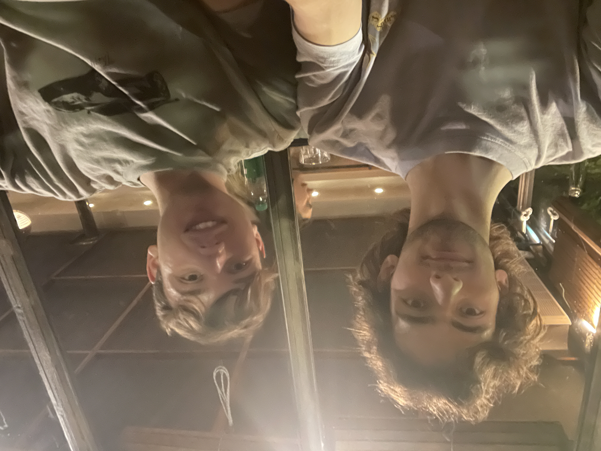
Mono and me
Lupi is also here, and he is really cool I like that he is here and I hope to see him more often. Chiara remarks how Lupi still has his chisled musculature, and she asks if Lupi still goes to the gym, he does indeed still go to the gym, he actually establishes he went today to the gym with Dani and probably someone else. I would like to join them but i'd be a little embarassed, i'll train by myself until I get strong enouph to not be embarassed.
Chiara and I eat a margarita pizza with spicy honey, everyone also eats some pizza. Chiara and Martina still enjoy of the pleasures of Nicotine, a habit that I was hoping was left in the past. But there is more to Lupi than what I previously mentioned, he also has a Cassino check that is apparently about to expire, so he has to go to redeem it. We all go to the gas station where Nico and I both get chocky milk, and then we head to the cassino. We all go to the bathroom, and we also meet jeff who was gambling in a suit. Jeff is our previous gym teacher back in UAS. He always made this very off-putting comments about girls... that were underaged. I never really liked him because of this and I am very surprised he still has a job.
We then proceed to go to a bar because Mati and his roomate are there. Chiara, Martina, Nico, and Belu go with Chiara, while the rest go with fabri. Fabri's phone is out of battery, so I get on the aux, and I expose my friends to some of Bruno's epic beats. In the middle of this experience, Chiara sends me a message about how there is a wedding at the bar that they were planning to go to, thus we will meet at MBC. We go there, but before getting out of the car they ask me to put Freestyle by lil baby.
Then Mati shows up, with his roommate Alex, not Alex the one in Canada, I'm going to call this Alex Alex2. So we all go to the bar, nothing very interesting happens at the bar. The most interesting thing I remember is that I played chess against Nico, but then Lucas took my phone and he beat Nico. All the while Nico told me about his backstory, where he had a startup company that went down because of his partner's greed, and how he wishes he had finished his engineering carrier.
Also I asked Martina what she was studying, it's international relations, or buisness. Something like that, I don't know who half of everyone in Uruguay is studying so its good that I got this written down here. Mono, Lupi, and I are all studying Biochem which is really cool. We are like the biochem squad.
Anyways, after a while of nothing happening, we decide to leave. Martina is eager to continue the night, she wants to go to Obra. Me on the other hand, im not eager to continue the night. Fabri takes Dani, Me, and Lucas back home while the rest go to Chiara's house, kind of against her will. I don't know what Fabri did, but if I had to guess... then I would guess but I wouldn't tell you what my guess was.
Rating4
It was nice to see so many familiar faces.
Date:19/12/2025
Climate:Sunny and Windy
Initial Spacetime:16:10 at Club lon tennis
Title:Tennis and the Pool
So i've been wanting to play tennis against Lucas for a while now, he is really good at tennis. And I am mediocre. Therefore I only managed to win one game, which is better than no games.
Then we went to pick up Fede, and that we did, he was very excited about being there. We talked about stuff that I don't remember about. I did mention that Sofe and Federico Berman where stuck in Madrid, and Fede looked it up and apparently there is a huelga that might or might no give him some problems in the future. But we did eventually arrive to my home. We looked at the pool, but today it was unusually windy meaningn that getting in the pool was a little scary. We all got to the pool and immediately left.
Then we played exploding kittens, it was really fun. We also played this new game called "Impostor" where we all have one word, except the impostor, and if the impostor figures out the word, the others lose. But if the others figure out who the impostor is without the impostor figuring out the word, the others win. I was really bad at this game but it was still very fun.
Rating2
It was nice, but not expertly nice because I was tired
Date:20/12/2025
Climate:Sunny and Hot
Initial Spacetime:19:56 The car of Lucas
Title:Mario kart adventures
So today I woke up and then I decided to go to sleep again. Waking up at like 18, which is bad but whatever. I texted Sofe today, and it turns out that she has made it to Uruguay which is nice. Also, while I was awake, Lucas and Raz planned to go to a pool table place, but it became to late so we instead went to eat something. Lucas picked me up and off we went to Raz's house.
On the way there, I asked Lucas if there was anyone he didn't like in the class, he responded that not really, but then he gave a little bit of a hot take. He asked "Sabes quien es alguien que me cae bien, pero a veces lo queres matar?" the answer was Raz. I do understand this sentiment to an extent, a very big one actually. I just can not understand how he didn't show up to the Alumni reunion despite having more than a month of anticipation, it's just crazy, like the one early event that I ever convince him to go to and he doesn't show up even though he said he would. Lucas and I don't really like how often he fails to show up at things, and even worse he later complains about not being invited, like... duh, if you fail to show up 3 times in a row people are going to start assuming you just don't want to be there. We still both agree that he is cool and good, we just don't really understand his lack of participation in social gatherings.
We also talk about how Fede and Raz hate each other merely for political reasons, which we both agree is dumb. I think I care about things deeply, and I have beliefs, but I don't let them interfere with my friendships. I also don't like how often Raz talks bad about Fede with no hesitation any time I accidentally bring him up.
Eventually we arrive to the house of Raz, and then we go to the diner to eat. We play a few games of impostor, and I even won one of the games, the word was blanket and it was all very epic. I ate vegetable soup. Also Raz has been recommending me this lemon pie for a long time, so I ordered one to go.
Then we went back to the house of Raz and we played mariokart. I had a cool setting which allowed me to use the controller as a steering wheel, it was way harderd for me but I thought it was more fun, Raz and Lucas eventually tried it out and that was the only time I won. Then I spilled a glass of water, and then we watched doctor house as Lucas fell asleep. He took me home after waking up.
Rating2
Thoughts
You might be thinking this entry is more about my thoughts on Raz than it was about what actually happened today, and you are right, because today I spent most of my day thinking about Raz. While playing impostor he said the word illegal and was somehow expecting me to connect it with mexicans, which just struck me as a little racist, and he also said fat people don't run. This attitude just strikes me as a little too judging-by-the-books-cover'y if you catch my drift.
I also think back to yesterday where I was talking to Fede about Raz and how he is going on a trip to Israel and thus he has meetings and stuff and that is probably the reason he couldn't get to the Alumni reunion, and I felt like I slipped up, because every time that I accidentally mention Fede or Sofe to Raz he kinda insults them, but when I mentioned Raz to Fede, Fede didn't insult him or anything, he was actually just kinda curious. And I liked this a lot because it means I don't have to censor myself in order to avoid hearing my friends being insulted, like the time Raz called Fede retarded in what sounded like an un-ironic way.
Date:21/12/2025
Climate:Sunny
Initial Spacetime:Unknown
Title:Sofe's comeback
Today we are meeting sofe for the first time in a long time. Upon waking up I created this little Document stored in a Portable Format that contains just about all of my thoughts about Raz, Sofe, and Fede and how they all hate each other and why. I love writing down my thoughs and analysing everything. And I feel like I have most definately reached a conclusion about the current war in the middle east. They all deserve to die, well actually no, if it were up to me no one would die. But if anyone dies it should be the people that are okay with killing others. The bad thing is the fact that it's not only the Hamas members and the Israeli goverment members that will suffer, all the innocent lives in-between. They are the real victims of the nonsensical war wagered by the evil forces of the Isaeli government and Hamas, and since they hate each other so much, there is no hope of this ending in any other way than one group, or the other, or perhaps both, disapearing, until only reasonable people exist. I guess it's the world's way of purging this nonsense, sacrificing thousands of innocent lives to get rid of the not-so-innocent lives. Well boy am I glad I have absolutely nothing to see, do, or care about in the middle of the east.
Anyways, after creating that awesome Document I asked Sofe where we were meeting up, the answer is in Punta gorda, immediately making me think of Fede and how much of a terrible idea it would be to invite him into this.
Lucas wants to go to the gym, but it's already 16:15 21/12/2025, So I don't know how he is planning to get to Punta Gorda at 18:00 21/12/2025, but I believe in him.
Before the main event of the day happened, I got in a call with Raz. This proved to be quite interesting. At first it was nothing out of the ordinary, he was just playing silksong after beating it for the first time. However then he said "You want to watch a lore video about why Islam's hate dogs". It was so random I failed to register it correctly three times in a row, also the mic cut a lot. I then confront Raz about his beliefs on the Islam population for the first time, by saying "I feel like you have some animosity towards this religion" he responded saying something along the lines of "Look, im just saying I don't like pedophiles and [something else that was bad but I don't remember]"
Then we proceeded to watch the video. The video doesn't actually attempt to give any explanation as to why Islams hate dogs, instead it's basically a huge compilation of quotes from the Qu'ran(Islam bible) aswell as some Hadiths(Muhammed quotes) that talk bad about dogs. Now to trust some random youtuber to succesfully interpret a religious text by just grabbing random quotes from such religious text and pointing out bad things... I know how it feels to be a victim of that because everyone does it with the religious text of my religion, AKA The Bible. And myriads of others also do it with The Torah and The Qu'ran. If we are going to just start picking bad verses we can mention how the Torah establishes you can rape women to force them to marry them or how the bible is A-Okay with slave trade. But if we want to get to some actual truth, then we might have to look at the context behind all of these quotes, and analyse the authors intent through the use of several lenses, most importantly the historical lense, seeing what were the values and beliefs of everyone at the time and stuff like that. Many people would say that is some very "woke" vocabulary I just used there, but I'd rather be woke than sleeping while analysing a text.
This video seemed to have one purpose only, to fuel a pre-existing hatred for a group of people. And I just really didn't like that, however I was way too occupied with other things to properly confront Raz about this behaviour. It's not even that I think that Islams are perfect, I despise the way they treat women, and the few Islam extremists do use these quotes as justifications for doing horrible things to dogs without any attempt to understand or correctly interpret their religion.
I won't say that I am an expert in the Qu'ran or that literature and history are in any way shape or form my expertise. I'm just saying that I would definately not approach this subject throught the use of every-day media such as youtube, because that might lead me to create some biased conclusions about a substantially large group of individuals. There is nuance to this stuff... is what I'm trying to say, and is what I wish I would have told Raz. I can't say for sure if Raz believes that absolutely all Islamists have the same ideology and they are all bad, and I was kind of afraid to ask because if he does think that then that would make him 100% racist by definition. And at this point in life, the grand age of 19 to 20 years old, I don't know how much you can change your beliefs, I know Raz is smart so I have hope he can change his beliefs.
And then it happened, some hours later, my mother took Lucas and I to the plaza of Punta Gorda, isn't that wonderful. Sofe and Bruno were not there. we arrrived slightly late at 18:20, but Sofe and Bruno also arrived late so it's all good. I walked with Lucas and I tried discussing this subject with him, but he quickly deflected to saying that the frickin sky was blue or whatever, meaning he probably didn't want to talk about it which is understandable. We walked around until Sofe and Bruno appeared. It was really nice reuniting with some very missed friends.
We start walking through the ramble. I talk to Bruno about my conversation with Raz. Bruno isn't surprised, after all Raz supports the decisions of the current Israeli government, which includes bombs exploding and killing people. Bruno agrees that Muslims do have some bad things as a group, they don't treat women very nice. Many women often complain about how much they need to cover themselves, and women that convert to Islam traditions often regret doing so. Not to mention I read a whole book that extensively covered this global issue. Persepolis by Marijane Satrapi. Raz had mentioned that this religion is relatively new in regard to the others, so maybe they are a little behind in the evolution of women's rights since the other religions got born early and had a head start.
I do severely disagree with the treatment of women, not only in Islam but also in all the other main monotheistic religions. They always seem like accesories or like unimportant to an extent. I wonder when we will move past this, maybe the next pope. Still, I don't really believe that the entirety of the muslim population should be hated because of this, and Bruno agrees. It's dumb to hate any group of people just because of a "might". However in Raz's case, Raz is a jew, and Islam extremists hate jews. Therefore we have a russian roulette situation, where in Raz's case its safer to not trust any Islam at all and assume they are all bad just to be safe and to avoid meetin a potential Islam extremist. Therefore Raz's beliefs can be justified by his innate desire to not die, one desire that I, and hopefully you, also have
With this out of my brain, I can finally, have, some, fun.
Fun Begins
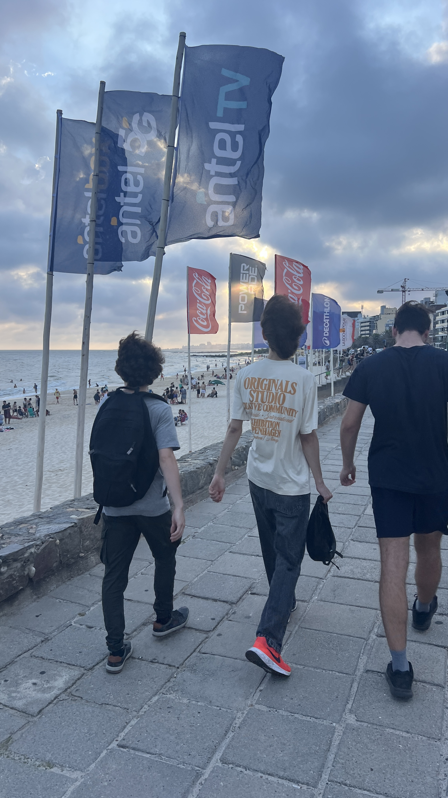
Epic picture taken by Sofia Castellano the future filmaker
Sofe asked about everyone's love life
The love life of the hyperbolic crew(I just made this name up)
Timothy: I told Sofe about the times where I unsuccesfull invited Mica to eat some ice-cream twice. I did not tell her though that I plan on trying to help her pass the Morphological Science exams throught the use of my expert-level Xournal pages, and that once I help her out she will immediately fall in love with me and we will live happily ever after. I can't think of any other possible route this plan could go on
Lucas:In his very own words "La verdad es que no se presentaron muchas opportunidades pero vamos a seguir jugando y haciendo lo que se puede en la cancha" or something cool as fuck like that
Sofe She said it was too complicated to be explained in a short manner, hints and pieces of Sofe's AMAZING love story will be scattered throughout this event, so you better read absolutely all of it because I know how interested you are in this
Bruno: Nothing too serious
So the first Key Hint we get about Sofe's love life is Arthur, a very attractive man that has broken up with her because he was having some individual troubles or something. Sofe didn't like this one bit, furthermore, this guy never apologised to Sofe, and now he wants to get back with her. But Sofe is doubting this. Not only because he hasn't apologised, but because apparently this guy has a criminal record and has stabbed someone... and now he is asking for Sofe's phone number.
So the answer to what Sofe should do is really clear, but let me narrow it down to a Multible Choice Question in order to make it easier for you, the reader.
What should Sofe do upon finding out the guy that stabbed someone wants his phone number
Try to help this individual work through his problems in hopes of eventually fixing them and living happily ever after
Ignore the problems and hope for the best
Never talk to this individual again
Tell your friends you know the right option but you still think he is too hot so you don't know what to do and just impulsively give this guy your phone number
The reasonable option would be option C, however Sofe opted for option D. Eventually we get to some random restaurant, we sit down in this random restaurant, and Lucas has an amazing idea. Playing Impostor. Now, I know we have played this a grand total of 2 times already, ones with Fede, another with Raz, and this third time with Sofe and Bruno. I have aquired some skills. So I am going to go into more detail here. The rules art simple
A word is chosen
An impostor is chosen
Everyone but the impostor knows the word
Everyone must say one word that relates to the original word, including the impostor
The impostor must figure out the word
The others must figure out who the impostor is
The impostor wins if he guesses the word after being caught
The impostor also wins if he doesn't get caught and someone else is wrongfully accused
The others will win if they succesfully vote out the impostor without him knowing the secret word
I will only cover the three most interesting games
The Hint Word problem
After a while of playing, we decided to activate hintwords. The word was KFC. Sofe said delicious, I said rabas (fried squid) Lucas said animal, and Bruno said Kentucky. This was a bad sign alreay, but I immediately noticed it was Bruno because he said the actualy word. The right play would have been to act as if that word was suspicious and vote him out then and there to lower his chances of saying KFC. However we played a second round aswell and it became clear that whoever the impostor was, he or she knew that the word was KFC, meaning we had already lost. Still, I think it was pretty smart how I managed to deduce it was Bruno despite him saying Kentucky. It turns out that Bruno got the word "Colonel" making it extremely obvious.
Proof Sofe smokes(She never denied it, but here is the proof)
Bruno's Betrayal
So the word was Switch, Lucas said "Change" Sofe said "Technology" Bruno said "Buttons" and I said "Change". It had seemed that the impostor had cooked in this one because all of the words were cohesive with one another. For the next round I don't remember what Lucas said, but Sofe said "Friends" and Bruno said "Wires" and finally I said "Control"
My main suspicion as of now was Sofe, friends just doesn't make sense, and I tried having her explain it, but it she didn't do so succsefully. Lucas was kind of unnecesairly suspicious of Bruno because Buttons and Wires is a little to vague. I can see the reasoning but at the same time. Sofe said friends... what does that have to do with Switch?? So I locked in Sofe. Lucas agreed with me and he locked in Sofe aswell, Sofe said it was suspicious how I was targetting her, so she voted for me, and Bruno, this mother fricker voted for me??? how??? why???? According to his logic... I have a Thymus... bitch, feckin everyone does
So we made up a rule that if two people get the same votes we Rock, Paper, Scissor our way to victory, and Sofe won. She was indeed the impostor and I wanted to kill Bruno for being so dumb how was I ever going to be the impostor my words were so good what the hell. I asked Bruno but as is tradition, Bruno failed to reply to my questions with any measurable amount of sense. Meaning that he was probably just trolling.
Timothy's Revenge
Safe to say I was proper pissed at Bruno because the guy is smart and there is no way he didn't know it was Sofe. He was just trolling me, so my primary directive was to troll him back. But I was the impostor. I decided that my troll back was to use the same words that miraculously got Sofe to win, those being "Technology" and "Friends". The other words that the rest said were "Airplane", "Car", "Lithium", and "Rabbit". We decided to go to a third round where I said "Electrons" since I had already figured out the word, I had already won. Despite this, everyone still voted me because I was clearly trolling with the first two words, but it was too late, the word was battery and I succesfully got my revenge by taking advantage of Bruno's word, lithium really gave it away.
Anyyyyhow. The food arrives and we devour it, the rabas are very good. I also remember that I asked sofe "In a matter of percentages, how much does hotness matter in a serious relationship" her response surprised me, "0%" - Sofe
It's not that I think it's wrong, I actually think it's 100% correct. It's just a little off because Sofe had previously stated that she cares a lot about sex in her love life. But perhaps I am entangling sex performance with hotness, which are two potentially seperate characteristics. But also Sofe's actions regarding Arthur seem to contradict her own response, since the only reason she is even considering being with him is because he is hot.
Anyways, we go pay for the bill, I ask to split the rabas in four. Then the guy if we aren't from here. And I say that Lucas, Bruno, me, and Sofe are all from here, but I say all the names seperately which was kind of funny. Turns out Bruno didn't eat a single Raba so Sofe payed his part and we made a deal to buy her a snack to compensate.
In our journey to a snack we get more Sofe romantic lore. There is this other guy called vince, and he is currently with Vince I think. Vince is not a stabbey like Arthur, so naturally Sofe should go with Vince, the only problem is that Arthur is too hot. And Sofe proceeds to show me some pictures of Arthur while eating hot bananna chips I bought her. I must admit, he does have muscles... although Lupi's muscles are bigger, so Lupi if you reading this, keep up the good work ma guy. Still this guy was definately more attractive that Vince in my opinion, and Sofe agreed. I would still not put his attractiveness on the "omg I would absolutely let him kill me" side but... there are no buts sofe should absolutely never speak to this guy again and if she still is, then she is either stupid or she is looking for a final one-night-stand, which is stupid regardless so yeah. I'm glad my life is not in her hands otherwise thigns might have gone sideways for me.
Then I get into a philosophical argument with Bruno, is it possible for everyone on earth to be okay with each other existing some day. The answe we came up with is... it's theoretically possible. But the only way for it to happen is that anyone that hates another group ends up getting killed because of that very same contempt. And only peaceful people remain. The only problem is that then the peace might once again get disturbed, and the cycle will happen all over again. There is no escape.
Then we get to the plaza where Sofe gets called by Ian, the third guy he is dating. Ian seems like by far the best pick, but at this point I have given up trying to convince Sofe, she knows what's best. It's just a matter of her overcoming the attractiveness of Arthur, which..... is apparently harder for her than it would be for me. I mean Mica is probably the prettiest girl I have ever met, but if I knew that she stabbed someone I wouldn't really stick around to find out if she might stab me. Specially if I don't know her that well.
But what can I say. Later Sofe and Bruno folded a cigarrette and filmed a tutorial about it. Also I asked Sofe if she plays chess and she indeed does because apparently its a form of rizz in France. I didn't know this, but I acted as if it was. Then Sofe and I practiced rizz(we played chess against each other) and Sofe's rizz is really bad. Unless the rizz part of chess comes from sucking at the game completely, then Sofe is really good at rizz. I recommended she learn the French defense for the next time we play the game, which might be never since I don't feel like she enjoyed playing me.
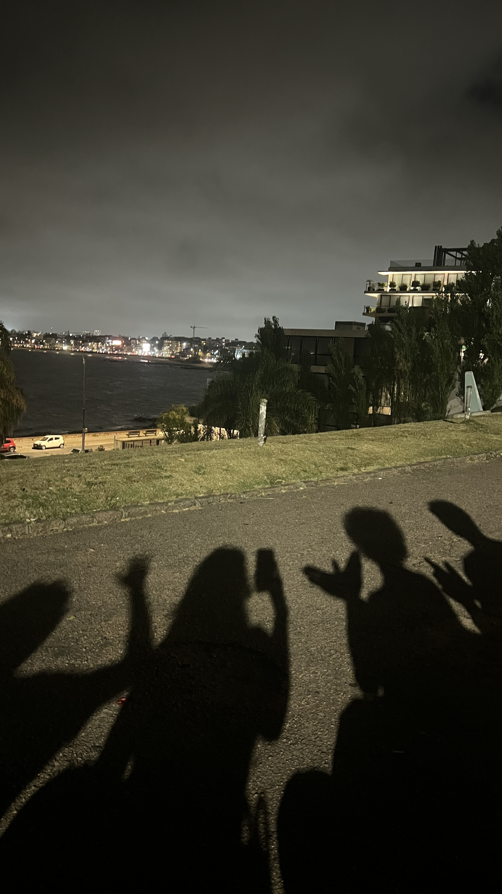
Shadows of the people
Then me and lucas left.
Rating3
It was really cool, I specially liked the part where we played impostor and I specially disliked when Bruno ruined my expert deduction by trolling.
Date:22/12/2025
Climate:Cloudy
Initial Spacetime:21:00 Mono
Title:Asade
Before the event
I woke up today thinking about Islams and how true was the dog-hating claims that Raz made yesterday, thus I spent most of the day investigating this. And I came up with a second Document stored in a Portable Format detailing all my research about why the Qu'ran says this. [[SPOILER ALER: It doesn't really]]
Then I get to a very big discussion with Raz about weather or not anyone who believes in Islam is bad and deserves the hate and condemnation of Raziel Meir, a wrath I wouldn't wish upon anyone. It took a while, a huge while. But I managed to get him to agree with something along these lines, "Given that the Muslim individual hasn't interpreted the religious texts in ways that disagree with my[Raz's] personal values, I don't hate him". So that sounds like a really dumb and obvious conclussion we could have gotten to in like 5 minutes.
But most of the 2 hour debate was spent with me trying to convince Raz that it's still possible to interpret the Qu'ran in non-evil ways. Raz believes that in it's core, it can't be, because the religion itself was corrupt, I believed that it wasn't the religion that is corrupt, but mostly the people that are in current control of the main narrative of the religion. He eventually admitted that it may be true that it's not the religion itself that is evil, but instead the most popular interpretation of such religion, aswell as the interpretation of Islam extremists. To disprove my claim, Raz would need to find a verse in the Qu'ran that is undeniably, indisputably, 100% bad, and no context can possibly save it from being bad. I think im in the clear because I don't think that is actually possible. The bible has slavery and buying women, yet the context still saves it from being racist and mysoginist. I very highly doubt that the Qu'ran differs from this in any way, but who am I to know, i'll let Raz look it up.
Anyways, after that, the event begun
I went to Lucas' house, he is doing an Asado tonight and he has invited Dani, Luca, Fabri, and me into his house. I cut the bread, Fabri critiqued our contributions, Luca cut the chorizo, Dani brought the chimichurri, and Lucas cooked the meat. It was wonderful. The meat was really good, Luca brought some cheddar-injected chorizo which was nice. We also played a few rounds of impostor that were really interesting. I won one where the movie was Matrix by guessing the word, which was epic. Luca won one that said "City Hall" because he just bounced off something I said about Pam Bondi.
Later we ate ice-cream and it was good. Then we went outside and talked about random stuff. I told Dani how Raz was a little racist towards muslims but I managed to convince him that not every devout muslim is bad. Dani said it's no surprise since Raz is a jew, I don't necesairly think that logic applies, i've met jews that don't hate every devout muslim ever but whatever. With Dani we also talk about how we used to play tag in this house and some cool memories.
Also, Luca is studying finance, with some coding stuff I think.
Later we all went home.
Rating1.5
Date:27/12/2025
Climate:Sunny
Initial Spacetime:Gym of Lon Tennis
Title:The Birthday of my Sister
So, a few days have passed, so I'll catch you up. My sister, Leo, and my parents have gone to Punta del Este. And I am staying in my house with Alberto Gonzales who is one of my dads oldest friends, he is a very smart and succesfull man/entrepeneur. My original plan was to leave with Albert to see my sister in Punta del este for her birthday.
So I woke up, and upon doing so I have a cool and nice interesting talk with Albert about politics, he has a lot of opinions, my favourite one being that Donald is the worst president the United States has ever had. He offered me a narrative that I have never heard about Donald , and I have heard a shit ton of narratives about Donald .
Albert's new Donald Narrative
Donald has inherited a bunch of money from his Father, a multimillionaire real estate agent or something. So according to Albert, Donald has never created a succesfull buisness in his life, no buisness that generates money. I asked "What about the Donald Towers" and Albert responded that someone else created the Donald towers and he payed Donald to use his name. I don't know much about the buisnesses that Donald has created over the decades, so I didn't really know how to question this claim, but I chose to believe him.
I also chose to believe him when he said that Donald once had a reality show called "The Candidate" or "The Apprentice" I don't remember, but it was basically a show where Donald needed to make some decisions and according to Albert, every decision he ever made was terrible. Albert read that the producer was actually shocked at how horrible Donald 's choices were.
The final piece to this puzzle is that once Donald 's show was over and it was canceled, Donald was mad and he rallied up some people by giving them 50 dollars each, and he anounced he was going to be president. So he ran for president and he wasn't expecting to win, but somehow he did. However none of his crazy laws got approved because yeahh. But this second time he did actually get to pass some laws because he got some people into congress.
Also, the war of Russia vs Ukraine was apparently about to end, but when Donald won he started supportin Russia which extended the war until the present day. This is because according to this narrative, Donald is a dumb, easiy manipulated, bad person. This leads to a little bit of my own theory, Donald was re-elected as president because other people in power were interested in having an easily manipulated person in power of the USA. Putin really likes the friendship he has with Donald because he gets to have Donald 's pseudo-alliance in this whole mess. Some people may argue that Netanyahu is doing something similar. However that situation is a little bit more nuanced than Russia and Ukraine, therefore I won't go into it.
I personally think that this narrative is really interesting, coming from a person that not only lives in the US, but is also really smart and influential. Furthermore, Albert emphasises that the worst thing Donald has done is pass some sort of bill/law that said that presidents have immunity, which I don't know about you but that sounds an awefull lot like what Kishner did back in Argentina, and Kishner is probably the worst president of Argentina.
Anyways, I ended up not going with Albert to Punta del Este, opting to stay in my house to take care of my dog. Later this day I went to and Asado that Luca insisted Lucas to do. Dani and Fabri came to pick me up, and apparently Luca forgot to show up so. Anyways, not much to say about the Asado, I bought some pomelo fanta and everyone liked it more than what they expected. Also I got everyone to play speedchess against me and each other and it was really fun. I'm actually not that good at speedchess meaning that it's more fun. Dani actually beat me in an epic game.
After the Asado was done, I played spaceteam with Fabri and Mono. And after that, we all started listing the worst ways to prepare for a marathon.
Rating3
Date:28/12/2025
Climate:Sunny
Initial Spacetime:My house at like 17ish i don't remember
Title:Fede's last Sunset
So Fede has been in Uruguay for quite some time now, but he is leaving the 29nth of December, meaning that tomorrow he is gone. Therefore I wanted to spend some time with him before he's gone. So I arranged to meet at Punta Gorda right after Lucas and I finish our gym session, we can witness the sunset and then go eat crepes.
So we do that, Lucas comes pick me up at the and we go to the gym, I trained legs. And then we went to Punta Gorda where Fede resides. I tried to talk to Fede and Lucas about some recent shows I've been watching such as stranger things and Frieren, but I kept getting interrupted by Lucas calling out random things and Fede also calling out random things, so I stop talking about this stuff that they clearly don't find interesting. I ask Fede what he thinks about the recent Chilean elections, this is because sometime ago I saw some Chilean friends post about the Chilean elections and they were all pretty pissed, and now I want to seem like I am very socio-politically aware of the situations around the globe so I've been asking everyone about the Chilean elections to seem smart. So far everybody has said they didn't even know the Chilean elections happened, but Fede is the first out of many to break this trend. He says he hates this new president because he supports a previous Chilean dictator called Pinoccio or something like that.
This Pinoccio guy was apparently pretty bad and Kast openly supports him. Furthermore, I have read that Kast is openly against gay marriage. Being opposed to gay marriage is a massive red flag to me, because it just tells me that you are caring a little bit too much about what other people do with their life. And you also might be putting a little bit too much blame on something as inconsequential as a man marrying another man. Regardless, my opinions about Kast seem to align with Fede's, along with most of my Chilean friends. I will consider asking one of my Chilean friends her opinion about their current president so that I can get a more accurate narrative about his policies and what his presidency means for Chile.
Anyways, we see the sunset
The Sun Sets
Rating2.5
Date:31/12/2025 - 01/01/2026
Climate:Sunny and really hot
Initial Spacetime:The House of the Borit Family at like 17ish
Title:New Year Begins
So, a new year finally arrives. We were invited by the Borit family to spend the New year's iniciation at their home in a farm that they have far away. So we went there. This family is one whom my best friend belongs to, he is a really cool guy called Constan.
We arrived before constan, so I just waited for Constan a bit while walking Capu(my dog) whom I insisted in bringing here becasue I didn't want to leave him alone for new year. Eventually Constan arrives and we catched up, apparently he has gotten a lot into pokemon and raft.
Everyone starts preparing the food while Constan and me talk some more. Then we eventually al had the idea to play sardines, I personally don't really like the game but it was still fun. After that I played Chess with some people and it was fun, I also popped open my Guarana that I bought the other day. Apparently the borit family is quite fond of Guarana, so that was great.
It's also worth mentioning that Salvi and Constan are both kinda injured but not seriously. Salvi fell due to a 0.5 meter steep elevation change in the floor while avoiding a beetle and a rat on his way back from aquiring his nintendo switch. He fell sideways into the floor, forefending any head-injuries but intaking some arm-related-damage. Constan had some sort of injury in his foot, I don't remember the origin of said injury so it must not have been as interesting as Salvi's adventure.
We ate steak with salad and it was not bad at all. What was even more not-bad-at-all was the chocotorta we had as dessert. That was one of the most not-bad things I have ever tried. Eventually the new year comes, we all pray some prayer that priscilla gathered, it's supposed to have god forgive us for all our sins
Then the new year arrives, we threw some bombs and stuff, we took pictures, it was all very fun. After that, I played some Chess against Constan, Bruna, and I let Bruna play my sister. My sister was unfortunately destroyed by the power of Bruna.
We left after that, Constan and I vowed to one day play our pre-destined game of paddle once his injury healed itself.
Rating
Date:03/01/2026
Climate:Cold and Windy
Initial Spacetime:Punta del Este, Vitaminas Appartment
Title:They captured Mature
So I have gone to Punta del este with my sister, my mother, and Leo. It's legendary here. at first in 02/01/2026 it was hot and terrible, but now it's cold and windy. Perfect for some epic stuff to happen. Talking about epic stuff that happens, Maduro got captured by the US forces. They basically got bombed and stuff. For context, Venezuelan boats often arrived at US shores, and these boats often got bombed by the US because they were suspicious about it's possibly drug content. There was no evidence of drugs, but absence of evidence is not evidence of absence. Still I don't really think they should have gotten absolutely bombed I think they should have gotten arrested but whose to say nowadays.
So apparently the United States of America got mad at Venezuela about this. Donald decided to bomb Venezuela and kidnap maduro. This was all done without congressional approval, but when has that stopped Donald before, man doesn't need congressional approval, fuck the entire basis that the US is funded in.
All throughout the day I am also talking to Lucas, he is trying to get me to hang out with him, but he is being incredibly unsuccesfull. Meanwhile I have been thinking all day about the time that I debated with Raz about transgender people. So I wrote my thoughts down stream-of-conciousness style right here. It's all my opinions about trans people.
Raz is very happy about the US having captured Nicolas Maduro, meanwhile Fede and Sofe both remain extremely worried about what this means. Sure, it's #epic that Maduro is finally gone, but that stuff is obvious, what about the more interesting questions? Will they allow Venezuela to host a new unbiased and un-influenced presidential election? Will the US just leave them alone after this act of good faith without taking advantage of the natural resources at their disposal? I think that's going to happen, and that isn't sarcasm, it's hope. It's hope that the US is only doing good here and it hasn't interfered in Venezuela for any ulterior motives such as the massive oil reserves they have.
Later that day, I went to meet up with Lucas. We both walked towards each other and we met in the middle. Then we walked a little more talking about random things. I decided that it was a good idea to go to a wooden bridge by the beach, unfortunatelye to get there, I had to climb. I somehow managed. Lucas ompted to instead find an entrance to the bridge. So I waited for him until he came to me, and we walked by the bridge.
He took some cool pictures of the ocean and I took cool pictures of the incredible steep I had to climb, made me feel like white knuckle in real life. Anyways, we went to try to find someplace nice to eat, and eventually we did... it was McDonalds. Everything was way too expensive so I chose the cheepest option, which was still expensive.
I ate some nice fries and a burger, and I also played some chess against Lucas who was surprisingly playing impressively well. I ended up winning only because of an extra pawn. Overall it was really fun.
Anyways, after that the plan was simple, I take Lucas home because he is way too tired to walk all the way back. It's also way too cold for him to walk all the way back. So we went to the apartment I was staying at to get the car keys, but it turns out that my mother had gone to get Leo because they rejected her entry to a party she was going at with my sister.
So we were stuck at the ground level of the apartment, which is a Cafe. I played games on Lucas' phone while he played games in mine. Until my mother arrived with the car and I was able to successfully deliver a Lucas into an apartment that belongs to Lucas.
I later went back home and asked Leo how she didn't get in. They asked her some questions and told her to get out because she didn't have a colombian accent and her ID said she was colombian. So that was unfortunate.
Some epic music I have discovered
Rating3
Beach
Date:04/01/2026
Climate:Clear
Intro
Wow, look at this cool new format that i've created, I've been trying to find a way to include time as a component since I had the locations. I thought about putting the Initial Spacetime which would mark the initial location and time, and after that you could just follow the story to know where I am and when everything is happening. However I decided to not do that and instead specify every time I change the location. In the process improving the format of everything in general.
So, Lucas invited me to go eat something with Fabri. But he is not responding to my calls, so I call Fabri instead and apparently they are all in Fabri's car. Additionally, Lupi and Luca are also there which was surprising to me. So I find a way to go there by having my mom taking me there. And that is where the event begins
Space:Restaurant
Time:Night
So, upon entering the restaurant I encounter Lupi, Luca, Lucas, Fabri, Mati, and Chiara. It was a taco restaurant that Lucas and I had previously concluded was too expensive. So then we went to another restaurant that was equally expensive, but Mati had previously gone to this restaurant and he said it was good.
Eventually, Martina arrives, accompanied by a long-time-no-see aquaintance Marina Battig, whom I never thought I would see again so I didn't bother creating an Individual Entry for her. But be not afeard, I have now created an entry comprised of all essential details you must know about her
So we were all there, deciding what food to get, I opted for the signature burger of the place, and Lucas did so aswell. I listened to everyone talk about the current Maduro situation. Basically the US suddenly decided to Caracas and kidnap Venezuelan dictator Nicolas Maduro. Everyone has some really cool takes, which is to say the same takes I have about it, and Fede, and Sofe too. Basically it's nice that Maduro got captured, but we all agree that the US most likely didn't do this out of the goodness of their heart. There are most definately some frugal motives likely pertained to the large oil reserves that Venezuela holds. The US will be capable of getting access to this oil for a relatively cheap price.
Lupi says that it's nothing too complicated, some rich people with influence wanted Donald to gain access to Venezuela for oil, and Donald gained access to Venezuela for oil. Venezuela was specially easy to invade because not only does the US have an extradition treaty that technically allows them to arrest anyone there, but also Maduro just happens to also deserve everything that just happened to him. Therefore the US was able to gain access to oil under the pre-text of dealing the Maduro.
Lupi also says something that I severely agree with, that being that Donald has gotten away with doing so much stuff that is considered illegal. This by itself could definately under some definition be considered as an act of war, which would make it illegal since Donald didn't consult with Congress. Furthermore it's a little bit scary that he threatened Mexico, Colombia, and Cuba. I hope he continues these operations through more rigorous and organised methods that don't make it seem like you can just do that to anyone.
Then the food arrives and we eat, also Lucas and I play chess which was fun.
After that, we payed the food. Paying the food was a little complicated due to the sheer incompetence of the Counter Lady. I told her that I ordered a hamburger and some water, and she charged me 1600 uruguayan pesos!! I thought something was off but I was too tired to care, worst case scenario I pay for someone else's food. Turns out I did indeed do that, it was Luca's food, and he payed me back though so no worries.
Space:The Streets
Time:Night
After that, we went outside to plan our next move. Marina and Martina apparently had a pre-made plan to buy wine and consume it at the place where sand and water meets. The Beach.
But Mati is tired, he establishes that he will refuse to do any Beach activity unless it takes place on the coast closest to his house. Given that this fact was probably true, most of us opted to follow Mati's request because his presence was essentialy to us. Lucas had to go to the bathroom so he entered a random hotel to use the sanitary facilities. Then we went to buy Razol-containing-beverages created from the fermentation of fruits. I don't know why but I find it really amusing to use unconventional ways to refer to things in case you haven't cathed on, sorry if you don't find it amusing to read it.
Regardless, we eventually made our way to the home of Mati. On our way there... I don't remember what we talked about, but it was probably fun. Upon arriving to Mati's, he delivered some towels and other beach equipment that would increase our comfort levels while we resided in the sand. We made our way to the beach, stepping on the sand with my brown shoes that Lucas dubbed the "Brownie Specials" as the moonlight shone upon us. We settled at a spot near a lifeguard cabin and began listening to some acoustiv guitar music proportioned by Mati. I liked this stuff way better than the things Fabri and others tend to listen to.
Space:The Beach in front of the house of Mati
Time:Night
After arriving to this spot, we slowly descended into the topic of philosophical discussions and questions. I love it when this happens, after a long time hanging out, some groups tend to just start asking would you rather questions and it's always really fun. I won't pretend I remember all of them, because why would I do that? I have no use in pretending I have picture-perfect memory.
But I believe it all started when Marina and Lupi decided to take some nice animal quizzes, I got one question right about Cats having four whiskers, which I knew for some reason. Then we had a little bit of an animal-fact showdown. Here are some facts provided by all the different parties.
Lucas: Rhinocerous horns are made of the same material as your names, Keratin
Marina: Baboons are very dangerous
Timoteo: Pine Martens are the only weasel with retractable claws
Lupi: (Lupi knows approximates 2 shit tons of animal facts but I don't remember what he said or if he said any)
Then Marina decided to immortalise a moment with a celular device that happens to have an optical capture mechanism which conver... she used her phone camera.
1) Us walking towards a spot to sit down 2) Marina's picture of the rest of us 3) Makeshift campfire
Then we talked about new year resolutions, except Chiara struggled a lot to say the word "resolutions". Thus, in order to troll a little bit, we all started saying any word except resolution, such as revolution, resolvation, reaction, other stuff. I believe Chiara wanted to focus more on herself but that's about all I remember. Here is a list of the new year questions.
Lupi learned to care less about what other people think
Marina learned not to fall and break her face
Chiara said that everyone knows what her biggest mistake was, my guess is that being with Santino was a mistake
Martina says she should've let Rafa(her previous boyfriend) go sooner
Lucas says he wants to Gain 2 pounds
Fabri wants to go to the gym more often
Luca had some regrets i don't remember
Lupi said he actually had no regrets #coolguy
The person that has helped everyone the most throughout this year was either themselves, their mother, or their sister/brother, or their father.
Marina wants to party less or party more, I don't remember which.
Martina wants to leave Uruguay, be more independant, and go study somewhere else, apparently she regrets staying in Uruguay for some reason, even though it's the best country ever
Alright timo, don't forget to put something else here if you remember
After that, we started asking would you rather philosophical questions
Would you rather die tomorrow or live forever?
Gay son or thot daughter?
If you could only eat one food for the rest of your life, what would it be?
What is the best thing that ever happened to you?
Whose death would cause you the most devastation?
There were also other tales, but I'll tell you everyone's main gist.
Mati
The most important thing he said was that he needed to care more about who he surrounded himself with. Since he had unkowingly surrounded himself with people that might not have been the best apparently
Martina
Martina's whole theme behind her words was based on gaining independence and her plans to gain further future independence and possibly move out of Uruguay
Fabri
Fabri's semantic feel had a humorous atmosphere for most questions. Fabri is a really kind individual, he is the Uber of the group and I hope he knows that he is really appreciated for it. He is also probably the funniest guy in class too.
Lucas
He barely spoke, but he did occasionally walk around
Chiara
Chiara's ultimate thematic statement was that making good decisions is good, and she probably should have made some better decisions. But because of all the good decisions that she hasn't done this year, she is now better equipped, and the chances of good-decision-making have increased for her.
Luca
Luca said once something similar to Mati, that's all I really remember unfortunately. But it's a good message so I guess it's worth saying it twice
Marina
I actually don't remember anything Marina said, she was the one mostly driving the conversation forward, perhaps proving her enthusiasm to learn about how her fellow friends have evolved over time. If I don't recall incorrectly, I think she said that she wanted to focus more on her studies, or less in her studies and more parties, or more travelling, or less travelling. She said one of those for sure. She is also not a fan of Baboons
Timo
It's time for you to listen to the voice of the author. I didn't say much, I just answered the questions I had and all. But if there is one thing I said that I think stuck to everyone else, it would be that I am working on becoming less shy. Even though I have improved, im still working.
After that amazing session of getting to know everyone else a little better. We all packed our things and headed towards the house of Mati
Space:The house of Mati
Time:Night
We said our goodbyes to each other. I say goodbye to everyone since I may never see them again. But hopefully I will.
Rating4
After Punta del Este
Date:13/01/2026
Climate:Clear
So, after I came back home from Punta del Este, lot's of things happened. Most importantly, Leo is gone. She is now as of (13/01/2026) in Denmakr. Talking about Denmark, yesterday Donald has revived his interests in the ownership of Greenland, for me this is really funny because it's such a random ass country. I asked Raz about it yesterday aswell and he told me some new information, but we will get to that in the future, first let me tell you some other things that occurred
Sofe and Bruno are gone, Bruno left to the US and Sofe to la France. Lucas, Raz, and I went bowling. I got second, Mono got first, and Raz got last. In a second round I got last, Mono got first, and Raz got second.
I've also been chatting up with my instagram friends a little bit more. I sent my bingo card to the table tube gang to see what they could add to it. They had some cool additions, I'll make sure to include the Bingo Card in one of these entries once it has finished.
Other news are that I have bought a SuperNote Manta tablet that I will put to good use in my future math endeavours.
Lastly, the main event that I wanted to include in this entry
Space:Airport
Time:12/01/2026 20:30
I am at airport, and so is Raz. We are both waiting for our dear friend Lucas to arrive. Lucas is unfortunately departing today, he is going back to the US and he is not happy about it. But we arrived before him so now we just sit around. I bring up the newest hot topic, Donald wants to own greenland... again. It's always really interesting talking to Raz because I know he is always going to believe the opposite to what I believe, in this case he justifies The US's aquisition of Danish territory by arguing that the US needs it to safeguard the antarctic from Russia. The Russia and Ukraine war is still going on. I have no idea why Mr Pudding wants Ukraine so bad, just let it go man it's not that deep. People are dying because of this.
Regardless, Greenland is okay with the US establishing military outposts in Greenland, however Donald was explicitly stating he wants to "own" the territory, and that's something that essentially no one in Denmark wants. I told this to Raz, he said they might be happy to be part of the US. I don't think so very much, because people tend to hold some "Patriotism" to their country. I compared the situation to the UK's invasion of the Argentine Falkland Islands. To this day I have no idea why they did that, and to this day most Argentine people are properly pissed at the UK for doing that. Raz is not amongst these people, apparently he couldn't be less bothered about all the people that died for little to no reason at all during this conflict. Not very patriotic of him in my opinion (He is Argentinian), but also I feel like even if he wasn't Argentinian, it's pretty easy to see that the UK was in the wrong. Just like how the US would be in the wrong if they tried invading Greenland, which they won't, because I have HOPE.
We walk to this Mc Cafe and sit down on one of the tables while still discussing the topic. I pull out my Chess board, and I try to have one of those epic movie scenes where two parties are having an argument while playing chess, and any time one of us made an exceptional point, we follow it up with a "Check" on the king. And when one of us wins the argument, "Checkmate".
Raz makes the point that the US has done this before unpunished, I counter by saying that doesn't really make it right, and history won't repeat itself. Raz gives me the smugest look of all time as he questions my Historical Knowledge. To my surprise he isn't engaging in the chess part of this situation as I was hoping he would, he isn't moving any pieces. Which is sad because I was really wanting to have that movie scene. I respond to his claim that history always repeats itself by saying that we better hope history doesn't repeat itself, otherwise we will have world war 3, and 4, and 5, and 6, and 7, and 8, and 9, and 10, and 11, and 12, and 13, and so on. Raz retalliates saying that although it's important for countries to respect each other, it's also important to recognise that people will have bad intentions, and one must be prepared for them. I still don't see how the ownership of greenland is necessary here, why not be satisfied with a cooperation with Greenland. Raz agrees that military bases in Greenland would be okay.
After reaching a consensus, we played Chess without talking all that much. It's a shame that the discussion and the chess game happened at different points in time, but this probably improved the quality of our arguments aswell as our moves, because multitasking is not usually good. It was an epic game until I forced him to trade his rook for his knight and he gave up. Like c'mon maaaaan, it's not that bad, I was even considering not doing it because horses tend to be more valuable in closed positions like the one we were playing, but whatev.
Lucas eventually arrives, but he has to leave fast because he kinda late. So we just say our goodbyes, take some pictures, and leave. Overall I hanged out with Raz more so than with Lucas, but honestly I like hanging out with Raz aswell. I like having political discussions with him, ones that I can hardly have with Lucas since he is not a very political person.
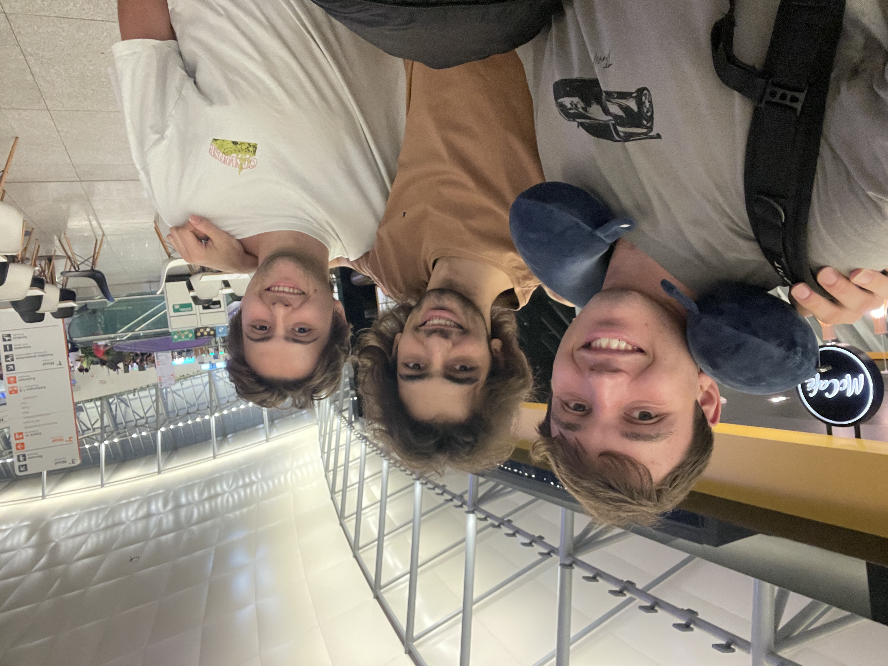
Chess match and selfie photos
And since Luca is leaving, here are some extra photos of the things that happened after Punta del Este
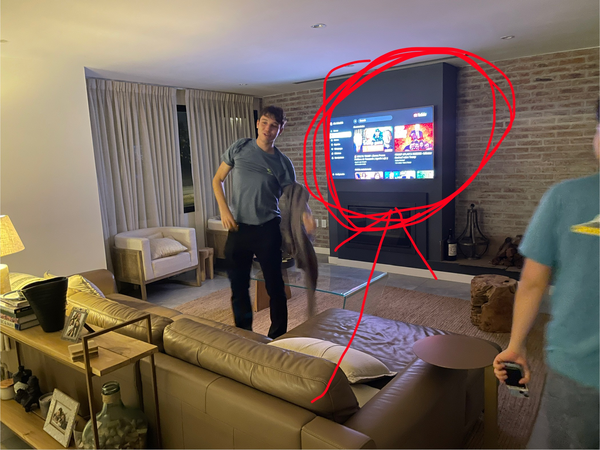
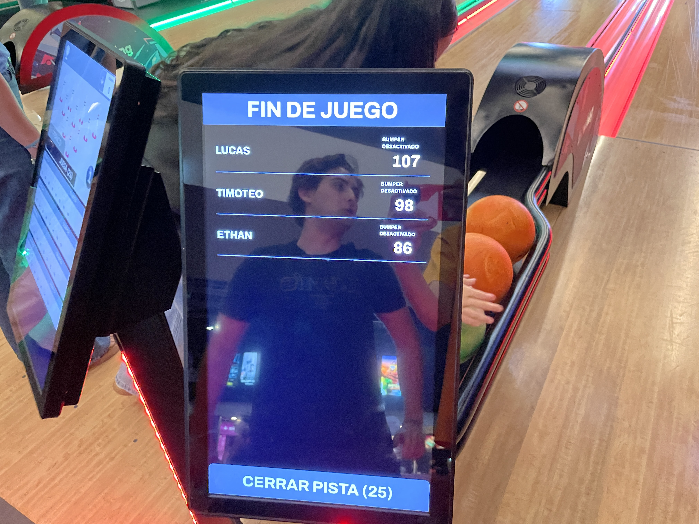
The Trio of Troubadors adventures (That's the name Raz created for us three)
Rating2.5
Mono will be missed, even though he is coming back in 6 months
I'm all alone
Date:16/01/2026
Climate:Clear
I find myself with no friends in Uruguay, Lucas has left, and Raz left yesterday to Israel where he is going to have some epic Israel-related adventures(no clue what he is doing). He is probably going to go camping. Megan informed me that some buddhist monks created traffic in her area. Fede informed me that san has aquired a special vehicle.
Adventures I was informed about.
I also talked to Raz, I told him to send me pictures and that everything he tells me would be included in this website. The fact he didn't even respond to that message leads me to think that you are not going to be hearing from him or his Israeli adventures. Except for this one detail, he crossed paths with school counselour Valentina Manzo during his trip.
I also started a small political discussion, which I am getting more comfortable with having, which is a good thing. I know that Raz is somehow always going to believe the opposite of what I believe, which I find entretaining. The subject of discussion is the fact that the US banned Uruguay along with 74 other countries from creating immigrant visa's. The official statement is that they want to diminish "Public Charge" which is a way to refers to the amount of money that the government has to spend on immigrants through public service. If this money isn't net negative then that's bad because the immigrant isn't winning you any money, meaning you loosing money.
However Uruguay is really cool, and all of our migrants are considered low-risk because we tend to be surprisingly productive and well educated. Who would have guessed. It makes sense since we do have the highest standard of living in latin america. Therefore I think that Donald 's decision to ban the creation of immigrant visas from Uruguay was not economically driven. I asked Raz what Uruguay could have done to deserve this.
Raz responded "Communist Government" with no elaboration. I opted for a similarly unelaborated response "No?". Meant to communicate to Raz the fact that our current president is often described as being "center-left" in the political spectrum and so far away from communism you couldn't even see it with a telescope. Raz (who is travelling to Israel at this point) responded after a while with the word "Adjacent".
It was funny the first two times but at this point I start to get tired of this inneficient style of communication, so I deliver to him my full fleshed out opinion for him to either disect, counter, or ignore.
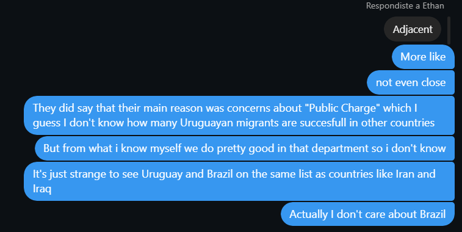
Uruguayan migrants are surprisingly productive according to what i've read, so what are the possible causes towards the decision to do this to Uruguay. One possibility is ideological differences, which is what Raz is suggesting. This is unlikely to me because not only would it be a little petty and immature, but the Uruguayan government is barely skewed to the left. I would understand it more if we were a government of leftist extremists, sure. But that is not the case, we aren't a communist government or anything close/adjacent to it.
Therefore I can only conclude that the US hates Uruguay and thus we must immediately start a war. Whoever strikes first wins... wait... what do you mean we don't have nukes?
Ratingmeh
Upon some self reflection I realise that by being extremely concise, Raz was either trying to be humorous or trying to signal to me that he doesn't want to talk about this. So he is probably not going to respond, considering how he might actually have better things to do in his fun trip.
Lucas types
Date:17/01/2026
Climate:Clear
Today I mostly spent the day with Lucas on a call, he is starting to study and for some reason I found it hard to study today. I showed Lucas my brand new dictionary page in my website comporised of a lot of words that I like. Lucas then had the amazing idea to look at all the pictures in "The Chronicle" this took us 2 hours in total. This was an interesting conclusion, skimming through the chronicle takes 2 hours total.
Then we worked on some definitions for the Glossary I have, which was pretty cool. I wonder what Raz is doing right now. In case you were wondering, he did in fact not reply to the political message I sent him. Which was to be expected.
Rating0.1
Not a specially good nor bad day, just neutral. Remember that this scale is from -5 to 5
On Air
Date:21/01/2026
Climate:Turbulent
Space:The air
Time:Uruguay 20:07
I am on an airplane right now, that's why I had to specify that the time is 20:27 in Uruguay, but not where I am at right now (The middle of the Atlantic Ocean). That's right, Lucas and Raz have left Uruguay, so I decided to leave aswell. I am on my way to Italy to skii, I will unite with my firend Lucio Gonzalez whom I don't believe I have mentioned so far. He is basically the son of one of my father's friends from when he was doing his masters. He is a good friend of mine, the most notable is staying up till 6 AM eating ramen and watching one of the worst shows called "The 100". I am going to write and Individual Entry for him.
He is also going to give me a new Supernote Manta tablet that my mome bought me for christmas, and I am really excited to use it to do math. Because that's another thing im on. I have to do math. Quite a lot of it. We have to study at least 1-hour per day. It's going to be touph but I know it can be done. Im also probably going to learn snowboarding for the first time. And last but not least, I am going to visit my friend and fellow Table Tube Gang member Fede. One of the smartes people I know, I always forget what he is studying so I can't wait to ask him for the 13nth time in person.
Anyways, I just finished watching a movie about a jew lying about the fact that she was in the holocaust and it was a really good movie. I also watched another about some turtles becoming popular in high school. There is really not a lot to say about this flight.
Rating
Skiing with Lucio, but we didn't ski at all
Date:25/01/2026
Climate:Snowy
So we are in Italy in a ski resort, the only problem is that it's snowing and the visibility is incredibly low, therefore it's immposible for us to properly ski. Therefore we did other things that weren't skiing. We went to buy skiing equipment, hopefully for some skiing in the future. We also played some epic ping pong matches that Lucio didn't exactly win. But he was close once.
Also a random guy got shot by ice again. The first famous victim of ice was Renée Nicole Macklin Good who was killed by an officer. The most insane part about this isn't the killing in my opinion, I mean it was pretty bad and poor nicole died when she didn't really have to. But the most insane part is that Donald didn't condemn the police officer who did this, he condemned Good instead??? Creating a narrative where Good was trying to kill the police officer with her car. here are my opinions on the subject
Anyways, I also figured out that Lucio is actually a really smart guy when it comes to politics, he says that Donald has some great ideas but some terrible execution. It's a good idea to get illegal immigrant out, but sending them to concentration camps and killing them is not the best execution. Improving the economy is good, but doing so by recklessly putting tariffs on all countries demolishes trust among other things. Lucio gave me many other examples, and it gave me a different perspective. Everyone knows what needs to be done, but not everyone knows how to do it. Certainly not Donald
Rating4
Interesting Developments
Date:27/01/2026
Climate:Clear
So, we've been skiing. It's been really fun. Yesterday we skiid through an area, it was cool, and today we skiid through another area, it was also cool. Some notable moments include a time where Lucio and I decided to record some #epic videos
[Put Video]
The second most notable moment is when Lucio crashed into someone. It was a catastrophic scene, as Lucio skiid through the side of the path, a random Italian man whom we will hereinafter call Giovanni, stood approached him. This was not a problem since Giovanni wasn't on his trajectory, but he was close to it. However a girl blocked Lucio's trajectory, leaving him with three choices
Skii off the path and fall off a cliff
Destroy the girl
Crash into Giovanni
So he crashed into Giovanni, an epic discussion ensued where Giovanni and her sister were arguing and insulting Lucio, but in Italian, meaning that no one understood what they were saying, so we eventually left.
Rating4
In the air (Short Ski summary with photos)
Date:01/02/2026
Climate:Reeeeeeeeally cold
Space:The air
Time:Like 12.46
So I am in the air right now, it's really cool being in the air like this. Im kidding obviously, these flights are the worst part of travelling by a LandSlide. Still, I will make this time a productive time by writing an entry on this asombrous web page. There is a reason why I haven't been writing as much, it's because I've been having fun with the G8 group. For some context, my father made 8 friends in college, they named themselves the G9 after a joke where countries were called the G7 or something. Years later, all of these individuals had kids.
Parents
Children
Cristian
Paula
Timo (Me)
Alberto
Lucio
And others (not relevant to the story)
Federico Colombo
Nicolas Colombo Colombo
Agustin Colombo Colombo
Mariano
Benito
Paco
Nico
Years later, all of the mentioned parents decided to go skiing together, and all of the mentioned children came with. We had a lot of fun and we bonded over a lot of shared interests, specially with Nicolas Colombo Colombo. I haven't written much, so this will be an overall summary of all the most important things that happened in this amazing skiing experience.
On the first day Federico Colombo got his knee injured while going down the first skipath, it's unfortunate, he later got it checked out and it was concluded that he would have a surgery performed on him as soon as he got back to Argentina
Almost every night, we would all go to have dinenr together and it was really fun, when I wasn't dying from exhaustion. But that only happened one dinner so im good.
I said that all the parents mentioned went skiing together but that was an absolute lie, Alberto didn't go for he was on a cruise or something. But Lucio did come with us, and he stayed in our apartment. He delivered me the SuperNote Manta, a device capable of being written on. It's really good and I love it so much, I can not believe how much math I am going to do on it, it's going to be so wild.
The skiing was good overall, I must say that I've improved upon my skiing levels in a manner that can only be considered legendary. I can skii without pushing any snow, this is done by slicing the ground with the edges for the skii, it's hard but I've gotten really good at it. Lucio insists I am not a proffesional, but I think that only a proffesional has the authority to opine on my profecionalness, my father is pretty good at skiing too, and he said I'm really good, so that's something.
Another thing that happened among these days is that Lucio and I attempted snowboard. The first snowboarding day we just had a lesson with this one guy. He snowboarded for several years and he claimed that it was harder than skiing. The lesson was fine, I just found it a little too slow for some reason. But it's important to have some good basics so I guess that is good. The man said that only 3 times in his 35 years of snowboarding has he had a student succesfully go snowboarding in less than 2 hours.
After the lesson, Lucio and I could succesfully snowboard alone, sure we fell sometimes but some other times we didn't fall. So I think that we are the fourth in his life. Lucio begs to differ but honestly his opinions about my skills are starting to become more irrelevant to me the more that he disagrees with me.
I'm making Lucio sound like an absolute terrible guy that hates me. I'm just joking obviously, the man is really great. I told him about the game BALATRO, a poker roguelike, and he immediately fell in love with it(got addicted as hell). We also talked a fair bit about politics, the man is incredibly open minded. I think he doesn't really believe that he is all that smart because of the grades that he gets (not very good ones) but I think grades are only there to lower the self esteem of brilliant minds that would rather indulge in their own interests rather than study somethings that they might never use. Lucio for example knows how to code and I can often spot him creating like a videogame or something in 3D, I don't know exactly what he is doing but I know it's something I wouldn't completely understand. The man also has some cool musical talent that he often displays throught the Bass Guitar and the Bass(string one). He has also visited the dark web, his most traumatising visit was the Cafe(of the Cannibal kind). He told me about this in a Jacuzzi and it kinda blew my mind.
He also recommended me a game, it's called "Welcome to the Gam II" sounds like something I would never play or buy. Here are ski media.
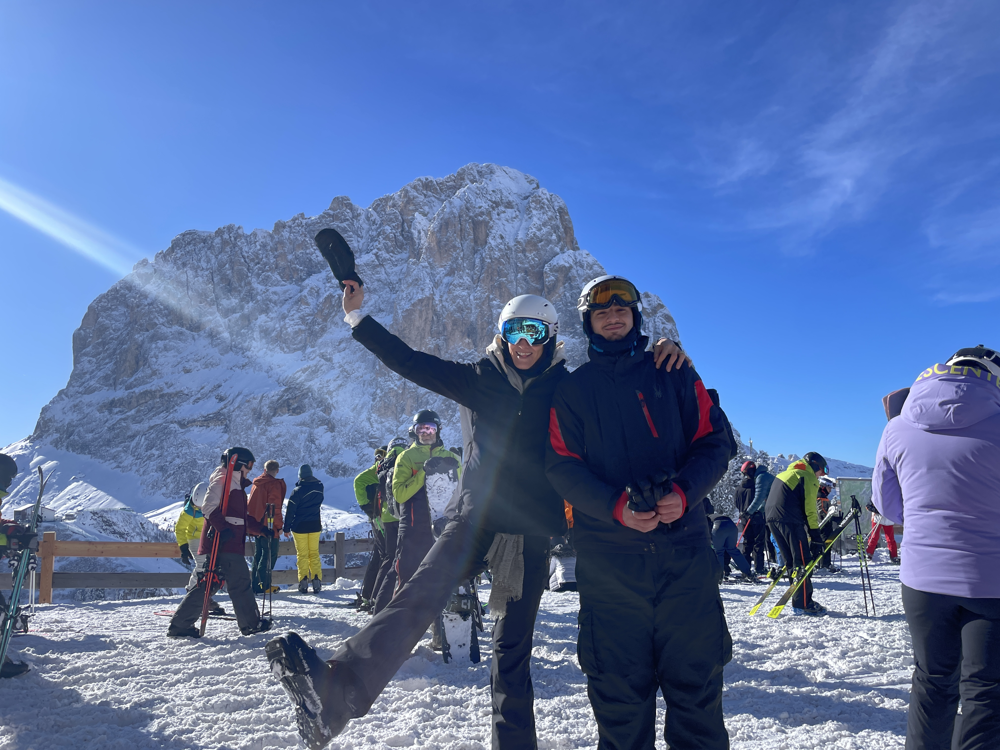
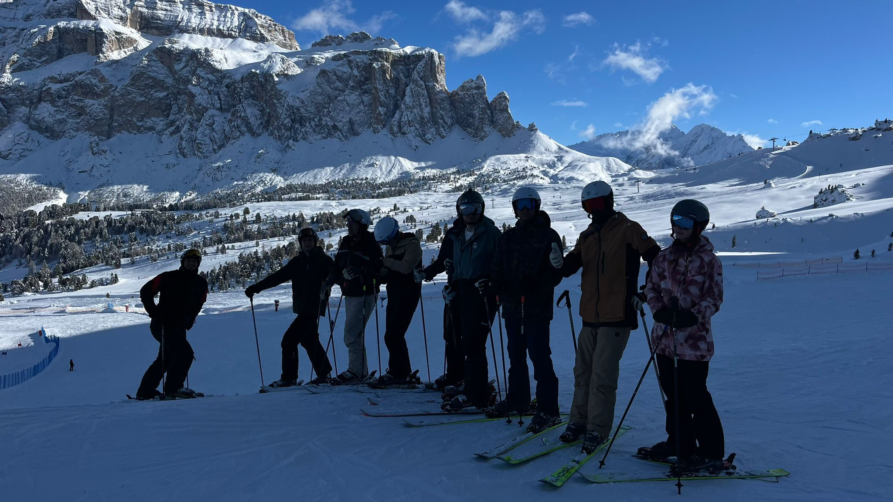
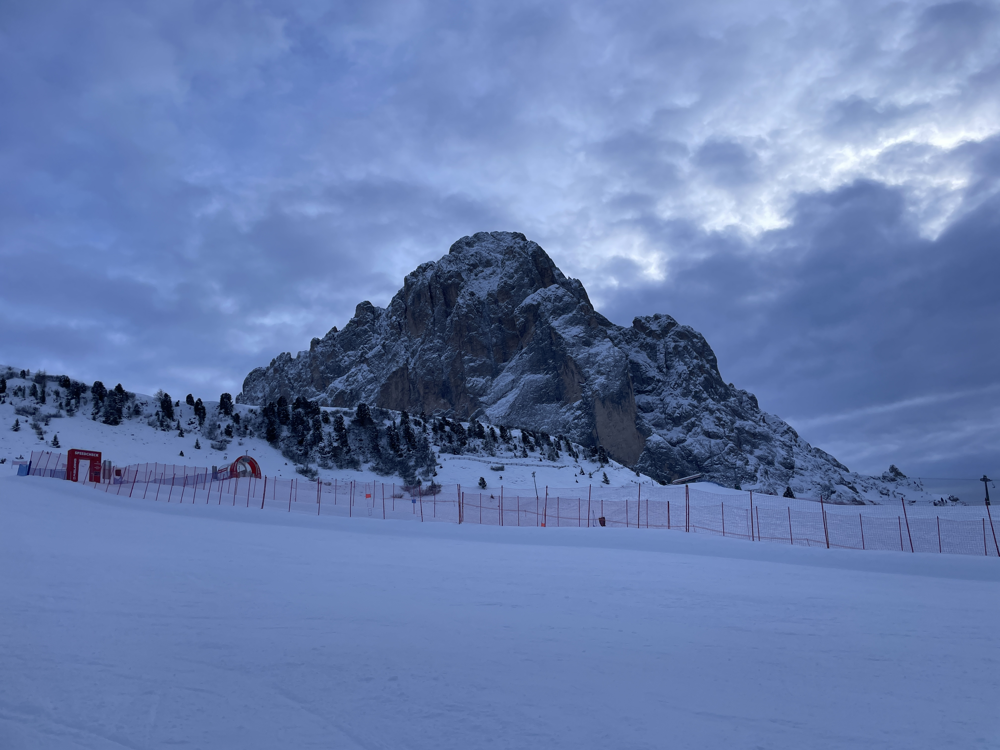
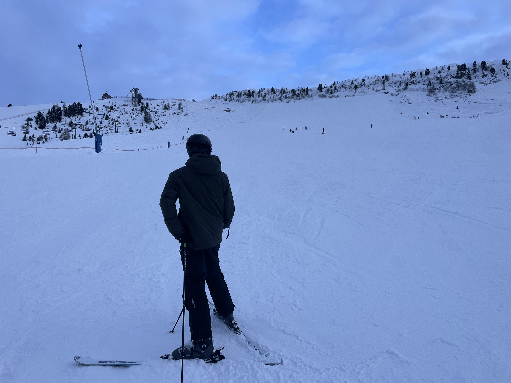
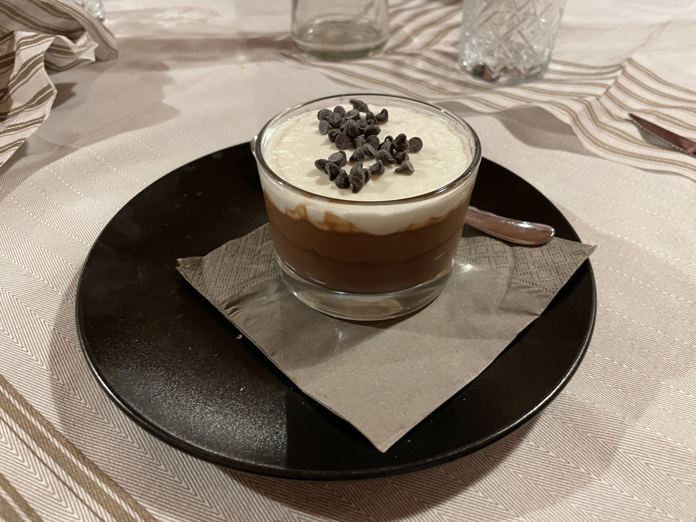
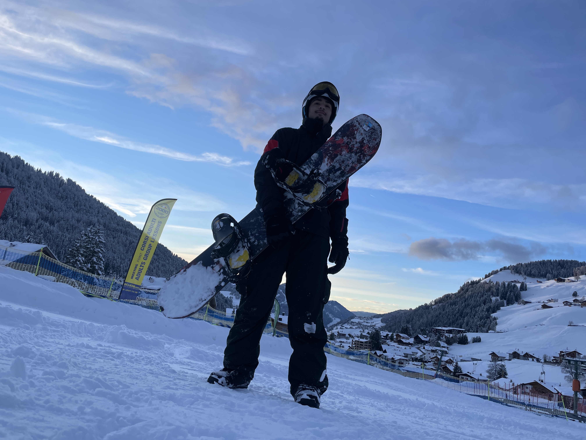
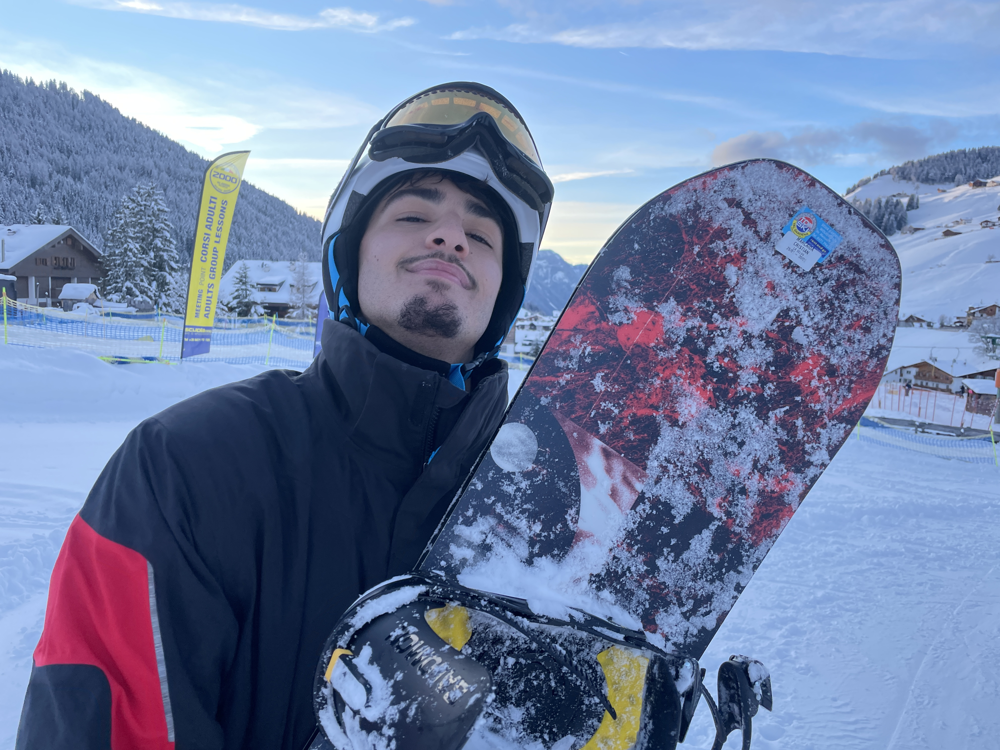
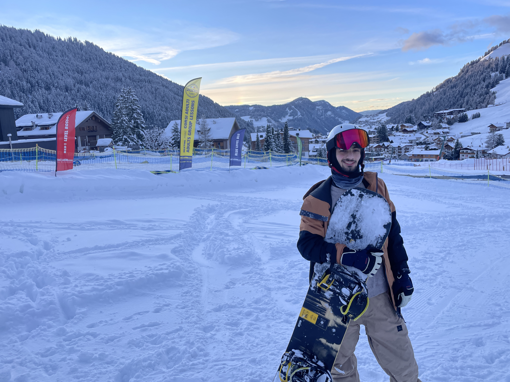
Rating4
Fede found
Date:01/02/2026
Climate:Cold but not that much
Space:The Apartment of Fede
Time:19:11
I arrived after a lot of trials and tribulations, to Fede's apartment. He lives in Amsterdam and I decided to go visit him for today, this is going to be fun. He shows me his abode, it's a cool place with a nintendo switch and stuff. His room is full of things on a giant grayish blue desk. Most notably he stacks energy drinks that he gets for free at his Job. Tomorrow he has things to do, but that isn't stopping him from hanging out with his friends.
So naturally I also accompany to meet his other friends, and that is how I met
Some cool individuals. At some point they started talking about Israel and Palestine. They are all so well versed on the topic, it is really fun. I also got confirmation of the obvious fact that not all Jews support the actions that Israel has taken regarding the Hamas terrorist situation. Hannah is Jewish that's why im saying that. They also talk about the narrative that anti-semitism is rising. They said that it's a false statement, but equating anti-semitism with anti-israel behaviour is leading to a rise in anti-semitism, mostly because people that already hated Jews will use recent events to create an even worse narrative about the jews that they can use to convince other people jews are not good.
Apart from some interesting political conversations in the presence of alcohol, we also cooked smores and pancakes, I didn't eat much for I was full, but it was fairly good from what I've heard of others. They are all really smart and cool people, unfortunately my charisma levels were low because I was tired from all the travelling. Still it was good meeting them and I hope to meet them further in my travels. Another thing is that I can tell im tired when my left eye starts twitching very easily, that's a nice telltale sign I can use in the future.
Rating4
Into the Amster
Date:02/02/2026
Climate:Sunny and Cold
This day was mostly spend just, going thorugh the Fede lifestyle and seeing what cool shennanigans he gets to take a part on.
Space:Apartment
Time:The morning
I stayed up late last night working on this very website. I texted the table tube gang a little bit, both Fede and I sent pictures of each other while sleeping. I took a picture of Fede at night and he took a picture of me in the morning.
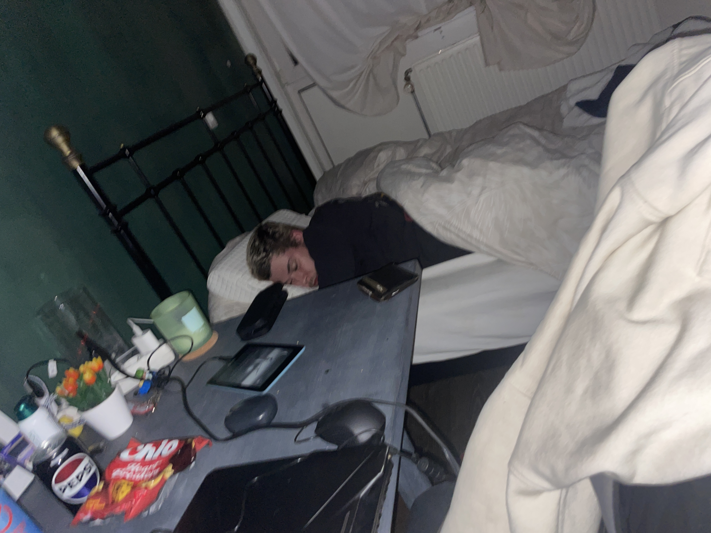
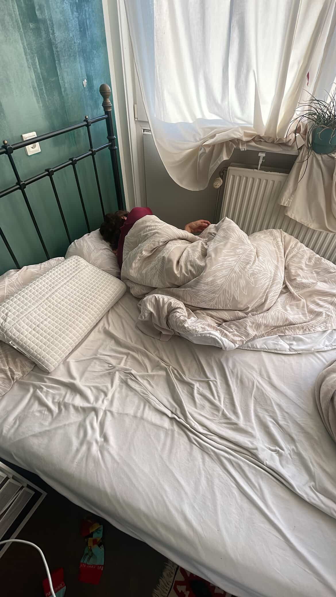
Fede and me sleeping at different points in time
Then we went to the tram
Space:Tram
Time:The Morning
I don't necesairly remember what we talked about in the tram, but I think that I tried explaining to Fede a little bit about homestuck, he got really confused. Eventually we get to Fede's Universtity
Space:UvA - The Machiaveli Room
Time:Later that Morning
I went to this room where the Machiavelli team can be found. I encountered nate and other new characters such as Alice, and I don't remember anybody else's name. I mostly tried finding the intersections between circles, mostly failing. Then we attended
Space:A class
Time:Later that Morning
This class was mainly about some random case called the Cape Wind case that involved several tribes and stakeholders.
Rating
Iron Lung
Date:03/02/2026
Climate:Cold
Space:Pathe Du Mont Movies
Time:17:30
Today something amazing is going to happen. If you didn't know, incredibly youtuber Markiplier once played Iron Lung, and he liked the story so much that he decided to make a movie about it. The movie was great, I unfortunately don't have much evidence that I was in the movie because I was too occupied actually watching this masterpiece. I liked it a lot, all of it. The only part that threw me off a little bit is a shot of Simon with blood on his face getting mad and destroying the speaker, that close up shot for some reason didn't look that good to me.
Regardless, the movie was spectacular, I liked it a lot. It had some really cool cinematography, all the different angles used to keep the watching entretaining were very effective. All the shots of blood and water pouring through the Iron Lung, any and all scenes outside of the Iron Lung were also really cool. The effects(both practical and not) were all really cool, at no point did I really get thrown off by bad CGI or bad acting of any sort. All the dialogue was very believable and sensical in that situation they were in.I really did feel a lot of suspense, which is what I believe it wanted me to feel. The ending I failed to comprehend a little. But here is my interpretation of it, SPOILER ALERT
The eldritch god tries to convince Simon to join him, telling him that no one else must see the light, only he, and he will be the last one. Simon does not follow the voice, but apparently the voice has powers, and it can control some blood tendrils that capture Simon's arms. He manages to liberate himself off it's grip by... ripping off his arm... yikes. Before doing that, he managed to tie his Black-Box containing Crucial-Information to a Life-Jacker. He destroys the window of the Iron Lung, presumably to let the package flow out. The eldritch voice tries to convince him, it uses the voice of Ava somehow, and it keeps trying to convince him to join the light or whatever, but Simon doesn't and he gets eaten by a fish. However in the end, we see that the balck box floated up and was found.
Now my personal interpretation is the following one. Joining the light could mean several things, for starters it could mean going to wherever everyone who disappeard due to the rapture went, it could also be knowledge, understanding what caused the rapture. It could also just straight up kill you, it could also be all three at the same time. In my opinion it's all three at the same time. Regardless of that, Simon decided to not go gently into that deep night, he instead refused to follow the voices that essentially told him to give up on hope for humanity surviving this, and he succesfully delivered the black box. Another aspect to this whole thing is that the Blood seems toa act to a certain extent like The Mass from white knuckle, it can consume things and incorporate them into itself and use them. This explains how the fish, the blood-vines, and Ava's voice were all working together to stop Simon in his final moments, they were all consumed by the eldritch god of blood or something.
Overall the movie was fantastic, there was a special scene that was a clear reference to the game's original ending where the fish breaks open the Submarine and eats you, I really liked the CGI there, it was very cool. Of course the lore was meant to be confusing and kind of incomplete, it didn't really give you much more than what the game already offered. Simon struggles with constant guilt of having exploded Filament Station. Everything he does is reasonable which is really cool in a suspense/horror movie. It definately has a lot of metaphorical shit and room for interpretation and whatnot, but overall it was a cool movie that dealt with the themes of hopelessness, guilt, and selflessness.
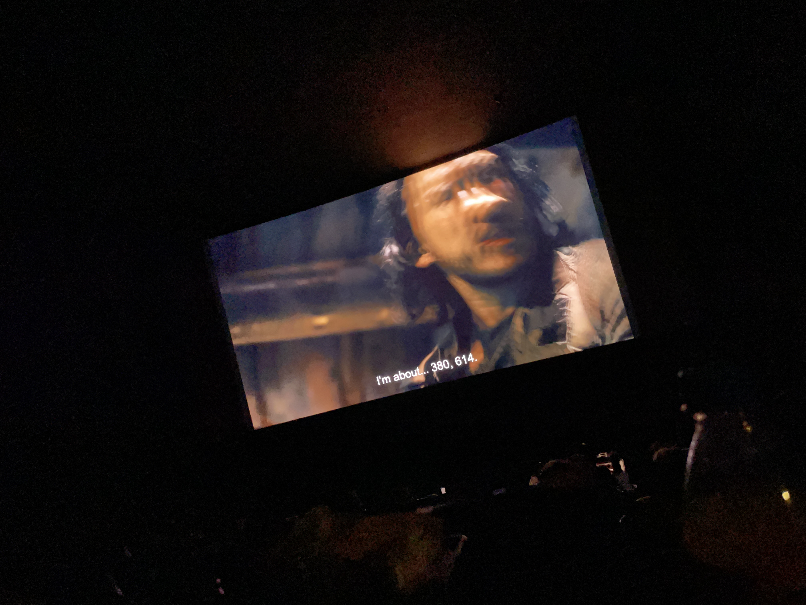
Some Media of the Iron Lung Movie
Rating of the movie8.1/10
Good for Mark's first movie, hope he does more.
LAST-DAY
Date:05/02/2026
Climate:Cloudy
Space:Common Room of UvA
Time:8.02
I am listening to a group of Unkown Individuals talk about someone, someone they don't particularly like. Someone who seems kind of rude to others, and also has certain hot takes, and he also seems to not have a complete grasp on social cues. Reminds me a lot about Daniel who other people also find kind of annoying. Still, this guy seemed like an amplification of all of Dani's bad qualities, this guy, from what i've heard, isn't really all that smart, and he goes out of his way to annoy others, and he doesn't have many friends. Dani has friend, he doesn't go out of his way to annoy people, and he is smart. I just wanted to establish very clearly that Difference.
I am planning to go buy some Jeans. Today Fede and I left his apartment in a hurry, I'm often used to skipping steps on any staircase, but I just happened to skip some steps that were wider and more slanted than I expected. Combine that with the Back-Pack that I was carrying which contained a significant amount of mass, it made me miscalculate the force needed to sufficiently propell myself in a way that wouldn't lead to my downfall. So I fell and broke my jeans :(
Fede is not a person that has a lot of that Free Time, so this is my day, I will do my own thing. Also yesterday I went to the abode of Laura, I friend of Fede whom I think was pretty chill. There was this specific moment where I was taking a photo of a Candle, and Hannah thought I was taking a group picture, so she posed, and I was like "Oh now Im just taking a picture of this fake candle over here" but then I was like 'oh, a group picture doesn't seem like a bad idea' so I told her and I took a picture but she didn't hear me. I think I am very very transparent and invisible in new friendgroups, here is me as an Invisible Individual in a place that I probably didn't really belong in the first place.
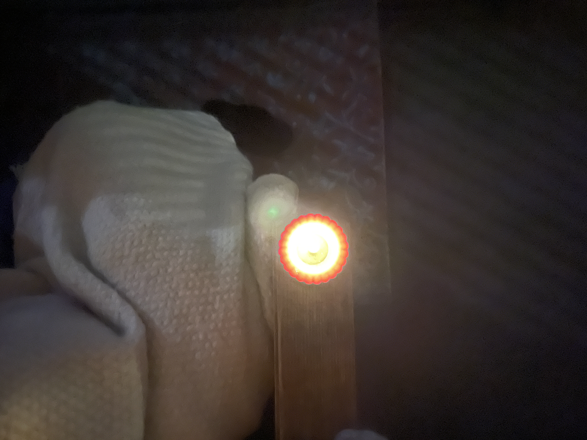
Photo of the candle and failed group photo
I have also just received information that I got accepted to Amsterdam University College...WHAT?!?
Space:Common Room of UvA
Time:idk I didn't check
I canceled all plans and immediately went to AUC to kill some doubts. In case you aren't aware, I got rejected from AUC last Chapter, but this time I got conditionally accepted, and I meet all conditions. This is legendary to say the absolute least. I went to AUC, suffering from the cruel cold that belongs to the streets of Amsterdam. My hands felt frostbitten as I was listening to Wuthering Heights by Kate Bush, trying to find the AUC through the stupid logic of the GOOGLE MAP. I eventually got there
The Service Desk was closed. So I sent an Email from AUC to AUC asking them how to verify the OMPT-B 70% score I obtained :/ Then I took 2 billion hours to get back. The Google Maps betrayed me several times. And according to lessons I've learned thanks to the Evolution of Trust game, I should not trust it anymore. Not trusting it proved to be the correct decision because I got here succesfully.
Once I got back, I told the good news to Stefano and Fede, and then I spent like 3 Hours beating a random individual called Maxim at Chess. There was a random Chess club that was happening and I joined it and destroyed this one guy specifically. It was fun, it's been long since I hadn't played chess with real pieces.
Rating
Impatience
Date:07/02/2026
Climate:Rainy
So I am at the madrid aiport's vip zone, and I decided to write one of these little entries. Let me tell you about my time in madrid
Space:The streets
Time:The day
After arriving to madrid and depositing our belongings in the hotel. We decided to go shopping. My sister went to Zara while I sat down trying not to fall asleep.
Space:The hotel
Time:The night
I won the last stake of the Balatro difficulty. I did this with the Green deck, the best deck ever.
So that was the first day in a summary, now watch the second day
Space:The streets
Time:The day
weather:Rainy
We spent most of the day buying clothes in the streets. I actually got two new jeans that I am really excited about.
After that we went to the airport. In case you couldn't tell, I didn't really want to write this. I don't know why but yesterday and today I've been feeling extra-impatient and angry for some reason. I told this to my MOM and my SISTER and they told me that I'm about to have my period. HAHAHHA very funny, but the real reason is probably that I haven't slept very well these past few days. I should be happy for everything that happened, and I am. But right now I am soooooooooooooooo irascible for some reason.
Rating
Back Home
Date:08/02/2026
Climate:Sunny cold hot (AKA: FECKING TERRIBLE
Space:At teh airport
Time:The Morning
So I am back home to THE BEST COUNTRY IN THE WORLD (AKA: Uruguay) sure it may have some shortcomings, but lately i have no idea why I have been feeling so patriotic and so Uruguayan. Maybe upon being in so many other countries I just begun to miss this amazing place and how nice everyone is and how fecking cool this country is overall. I have also toyed with the idea of someday Unifying Argentina, Chile, and Uruguay. Fede disliked the idea, claiming that Argentina has a history of being ultra unstable like about once per decade, which wouldn't impulse economic growth. In the future, Raz will have the argument that Argentina is in it's process of PERMANENT RELATIVE STABILISATION. Once Argentina estabilizes itself, that will be the perfect opportunity to start negotiations and Unite all of our forces, with Argentina's resources, Uruguay's Functionality, and Chile's Openness/Intelligence, we might have a chance to rival in the darkest of forces that this world has to offer. It's one alternative to ending the world that I've been thinking about. Doesn't that sound nice?
Okay enouph nonsense, my mother forgot the keys to my house so she had to call te lady that comes to clean our house every once in a while to go get us her spare key. We did that and then we went home. Once home I started working on my incredible INSTAGRAM POST. You see, upon further reflection, I've started realising that this was probably the best trip I have ever had. It was amazing, I'll make a list of everything I loved about this trip.
I got really good at skiing and that was fun
I FINALLY TRIED SNOWBOARDING WOOOOOOOOOOOOOOOOOOOOOOOOOOOOOOOOOOOOOO
I got to hang out and talk to one of the Best Individuals ever (Lucio Gonzales)
I got to meet cool people, among them Agustin Colombo Colombo aswell as others that id didn't really meet as much as him but wtv
I got to meet Fede who is a really epic and cool individual residing in the Neatherlands
I got to watch IRON LUNG, a movie that was really good in my opinion. And the fact that it was really good proves something that should have been obvious to just about anyone. If you want to make a good movie, it's not about money, it's about passion.
I got to see Fede's university life which was really cool cause it made motivated me to try more to get accepted to the Neatherlandish universities.
I GOT ACCEPTED TO ONE OF THE DUTCH UNIVERSITIES!!!!!
And I found the Almond MnMs that Lucas failed to find
And obviously there are a shit ton more things that are really good. I just can't talk about it all. But I really loved this trip, and, I think it changed me as a humane bean. I'm evolving into a human being, idk wt the fuc im sayin. What I mean is that this trip was so good that it inspired me (somehow) to better my life. I am going to start being more organised and stuff now, it's going to be epic. This is were my Canon Life begins. Here are the amazing edited pictures that used on my story.
The adventures of the G8 group, and so much more
Rating∞/1
Almond MnM packages2
I am so ready to do stuff, idk why. Also Raz and I are hanging out tomorrow, if my forshadowing didn't make it clear.
Intellectual Political Discussions
Date:09/02/2026
Climate:HOT AND TERRIBLE
Guys, idk why but I've lately been #facinated about politics, it is a little disrespectful that I can be this facinated about something that has killed, tortured, destroyed, murdered, but also created, saved, improved, contructed. I guess it ain't all bad. However lately I've been thinking a lot, hell it's practically all I do. I neve like getting political until recently. Here is the things that have happened recently which nudged my interests in politics.
Lucio's Opinions: So Lucio, and practically his entire family, is from the right side of politics. However they still hate Donald on the basis that even if his ideas are good, he still does everything wrong. Here is a listed list
Ice stuff: So according to Lucio, Donald sends immigrants to concentration camp equivalents. They are technically like detention centers, but in terms of actual conditions, they might aswell be concentration camps
Other Ice Stuff but more political: Lucio also agrees that Donald 's failure to condemn Ice when they actually do a mistake is not good :( Ice is not perfect, like many things. And it's important to accept when they do mistakes, such as killing citizens that didn't deserve to get killed.
DOGE was fecking terrible it's actually hilarious, they did some bullshit, they claimed they did a fuckton, and then they left.
Lucio also said that fixing things with Tariffs was a good idea, but they way they did it is terrible, unorganised, basically made everyone lose Trust on US's stability, overall not the best Execution(the main job of the president btw)
Internet Divide: Both sides have FACTS, and they are all TRUE. I've checked them. This means that both sides are right. No one is wrong, it's just that both sides have evil people, and the people might be working together to keep us divided, and that is not good!!!! And it's never going to get fixed!!!! when will al these people realize we Share an Enemy!!!!! Can I do anything to enlighten all of these INDIVIDUALS??????
Disasociation: It's #crazy to think that I ever considered myself like being on the LEFT side of things. Both the right and left systems can fecking work, it just depends on the non-corruptness of the people. As long as we have evil people, evil things will happen, in comunism, in capitalism, in fucking idk Timoism(ima make a perfect system someday). I have completely disasociated myself from any parties, in an attempt to UNIFY everyone against the EVIL PEOPLE. I am not from the LEFT, or the RIGHT, or even the CENTER. I am from the fuckin FORWARD, and I'm fuckin ready to start doing some progress!!!!
That being said, all of that being put out in this imaginary poker table (a game that I know how to play and I am goated at.) I have a little bit of a reunion with Raz today. With my new political knowledge that I feckin made up. I intend to reach some powerful conculsions that no other Individual can reach, for Raz and I may not be the smartest, but we are OPEN. And OPENNESS is all you need to reach powerful conculsions.
Space:A Cafe called Selva
Time:16:45 (I arrived late :(
We both meet at a halfway point between our homes. A place called Selva. We all catch up with our lives. I tell him pretty much everything I just told you in the entry above this one. And then it's actually Raz who gets political first. He brings up how he has been talking to Sebastian Alfonso, not to be confused with Sebs. If I keep hearing about Sebastian Alfonso I might have to write an individual entry for the man. Anyways, Raz has been telling me about how he played this game with Sebas(Sebas will be Sebastian Alfonso and Sebs will be Sebastian Sass).
Anyways, he also tells me that with Sebs, they discussed the Epstein files. He tells me a bunch of things about the Epstein Files. He tells me that they basicall pushed every leftist agenda, pushed the Islam agenda, pushed basically everything he doesn't stand for. It's hilariously frustrating to hear this, given that Fede also basically told me that Epstein pushed everything he doesn't stand for. I didn't realize this at the time, and I absolutely should have because it would have been a great talking point. But isn't it way more likely that Epstein pushed both of these Agenda's to cause political divide??? something that rich evil people are known to do/benefit from??? Stupid past Timo, how didn't you think of that earlier?!?! Doesn't matter, the past is history.
Anyways so he tells me that Epstein also created Covid 0_0 It's a massive claim, and I tell him that. And he says "Not really" 0_0. He points to a chinese Biological Laboratory in the US and certain talks in the Epstein files about it for evidence. I do think it's a massive claim, and I am going to have to see a bunch more evidence before I even begin to start to commence to believe it. I think covid and the quarintines were terrible, but like we had pandemics before. What are the chances of this being a conspiracy theory? I don't know, I am dangerously unprepared to have this discussion, it's the last thing I ever thought we would ever talk about. So I can't really do anything other than displaying my scientific skepticism. And that I do, which prompts us to move onto other topics.
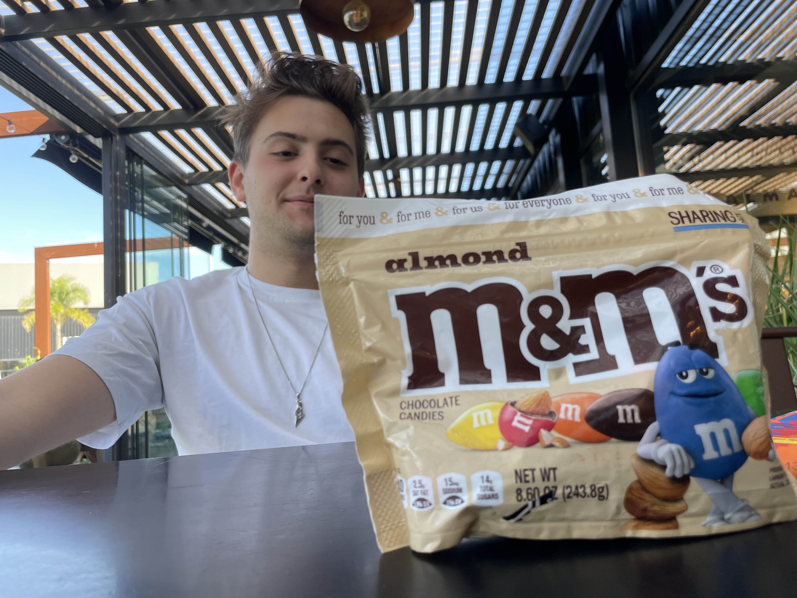
The almond MnM saga is complete. I also gifted Raz some nice Free Trade Tony's Chocolonely's Chocolates. He appreciated the gift :)
Then we start to walk. He keeps telling me that Epstein pushed all the leftist stuff. I keep on failing to think about it hard enouph to actually say anything of substance :p . Eventually I bring out a topic that I have pre-emptively thought about and reached a conclusion. You can see my-thoguht process here in some link on that entry. But if you aren't going to do that, let me give you a summary of my opinions. The police officer used LETHAL FORCE against MS GOOD, ultimately causing her demise. My claim is that this Lethal Force was very unreasonably used. Mainly for the following facts
It didn't prevent any death or injury
It didn't follow Ultra-Common police practices(I hope ICE has that)
So my claim is essentially "Ms Good lacked the SITUATIONAL AWARENESS necesary to keep the streets safe while using a vehicle, thus (if she was still alive) she should have lost her license. The officer lacked the QUICK CRITICAL THINKING SKILLS required on the field keep the streets safe. Thus he should lose his license"
Now at first, Raz didn't really believe that the officer did anything wrong. His claim was essentially "Ms Good lacked the SITUATIONAL AWARENESS required to keep the streets safe, this lack of awareness ultimately led to her crashing onto the Police officer. Thus, under the right to SELF DEFENSE the officer took the correct action of neutralising the threat"
My main problem with this argument is that it didn't really seem like it treated both sides with the same amount of scrutiny. But the more usable thing I noticed about this argument is that it failed to take into consideration the amount of LOGIC behind the officers actions. So for like about and hour, I basically told Raz about some ultra-Basic police training that was severely violated by Officer Ross(the one that killed Renne) If you want to see my exact argument i will again redirect you here.
This training is supposed to prevent senseless deaths like this one. Raz's main counter to this was that we don't know what would have happened if Renne didn't get shot. He repeated this a bunch of times and I kept agreeing with it until something clicked. Obviously I lack the energy required to create a viewport that would allow us to see into alternate timelines to determine exactly what would have happened in a situation where the Renne Good didn't die.
But we can make an accurate estimated guess. And I am glad I realised this at the moment, because in hindsight this is very obvious. If Renne hadn't gotten shot, she would have still hit the police officer, and she would have probably continued to Turn Right, and she would have probably gotten away. Until the Police came back and arrested her for crashing into an individual and leaving them behind. Something that is very illegal to do, at least in Uruguay.
Raz kept insisting that we don't actually know if this is the situation that would have ensued. I really had no idea as to what other thing could have happened if Officer Ross hadn't fired his gun, so I prompted him to give me some Alternative Scenarios. He argumented that if Ross hadn't shot her, maybe she wouldn't have changed her trajectory as much, causing Ross to get more injured.
Now it's known that a living person has more control over a vehicle than a dead person. That's why it's common police training to not shoot at moving vehicles, it's always better to let them escape. This is because shooting at them will very likely cause the car to start accelerating out of control and crash onto something/someone, basically turning the car into a massive mass of high speed dangrousness. So essentially shooting a moving vehicle to stop it from harming people is dumb and goes against Logic and common police training meant to keep the streets safe.
Using this argument, I tried to relay to Raz just how dumb it is to shoot a moving vehicle in hopes of stopping it from causing harm. Raz kind of started to concede and recognize that the officer might not have taken the best course of action in this situation. After hammering on a little bit more the full extent of the dumbness that shooting a moving vehicle entails, Raz conceded that the officer should probably lose his licence. He still believed that Good was the one who was mostly at fault for this tragedy, that's something I can get behind, I don't exactly agree with it but I can understand how one could reach such conclusion.
So, I we both reached a consensus. "Ms Good lacked the SITUATIONAL AWARENESS necesary to keep the streets safe while using a vehicle, thus (if she was still alive) she should have lost her license. The officer lacked the QUICK CRITICAL THINKING SKILLS required on the field keep the streets safe. Thus he should lose his license". I had previously already reached this consensus while arguing about this situation with myself. I highly recommend you to check out the doc by the way.
After reaching that conclussion, we began debating about a ton of other stuff. Like a lot, like just about everything there is. I don't exactly remember it all but here are the main things that stuck out to me personally
Islam is bad
Quite a recursive statement from Raz is that Islam is bad. They have a plan to conquer the world and infest it with their dark culture of incest and treating women like shit. I had previously argued with Raz that these are some extremist interpetations of the religion. Every group has good people and bad people and blah blah blah I already said this a billion times. However Raz claims to have found teh CHECKMATE move on my argument, remember a while ago when we had a similar argument? And I said
"To disprove my claim, Raz would need to find a verse in the Qu'ran that is undeniably, indisputably, 100% bad, and no context can possibly save it from being bad. I think im in the clear because I don't think that is actually possible. The bible has slavery and buying women, yet the context still saves it from being racist and mysoginist. I very highly doubt that the Qu'ran differs from this in any way, but who am I to know, i'll let Raz look it up."
Ya, he claims to have found it. Undeniable proof that Islam is bad. Now in hindisght, my claim here wasn't exactly sound. Good things can come out of bad things. But whatever, I guess I already planted my feet on this one so I must at least try to defend this claim.
The Reason behind the Hatred of the Jews
If I told this to Sebs he would probably actually die of lauphter just because of how pretentious it sound. During the Jewish Diaspora, Jews were all over the world. Since they were foreigners, no one really liked them, and they were excluded from society. This meant that they all often worked together to create stuff like banking systems and rely purely on themselves. So far so good, but Raz claims that everyone got jealous of the Jews for being so good at banking. A little too pretentious for my taste but sure. I am fairly certain of what someone more critical of Judaism in history would say to this, they would probably say that Jews did evil backstabby stuff to get their success. This narrative could very easily be a result of the proclaimed Jew Jealousy(JJ {I'm never calling it that}) This is such an interesting perspective that I think I might have to dedicate an entire Portably Formatted Document to this topic.
Immigrants and Black people per capita stuff
Now Raz basically gave me some statistics and said "Ye, this is going to sound kinda racist, but black people per capita commit most of the crimes". Later in the future, I gave this argument to Fede, and post an explotion. He basically said that the statistics were ultra-Biased, and a product of OVERPOLICING in black neighbouhoods and SYSTEMIC RACISM, basically saying that black people are bad because we treat them bad. If you treat someone like a monster, they will become one...*scary music*
I didn't bring this up, but I can probably conjure up a simulation of what he could have said against this. "This some woke shit", nah but in all seriousness he would believe that is some narrative that the left has created to justify the evilness of the minorities. However over policing and systemic racims do exist to some extent, and it will most likely contribute to some of those statistics being more skewed. To what extent are the statistics influenced by which factors?????????? Is it just immigrants and black people being bad???????? or is it Xenophobia all along??????? Determining this would require me to do a ungodly amount of research, either that or ask Fede to do it for me. I will just use my own logic instead ;) So when a group is hated, it's usually not it's fault, it is usually instead the fault of a higher power that wants those people to be hated. Similar to how the Juice and the Islam are hated. Many people benefit from this hate, so I think it's Xenophobia.
And hey I think that's about it. At the end of this discussion I surveyed Raz for him to give me his opinion on this political conversation. He said he didn't particularly enjoy getting political. He only knows about politics for means of Self-Defense. But he also mentioned that he didn't really mind discussing topics with me, since we are both open minded and capable of reaching powerful conclusions. So overall it was a good intellectual exchange, I think those are the word he used.
The thoughts of Fede regarding the statistics (Fede admits that he was literally in bed and really tired while saying this, so it might not have been the most fluent logic/line of reasoning)
What a bunch of woke overthinking bullshit!!! is what some people would say
Later this day I told all of this to Fede and he basically exploted. But after exploding he pointed out a bunch of exampled of mis-information that I won't really bother scrutinizing. In hindisight, This was a terrible idea, that made my goal to solving THE GREAT HATE TRIANGLE TRILEMMA more immpossible than what it already was. But whatever, I was actually kinda tired. Past me can sometimes be quite stupid.
Later that day, I talked to Lucas briefly. It was chill, we talked to Bruno and did some Kung Fu Panda. Which remdinds me, I have some addition to Bruno's beats
Rating7/10
The Hate Triangle Trilemma is a name I just made up for three people that all hate each other. If these three people can all become friends, there is hope for solving any and absolutely all problems in this world. All of these people are good inside, yet they all dislike each other for a myriad of reasons immposible for the common human brain to understand. Politics, personalities, everything can be taken into account when analysing this phenomena. If I can somehow get all of them to not hate each other, it will be proof that absolutely anything and everything ever is possible. Unfortunately, this will never happen, me, and the members of the Triangle of Hate will all die before this happens. And I have accepted this fate. Not all problems can be solved.
Also, obviously I can't include everything we discussed!!! We were like 4 hours walking around discussing politics. Which I found very fun, but he probably found it exhausting. One of the things that Raz said that I really didn't like the taste of, was saying that Jews who are against the actions of Israel are of the most stupid kind. I know it's his opinion, but it's exactly this kind of thinking that creates the Triangle of Hate in the first place. It's the most powerful and shared characteristic between Sofe, Fede, and Raz, to think that others are stupid just because of what they believe, to completely disregard their upringing, their beliefs, the information they might or might not have been exposed to, what their friends and family think, what this might mean for them, and just say that they are this way because they are stupid/ignorant/dumb. I know that neither Fede, Sofe, or Raz are dumb or evil, they are all actually really smart and good, and they will never admit that about themselves EVER. And that is what makes me really afraid about all of this, very fucking scared, I don't like the taste of any of this. If all of these smart people can't overcome their own hate, what hope do we have left? But this isn't only about the Triangle of Hate, it's all hate, all hate in the world is born from this. I don't know if I can fight it, not without the help of all my friends who I might end up hating for all I know, or they might end up hating me. That would probably be worst
Wow it already seems so hopeless!!!!!! :0 and to think that yesterday I was ready to cease the world and make it my oyster. But I guess life wouldn't be so without a challenge. Who will win? The dark powers of despair or the bright lights of hope??????? Keep reading to find out weather I win or get absolutely murdered by hate.
Megan loses her legal battle
Date:10/02/2026
Climate:Unkown
Space:Hidden
Time:Secret
After finishing fixing her tattoo, Megan receives news about her current legal battles. She got arrested :( like officially. She is turning herself in on wednesday. It's such a shame, I had so much hope that this wasn't going to happen. I have no idea why, I mean all the odds were stacked against her. But still, it's shocking. I am going to try to talk to her. She is pretty awesmoe and chill about it, she posted it in her story along with a sick picture of her tattoo, but I don't know how much of this awesome persona is a facade, and how much is genuine. I just hope she doesn't fell that bad about all of this, maybe she is super chill with going to jail and getting a mugshot that she can probably use in her instagram pfp or whatever.
Also, there were some interesting things that happened yesterday at night. Raz started to read my website!!!! He probably did what most people do, he COMMAND F'd his name and saw anything I had to say about him. Which is fair. He asked me about what I had told to Sebs about The Coffin Game and stuff. He also sent me two other messages that I skimmed but then he deleted them. I believe one of them was about one time where Lucas didn't invite him to an asado because he knew he would probably not come, and another time where I invited him to a SuperMan movie but he didn't want to because I also invited Fede? That sounds more like the alumni reunion to me. I don't remember :/, he deleted it so it's probably best for me to not delve into something that someone else doesn't want me to delve into. It's kind of awesome to finally have someone reading my website, I do admit it does kind of sound like the ramblings of a lunatic every once in a while. Hi Raz!!! if you seein this :) Also I am aware that the last entry was wayyy too personal and critical of the Triangle of Hate, which you[Raz] are a part of, but maybe this is the key to solving the Triangle of Hate, for everyone to read my website and see an outside perspective, and thus realize how dumb it all is!!! Maybe it could have been my plan all along!!!!!
Enouph nonsense. So Raz, assuming you reading this, today I have something to do. Something I promised you I would do. To finally deduce weather or not the religion of Islam is inherently evil. You have provided me with a substantial amount of videos that I will scurtinize just like the scientists do with any theory/law, and they reach the empiric truth behind all. That is not the political method of analysing things, but I'm a scientist. Oh wait, I have other things to do, I need to learn differential equations for purposes I am a little too shy to disclose.
PAULI DOES NOT FEEL INCLUDED
And therefore I will add a segment where she can write whatever she wants. From no on, all the words in this little segment are going to be Pauli's. Enjoy
YOOOOOOOOOOOOOOOOOOOOOOOOOOOOOOOOOOOOOOOOO. Hello this is me PAUlI the great Pauli. So if im being compelelty honest i have no idea what to write in here, but i am timos sister, the best and only one out there, and i deserve to be mention. Asi que les voy a contar un poco de mi vida. I take Math HL physics HL Econ HL English A SL, and spanish A SL and Chemistry SL. Yeah im like super mega pro. BO sabe que hoy i foudn out that on my final paper two i got A SEVEN like WHATTTTT I AM SO GOOD AT PHYSICS. However we are going to ignore that on both paper one a and b i got a 42 becuase it all rounded up to a SIX, so its ok. EMMMMMM what else can i tell you about my life, im in a club called Juanfe such a great club, and this year i only do sub 19 which is lowkey scary cuase the peopel there i get the feeling they lowkey dont want to play anymore hopefully this yeah will be beter tho
YOOOOOOOOOOOOOOOOOOOOOOOOOOOOOOOOOOOOOOOOO. I jsut learned soem HTML. anyways continueing what i was saying. My best friend Leo just moved half across the fucking world to Denmark legit most horrible thing ever, i jsut visisted her which was nice. IT IS SO COLD THERE ITS INSANE. But yeha this is the first semster in god knows how long that i dont have her food and i dont have her by my side all day so fucking sad. ANyways talking about Math HL i have to go to some so until next time bye.
Rating5/10
I think my sister's idea is actually great. Now we can have another perspective in this incredible website. I wonder if I'll start doing something else to increase other people's interaction with this website
THE BIRTHDAY OF MICAELA UNZUE
Date:11/02/2026
Climate:Sunny and hot
This shit is going to be so fuckin un-pertinent to the birthday of Mica, you won't start to believe it. I titled this entry like this on Purpose to give you the kind of Whiplash you would expect from an overly demmanding music professor. (Epic Reference!!!) Let's get to the actual entry.
Thoughts:
What a bold maneuver to straight up start the day with my thoughts. I just had a dream, I think yesterday's mental breakdown slithered into my sleep and disrupted my psyche. I didn't like the dream that much, it was definately a nightmare, and upon waking up, things didn't get much better. This is very uncommon for a nightmare. Upon waking up I usually find relief in the fact that whatever happened in the nightmare isn't real. I've had some bad stuff happen in nightmares. However in this case, what I dreamt about was fairly realistic, and I am at a loss. It involved the Triangle of Hate
I think I should genuinely remove myself from politics completely before I lose my mind. Genuinely, but at the same time... so far every talk I've had with Raz has been contructive and we reached some good conclusions. Maybe this is the correct line. Regardless, I myself reached another powerful conclusion. Dani is the only hope
Now to those that don't exactly remember who Dani is, you are probably confused. And to those who know exactly who Dani is, you might be lauphing your ass off. Dani is a friend from the Uruguayan American School, mostly known for having some interesting opinions and mannerisms. But none of that, and I seriously mean none of that matters, because on the inside, Dani was a good guy, and he was also smart. This might start to sound like a member of the Triangle of Hate, but obviously he is not. And he isn't even thaaat into politics. I remember when I used to debate with him about things, it was always social dynamics between the class. And we always started with opposing arguments and we always found an answer in the middle, that's how I learned that most times, if both arguments are good(good is a relative term but wtv) then the answer is probably in the middle. This has been the case for just about any political topic i've talked to Raz about. Most imporantly the case of Renne Good where had she not died
The officer should have lost his license(police/ICE)
Renne should have lost her licence(driver's)
That is practically a middle ground between the common argument of both the left(Renne did nothing wrong the Officer should be condemned) and the Right(The Officer did nothing wrong and Renne should be Condemned) In truth, they both did something wrong and they both should be condemned. Except one of them has already been condemned and the other one hasn't. The only person I could reach this conclusion faster than with Raz... Is Dani. And I've already pictured the entire conversation aswell. It would be essentially a 10 minute discord call where we analyse all the videos and perspectives in detail, we go thorugh the basic police training, and we reach a conclusion(AKA the same one I reached like a month ago). This is because Dani, has a quality, that is surprisingly coming in clutch. Objectivity, he loves objectivity, at first I thought this was dumb, almost nothing about politics is objective, it's only useful in science I guess, but Dani would often apply it to Political Science and Social situations aswell. However in cases like these, were a bunch of Narratives are pushing to take the CENTER SPACE, Objectivity might be our only weapon against deceit. Dani might have been cooking all along. And I wish to have some future discord calls with him. Unfortunately, the man is actually studying :( and working hard, so yeah. But the conclusion of this is that we all underestimated Dani.
Space:My house
Time:Morning
Anyways, Today I have one of my main goals of scutinizing this kinda religionist claim of Raz. That Islam is undoubtably a bad religion. I won't tell you I appreciate their treatment of women, but to say it's all bad is kind of a stretch, but hey, maybe It Is Not. To support his claim Raz provided some of the following Youtube Videos that seem to have Quotes of the Qu'ran that are Undisputably Irredemeably bad no matter what context they are used on or what LITERARY LENSE is used to analyse them. Here are the videos.
https://youtu.be/DSH7AvlbAFU?si=PFA6I3H0AmlNdJUl:"while this one im aware doesnt derive itself straight from the quaran, it underlines a rooted problem to their culture, as they put a lot of weight on the words of scholars"
Youtube has made it hard to embed videos unfortunately
So these are all the Razoic descriptions provided by Raz, it looks like I have my work cut out for me on this one. Let's go in order
So, I am just going to go through all the videos very quickly and give my opinion here. And the work on a LEGENDARY Portably Formatted Document to get to the massive conclusion. Actually I am just going to skip to the PDF
I spent all day doing this shit and I am only on the second video. I don't think I am going to watch all of them.
I also briefly talks to dani, about Politics and he offered me some good advice. "you should obviously know about politics and the world that surrounds you, but you shouldn't let it consume your every belief, and you shouldn't have it be the decider of things such as friendships and such"
I honestly understand that most of this world is terrible, and ignorance is bliss, and it's folly to be wise and all. I wouldn't blame anyone for not getting into politics, I think that after I finnish this latest opinion piece about Islam and weather or not its good or bad, I'll see myself out of this mess of politics. I think I'm a good person overall, and that is really what matters in the end-of-the-day.
Rating1/3
It was so exhausting to work on this damn contrual piece.
Friday the 13
Date:13/02/2026
Climate:Norma
Space:House
Time:Evening
I just finished list Small Portably Formatted Document about Islam. I analysed the first three videos of that Raz sent me. I couldn't analyse them all because I got kinda bored after the third one. If you don't want to read that massive thing I just gave you and just want to hear my conclusion. I'll give it to ya, I found no quote that can be said to be irredeamable bad. Every bad quote I found was either taken out of context, or misinterpreted.
I did reach the reasonable conclusion that the Qur'an text is more violent than most religions. Because they have a lot of wars going on in there.
Rating1/3
FEDE'S BIRTHDAY
Date:17/02/2026
Climate:Clear
Space:Home
Time:Night
I've been sick all day, and as a result i've done just about nothing all day. Isn't that great. Today was also Fede's birthday, aswell as Chinese New year. It's officially the year of the horse, 4 more years until I have my very powerful YEAR OF THE DOG. By then I will have graduated AUC. And I'll probably reference this one entry.
So I'll be addressing my futre me, hi there Mr, how are you doing. I am hopeful you have made some new friends and have had fun in learning in the classes. I know it's probably going to be very hard, weather you are in Groningen or AUC. Life right now for me is hard aswell, I am so sick I literally spent all day sleeping, and I forgot to eat. Even though eating is not really required when you are sick, but you probably knew that already.
I hope you do also continue with this website, even if the events become more and more sporadical over time due to the work overload. I hope for you the best. Also Megan broke her tire today, that is really fun. I think she will probably stop getting into those sorts of trouble after this unlucky streak. I really think her defiance is cool and all, but sometimes I worry that she gets into unnecesairly dangerous situations.
Anyways, more about future stuff, I hope you have a PC built at this point. Becasuse the AI bubble totally bursted and RAM prices are back to normal. Also Donald is no longer president, that must be pretty cool right??? Not hearing absolutely harrowing news about the US every single day??? Like how Donald revoked the scientific consensus that greenhouse gasses are bad????? how did he do that??????? that's like an empirical conclusion??????
Enouph politics, actually enouph writing in general. Except for this last bit. I created a new page in this website, right here.
Rating
MY BIRTH
Date:19/02/2006
Climate:FUCKING HORRIBLE
Space:Room
Time:13.28
Upon waking up I read some wonderful birthday messages, because it's my birthday. THe coolest thing I have going on is that maybe the Table Tube Gang will do a cool zoom call this weekend, but it seems no one is reading my messages correctly. I clearly said "this weekend" and everyoen is talking bout some "today" nonsense. Today I plan to do other things, if Raz remembers that this is actually my birthday. Talking about Raz, he told me that he isn't comfortable with having his name and life linked in such detail on my website. I guess I am a very detailed guy. Well he can suck it because I'm not changing it ;)
Regardless, I want to do something today, and I have to figure out what to do. I could tell Raz that it's my birthday but I don't like to do those kinds of moves usually. So instead I reposted Fede's birthday story. This will lead many people to realize it's my birthday, among them, maybe Raz.
I don't know what I am going to do today, there are so many opportunities to do stuff. I could go eat something, I could do math. I guess you'll know about it reading a little bit further. I haven't written what will happen yet because I don't know :p I'm still stuck in the past here.
Space:Living Room
Time:19:45
Most of this day was actually spent planning stuff. I've talked to Sebs about some nice political situation stuff. We talked about how how Epstein had a strong relationship with high powered individuals, aswell as a lot of compromising information on them. We also discussed the possibility that Epstein was an agent sent by Israel to collect compromising information on everyone in order to have power over them. The theory was proposed by ex-CIA agent John Kiriakou, who has the best stories to tell.
Anyways, this theory is kinda valid, because it would explain why the US supports Israel so vehemently on everything. If they don't, then they might leak a lot of Epstein related information. So perhaps the key to stop Israel from getting help by the US to continue to bomb all their surrounding countries would be to release the FULL EPSTEIN FILES, they would have nothing to lose, so they stop helping them to save themselves. This is of course assuming that Israel is the villain in this situation and the Arab Emirates are the good guys. The sociopolitical situation is much more complex than that. But I definately think that Kiriakou's theory makes sense.
Regard-less, most of this day, as aforementioned, was spent planning stuff. Firstly, my plan worked, Raz did in fact realize that today is my birthdays thanks to the story I published. He claims to have remembered on his own by checking the colour, but the moment he saw my story aligned suspiciously well with the moment he texted me, so idk about that. We plan to do something tomorrow.
The second established plan is one that Sebs came up with yesterday. I was feeling a little blue about the fact that I wouldn't really be doing something. You see, I often do stuff with my friends for my birthday, because all my friends are really cool and it'r so fun to have them all in one place. I really like this message that Lupi sent me.
I used to celebrate my birthday with the whole class :D
But now all my friends are scattered to the winds, all across the world. And that is kind of sad. So while texting with Sebs, he had the idea to do a Zoom Call with the Table Tube Gang. And I've been planning that with the TTG, even Alex responded which is great.
I also spent some time responding and catching up with people that have been sending me stuff for my birthday. Among them, Micaaaaaa. That was cool. I also catched up with Alex, he is essentially fully recovered from his skiing incident, only a little more till he can fully play sports. These are great news. I also have some new say.html entries that I responded to. Overall this is shaping up to be a great time. Tomorrow with Raz, and on Sunday the Table Tube Gang will have it's first online meeting. So excited for that!!!!!!!!!!!!
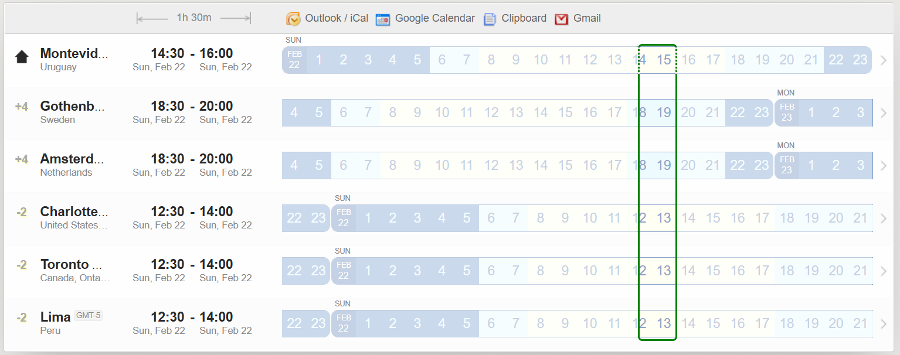
We organised this pretty efficiently
Rating2.5/3
Post-Birthday stuff
Date:20/02/2026
Climate:Normal
Space:House
Time:Morning
I do some math. I also try to decide weather or not to go to the Italia or not. Here are the pros of going to the Italian
I get to see the cool people (Fer, Estuchi, Mica,... and that's all the people I'm interested in seeing
I rehash some organic chemistry knowledge
But the disadvantages are that
I can't study french, and I will never catch up with Sofe unless I do so
It'll be harder to study math
More expenses(Apartment, boat trips, and other expenses)
So overall the negatives outweight the positives and I'll probably not go. Truly unfortunate but I think it's true. I must sacrifice seeing my friends in order to study
The rest of this day was spent doing math. After math I went to UAS to play volleyball there and it was fun. Then I spoke Raz about some interesting stuff. We ate crepes together and he gifted me a game on steam called OneShot. I wish I could tell you more in detail of what we talked about but I genuinely don't remember because I was too tired. Literally on auto-pilot.
Later this day my mother tells me that she encountered Santino and Chiara on La Madriguera. And then I just happened to saw a video of someone doing some gestures that reminded me of Chiara, so I sent her that video and saying "This is literally you" and she replied with "Wow thank you timo!". Which I found somewhat sarcastic, and looking back a little the video was kinda poking fun at the gestures so now I feel bad :( idk if I should say sorry or just like play along saying "your welcome :D" or somethign.
I think I should say sorry just in case, I really didn't mean to insult her and that's what I think I did just now. I feel dumb, but I also must forgive myself because I am very feckin tired. So note to self, don't send messages when tired. Taking that note into consideration, I will sleep on it and think of a follow up tomorrow, it will probably be something a long the lines of "Sorry Chiara, I realize that video was kinda mean, I didn't mean to make fun of you, I just found it funny how you do those same gestures. How are you doing by the way?". That actually sounds very nice, it'll probably be that, but I will limit myself to sending it tomorrow just in case I'm delluded.
Rating
Table Tube Gang, ASSEMBLE!!!!
Date:22/02/2026
Climate:Clear
Space:My House
Time:14:15
So at 14:15 Fede and I join to the google meet. Fede says that everyone is late and starts saying that everyone needs to join now. If you don't know exactly what is happening, while talking to Sebs before my birthday, we came up with the idea to have a Google Meets call with the Table Tube Gang(TTG)/Mr Williams fan club, AKA the most powerful coterie in the multiverse of madness. In case you needed a recap, the Table Tube Gang currently consists of SIX members
Megan, the Adventurous Protagonist: Megan is the one who constantly does the craziest stuff. She has done drugs, she has climbed a bunch of places, and she enjoys doing donuts in her Manual Car. When it comes to adventuring, she is simply the best. She also constitutes the first half to the TTG's female population.
Alex, the Ocassional Participant: Alex VERY ocassionally pops in to check on the status of everyone in the TTG. He is actually a really smart individual who is studying industrial engineering in Toronto. He might self-depricate himself sometimes but he is indeed an incredible individual, the only bad part about him is how seldom he appears in my life.
Milla, the Chaotic Good: Milla has a kind of chaotic elusive personality to me, also fun and funny. This is mostly due to the fact that she is unusually secretive about a lot of stuff. No one knows what she might be up to, but we are all pretty sure that whatever she does is probably going to be a net good for society. She constitutes the other half of the TTG's female population.
Fede, the Fervent Worker: Fede is a man that seems to hate free time. He always fills his schedule with a lot of things to do, but the impressive thing is that despite how crammed his timetables appear to be, he always comes out on top!! He is an incredibly hard worker that somehow manages to always do his work on time.
Sebs, the Nonchalant Affluent: Sebs Typically has a non-chalant demeanor, he doesn't even care that much about being part of the Table Tube Gang. But unfortunately life won't let you live non-chalantly forever. Some times you are expected to care about things such as money and stuff. His current strategem revolves around sacrificing some years of being chalant, in order to get rich and live the rest of his life with low-chalantness. Not a care in the world.
Timo, the CapriciousAberrant: Hey that's me!!!! I do some pretty unusual stuff. This website is highly unusual for example. I do all of this mostly cause of the fun and whims :p not much else. At first I might seem weird, but with time, my friends tend to find my quirks somewhat charming :) sure, still weird, but it adds to my personality. You never know when some uniqueness will come in handy ;)
But the Table Tube Gang is such an ancient group that it has it's own history aswell. Here are some EX-Members of the Table Tube Gang
Josh, the Artist:Josh was a character in the Weird Era Adventure chapter of the Chronicle. He was a quirky fella that was really passionate about song making. He played the piano, the drums, but he specialised in his guitar skills. He is also really strong.
He suddenly left the UAS school, and the Table Tube Gang never contacted him again. The most current news we have from him are that he went to a Christian Mission in helsinki.
Raz, the Artist: Raz joined as a sort of replacement for Josh. Instead of focusing on the Auditive arts, he specialised more on the visual side. He likes swimming, anime, and drawing.
Due to a severe Political Misunderstanding, aswell as a certain long-standing rivalry with the Fervent Worker, Raz decided to suddenly abjure the Table Tube Gang for good.
Due to the lack of full-time artists in the group. The art duties are now delegated to everyone equally. But specially upon Megan who is starting a buisness idea related to selling hoodies with original designs on them.
I bet you are so glad you got a recap of the current Table Tube Gang situation. Anyways, here is how the meeting went.
First, Fede and Megan joined in. It was really fun, Megan showed us her cat called Mayo :D and Fede insisted on calling her a "pussy" every opportunity he got D:
Then Milla joined, she was in her room and her camera was strangely zoomed-in. She said that this usage of Google-Meets reminded her of the Quarintine times, which she didn't like. She suggested we used whatsapp but I said no because I already set this whole thing up.
Then Sebs joined, he was on a car for some reason. He insisted upon the fact that he was driving it even though that was clearly not the case.
Then Alex joined, he was muted and he couldn't figure out how to un-mute herself. He flipped the finger off at the computer, and after that, he managed to get it working.
Now I am going to tell you all the updated of that everyone has given me, starting with
Megan's recent Mug-Shot
Megan
Megan has had some interesting developments. She has gotten detained and now is waiting for a court date where she will probably get some amount of jail-time. The crime they are chasing her after is climbing the third tallest roller coaster in the world. Her maximum sentence is about three months of jail.
Megan spends most of the call showcasing her cat. But towards the end, she starts getting ready to go horseriding. She was driving while on the meeting, and she even starting strapping up the saddle for the horse. Eventually when she actually had to go horseriding, she left the meeting.
Alex
Alex said that these past few months have actually been quite boring, since he has been recovering himself from his injury. He is almost ready to do sports, and he can walk just fine now. He told a story of how a man approached him asking for his instagram and he said "I'm not gay" and the man said "Yeah neither am I, i'm asking for my friend over there" signaling to a girl. It's common in many American countries, specially the spanish-speaking ones, to do this. Alex then responded with what he should have said first, "Oh sorry, I have a girlfriend".
Alex spent most of his call just standing there and not doing anything interesting enouph to point out. Except when he showed us his cool balcony.
Milla
Milla told everyone about the Job he had at sweden and how she gets paid fairly well at it. From my understanding she also gets free food from it. Milla also told us about how she applied to several univrsities that she doesn't expect to get in to. She instead plans on taking some course to get her QUALIFICATIONS up to apply again next year.
Throughout the call, Milla did not do much, but at one time she got visited by whom I can only assume to be her neighbour or her friend. Then she returned to the call.
Fede
Fede was the more talkative of the bunch, insisting on people to tell some of their cool stories. Fede talks about his stories aswell. He tells me that the money he gets by working and studying at the same time is enouph to cover all of his tuition fees, which is really cool. Fede works at Doctors without Borders, and he is planning to get some internship there with something to do with Policy.
I have no idea why they didn't let him publish this Water-Boarding advertisement for a lesson
Fede is also the Education Director of his school, or something like that, basically he is in charge of planning out lessons among other things. But because he also kind of works at the school, he got involved in a sort of conflict. After the Death of Charlie Kirk, some groupchat started posting some concerning Arabic vocabulary in celebration of his demise. To make matters worst, this groupchat was leaked, endangering the PUBLIC SAFETY of students in UvA. Fede was put in charge of somewhat dealing with this PR disaster. He put out guidelines to prevent this event from happening again. The guidelines included a lesson on online/public safety and what should or should not really be said. They also made it so that all chats messages are deleted within a certain time-period. This was in my opinion the most interesting of his stories. He also commented on his avoidance of snow, he never did snowboarding, instead opting for sandboarding and waterboarding.
Sebs
Sebs decided not to tell anything to anyone. He just said he was there in peru, with his girlfriend and all. And then he took what we all assumed to be an Uber, and then he said something along the lines of "Okay, I gotta go eat" and bro left. He also promised me he would join the discord call today. For some context, the man made it his Birthday Present to join my discord server, something he has been reluctant to do for quite a while. However he still hasn't done it, and I will most certainly inform you once he does. This guy has a tendency to delay his promises
Timo
Finally the most important character out of the whole gang!!! So I hosted a Kahoot about myself. The questions were
What is my favourite colour, number, and animal
What country do I say I'm from
What isn't a nickname I like to be called (Beth, Sean, Clare, or Tim)
Which do I think is better, Breaking bad or Better call saul
The surprising winner of this whole thing was Milla?!?!? I was sort of expecting it to be either Fede or Sebs. Sebs has the advantage of having hanged out with me the most, while Fede had the advantage of having hanged out with me most recently. But Milla came in clutch by making an estimated guess on my favourite colour, guessing my favourite movie, and overall just being more right than the rest somehow. The most interesting questions I had was the movie one. The exact phrasing of the question was
What is my favourite movie (None of you should know this)
The "None of you should know this" is the only part of the question that gave people hints. You see, the options were
Iron Lung
Coherence
A man called Otto
Memento
All of these movies are movies that I like, and therefore I have told some of my friends about them. I have pestered Sebs to watch Coherence for a while now. I watched Iron Lung with Fede, and I also recommended Memento to Sebs and Fede. So statistically, they should know to discard Iron Lung and Coherence from the selection. If those were correct answers then the "none of you should know this" wouldn't make any sense.
Sebs actually had the highest chance of knowing this one. I have told him about the movies Coherence and Memento, and I have also posted on instagram about watching Iron Lung. So he had access to all of the selection of movies. Therefore he could have been able to discard all of the movies he knew about, in order to reach the conclusion that my favourite movie was A man called Otto, a movie I never told him about.
Instead, everyone but Milla got it wrong, I believe that Sebs fell for the trap of picking Coherence, Fede probably fell for Iron Lung, Megan idk, Alex also idk, and Milla guessed correctly. Sebs actually ended on fourth place, meaning he actually sucked ass.
Alex doesn't know how to unmute himself
So everything was really good and really cool. I loved hanging out with the Table Tube Gang, and we all agreed that we definately should do this again some other time. It was the most fun i've had in a while.
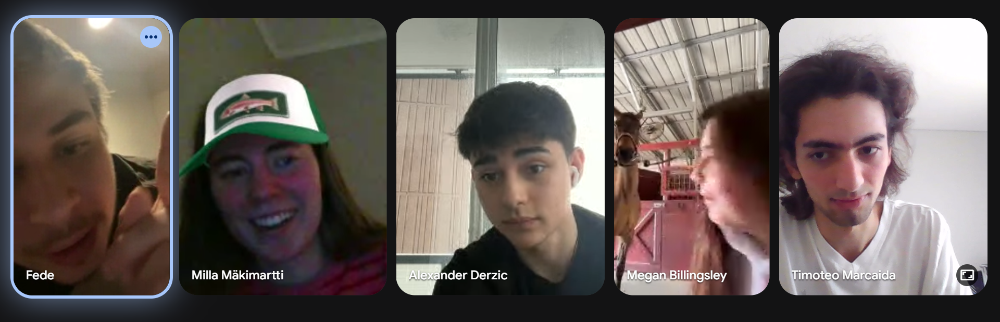
Sebs left and never came back and still hasn't accomplished his promise.
Also Megan is literally preparing for horse-riding as we were speaking which was kinda funny
Rating
Some sudden turns
Date:24/02/2026
Climate:Clear
Space:House
Time:Middle of the day
So I've been researching and I found out that the Uruguayan Palestinian ambassador Nadia Rasheed sent her daughter to Uruguayan American School a while ago. My mother was friend of this individual and apparently she was a really good person. The most interesting part of this whole thing is that the daughter of the Palestinian ambassador AKA Linda Rasheed is somewhat known by Sebs and I. A long time ago we said happy birthday to her just because of a random joke I did. That was such a funny coincidence. I found out about this because I began to get interested in Palestinian-Uruguayan relations after Raz and I walked across the Palestinian Embassy close to the sofitel. Turns out that Uruguay recognizes Palestine as a country. This is basically the most important requisite to becoming an official country, if you aren't recognized by Uruguay, I personally will never recognize your existance. Unless we are talking about Sealand, one of my ultimate goals is to get Uruguay to recognize Sealand so that it can become and official country.
I also bought these new pants yesterday which are feckin awesome, I showed them to the Table tube gang and they agree that they are awesome. Also Megan said she might be getting a studio apartment all for herself next year, which is sweet.I've also been thinking about everything Raz said last time we talked, well, obviously not everything. More specifically, he claimed that immigrants commit more crime per capita than normal US population. And I found this to be false. And this led me to wonder just how much of what Raz said to me was false, according to Fede, it was most of it. I just wonder where Raz gets his information from.
I've been thinking about Palestine and Israel more lately, and you know what that means, it means that my newest opinion piece is coming right up in a time near you!!!
I spent most of this day studying math, but I also spent a big portion of it studying the History of Israel, from the time that the Holly Land was established all up to the current day. I left off at the Origins of Hanuka where it was basically the greeks vs the Jews.
Rating
False decisions
Date:27/02/2026
Climate:
Space:Living Room
Time:Middle of the day
SO I've been debating about going to the Italian or not doing that. On one side, going to the Italian would be good because I get to hang out with Fernando, Estuchy and others.I also get to invite Mica to eat ice-cream again :D I still have that whole thing pending, I can't exactly figure out wheather she is shy or she is very respecfully and friendfully uninterested in me.
The major downside is money. And it's not even MY money, so like how am I supposed to judge that??? My father says that he is okay with paying it, but does that really give me all the authorization to just spend it as much as I want???? God only knows!!!
This is starting to feel like an Unspecified Direction kind of situation. Which is lame, if it was my decision I would just go, but my parents are making me doubt all of this. It's so annoying, perhaps I should just go full throttle with my instincts so that I can stop being so anxious about all of this. That was my plan initially, until my mother said something that made me feel guilty about using my father's money for something that isn't that worthy. I don't knowwwwwwwwwwww, the universe shall guide me. It'll be alright in the end because I can still go to the Neatherlands in the end.
New Updates
It turns out that I don't have a choice at all. I made it clear to my parents that my decision was set in stone, and if the decision was mine, then I would choose to go with my instincts. That is, I would choose to go to the Italian Hospital. But it turns out it was never my decision, I never had a decision, it was all but a mere fabrication, and illusion of choice. It makes sense because I'm not the one that has the money, duh.
So yeah, I can at least rest assured that I did everything in my power to go back to the Italian Hospital. It would seem that I need to try to meet up with Mica using other methods. My current plan is to travel some-day to Argentina with my father perhaps, and invite Mica to eat some Ice-Cream. If she says no on a weekend thennn I will 100% give up with this stuff, time to wait for another billion years till I see a girl as pretty as her. For a second I really did think I was going to be able to go to the Italian again, so it's really sad that this was the outcome. But I am known for looking at the positives
Now that I am not in the Italian, if I invite Mica it has absolutely nothing to do with anything academical, it's a more clear message that I want to be with her. That's really the only positive thing I can scrap out of this but yeah. Overall it was a pretty bad day because of these news but yea.
Rating1/5
Hate gettin anxious over these trivial problems.
I'm just imagining of how easy everything would be if I could just read minds, or at least just know wheather someone likes me or not. Not even romantically, just in general. It would be great, it would take out so much uncertainty out of my world. So much peace would be generated in my mind. Alas, I can not read minds :( I'm left with the unreliable source of my interpretations of what the actions of others could be.
Dani, Mono, and I talk
Date:28/02/2026
Climate:clear
Space:Room
Time:Night
So Dani, me, and Mono talk about a few things. We talk about Fede's and Sofe insistance on not hanging out with people that have different beliefs than them, and how that only increases the divide between the left and the right even more.
Raz is different because he is willing to hang out with people that have different beliefs than him. So in that regard I guess he is better. Dani and I also talk about Jeffrey Epstein. Jeff has been around the news all the time recently, which makes it surprising that Lucas hasn't heard of him at all.
We talk about the theory that Jeffrey Epstein was a Mossad asset/agent sent to the US to collect compromising information on several politicians(might or might not include Donald) in order to have leverage over them. This narrative offers a fitting, yet slightly scary explanation as to why the US insists on ihelping Israel in a variety of foreign affairs, including the Gaza war and most recently, the Iran war.
This theory is supported by Alleged ex-CIA agent John Kiriakou, who claims that it's very common for Israel to use these information-leveraging tactics against other countries. Worst part is that if this is true, Israel has essentially complete control over the US, so until we see the US refuse an order from the Israeli government, this theory will stand as a possible explanation.
We also talked about how the Epstein files had several examples of Jeff and other of his accomplices such as Bill Gates funelling money into partisan controversies such as Arabian migration and lgbtq rights, all to distract from the real problem. Rich people.
Truth is, weather or not it's Israel or any other organisation. The entirety of the US's government is involved in the Epstein files, and thus they seem to all be in control of whoever has the information. If it's Israel it explains why they help Israel so much, if it's anybody else, then I don't know what he or she might make the government do.
AlsoI tried to get Raz to join the call for like three hours but he just wouldn't reply until he went to bed. I've been trying to study some math with him to no avail.
Rating3/5
It was nice talking to Dani. He knows less than me in politics, so I can teach him all these theories and narratives and all. And I love how neutral he is. He just like me fr. I told him about how Capitalism and Communism both can work, but it depends on the people, and he agrees!!! Dani is a very underated individual.
Also, in case you don't know, I have a discord server, called The Bestest Place, I would describe it as the Potential most powerful Coalition in the World. There are some things stopping it from being the most powerful, but it has the potential in my opinion. If you want to join it, well why don't you just say so?
I AM TIRED
Date:02/03/2026
Climate:Clear
Space:Living Room
Time:16:13
Today I am feeling really tired and I can't deal with life. It's unfortunate but some days are just like this. Some days my body just decides to not sleep all night and just sleep on the day instead. But I've had it up to here with my body (imagine i'm making a gesture with my hand) I am not going to sleep. So I drank 2 cups of Coffee, a pill of Methylphenidate, and like 9 Mates. And like 8 hours later I'm still feeling the effects. I am fixing this damn sleep schedule one day or another, and if my body doesn't want to be tired by night, then too bad, because I AM NOT SLEEPING IN THE DAY ANYMORE!!!! NOT EVEN A TINY NAP!!!!! FUCK THE NIGHT OWL IN ME, IT CAN EAT SHIT AND DIE FOR ALL I CARE, BUT IT AIN'T GETTING NO MORE SLEEP.
Also I got my US-Visa stamped passport just in case I want to go to what appears to be the closest recreation of hell on earth humanity could do. No but in all seriousness i've been hearing bad thing after bad thing in the US. It's getting kind of tiresome. Last thing that actually shocked me was when Donald revoked the EPA finding that greenhouse gasses are bad for humans. WHAT DOES THAT EVEN MEAN?????? HOW DO YOU REVOKE A FINDING???? The only way you could revoke a finding is if you found another finding that contradicts it, but Donald didn't really bother giving us any scientific information that contradicts the very well known and established claim that greenhouse gasses have adverse effects on humans. But I trust that Donald guy... NOT.
I'm just glad that I'm in a country that doesn't have that much responsability for the world because I would probably be judging their every decision. I am really glad that I am 100% Uruguayan and this government barely ever does anything ever. Which is not the best but it's also not the worst :/ Many of my friends don't really like the Uruguayan president because he gives money to the poor and he raises taxes in doing so. I don't really know how true that is but my family is very good economically so I don't need to worry about it in the slightest. Come to think about it, I am very thankful for the life I've had, so many opportunities, and I've got absolutely 0 enemies so far. I wasn't into a persecutred minority, and I wasn't born into a poor economic status, seeing how the world is right now, I am so lucky. Thanksgiving came early this year I guess.
Like imagine I was born in Palestine, and then I got bombed, along with 66999 other people, I would hate that!!! But nah, instead im in the best country ever, just doing whatever I want. Dying of tiredness anxiety and depression :D I actually got diagnosed with Anxiety and Depression the other day, I don't know if I mentioned that but I took this test and the Anxiety metric was through the roof, check out this graph.
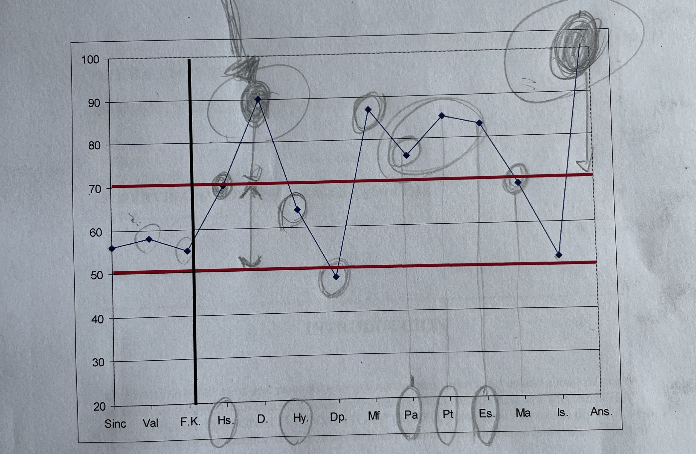
My test results
Letters
Meaning
Sincerity
It measures how often I appear to lie in the test
Validity
It measures how often I contradict myself
F.K
It measures how likely you are to exagerate their answers in the test
Hypochondriasis
Somatic preoccupations, always worried about what's wrong with your body
Depression
A lack of neurotransmissory such as Noradrenaline and Serotoning that might lead to dysfunction.
Tendency to be overly dramatic. Dramatic personality tendencies
Psychopathic Deviate
Presence of Psychopathic Tendencies
Masculinity/Femininity
Willingness or tendency to not conform to the gender roles of society
Paranoia
Tendency to be suspicious to their surroundings and be unusually perseptive of dangers.
Psychasthenia
Obssesive tendencies, OCD type symptoms
Schizoidism
Emotional detachment, limited desire for relationships, and indifference to social interactions, Alienation
Hypomania
Tendency to have a persistent and pervasive elevated or irritable mood (Bipolar Disorder type stuff)
Social intraversion
Tendency to be shy and socially withdrawn
Anxiety
Tendency to have a negative outlook on the future
So according to this Minnesota Multiphasic Personality Test the Psychiatrist concluded that the most concerning factors are the Depression and Anxiety. My Anxiety is so fucking high it couldn't even be measured, it litterally goes outside of the graph, it's more than a hundred. It's on a whole other strata of stress inducing reckoning.
Anxiety
I guess that has a little to do with how much I've been getting into politics. I can't see a solution to any of this, all groups hate each other so much, and upon seeing their history, there is no way to end it. It seems to me that the war will continue forever and that is hurting my guts so bad. So many innocent people with their whole lives ahead of them, eating breakfast and putting their footwear one feet at a time, just decimated because Politica leaders can't fucking talk in an era where communication is so abundant you probably couldn't NOT communicate with the rest of the world if you fuckin tried your hardest.
So ya, the Anxiety mostly stems from all the unnecesary yet apparently innevitable death of people in political conflicts
Depression
I don't really know where the depression comes from. Maybe it all started with my fucked sleep schedule which led to the lower production of neurotransmisors like Noradrenaline which then lead to more problems sleeping and so on. That is my hypothesis. If that's the case then once I fix my sleep schedule everything should be great.
Psychopathic Derivates
I can proudly establish that I most definately lack Psychopathic tendencies. I am actually below the normal population in Psychopathic Tendencies how about that. That is really epic. I am usually an optimist, therefore I have to make the concious effort to discover certain downsides with stuff. I have heard that in this world, it's typical for succesfull men to have psychopathic tendencies, since the ability to backstab other individuals for ones own profit is a trait that Capitalism unfortunately endorses. Therefore my chances of being a good CEO plummet. But I don't really mind
Paranoia
Everyone could be out to get me!!! I guess I do overthink a lot when it comes to... just about anything. So this trait makes sense because I am constantly always aware of my surroundings, which adds a little bit to my level of stress sometimes. I can definately see how the Crohn's disease manifested in me. It had enouph stress to power for like 3 lifetimes!!!
Schizoidism
So I do feel alienated and socially detatched from people on several occasions. But that's not because I want to, the typical schizoid personality disorder is usually accompanied by low levels of stress, suggesting that an individual likes being alone. I know for a fact i don't like being alone, I don't choose to be alone. If I am alone it's because I am too shy to ask my friends out or to meet new people. So yeah.
Masculinity and Femininity
I ALWAYS, thought gender roles where dumb. Ever since the very concept was introduced to me I started to question it. Because you know me, I am an incredibly contrarian person, I question everything. Ask my mother!!! I used to ask her just about every single question there was ever an answer for, and even questions there wasn't an answer for. I once unironically asked her for the meaning of life at some point. Safe to say my mother was constantly on the edge of succumbing to her irritation and defenestrating my child-self off the house. Luckily she never did.
OKay but back to the topic. My mother always used to say the traditional stuff like "Ladies first" and "Oh don't do that, that's for ladies" And I would literally always ask the classic questions like "Well what happens if we are being forced to walk into a volcano, would a lady be required to go first then????" And as I grew and got introduced to more specific gender roles, my hatred for the concept grew stronger, specially after finding out that on a societal level women are less accepted in work spaces because of the whole risk that they might get pregnant and stuff. Absolutely absurd. I also hate the Stereotypical Man figure that is presented in the phrase "Boys will be Boys".
First time I heard that "Boys will be Boys" I thought it was an obvious statement that meant nothing but Boys=Boys, same as the statement that 1=1. But apparently it means that boys are expected to act in certain controversial ways such as innapropiate behaviour towards women and being subject to occasional violent urges. This is so retarded that it's actually an insult to people with Mental Retardation to refer to this thinking as "Retarded". So instead I will just say that this construal was manifested by no-one with any modicum of intelligence in their mind. It must have been created by someone with such an evident lack of neurons in their brain that it borders on the non-existant
All that being said I am glad that I have an Aberrant characteristic in the gender role spectrum.
Rating2/4
Alex's Birthday
Date:08/03/2026
Climate:Clear
Space:House
Time:19:00
So thanks to a story posted by Carla Antonia Rivas on my Instagram feed, I found out that it's actually women's day. And I start to think about how awesome women are and how I would love to be one but unfortunately that will never happen :( So instead I started getting artistic, I thought about making a song, but instead I decided to make an instagram post that would show appreciation to my top three favourite women of all time.
Isabel Angélica Allende Llona, Catherine Bush, and Amalie Emmy Noether
I think I should have put the names of this women in the instagram post because not everyone might recognize them but too late, post's posted.
So if you'll excuse me, I will now just go through why I love these women so much. Firstly let's go with Isabelle Allende
Isabelle Allende
She was a writer and a poet who lived a very harsh life. Within her life was the "Golpe de Estado" of Chile and other political events. She also had to go through divorce and if I'm honest, this is the favourite woman I know least about. I just really like all her poetry but I can't say I know much about her personal life other than it was really harsh.My favourite poem she wrote is "Vida Garfio" which was such a great poem that I used it for my IB Spanish Oral and I got a 6. I also love other poems she made like Caronte and such. But also, a cool fact is that she wrote a book titled "Paula" and my mother loved the book so much that she named my sister after it!!! Allende also had a daughter named Paula whom unfortunately died at the young age of 28. But yeah, just a really cool individual overall
Kate Bush
I only recently became subjected to the amazingness of Bush's discography. She was hired early on by a talent-seeking agency that immediately recognized the musical and artistic talent in this girl. Thus paying for her entire education, and BOY did this move pay off. The first album was a hit, the second not so much because those bastards rushed her, but after that, in my opinion, every single piece of media this woman produced was nothing short of an absolute S-Rank infinite-tier BANGER. Just every song is so meaningfull, or whimsical, or fun, and most importantly, super good to listen to. OMG I just love everything she makes so much. You know, although I heard her song in Stranger Things first, I didn't really care that much, it was a good song but I thought nothing of it. It was only when I found a Vinyl disk in Punta del Este that had the album of "The Kick Inside" and that album was the GOAT. After that I just listened to everything she ever produced and immediately became my current favourite artist of all time. I am an absolute fanboy of Ms Bush
Emmy Noether
I know her mostly because of her workd in the conservation laws regarding relativity. Einstein simply couldn't exactly figure out how energy was conserved in a sistem with bent space time. She miraculously figured out an amazing fact through hard work and math. She discovered that translational symmetry is what causes conservation of momentum, rotational symmetry causes conservation of angular momentum, and time symmetry gives you conservation of energy!!! This were big revelations at the time, specially the last one. This is because on the long term, there is no time symmetry, and that explains one of the most unexplainable phenomena of all, the redshifting of light in space!!! Why does it lose energy??? where does the energy go???? Einstein could not figure it out, but Noether could, she simply figured that the energy is lost because of the lack of time symmetry. And if not lost, then it goes to the fabric of spacetime to keep it expanding or whatever. Truly genius stuff. She also made discoveries about local symmetries, and also discovering where energy goes in bent space time and such, proving that the Bianchi Identities were simply the best solution there was to get. She was second woman in Germany to get a doctorate, she managed to get a small salary for teaching at a university. Until the Nazis came and banned jews from teaching. But even still, she gave lectures in her Home Kitchen, and he would even teach Nazi Students because she would not discriminate at all. He would spread her knowledge and passion for science to anyone willing to uncover the truth, even if ideologically disaligned. When it comes to being a genius, she is simply the best there is!!!!
Sometimes I wish I was a woman. This is for a similar reason to why I alway play the hardest mode on any video game. I believe women play life on Hard Mode, they have so much more going against them than men. They have more challenges to overcome, and I think that's awesome. Actually no, it's really bad, the awesome part is that they are actually succesfull at overcoming the challenges sometimes. But I guess I still have many challenges to overcome, I have Crohns disease, ADHD, Depression, and Anxiety. I guess we all have our challenges.
Rating4/5
Grl pwr
Also it's Alex's birthday, I always found it kinda funny how his birthday is on women's day even though he isn't a woman.
Also I really liked that I created that piece of art to showcase my appreciation for women. Even though I don't yet know how to draw, I am still capable of some pretty cool looking art I would say. but yeah.
Also, talking about how great women are, and how they are hated for no reason sometimes. I have finished a recent opinion piece about why Donald Donald sucks ass in my opinion, here it is
Canon Life
Date:09/03/2026
Climate:Clear
Space:Room
Time:Middle of the day
Upon reviewing my website, I just happen to realize that this is the Diary's official anniversary. WOOOOOOOOOOO, yipeeee. I made it a whole year. And now I think I am starting to be more and more productive with my time, maybe these meds are helping with my sleep and my overall efficiency.
Not much happened today though, today was actually a very bad example of how a good day would look. I didn't do anything :/ Fabri texted me a very funny meme, him and I have been texting ourselves some funny memes relating to the war in Iran. Pretty funny stuff
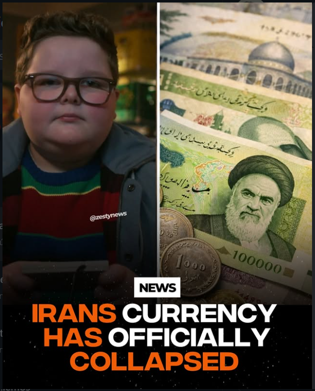
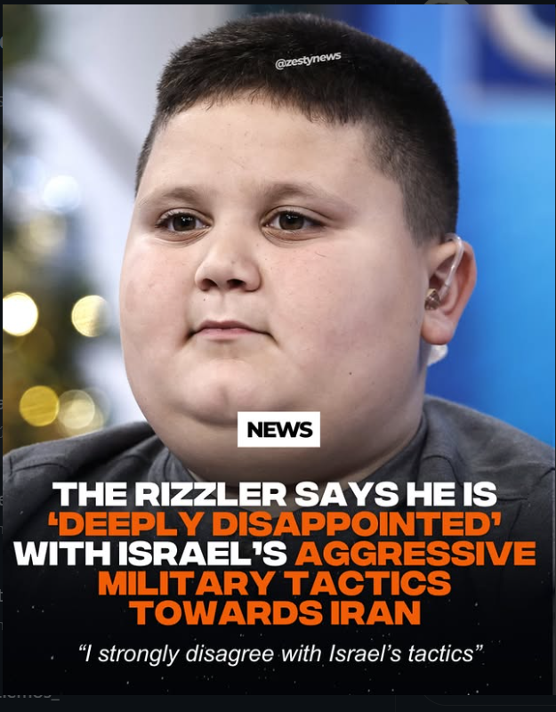
Memes fabri and I sent each other
On a more serious note I have been hearing some interesting stuff about Iran. Israel and the US claim that for what I think is the eleventh time, Iran is building a weapon of mass destruction (Nuke) and they have to stop them. The IAEA noticed that Iran was enriching a bunch of Uraniu, this was (according to Iran) a retalliatory action to the sanctions that the US had put on Iran, but it was only to show everyone that they have the ability to make Nukes, not necesairly the intention to. They said that if the US lifts the sanction, they will reverse this process and stop enriching so much Uranium.
But the US and Israel didn't take this threat of Iran having the capability of nuclear bombs lightly, so Israel sabotaged (bombed) the Natanz Uranium enrichment facility on April 2021. Iran also didn't take this threat lightly, so they enriched even more Uranium, up to 441kg of 60% Uranium. Not exactly weapon grade percentage but still a lot of fuel and it can be enriched further to make weapons. And that brings us to today where Israel and the US have just about had it with these Uranium enriching shennanigans.
In 2025 Israel responded in-media-Gaza-War to Iran by bombing a bunch of Uranium enrichment centers, aswell as a heavy water research reactor. The heavy water research reactor is only for research purposes so I don't know why they bombed that shi but that's besides the point. They mostly bombed enrichment centers.
Iran was getting kinda fucking tired of getting bombed. But they just continued their buisness as usual. Starting to rebuild some of the destroyed stuff. But as I said, Israel was getting absolutely pissed at Iran about all of these radioactive shennanigans.
I will do a little intermission to say that it's very hypocritical for Israel to be so worried about Iran having nukes when Israel themselves decided to secretely create an entire Nuclear Weaopns program and they didn't even sign the nuclear non-proliferation treaty and they refust to have actual investigation in their nuclear sites. I don't believe ANYONE, should have nukes, and I think that this bullshit that Iran is doing is so fuckin dumb. To threaten people to build a bomb, like dude what the fuck do you expect??????? Still this anger coming from Israel is equally as Retarded as Iran enriching Uranium as a threat. Working with Nuclear Energy for any purpose other than to generate electricity for civilians is Retarded. And I'm obviously not referring to people with mental disabilities, those kids aren't retarded, these people are retarded, the ones that mis-use the power that oppenheimer discovered.
So then the US and Israel join forces to make sure they remain one of the only countries to have Nukes. They threaten Iran and idk exactly what they were demanding from them. Maybe they were demanding for Iran to give all the enriched Uranium, and Iran probably said no. Iran also said that they wouldn't be the ones to strike first. They in fact did not strike first
It was actually Israel and the US who struck first. They claim to have launched some "pre-emptive attacks" in belief that Iran was planning to strike first. Their sources for this are Israeli intelligence information or whatever. And so that's the meat of the conflict right now. Basically Iran was acting stupid with the most powerful fuel source that this planet has to offer, and two very powerful countries didn't want a country to play with this powerful fuel source, using it as leverage and whatnot, so they decided to bomb it. And now there is was. This is so fuckin stupid, every country is so stupid, every country in this war is so stupid, except Palestine, specifically the west bank, obviously not Hamas... duh, they are probabily the stupidest of them all. But not really, it's really hard to match the stupidity of Iran, Israel, and the US all combined. It's as if all of these countries actually wanted to go to war despite them constantly claiming that's exactly what they are avoiding.
Also the Iranian leader is dead. And new news today
Breaking News
Apparently Israel decided to bomb 4 oil deposits and a petroleum logistics site around Tehran. In case you don't know, oil burns, so now a thick smog is covering a whole bunch of Iran. This will most likely cause a whole bunch of pneumal issues to the population of Iran, because no matter what Donald's administration says, greenhouse gasses are in fact hazardous to humans. This will also not help in our current fight against climate change. And this all happened yesterday of all days!!!! In women's day!!!! I just can't believe it, the STUPIDITY-METER has just gone up by an approximate amount of A FUCK TON. I am actually going to start measuring this shit, you think I won't?
RatingIdk/10
From now on, I am going to measure the political stupidity of the current events that I hear on this little vial over here. Each time I am aware of a stupid event, I will add a certain amount of ambiguous pink liquid to this vial. We will start at 0% because if we had to count every imbecilic event that happened ever since october seventh we'd be feckin drowning in the stupid-sauce or whatever the liquid shall be named.
Litro'Vial:
I was going to call this the "Retard'o Vial" but that didn't make much sense. However, I will use this opportunity to do something
To take a stance. A stance on slurs, more specifically the word "Retarded". Intellectually disabled people in the past were referred to with the term "Mental Retardation". But that term wasn't very helpful since it was only purely descriptive of someone who by the societal standards of the time, was seen as less efficient or wrong in a way. Therefore the word "Retarded" was not only used in medical contexts to basically say "Your child has no hope in this world" but it was also used as an insult to people who acted in a way that they viewed as "wrong".
But now the term "Mental Retardation" got fuckin discombobulated out of the medical realm, by which I mean, it doesn't exist anymore. Therefore, there is no longer anyone in the world who is officially retarded (unless they kept a diagnosis for mental retardation from 15 years ago). They can have Autism, ADHD, Dyslexia, you name it, but they aren't retarded. However the word has persisted through it's vanishment from the medical realm, in the form of an insult. For a small while it was used to still refer to intellectually disabled people, but as it became clear that these people can still be capable of great things, people started to use it basically as a synonym for dumb.
This is where we are at right now, the word "Retarded" is a synonym for "Dumb" or "a delayed way of thinking" as I like to put it. When I say "damn, this war sure is retarded" I am obviously not saying that the war is intellectualy disabled, neither am I implicitly suggesting that wars are caused by intellectualy disabled people, or that they are comparable to intellectual disability at all. I am saying they are senseless or stupid. This is actually very similar to the words "Moron", "Imbecile", and "Inept" which all used to be medical terms to describe low IQ people, just like "Mental Retardation". However with time, all of these words just became normal insults and ways of just referring to inneficient or wrong processes. I believe that the word "Retarded" is on it's way to becoming just another normal insultive word, a synonym for dumb, moronic, or imbecilic. It's just that some people are still touchy about the word, because only recently 15 years ago did the term "Mental Retardation" get changed to "Intellectual Disability" but I am sure that in some years, the word will get neutered out of all of it's slurish, discriminant meaning, and it will just be another insult.
So I decided to step ahead of the curve and start using the word "Retarded" as a normal insult, because I just happen to really like how the word sounds, and how it's actually a synonym for delayed. That's actually another point, retarded means delayed, before all this medical nonsense got coined. You can still see it in several academic topics such as the topic of Retarded Potentials in physics, which describes electromagnetid fields, or a retard in music which means to slow down the tempo, or a flame retardant. What I am getting at is that we can't really treat this word as that much of an insult because actually retarded people don't really exist anymore, and furthermore, the word has an actual meaning that is used, or used to be used, in several ways. It's not like the N-word which was created explicitly to refer what the people at the time believed to be a lower race of human beings.
My next point is about slurs in general. The word "Guy" originated from Guy Fawkes, he was a man that tried to blow up the British Parliament, and thus he was seen as a bad figure(I promise I am getting somewhere with this). So then the word "Guy" became basically an insult that was meant to comparing some individual to Guy fawkes. But as time went on, it was used so often that it lost it's insultivity attribute, and thus guy became just a word for any male human, and eventually, any human.
My point with this, is that by letting an insultive word be used as an insult, it will eventually lose it's insultivity value, and thus it won't be capable of hurting anyone anymore. This is was is pseudo-happening with the N-Word, and how black people use to refer to themselves. However by not allowing anyone else to use it either, the word still carries some insultivity to it, and thus it can still be used to insult others. My main point with this is that by restricting people from using a certain insultive word, we are preventing the insultivity value of such a word from decreasing, and thus it will remain a slur, and a weapon, for racist people to use, forever. Therefore, we just shouldn't limit anyone's freedom of speech, if they want to be insultive, they can, they'll be hated for it anyway. Eventually black people won't even be bothered by people calling them the N-word, hell, it might even become a synonym for "guy" if we stopped caring about it so much.
My last point is that I am actually technically intellectually disabled. Which is to say I have ADHD and Autism. Therefore if nothing I said previously made any sense, I can reclaim the word "Retard" just like black people reclaim the N-word, and I am allowed to use it how I please :p
And with all that said, the vial's name is officially the Retard'o Vial, and the liquid within it, is the retard'o fluid. And it has absolutely NOTHING, NOTHING, NOT A THING, NOT A SMIDGET, OR AN IOTA, to do with intellectualy disabled people. It's just dumb
I had a dream today
Date:10/03/2026
Climate:Clear
But today nothing really happened so all of that was irrelevant.
Space:Bed
Time:Unkown
Timo is in bed, sleeping. But he isn't in prospit or on derse. He is actually dreaming like a normal human being.
The dream begins with me scavenging some field full of grass and trees for some materials. But it's weird because there are materials in places that shouldn't contain these materials. For example I use a disintegrator to disintegrate a tree which for some reason has diamonds inside it??? And a lot of stuff like that occurs. So I go back to my home and I deposit all my findings, and this is where I get a little introduction and world.
Apparently we are preparing for something. There have been some space-time anomalies that have been transporting some not-so-friendly entities into our planet. These very same space-time anomalies have also been transporting some not-so-usual things from other dimensions such as trees that grow diamonds inside them. But according to the scientists, this whole spacetime bendy thing is eventually going to result in the end of the world, this is not an unusual trope for my dreams to have. So apparently we are gathering materials for the end of the world or something.
I go onto another expedition but something goes awry this time, a bunch of other people appear, and I try to fight them off but they capture us all. And the dream sequence kind of cuts there because they knocked us out, and suddenly I'm in my room on a computer playing a game about foraging and talking to Raz about it. We are talking about the mechanics and how there are safe-zones in the loops and whatnot... wait isn't this similar to what I was just experiencing?
Then I start experiencing it again. But this time I appear to be in an unkown room with a bed. It appears I am in the lair of the bad guys that captured us. I have either been imprisioned, incorporated, or I have switched perspectives with someone else. My guess is I have somehow been incorporated into this place because I am free to roam around and do whatever I want. There are television screens in the common room that look out to the outside world. The End Time are here. Monsters are everywhere, there are zombies, slimes, dragons, you name it. But suddenly the screens shut down, and when I ask the bartender what happened, he says that the bubble is looping... ?what
And then an alarm goes off and I am told to go to some place. Now, this is where events start to get off extremely strange, because it appears that I am in a society that is constantly in the edge of apocalypse, let me explain.
Explanation:
After being captured by this "Colony" of bad guys the apocalypse started happening. Many space-time ruptures started appearing, many monsters started monstering around, but among all of these weird space-time bendy anomalies, something else happened. The creation of loop-bubbles. There are areas of SPACE that behave just like any other area of SPACE, except that within a specific interval of TIME, they randomly LOOP back. An example is, if a loop-interval is like 12 hours, then anyone in the bubble will be sent back 12 hours in time, every 12 hours. So a bunch of people established a colony inside a loop bubble to prevent themselves from reaching the prophesied end of the world. We are basically living in the edge of apocalypse every day, but just as the apocalypse begins, the loopbubble loops.
That's all cool and all, but like, there aren't enouph resources inside this loop bubble for all of us. So every day we must still go out to forage resources. The resources are always located at the same spots, but the monsters aren't constant. Their "spawn locations" are always unpredictable for some reason, and so are certain spacetime anomalies. However the colony refuses to accpet this, and it insists that the colony's loop-bubble is stable and will remain perfectly stable forever.
However, the monsters, even though we are in a Loop Bubble, they are still increasing in quantity with every loop. Thus we need more soldiers/foragers to go get food. And thus we go back to where I was being taken to a strange room and some really odd things started to happen. Please take into consideration that all the exposition I just dropped was completely unkown to me, and was only revealed to me after this whole innapropiate series of events happened to me.
So we go to this room and they tell us to take our clothes off and deposit them on a sort of bin. We go to the next room, and it's a big room full of mattresses with numbers on them, and they tell us to go to our respective mattress, but idk which one is mine, so I just go to the last one hoping no one goes there. The mattress did belong to a couple but they didn't mind me being there, it must have been some sort of confusion since apparently this room is never supposed to have an odd number of people. Every mattress is supposed to have exactly two people in fact, and then, everyone starts fucking. Like having sex and all, and I am asbolutely just... absolutely flummoxed by the series of events that has just transpired. I know for a fact that I definately don't belong in whatever place I just woke up on, but I really can't leave either unless I want to be subject to the fuckin APOCALYPSE, yet it seems that staying here means I will have to be subject to the FUCKING apocalypse.
Jokes aside, I'm not doing any of the fucking, so at least it's not that bad, until a girl that apparently finished her "session" early offered to "have her way with me". Before I could respond, the man says "no, no worries, I'll do it". I... what?? I'm not a girl???? But upon looking down on my birthday suit, it seems that all along I really was a girl. How ignorant of me to assume... my gender???????So I feel like I have to fit in, otherwise they might figure out that I am an impostor and kick me out. I refuse to describe the series of events that unfold after that interaction.
So after we are "done" I notice a vending machine that was dispensing some free consumable bars with interesting labels. I wouldn't eat any of these ever in my fukcin life. So after a few other events I refuse to describe in detail, I find myself in some sort of SAUNA with a window to the outside. I am with a new group of friends still naked because I haven't gotten any new clothes yet. I ask them about this world, and they proceed to tell me all the exposition that I previously gave you. And they explained that's why they had these breeding sessions, because they are in constant need of new soldiers and stuff. This is all so wild to me. Eventually I do actually get my clothes back and we all go on an expedition to get supplies. We gather stuff, and fight some monsters, I personally don't do any of the fighting thoguh, I just got really lucky I guess. But after gathering some supplies, I decide to go somewhere else. According to the rest of my team, the colony's loop-bubble is about to close, if you are outside the loop bubble once it loops, you are out forever. But I don't listen because I apparently know about another loop-bubble where my family lives. It turns out that I know this pre-determined risky path to my family's loop bubble. The loop-interval of my family's loop bubble goes a little bit beyond the loop interval of the colony, therefore I can use it to get back to the colony. However the pre-determined path involves using this elevator-shaped-gondola in order to jump into one of the window-doors of the apartment. The gondol breas and it's now hanging off only one cable, so it's dangling and we are really high right now.
I can't jump towards the building while the door is closed because I don't think I'll be able to open it mid-air and enter before I fall to my death. So I instead decide using my META TACTICS. I know im in a dream right now. Unlike very avid lucid dreamers, my lucid dreaming skills are shit. Every time I have dreamt-lucidly, I have never been able to control my dreams, or at least not to the extent people claim you should be able to control your dreams. However this time I really try my hardest to use my lucid dreaming powers to open the door so I could jump, and suddenly a gust of wind opens the door. Just what I needed
I enter the building, supply my family, defeat a monster, the family loop does it's thing, I go back to the colony, and about there, the dream ends.
Rating3/3.5
One of my coolest dreams/weirdest dreams
Some stuff
Date:12/03/2026
Climate:Clear
Space:House
Time:Night
Me an mono go into a call and we talk about some stuff. We also continue our ANIMAL TIER LIST which will be published into this website as soon as we are finished. This ANIMAL TIER LIST is on of the best projects Lucas and I have ever embarked on and I am so excited to see what the END PRODUCT will be. On other news, Raz has been very occupied with work from his university, and therefore I haven't been able to spend time on call with him in the slightest. I can usually talk with Mono during his walks from his apartment to the university. I also talk with Mono while he copies formulas from the pdfs that I make with him.
IDF rapists are pardoned
In a new news segment, ima start keeping track of some of those nice POLITICS. Historians of the future are going to love these accounts. These are just the news that BIG MEDIA decides to feed me every day. It keeps me informed of some of the most HORRIFIC ATROCITIES that are being committed at the moment. Specially in the middle east
Charges on Israeli rapists dropped!!!
In a July 5 2024 Five undisclosed Israeli sodliers were caught on CCTV at the Sde Teiman military prison abusing a Palestinian Prisioner. Medical resports found severe lacerations around the anus, suggesting possible anal penetration through the use of a sharp object.
The five accused Israeli soldiers were subjected to a polygraph examination that suggested they were lying when they answered the question "Did you insert an object into the Palestinian's anus during a search?"
Polygraph Examination:
"Lie detectors" are unfortunately really bad in legal contexts. A very nerveous innocent person could show up as lying while a calm murderous sociopath could show up as telling the truth. The American Psychological Association has stated there is no evidence that any pattern of physiological responses is unique to deception and thus the fact that these are used in a legal setting at all adds juice to the vial
Suspicious activity published by Channel 12
Medical reports cited in the case overall show severe rectal injuries which required surgery, a ruptured bowel, a punctured lung, and fractured ribs. Later that same July, the 5 Israeli soldiers were arrested and an investigation was pursued by the Military Police
A tweet that is totally not against basic universal human rights
On August 2025, Channel 12 published some leaked CCTV footage that showed what seemed to be some 9 Israeli soldiers ganging up on one dude while they used their shields to cover up whatever they were doing. The footage was leaked by the Military Advocate General Yifat Tomer-Yerushalmi whom was later placed under house arrest for being suspected of leaking Israeli state secrets. She was the one who also filed the indictment
Around this time, one of the five suspects revealed his identity to be Meir Ben-Shitrit, he called for the firing of Military Advocate General Ms Tomer-Yerushalmi. Then the Defense Minister Israel Katz anounced he would try to fire her, even though he kinda lacked the authority to do so. But a bit later Ms Tomer-Yerushalmi abdicated her position anyways. Israel Katz then replaced her with Itai Ofir who ordered the cancellation of the indictment against the five soldiers on March 12, 2026(TODAY), all the charges were dropped and they are now free of any consqeuences. This decision was supported by Israeli President Benjamin, and obviously by Israel Katz.
LITROCITY
According to my epic calculations which you might be capable of doing youself in the future. This event alone has generated 7.814760 LU (Litrocious Units). However, we aren't asessing the Litrocity of the event itself, we are only asessing the Spread factor granted by the fact that they decided not to persecute these ner-do-wells. According to my calculations, the spread is 203 LU. Some time from now Lucas decided that the MAX Volume of the vial is going to be 1.25 Million Liters.
THE LITRO'VIAL STARTS IT'S CLIMB TO WUTHERING HEIGHTS!!!!!
Litro'Vial:
So yeah, 203 liters is not that much in comparison to 1.25 million, that's why you can barely see it, but it's a good start.
La grenouille
Date:25/03/2026 s
Climate:Dream
Space:Dream Bubble
Time:The present
I just had what I call my most heroic/fucked up dream ever. And I mean it so fuckin much it is unbelievable.
So, it all started with me, in my bed. I was on my computer in my bed, as I usually am, trying to fall asleep while hearing some youtube video. Something I know I shouldn't do but whatever. And then my mother bursts into the room and she scolds me for using my computer while I'm supposed to be sleeping. So after that the rest of the night is some five-nights-at-freddy's type of night-life where I am constantly checking up on my mom to see if she is about to open the door, and pretending to be asleep when she does, and muting my sister's phone calls. But at some point I get a call from someone, and all my memory about the call and who the caller was is completely gone. All I know is that when my mother asked me who I was talking to I said "My sister" and my mother said "You liar, you always lie, why are you lying to me?" but the exchange was all in spanish obviously.
Then I woke up. I woke up with my computer playing some random video from MOIST-CRITICAL, I go downstairs to drink NORADRENALINE-BOOSTERS (depression meds) but I remember that I have none, however, something is wrong. For some reason, it would seem I actually do suddenly have them in my hand. This is impossible because yesterday I remember checking and I in-fact did not have any of my depression meds left. Thus I concluded I was in a dream, so I did what any sane person would do. I used my incredibly high Intelligence-Attribute to deduce that since I have no pills in real life, I should take way more pills in this dream. This is because obviously dream pills are less efficacious as an effect of being in a dream, but if I take more than I would in real life(like approximately 4 times the amount according to my calcs[Calc is short for calculations]) then it should have the same effect on me when I wake up. So I do that, using my LUCID-DREAMING-POWERS I conjure 8 pills and I drink that shit up.
Then I wake up, again, but this time I am not me. I am a frog, travelling in half an eggshell across the sea. Eventually I arrive to Uruguay where I try to come back home to my owner. My owner was the young daughter of a classic middle-class family that was overall pretty happy in what I would call an Alternate-Universe-Montevideo where there is more grass and more parks than usual. And the cassino isn't there for some reason(The Sofitel) It's a long an treacherous climb, but that's what you signed up for when you decided to live in this rouph and tumble world. I tried the window but they were locked, I tried the chimney but I concluded the soot would further shorten my already pretty short lifespan. I even tried to approach my owner's parents. But nice as they may be, they didn't recognize me as my owners previous pet, before she threw me into the ocean. Suddenly a second frog approaches me, one who seems to be female and wearing a Japanese Kimono, she arrived in the sea on an eggshell just like me and she asks "Are these the Oriental Lands". It's a complex question because both Uruguay and Japan can be referred to as such. She further specifies asking "Am I in Uruguay" and I say "Oh yea". She then teaches me some ninja skills which I use to sneak past the door once the parents open it. I head to my owner's room. She isn't there yet, but no matter, I'll wait
And she never arrived
Then I wake up again. This time I am not me, instead I am this fat man who just woke up. I can just tell that he is a reddit user, perhaps even one of the afeard reddit mods. I know this not only based on his large wideness-attribute but also because of his actions. The first thing he does upon waking up is go to his computer and go through reddit. I don't know what he is doing there, probably arguing with highly intellectual beings beyond our comprehension. Then he goes on about his day, and in his house there are 4 people, I know this because he shouts "Where are you 4??" And 4 figures appear, a daughter, a son, a woman, and a man. The first three appear to be worried but kind of already used to whatever is about to happen. The last one, the man, seems to be new to the situation, and he is freakin the fuck out. Apparently this Reddit Moderator has been endowed with special capabilities, the capability of being able to control someone's mind/body against their will. The Dream suddenly cuts to a series flashbacks from these four victims and their experiences with the redditor. It is through these flashbacks that we will be capable of figuring out more about the redditor's intentions and some details about his powers. The Reddit-Moderator will hereinafter be referref to as R-M
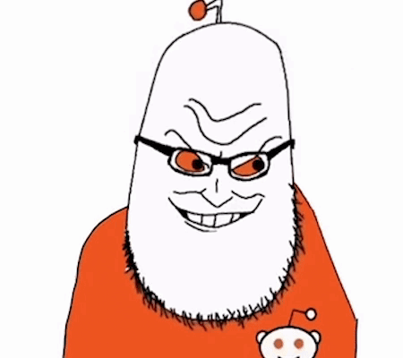
Imagine this is the R-M from now on.
We start first with the man. We don't actually get to see his first encounter, we just get a full explanation of his R-M's powers. Basically, if he has triggered his control, bro is capable of controlling your MUSCULAR TISSUE. This is reaaaaaaaaaaaaaally not good because that shit is basically responsible for literally all of your movement, and your digestion, and also your bloodflow. Meaning this guy can straight up murder you via cardiac-muscular-tissue-halting. Which would suck ass. Furthermore, the Man is currently Naked in this guy's house, which gives us a hint as to what he does with his victims. It would seem to be perverted things, this R-M has just climbed the ranks of evilness to the supervillanous very quickly.
The second victim we get a perspective from is the Woman, the woman actually happens to be famous argentinian actress Anya-Taylor Joy. Her name is never explicitly said so I don't know if this is actually her or an extreme look alike. But apparently she was walking upon the streets of Alternate-Universe-Rambla, when suddenly this mthr fucking freak that we call R-M grasps her hand. A symbol of a heart appears, not a love heart, but an actual human heart pulsating and stuff. Suddenly the woman is paralysed. The audience is shocked in horror upon the realisation that all R-M needs to trigger his control is nothing but simple skin-to-skin contact. R-M and the woman then enter this man's home. And the woman is rightfully terrified at this point. The next day the woman is forced to walk outside into the front-lawn naked as the R-M lauphs
From afar, the camera zooms out. It seems that a Detective-Figure has been overseeing these events through the implementation of some cameras in the front-lawn, but also inside R-M's house. However the cameras inside where de-activated. Although there is not enouph evidence to start a case, this detective begins to rush. He is to distraught to see what could possibly be an awakening of someone's inner powers used for such deprave purposes. He needs to put an end to this NOW!!!
Our next victim is a young son/boy. The dream starts with the boy already in the R-M's control. He asks the R-M if he could go to a store next to his house old house in order to buy exactly 156 rolls of toilet paper. You may be wondering, why 156??? How would such a tiny boy even carry 156 rolls of toilet paper. I have no idea, I am not that boy, I am just an outside spectator who has occasional access to information regarding the boy's actions and some thoughts. The R-M says "Sure, that seems like a reasonable amount of Toilet Paper to buy". The boy gets his hopes up and thinks to himself "YESS!!! This is my chance!! I can get close to my house, and quickly tell my parents to save me!!". The boy goes out and leaves a trail of toilet paper strips, I don't know why he did that. But he came upon a fork in the road, a bifurcation if you will. One path lead to his home, the other to his store. He had to be quick about this. The boy ran to his home but almost instantly upon doing so, his body freezed. He started automatically walking back to the R-M's home against his will, picking up all the toilet paper strips he had left on the way. The flashback cuts to The R-M with The Boy in the car. The R-M is driving the boy somewhere.
From afar... except not so far, he is very near. The detective observs how R-M and his young boy are in the car. It is now a good time to reveal a pretty shitty plot twist, I AM THE DETECTIVE!!!! Or so I think, everything this man thinks is like available to me and he just acts in the ways I would act if I was him, which I actually felt as if I was. I didn't feel like I was watching someone else from their perspective, I felt like I had more free-will per-se. Anyways, I stop R-M claiming he broke the law by stopping on a roundabout when he clearly had the Right-of-Way. Bro is rightly pissed at me, but this is nothing but a ploy. My agents immediately fill the area with cones, now the car can't get through. R-M is confused and he starts removing and knocking the cones over, but I just follow him and place them right back up. The scene is hilarious to me and I start lauphing. The reddit mod looks at me angirly. I order the boy, to get out of the car and quickly tell me his real name before R-M can exert his control. He says "Ryan Robinson"... to you(the reader reading this) this may mean nothing, but to the detective(AKA:me) who has access to everyone's databases, I know this is the missing boy of the robinson family. However he was previously rocking some brown hair according to the data files, and now he is blonde. This means the reddit moderator must have used some sort of hair-colour-modifier to obscure the boy's appreance. Clever, but not clever enouph to stop the Detective's witts. The boy is saved.
The final memory/flashback I gain access to is that of the daughter. We actually get to see that the daughter is indeed the original owner of the frog in the eggshell, in case that wasn't obvious. We also get to see that once she was caught, the detective tried saving her, but she refused to be saved, for the R-M had threatened to harm her family if she were to escape. But the daughter gave us one last detail, R-M seems to have complete control over his own muscles aswell. She said that R-M has two coins under his eyelashes, and he uses his eyelash-muscles to chew on them with his eyes closed.... I am sure this is supposed to be some metaphor for R-M being blinded by greed or something. But it was also deeply unsettling to the detective, I somehow seemed to know there was no hope of me in the form of the detective to stop his harm. And thus I lost hope.
And then, I. Wake. Up. At crepes, idk why I was sleeping at crepes okay!!! I just was, on the table hunched over, and dreamin about all this bullshit. But suddenly I get a vision!!! EVEN MORE INFORMATION?!?!?! I see that Nata is currently in the moderators abode??? Nata is one of my friends, that's just about as much as you need to know. Shit, just, got, personal. I immediately leave Crepes, and walk towards what I remember to be the house where the R-M lives. But there appears to be a massive building here instead. The initial floor of the building still has the aesthetics of the old house, it has a slanted roof with brick roof tiles and a bunch of bushes in the front lawn, but now the house is as tall as a building with multiple floors!!. I enter the building and I go to the elevator, but I don't even know the floor he lives in. "WAIT!!!" I say to myself, I remember that Ryan Robinson wanted to buy 156 toilet papers, could that be the number of the correct door??? I go to floor one and go to the door with the number 156 and sure enouph, the R-M opens the door saying "I've been expecting you"
*MASSIVE GULP* but I play it friendly and professional. "Oh thanks Mr" I respond, and he proceeds to say "Come in, through here" I enter his apartment, which seems to further divide into a bunch of doors before I get to the lving room. I am extremely careful not to make any skin-to-skin contact with the R-M, but he doesn't seem interested in gaining control over me. So far it's been suspiciously easy to enter his lair, he seems to think I am some sort of individual that is interested to do some buisness with him. I follow him to the living room where there are two windows. However in my eyes, all I see are two fenestrated escape routes. But after analysing the area for safety, my eyes set on the R-M's two "Daughters" one of them seems to be the owner of the frog in the eggshell, but she ain't no girl no more, she's all grown up and has reached TEEN-STATUS (my age[like 20 years]) and I also see Nata. But of course, I gotta play it cool, I don't know these people, I'm just walking here, on a random powerful muscle-controlling pervert's abode. I say hi to Nata who obviously knows who I am but is also smart enouph not to let the R-M know about that. I ask for her name, she stutters for a second before saying sort of embarassingly
"I am Aster Avenger" just as I expected. The R-M has decided to change their names, albeit into obviously made up names. The Daughter is called "Emily Noether" Like the very well known scientist who discovered the relationships between the symmetries of the universe and the conservation laws of the universe, I know this because I am the detective. So we start talking about Avengers movies and also a little bit of science and all and the R-M seems confused, yet intrigued, and kind of suspicious of my presence. Then I finally put my plan into motion and thinking. I could establish "Aster" as one of my new friends, and therefore we can hang out at crepes tomorrow to properly discuss a plan. After all I don't think I can do anything usefull to free Nata and Emily. Hand to hand comebat would prove difficult given that I have to avoid skin-to-skin contact, and I happen to have a severe lack of contactless weaponry on me. Best I'd be able to pull of is fighting through the use of pure kicks, but I don't think that would work out. I'm not as talented as L from Death Note in kicking as a form of combat. So we make a plan to hang out tomorrow at crepes, Nata, Emily, and I may be capable of discussing a plan there and bring an end to this bullshit. Nata decides to take it a step forward, saying "Oh we can probably hang out every day since we have nothing to do", I quickly agree, since I seem to be in a similar situation where I have absolutely nothing to do every single day.
The reddit moderator turns on the TV and explains that things are not going well economically, the SAI is going down and the overall interest rates of the US are below average and idk fuckin economics I have no idea what the fuck he is talking about but it's basically some completely bullshit excuse to say we are only allowed to hang out one time tomorrow. So we gotta make it count. The R-M is already suspicious of me as he seems to know that I do not intend to do any buisness with him. Also I just walked into his house for apparently no reason other than to meet his supposed two daughters who aren't really his daughters, and he seems to be slowly gaining an understanding of the fact that I am fully aware Emily and Nata aren't his daughters. But then I suddenly get assailed by a ludicrously colossal mass of mental retardation and before leaving I say "Great, so tomorrow, you, me, and Nata at crepes, I'll see myself out" my heart sinks upon realising I literally said Nata's real name outloud. Nata has a shocked expression, and the R-M lauphs, saying
"Ha, ha, ha, you see... the name Nata wasn-" I give the R-M no time to do his dumb evil monologue. My cover has so clearly been busted it's not even remotely funny. Okay in hindsight it's fucking hilariously dumb, but at the moment it wasn't. I decide to perform JUMP-KICK, not towards the R-M, but towards the window ahead of me. But my hopes are completely shattered, much unlike the reinforced glass I just completely failed to shatter. The R-M lauphs again saying "Ha ha ha, what exactly are you doing my boy. "I ummmmmmmmmm" DAMN IT!!!!!!!!!!! HE GOT ME!!!!!!!!! He reaches over with his hand, but I quickly realise that the second window is unlocked, so instead of kicking it I just open it planning to perform a Self-Defenestration maneuver in which I would proceed to slide down the slanted roof and land on the bushes. Bu the Redditor does his dumb evil lauph again, almost as if he expected this
"Oh my, I hope you don't mind the razor blades in the tiles of those roofs your sliding on" DAMN IT!!!!!! I think to myself as my skin gets shredded by the razor blades, but I'm far from dead, it'll take a lot more than that to kill me. So I jump to the safety of the bushes in the front lawn. But......... he lauphs again???
"Oh boy... did I put knives on those bushes???" the R-M says sarcastically. I plummet into the bushes, falling victim to several stab wounds including a massive knife on my chest. This guy predicted my every move, he read me like a fucking obnoxiously long mysoginistic reddit post!!!. But my Adrenaline is high and I feel no pain, I must get back to my parents and inform them. I gotta climb the fence and... oh no. My body, even though I feel no pain, I just can't seem to move it properly. I see, the knives and razor blades have severely damaged the tendons and muscles of my legs. I can only use my hands to move around. The Redditor does not lauph this time, I was supposed to be dead, he shouts "OH NO YOU FUCKING DON'T!!!!" He is mad this time, so I know I am doing something right. "YOU ARE DEAD!!" He is most definately coming at me at a rapid pace, while I am slwoly dragging myself back to crepes in hopes of getting someone's attention. I feel dizzy, I am bleeding everywhere. I see a frog, the frog reminds me that hope is the last thing lost, I just can't stop thinking of the litrocity of all this mthrdfeckingbllshit!!!! but the frog assures me that hope is the most powerful thing of all. It's my secret weapon inside of me.
My secret weapon inside, my secret weapon, inside, of me. The redditor approaches me, he bends down and turns over my almost-lifeless body, touching me and inducing his control over me in the process. He starts lauphing again, that annoying ass lauph, I feel his control over me, it's hopeless, desperation consumes me.
But no, clearly this isn't the end, I have one more thing to show, one last card to play. The secret weapon inside of me. The fact that The R-M's control could be resisted by Nata to any extent, if I can just use it, my weapon, for only a second. That would be enouph. With my ability to create naïve hope out of fucking nowhere due to my high OPTIMISIM-ATTRIBUTE, I rip the SECRET WEAPON plunged into my chest, and I STAB THE R-M!!! IN THE NECK!! I used my Morphological Knowledge to target his Jugular and traquea at the same time, effectively ensuring his death, while simultaneously halting his stupid ass lauphter.
The R-M stops cackling, and I start fecking smiling. Unforutnately with the knife removed, I succumb to some massive blood loss. SO I can't really taunt the R-M in his dying moments because I happen to be in the very same situation myself. It feels strange, I can feel my stomach stop working, my heart stop beating, and my brain slowing down. My vision gets tunnely, I can't really see all that well, but suddenly I see a figure resembling... Nata???
Nata starts using her previously unseen necromancy powers to steal the remaining life from The R-M and insert it into me. In case you were curious, there are 5 parts where the life springs(that's what she called them idk) are inserted into the human body. She inserts the life spring into my brain and I regain all conciousness and sight. She inserts the life springs into my lungs, my heart, and my stomach. It feels really painful, but after the pain is gone, it feels life affirming.
The dream ends with some sort of Festival. Apparently to celebrate the day that the R-M, who was the cause of a lot of disapearances across the years, got defeated. We also get the frog's backstory. Emily upon realising the hopelessness of her situation, decided to cast-away her beloved pet frog into the ocean so he could find another owner somewher else. But the frog came back to Emily only to find her missing. The frog died right after telling me about my secret weapon, but now we all celebrate this day by launching frogs in eggshells into the ocean, and sending them out into the world, so that they may give some epic advice to some nice adventurers.
And then I woke up, in my bed, watching a Moist-Critical video about him crashing on a character select screen. This time I woke up for real.
The. Mother, Fuckin, End
Rating5/5
I was just so heroic. Upon hindsight the R-M was totally onto me once he realised I wasn't trying to do buisness with him(The buisness probably pertaining to some human trafficking) so it was best that I decided to escape instead of going through with the plan.
Authoreal Liberties
Once I woke up from this dream I immediately wrote it down, and upon doing so I took some authoreal liberties to make the story more interesting. At the time I am editing this, I don't remember what such authoreal liberties I have taken, but I do know that the frog most definately said absolutely nothing about a secret weapon inside of me, I just thought it would be a hilarious way to say I used the knife plunged into my chest
Furthermore this dream was almost definately a cause of a lot of external things I've been exposed to.
The release of the Epstein files and all the terrible stuff within that
This video which was playing while I was asleep at some point (I checked my youtube history)
Nata having necromancy powers was tied to back in elementary when we were told to write a story in a website called NaNoWrimo and I basically made a fan-fiction of the class where everyone had superpowers. If I remember correctly, Nata had necromancy powers
I have no clue where all the frog stuff came from that shit completely evades comprehension. maybe this??
I had recently had a small discussion with Leo about the movie "The Menu". I really liked it and she said it was trash, so that's probably where Ms Joy came from.
Also there was this strange periods where I was running away from something in some sort of ruined governmental facility. But it had no correlation with what seemed to be "The Narrative" so I excluded all of it.
Some thoughts
FixDate:02/04/2026
Climate:Clear
Space:Living Room
Time:Noon
I've been thinking about stuff. My first anouncement is that from now on I will be writing all dates in the Fixed Calendar System, which has thirteen months and 1.25 days that exist outside of the calendar.
I have also been having other thoughts. It's been long since I've written an entry here so just to catch up. I am staying in Uruguay for the time being, meaning I will probably never see Mica again :( but that's okay, she didn't seem that interested in me anyways.
Megan applied for doing service to not go to jail and she said it went well. Some other news are that Sebs still hasn't joined my discord server, even though he said he would as my birthday gift. This means his birthday gift is officially 33 days late. I really hope he does join in this year because I bet 86 dollars on it with Lucas. He is a good guy but I can't tell if he just has an incredibly hard time remembering to do anything I say he should do, or if he is just messing with me. If he is messing with me then I think it's a little mean because I wanted him to join so we can rate animals with Lucas :( but I literally have no idea if he is serious, on one hand he has consitently always told me that yes he was serious and yes he would join, but on the other... HE STILL HASN'T!!!!!
I have also been thinking about just the world in general. I have given Dani, Fede, and Sebs the following take and none of them dis-agreed. Which leads me to believe it's a good take. Basically... I solved politics with this conclusion, are you ready? It's all thanks to the bad people :p No need to thank me I know I know, mind-blower right there, an absolute mind breaker, brain wrecking, mentally incapacitating fact right there. No but in all seriousness, the what I mean is that we are all focusing on the wrong problems here. The left wants(among other things) more socialist policies, and the right wants(among other things) more capitalist policies. But weather we live in socialism, capitalism, or even communism, isn't the problem. The problems will always be the people, the bad people to be more specific. No matter what systemic option we choose, there will always be smart people, and these people will always find ways to take advantage of this system. If these smart people also happen to be evil then they become even more powerful since their capabilities are unrestrained by human morals. They will find a way to utilize their greed in Socialism, and in Capitalism. In pure last-stage marxist communism it's kind of implied that everyone is working together and thus there is no need for government, which implies we don't have evil smart greedy people so I guess that's the objective. The problem is how the feck we get there. How do we all agree to work together when people sometimes just don't want to work together and they want to be greedy and feck other people up to benefit themselves???? That's the real question.
I have also been thinking about stuff that Raz has said to me in all of our Political talks we have ever had. I've been doing some cool research onto a lot of topics, and I mostly found that Mr Meir tends to be wrong about a lot of things. My theory is this is mostly supported due to shortform content, the theory is backed up by the fact that he reposts a lot of political content. The the theory is de-stabilized because Raz doesn't actually consume much short-form content, so idk where he gets the intel from. The only intel I trust is da studiezzzzz. And the studies often disagree with Raz. I won't go into the specifics, except for one because it's one of the ones that bothered me the most when I found out it wasn't true. Raz once claimed that Undocumented-Immigrants in the US cause more violence than US Citizens. But I found no study that said such thing! All of them found no correlation between undocumented immigration and violence.
Okay let's see what other thoughts I have had. The of the US vs Iran is dumb as a rock, both sides are equally dumb in my opinion. Israel among everyone is the dumbest because they still haven't signed the Nuclear-Non-Proliferation Treaty and I am so against nuclear bombs you have no idea. If I was given the chance I would literally detonate them all right now at the same time to harm any country who ever dared create them in the first place. Fuck Oppenheimer, that dumbass got sad when his extinction ball killed people, bro is the dumbest genius of history. Also I was obviously joking when I said I would willingly kill millions of people, that would be an incredibly litrocious thing to do. Iran is the second dumbest because they enriched Uranium to 60% purity to prove that they had the capability of making nukes????? Like as a threat???? It almost looks like they wanted this war to happen???? And the US is dumb because they were they striked first. I don't even know where I would start counting the litrocity of this shit
I've also been thinking about what the other day's dream was all about?? Could it be foreshadowing something???? I sure feckin hope not, the only part I liked about that dream is how heroic I was, but I was heroic in my own way, by failing miserably at the plan at getting lucky at the last second. Still I really liked feeling heroic, reminds me HomeStuck.
Also about Raz, the man has kinda been ultra-occupied with college buisness so he hasn't had the time to be with me that much :( I wanted to discuss more politics with him. More specifically I want to inform him of my new stance about how the issue isn't the system, but the people in it. I think this stance is the key Paradigm-Shift the world needs to fix itself. We have to purge all the bad people, Fede was against this because he considers that to be genocide... but sometimes- genocide is just the right thing to do :/ or well maybe not genocide, perhaps incarceration would suffice. But yeah, the main conclusion is that we have to destroy all rich people and the governments they support. We gotta do this by uniting the left and the right party and working against something that bothers us both. Rich Pedophiles.
But I've also been thinking that in my mind, the left party has always been more correct than the right. When I look at obvious stuff like lgtb, climate change, equality in general, I don't know if it's just the media but according to what i've seen most people who are homophobic, racist, and don't believe in climate change are from the right. When looking at the extremes, the worst things the left party does is encourage gender-changing surgery below the age of 18 and also getting extremely mad at people who differ with their opinion. But right winged extremists are straight up racist, homophobic, and mysoginistic, because sometimes the right wing values tradition no matter how dumb or archaicly outdated it may be. And that's how we end up with racism in the modern day, just a sliver of darkness from the past that lingers with the shield of tradition. Even though I don't mind their economic system as a whole that much, everything else that the right has to offer kinda sucks, specially the discrimination. It's just ridiculous to me, I'm so lucky I was born a man because I could not for the life of me imagine myself living with some bullshit expectatins of having to stay at home with the kids and forever and abandon any hope of contributing to the world through the power of SCIENCE!!! And this simultaneously makes me sad for all the women in that exact same situation, forced by society to be the so called "tradwifes" un-be-fuckin-liveable. I think I have ranted about this for long enouph. My conclusion is that not all traditions are good, duh. I once heard someone say said "I think we are only still here because of tradition" and I think that sentence is only true because it's incredibly vague. What is tradition? is it anything we used to do repetitively, the beliefs passed on in generations? the knowledge? It's hard to define, but if any of what I just said it's true, then there are definately bad traditions that should die on the spot!! like the tradition of stoning prostitutes, or the one where you force people of a different skin colour to work for you. Obviously some traditions can be good, but they can also be bad(like fuckin everything in this world), and we have to identify and eliminate the bad ones fast.
Ratingidk
The Knesset approved what?
FixDate:05/04/2026
Climate:So hot you might want to kill yourself if you play tennis outside
Space:Israel
Time:Like today idk
Kenneset => Approve the death penalty
Soooooooooooooo, my political beliefs are very unstable. Both Fede and Raz who are the two political people I talk to the most often make points that make sense. And they are on complete opposite sides of this whole thing. But that all changes today, because Israel just committed something that for the first time, I find completely unjustifiable. For the first time, there is an event that by no means can be under any level of scrutiny considered as "good". This is mostly because it involves a little something called the "Death Penalty". Something that I (as a christian [And as a human]) am completely against.
The Kenneset which is like Israel's camera that passes laws or whatever. They made it legal to give the death penalty to Palestinian Prisioners that have committed lethal crimes. This would be hilarious if it wasn't so bad, because as many pro-Israel people would often remind us, people die in war, on both sides. It's innevitable that if there is a war, people will die. Which is why the fuckin war should be avoided in the first place. It's also why every one included in such a war obviously committed "lethal crimes". In addition, if you thought that this law fairly applied to Israelis as well to avoid discrimination, then you are dumb as a rock.
I've joked multiple times that Israel and every other country in the middle east are on an intense competition on who can commit the most war-crimes, but I think I am actually starting to believe it. Killing war prisioners is literally a war crime, like, it's almost as if crime isn't even a thing anymore. Who cares about epstein?, who cares about murdering war prisioners? who cares about halting aid-ships???? Who cares about settling military bases in highly populated areas???????????? Who cares about bombing them anyways????????????????????????????????????
But yeah, basically any Palestinian soldier that ever might have fought in the Gaza wars who was unfortunate enouph to get captured will now feckin die probably. I can already taste the sheer volume of litrocity this is gonna bring.
According to a Wafa article, 1,237 Palestinian prisioners are classified by Israel as "Illegal Combatants". I heard that this execution law only applies to those who committed lethal crimes, I'm assuming these people is what they are referring to. If you aren't yet familiar with my calcs(calculations) then I must inform you that 1 lost human life is equal to exactly 4.109 Litrocious Units. These makes the calculations really easy. 5082.833000 L Assuming that the Illegal Combatants did lethal crime, in the Gaza War (They probably did)
THE LITRO'VIAL STARTS FROLICKING IN FIELDS OF GRAVES!!!!!
Litro'Vial:
Ratinghmm, pretty bad ngl
Also, here is the incredible Litrous Atrocity calculator that I use to calculate Litrocity. If you ever find out an specially litrous event, well you can just say so and I'll gladly be sure to include it in my diary.
I finished reading Homestuck
Date:04/04/2026
FixDate:10/4/2026
Climate:Clear
Space:Living Room
Time:Night
This has been honestly one of the best and most inspiring things i've read. I liked so much about HomeStuck. It was such a nice experience and such a pleasent surprise to be exposed to. I love everything, it ended fairly abruptly but really well, it leaves a lot up to interpretation and I believe it will help me know myself better in the future. All that being said, I am now figuring out what my classpect is.
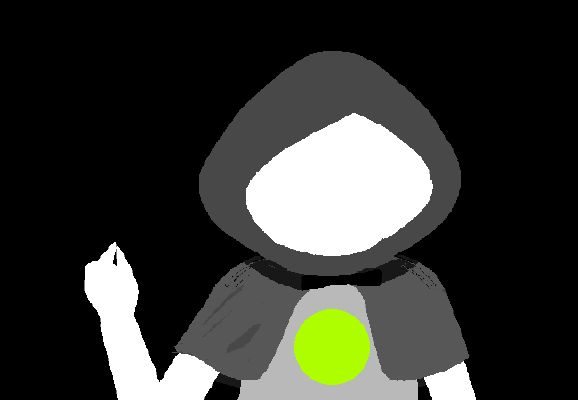
I've taken the HomeStuck extended sodiac test and it turns out my extended sodiac is Pisces, I am a Derse Dreamer, and my asspect is Life. I really wanted to be a prospit dreamer because my favorite colour is yellow, but too bad I guess ;( I am apparently also a life player, which makes sense since I am incredibly motivated by helping people.
I also took a long custom-made class test since Andrew Hussie didn't provide us with an official one. I took it twice and it seems clear to me that I am a passive player. I got the Muse class, which is a bit unfortunate since canonically that class is specifically reserved for female players. It's the most passive aspect, meaning that it "allows" stuff through aspect rather than exploiting the aspect. So I definately have a passive class, but keeping muse as my class is a little bit of a stretch in my opinion since it's like, one of the two most powerful classes in Homestuck only reserved for special occasions. I think that I am either a Heir, of a Bard, the two other most passive classes apart from the Master Classes. Honestly I am fine with both, but I think I would go with Bard if it were up to me, this is because
I like music
I like being original and Heir is already the class of the main character
Bard is said to be a class that "Allows destruction through their aspect", it's opposite is the Prince who "Destroys their aspect". And I love the idea of destroying things through life.
Therefore it's settled. My HomeStuck OC would either be a Muse of Life if it were a special situation, but more likely it would be a Bard of Life. Thanks for reading my epic obsession rant about this amazing comic. This conclusion was part cool and part dissapointing. I was hoping to be a prospit dreamer because my favourite colour is yellow, but it became overly apparent that I definately wasn't. Also the Bard god-tier attire kinda sucks ass but what you gonna do about it :/ at least it ain't the Page outfit.
Space:Montevide
Time:23:00
Me and Raz go to the movies and watch Iron Lung, this time I get some more epic clips that contain some MASSIVE SPOILERS. Raz really liked the movie, I haven't seen Raz as much lately and we only talked very briefly but he seems to be doing pretty good.
Spoilers except you can't tell what's happening so maybe not unless you look too hard
Rating5/5
Best comic ever
Also my sister and mother didn't like Iron Lung because it had too much blood. I'll just leave that sentence by itself so that it can become funnier the more you think about it.
No Clue
Date:07/04/2026
FixDate:14/04/2026
Climate:Cloudy
Space:House
Time:Mid-Day
Today I slept interestingly, that's all I will say on the matter. I think I am well rested, but I am not sure, I had a strange dream in which I.. hold on le me just
Space:Some world
Time:Unkown
I had a dream where I needed to constantly escape from this sort of haunting figure that kept chasing me throughout several stages of what seemed to be quite a dark city. At some point I was hypnotised along with a bunch of children to fall asleep as soon as someone uttered our keyword. I was capable of deciphiring my keyword, it was "Quirikos". So as this child, I was trying to decipher some way to escape, but it seemed to me like it was immposible. Upon leaving the "safe space" to which I was confined in, an insurmountable amount of monsters would always surround us in every corridor we went through. I don't remember how the dream ended. but yeah. Definately not an overly cool heroic dream like last time
Space:House
Time:Mid-Day
Overall, I have also been suffering from the burden of having very non-repliant friends in my arsenal. I have been wanting to talk to people more recently, but they are all occupied doing other stuff.
Rating1.5/5
I've been having so much trouble having succesfull online conversations recently. Apart from Lucas, but Lucas is the goat, of course it's going to be easy to contact him. Everyone else is behaving incredibly intrimiouslys.
Title
Date:08/04/2026
FixDate:14/04/2026
Climate:Clear but somehow rainy???
Space:Living Room
Time:18:11
Today I went to play tennis and I also went to the psycologist. I might end my psycologist sessions because they seem to be proving quite useless. Most of this psycology session was spent with my psycologist just asking me stuff and me telling him stuff. But it was mostly stuff about my interests and such, no psycological stuff. Tomorrow I have a visit with my psychiatrist, and that's going to be a blast... not
Also today Fede replied to me, but I wasn't looking and now it's going to probably take another 40 hours for him to reply to me again. God dammnitttt, why does everyone have to be so occupied with their own stuff to talk to me!!!! I recently discovered some major facts about the Holy Land and I can't discuss them with anyone!! Sofe will not reply so I won't even bother trying, Sebs may reply once every 1000 times, Fede will reply every 40 hours, and Raz also won't reply. I am reaching the conclusion that most of my friends suck ass. With the sole exception of Lucas and Megan, they always reply so quickly, they are two of the most wonderful people I have ever had the pleasure of knowing.
News
Something super cool happened today. I opened instagram and I saw that on Greta Thunberg's account posted something interesting.
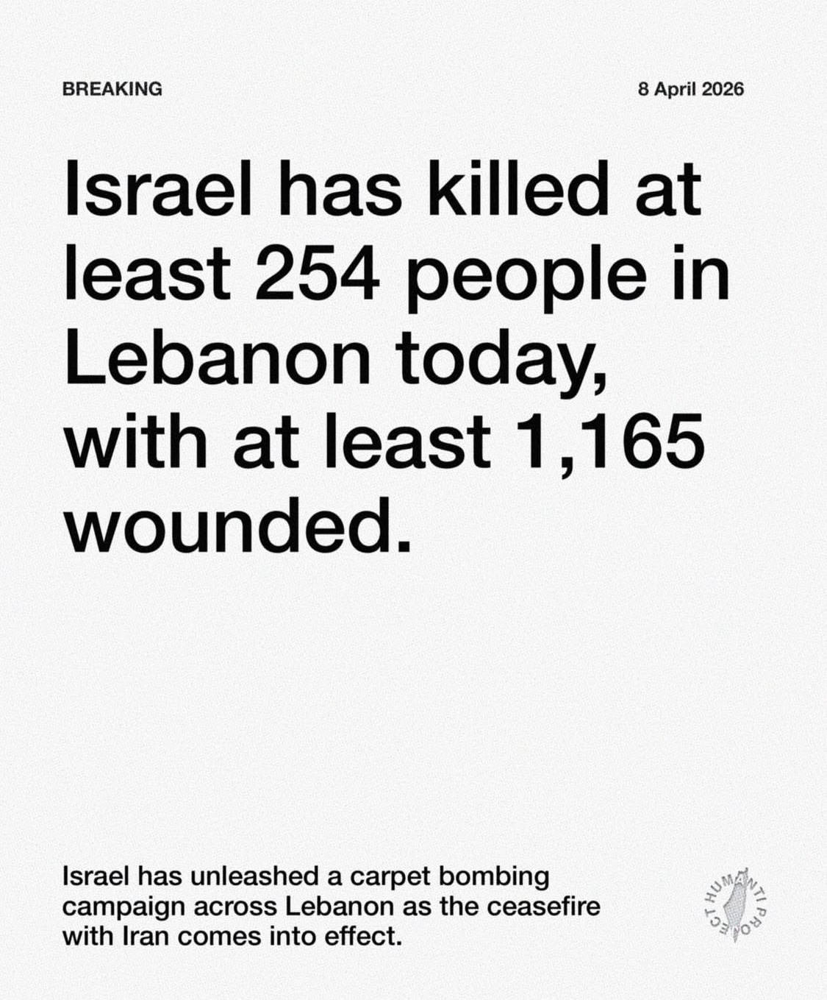
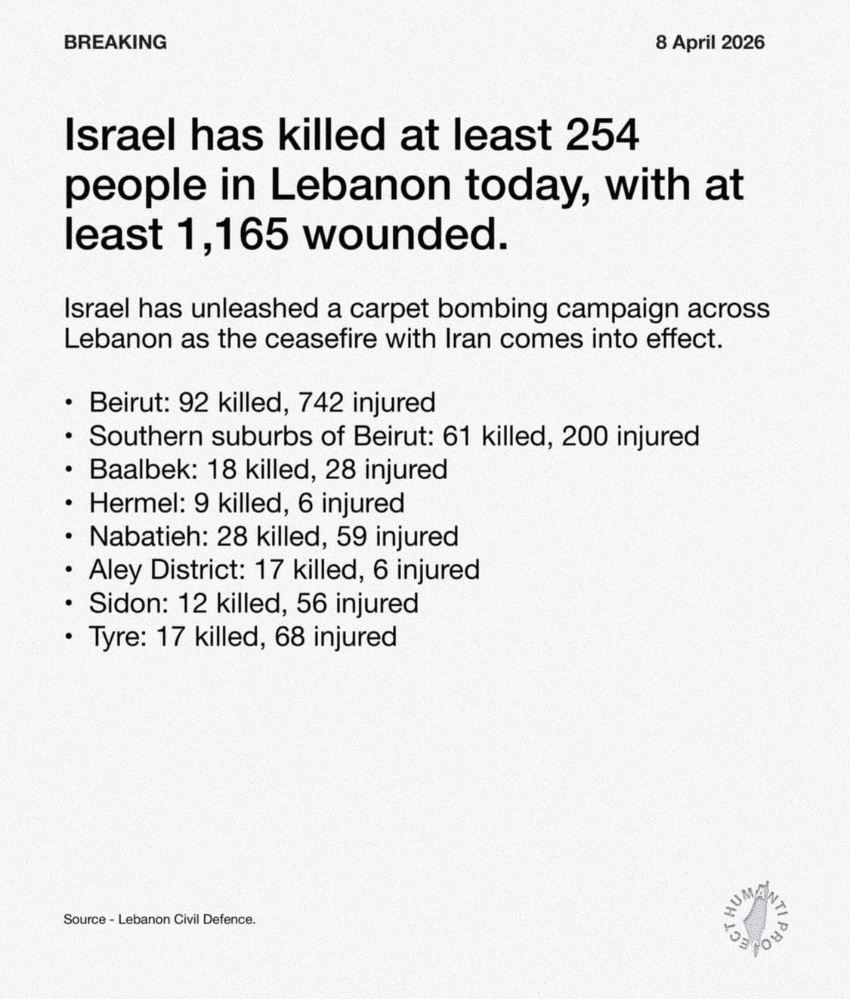
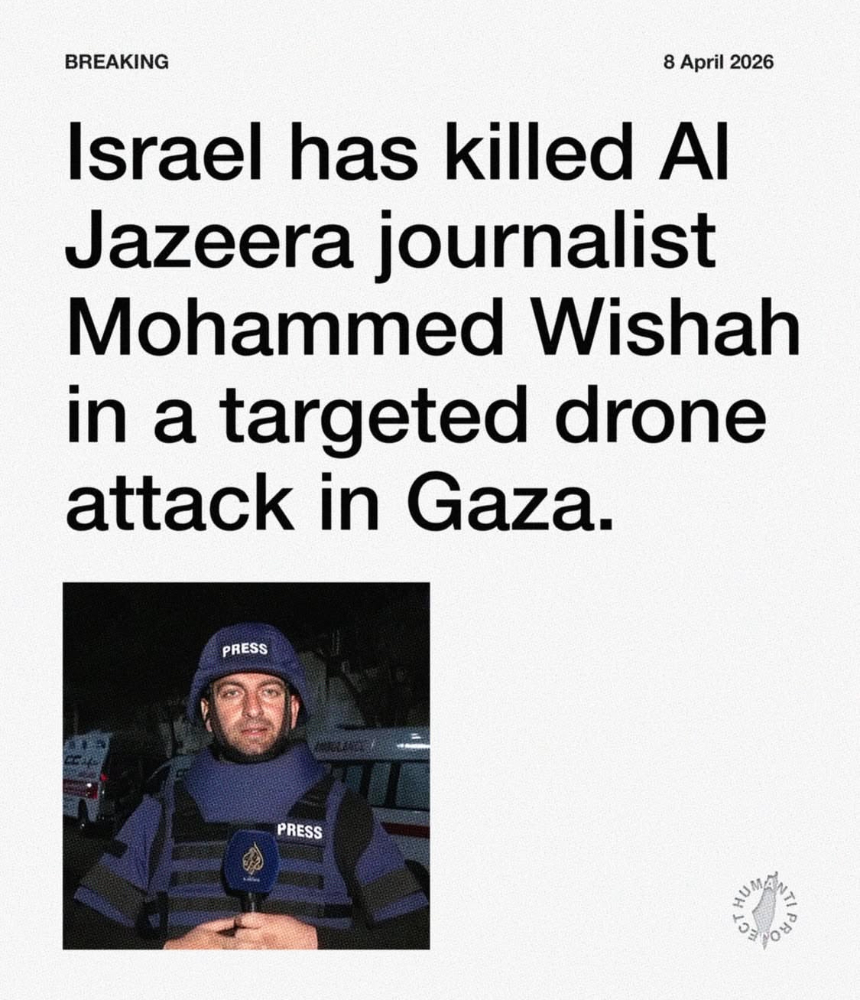
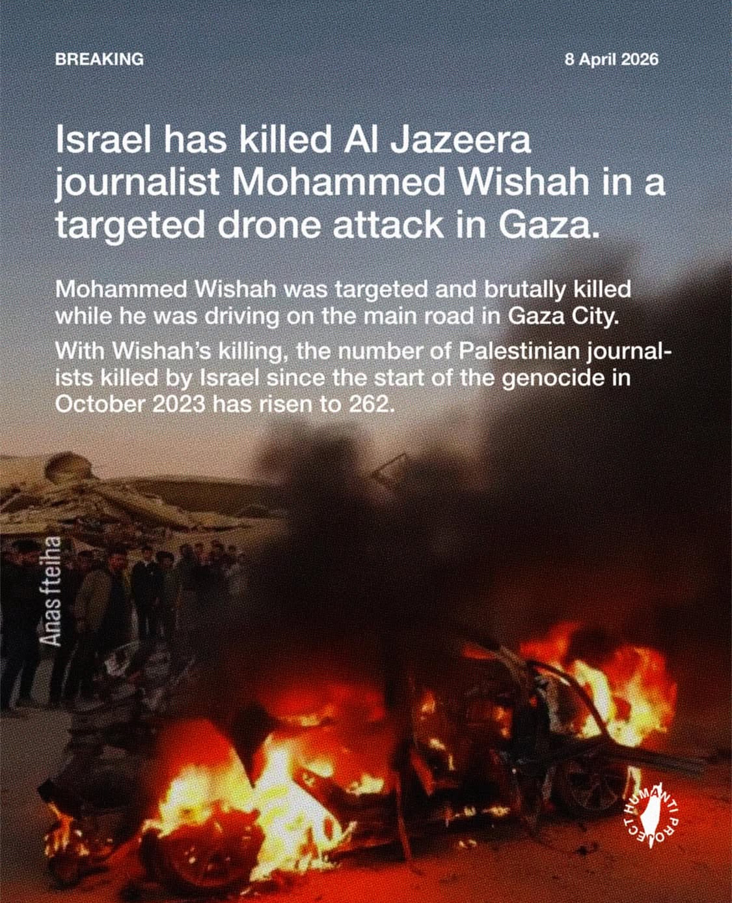
I love it when journalists die
So I did what any reasonable person would do. I fact checked these facts. In the future, I will have Ground News, which will help me fact check these facts with even better accuracy. However as of now, the best I can do is just list sme news sources that agree with the numbers. Upon doing this, some news sources like BBC and APNews report 182 instead of 254. This is interesting stuff right here, a discrepancy in numbers. It's unkown to me if these deaths were terrorist groups or just normal people, but the Litrous calculations don't discriminate between good and bad deaths. We are also extremely unfamiliar with the extend of the pain endured by the wounded individuals, which does take part of the litrocity.
After my brief research, I have concluded that we can use the overall death toll in the calculations of death. We can also include the death of a Al Jazeera journalist in Gaza that died due to a strike from a drone. Drone strikes tend to be pretty accurate and targeted. It appears the IDF had previously accused this guy of being a Hamas Commander. Regardless, journalists themselves mostly prevent the deaths of individuals by reporting the atrocities and spreading awareness. The death of a journalist is no more valuable than the death of another person. Though one could argue that the S P R E A D factor of Litrocity is larger when killing a journalist, there is no real message or event being promoted here. There are only messages being hidden.
This attack might have been motivated by the death of an IDF soldier called Touvel Yosef Lifshiz that was killed by Hezbollah today. I'll add the dead Israeli soldier to the Litrous death count aswell obviously.
The litro'vial solemnly swears on a stack of torahs, bibles, and qur'ans to never stop.
Litro'Vial:
Rating3/4.8
God, I want to talk to more people. Other than Lucas, he is really cool and all but he is not interested in politics in the slightest. I feel like I have learned so much right now. I can't talk to Sebs because he barely ever feckin replies, Fede is way to busy, Raz also never replies, and there is no hope of trying with Sofe. This is the worst thing ever.
Also I am super mad at Sebs because he genuinely made me feel like he was going to join the discord server and he genuinely did not do that. He said he was going to do it for my birthday and then he said he would like three other times and he still hasn't, I am so fucking done. All I wanted was him, mono, and I to rate animals together in discord but apparently a miserably failed to realise how much I was fucking asking for. What most bothers me is that he lied to me ON MY BIRTHDAY!! Febuary the 19nth he said that as a birthday gift he would join the discord server. My bad for genuinely believing that his birthday present to me wasn't going to be a lie, that one's absolutely my fault, a classic mistake, oldest prank in the book fr fr. Anyways Mono is calling me, he is the only individual that despite being busy, is constantly wanting my company, and I respect that.
Cool stuff
Date:13/04/2026
FixDate:19/04/2026
Climate:Perfectly Clear
Space:Unkown Ski Resort Place
Time:No clue
So I had this dream, where my whole class was living in this ski resort place for some reason. And a lot of strange stuff happened in this ski resort.
Space:Unkown Digital World
Time:No clue
Some people at some point were trapped in a digital world were someone was really lonely and she lived a miserable life, so she made a robot-friend that looked like herself, and she always somehow made it out of touph situations happily. Eventually she realizes she lived in a Digital World created just to torture her. She was the last surviving member of a faction that was defeated in some diabolical game, and they wanted to get the most amount of pain out of her, torturing her by giving her a miserable life in a digital world until she ultimately decided to kill herself. The plan didn't work, because the girl always found a way out of the touph situations, and even if she didn't, she always found a way to be happy with absolutely nothing. She was smart, and when she caught on to all of this, she finally lost her bottomless happiness, and it all turned into rage. Such a big amount of rage that she managed to break the digital world aswell as kill all of the participants. Leaving her faction as the winner of the game, and thus escaping the digital world.
Space:Unkown Ski Resort Place
Time:No clue
But back to the ski resort. I was on this real fancy restaurant. I decided to order some ice-cream, but upon doing so, a waiter stood up to me to lecture me about manners. I escaped into the basement where I met the aforementioned lady that had escaped from the digital world. The lady was conducting a bunch of women, they were practicing some kind of coreography. She seemed very stern and strict, her aura gave a sensation of power. The performance that she was conducting was apparently meant to convey the story about the people in the mountains.
Space:Unkown Snowy Forest Village
Time:Morning Sunrise
In case you don't know, when I have dreams as long as this one, it's usually divided into sections were the dream suddenly cuts to a random other dream, while still remaining pertinent to the previous dream. But in a different way. This time, it cut back to a mother and her adopted child in some sort of yearly festival where they would celebrate the coming of the sun. They would buil this big house every year, and in the festival, they would destroy it. It was fun destroying it and all. Then the it started rain-snowing, basically the swampy bad snow. So the mother and the son quickly headed to their shed. They saw a baby caribou stuck in the river and decided to call it out to some nearby strangers so that they may aid the baby caribou. Then the mother told a tale about a man that once saw a baby caribou in a situation similar to this one, but decided not to do anything. A big branch flowing by the river hit the caribou, sending it into the unkown, never to be seen again. Legend has it that the spirit of this caribou roams the mountains and preys to prey upon indifferent souls who wouldn't bother to save a helpless baby caribou.
Space:Cursed Mountainouse Region
Time:Like a lot of it
My dream then cuts to an ancient cursed civilisation living in the top of the snowy mountains. These individuals once climbed to the top of the mountains where they found many usefull ores and rare-earth minerals that they could bring down to sell for some excellent profit. The only problem was that... there seemed to be no way down anymore. All of the land was filled by mountains beyond what the eye could see. They mountains seemed to shift every day, which gave them an endless supply of the rare earth minerals, but there seemed to be no way out of this mountainous snowy biome. They were trapped in this weird mountain world. Eventually their rations became scarce, they had to find a way to live here. Some land between these mountains was surprisingly fertile. Using this land, some individuals, though not many, managed to survive. The most magnanimous individuals were blessed by this world, while the greedy individuals that brought them here were doomed to die out. It was foretold that once the last greedy person died, everyone would be free and purged from sin.
Decades in the future, and this hasn't happened. It was discovered that the land eventually gave people some interesting abilities called "gifts". Everyone had a special gift. However, through some un-explained mechanism, one random day, everyone's "gifts" suddenly changed. No one could seem to remember what their previous gift was, all they know was that it changed and now they have a new one. In this two stories, we follow some 4 mani characters talking about their cool new super powers/gifts. There was a mysterious man wearing a purple wizard hat and some complementary mysterious clothing; there was an anthropomorphic black cat who was soft-spoken and wearing yellow shorts; there was a white-haired woman who seemed to have an extremely open and positive personality; and there was another white-haired woman who was very similar in appearance to the other one, except she was moody and pessimistic. The Mysterious man spoke, "So, your new gift is huggin people?"- "Yes" the cat replied in the most soothing way possible, "I am capable of appeasing and quelling other's worries with a simple hug, what a wonderful gift I've been blessed with, I wouldn't have it any other way, I am the canvas by which the world shall paint a more peacefull era". "Yeah, at least your quirk doesn't suck ass" said the pessimist, or well, she didn't say it. Her gift was to let everyone around her know exactly what her inner-monologue was saying at the time, in other words, everyone can know what she is currently thinking about, weather she likes it or not. The optimist's ability is to simplify anything by snapping her fingers, she demonstrates this by looking at a mountain, and then snapping her fingers and making a whole mountain look like a triangle and a climber look like a ball. The effect is temporary of course. The myster man obviously doesn't reveal his gift, he's just too mysterious for that. So they play around, they all demonstrate their gifts in cool ways that I will proceed to list out
Optimist simplifies a mountain with a climber on it into a triangle with a ball on it. The ball rolls off the moutain eventually ending at the group's feet. The climber once he became un-balled was furious at how all of his progress was fucked, but they all lauphed in the end.
The cat was attacked by a dog, so he hugged it, and now they are best friends
Mystery man displays some sort of shadowy tentacles, so that may be a cool clue as to what his powers are.
The pessimist girl... she has this whole side-arc
Although her gift might seem terrible to some people, to her it was nothing. She would have obviously have wanted a cooler gift like the ones her friends got. But instead she got this. Thing is, she always spoke her mind ever since she learned how to talk. Therefore this gift didn't really impact her in any way. Until one night.
There was an old man in a shed, he was using the icy powers of some young boy to send down a corpse down a slide. For a bit of context as to why on earth someone would do that. Somehow, someone, somewhen, discovered that if frozen things were sent down this slide, it would end up on the real world, not this mountainous world. Thus, they decided to send frozen corpses into the world, so that they may be burried in their original ancestral home. The old man made a remark that suggested how he would one day steal the boys powers. The young boy looked at him with dead eyes in a way that suggested he couldn't give two fucks about his gift being stolen. But the pessimist hears it and inquires about how the old man could do such a thing. The man begins to tell a tale.
The previous man who had his job was well known and strong, let's call him "Strong Man". Strong Man had the gift of transforming things that he haw into whatever he wanted. An extremely powerfull gift. One dark night while Strong Man was on an expedition in the mountains, a bright circular light flashed with a rainbow circling it. His body was later found in the middle of the town park in the form of a rug. The old man put his body into the slide, but suddenly, he gained his powers through unknown methods. The old man proceeds to display this power, he raises his hand which seems to have the Strong Man's eye in the middle of it, and he looks at the pessimist with it. He transforming her into a scarab, a dog, and then back to her real self. The girl was terrified, the boy was unfaced, and the old man lauphed malevolently. Th Pessimist absconded, into unkown territory.
In the morning, the rest of the group went searching for the pessimist. They knew he had talked to the old man because the cat's sensitive hearing overheard the Pessimist's thoughts while running away. But the old man refused having ever talked to her. They eventually gave up until they crossed paths with the young icy boy. They asked the icy boy if she had seen the pessimist and he simply pointed to a certain direction. Towards the endless mountains. The group was aware of the circular light phenomena that was happening in the mountains, so they decided to go search for her before night-time. They eventually found her, and they were immediately informed about the evils of the old man's plan to use circular lights to somehow gain powers. She couldn't go back to the village, if she did, everyone would know about the old man's plan, and they would try to go against him. But with such power, who knows what he'd be capable of. Everyone immediately understood the gravity of the situation. The Mystery Man devises a plan to confront the Old Man. You see, mr mysterious here is so mysterious, that he has every inch of his body covered with robes resembling that of a magician, his real body can't be seen. This means the Old Man would have to first transform his layer of clothing before getting to him, which might give the crew enouph time to attack him. But first, they needed some sort of distraction, that's were pessimist would come in handy, informing the entire town as the old man is enraged. And the cat would also play a key role.
The Pessimist is sent to town and everyone is woken up in the night, she shouts her thoughts with all her might and the Old Man comes up to her, and this is when the Mystery Man reveals his ability. The mystery man's ability, is a cage. One that is supposed to hide the most monstruous entity in darkness. He can release certain parts of the cage which he uses as shadowy tentacles, but he must be careful, if he dismantles his cage too much, the monster will come out. However this time, he wasn't careful. He immediately encaged the old man, the cat, and the himself into the dark domain with the monster. The monster was inbetween the old man, and both cat and mystery. The monster readied up an attack with it's paw, and the mystery man tried dodging, but it was too fast and powerful, it sent him flying. But this was part of the plan, the mystery man was a distraction for the cat who went along and hugged the beast. The beast has been pacified. With no longer the need to contain the beast, the Mystery Man had a new target for encarceration in mind, he closed the cage around the old man, sealing him away. The party won, the spell was broken, and they were all free. It seems this old man was the last greedy person left in generations and generations.
Space:Club Lon Tennis
Time:16:00
I played tennis with my dad
Rating6.5/10
I wanted to work on my holy land project but destiny had other plans for me apparently. Plans more closely related to writing about dreams and playing tennis. I don't know if to count this dream as one of the 9 Legendary Dreams I might be destined to have according to my bingo card which I just remember I never gave you access to so here it goes.
Title
Date:14/04/2026
FixDate:20/04/2026
Climate:Some clouds, but mostly clear
Space:Theatre
Time: Unkown
So I am in this play, and I am portraying some characters that got cursed long ago. But it turns out that me and Raz are carrying some sort of curse that prevents us from showing to everyone the true story of the events that unfolded. Thus we must act it out in this performance, henceforth why we are in a theatre.
Space:City
Time: Across several years
The events that we act out pertain to the following storyline. In a city, some heroes had to fight a bunch of villains on an island. The villains had 5 nuclear power plants and an Octopus fella, they had a plan to use a certain curse to gain power over all of earth. The heroes of the story had been cursed by the villains, and to prevent anyone else from getting cursed, they were the ones that constantly fought against them. A lot of shennanigans happen, they progressively get to destroying most of the power plants. Two of the power plants had scarab symbols, and I don't remember the symbols of the three other power plants. But after those shennanigans, eventually, the heroes discover a way to stop the curse. A special pond in Antarctic. Once you bathe yourself in this circular pond, the curse would be lifted. However the only bad thing is that only one person can be in the pond at the same time, otherwise the pond would fuse whoever was in the pond together. This innevitably ended up in a massive monstruous mass of human flesh that had to learn over time how to move and coordinate it's thousands and thousands of limbs.
Space:Theatre
Time: Unkown
So we tell this story to the kids audience, Raz and I, and we give them a choice. They can be cursed with knowledge and help us fight the villains, or they can just leave. Twelve other people join us, the rest leave.
Space:The Antarctic Empire
Time: Night
We take this twelve people that were willing to know the truth into the Atarctic, and we give them the curse. Then, we guide them to the pond and warn them to not go in all at once. However upon gaining the curse, everyone panicked and went in all at once, creating the aforementioned mass of human flesh and limbs. Raz and I ultimately conclude that it's way too hard to find people that are smart while also willing to make a change.
Space:Living Room
Time:15:19
I am left wondering when the hell is Sebs going to join the damn feckin discord server. Like is he genuinely this dumb or is he fucking with me?? I think at this point he is fucking with me, even though he said it would be my birthday present, which I dislike severely. This guy and his lies are just never going to stop being a thing are they? I guess that's the challenges that come with being friends with Sebs. Each friend always comes with their challenges.
Fede: Whenever we get political he will immediately take the "left" side of things even whe it's insanely clear that the "left" has done some dumb shit. Like the case with Kristina Kirschner, she only presented herself as being of the left party, but in reality she was just a thief that stole money from the government and didn't use it in any responsible way. But since she openly portrayed herself as being a leftist, Fede(who knows basically nothing about Argentine politics) immediately goes to her defense, though he does at least admit he doesn't know what he isn't knowledgable about the subject.
Also he barely replies messages, but that's because he's a busy bee
Raz: Exactly the same as Fede but with the right-wing. The best example is the shooting of Renne Good. He just takes the stance that most of the right-wing takes, even when a police officer killed someone and achieved absolutely nothing in doing so. Like, the neither the right or the left wing will ever always be good and perfect, and both Fede and Raz need to realize this. Sometimes the left is correct, and sometimes the right is correct.
Sebs: He lies and displays copious amounts of nonchalancy to just about anything except anti-semitic conspiracy theories about jews. The nonchalance is cool and all but it gets to a point were it becomes annoying. Like, it's the whole reason he often didn't want to go on class events and stuff. Also he lies a lot, or if he doesn't lie he just doesn't do what he says he is going to do. I don't even know if it's on purpose or not.
Also he barely replies messages, but that's because he's a busy bee
Sofe: Not much against Sofe actually, except that much like the last two, she's a busy bee so she never replies when she is busy.
Megan, Milla, and Alex: I haven't hanged out enouph with them to find flaws so they seem to be perfect friends... for now
Mono: Mono is the most legendary friend in all of existance and no one disagrees with me. There is literally nothing wrong with him....... Except one tiny thing that bothers me. He keeps insisting upon the idea that Fede "coming out as gay" contributed to the fact that his parents got divorced. I oppose this idea vehemently because it very clearly comes from some anti-homosexual sentiments. But apart from that he is literally the champion of friends.
Rating2/5
Title
Date:16/04/2026
FixDate:22/04/2026
Climate:Rainy
Space:Living Room
Time:16:06
Forget any negative thing about Sebs that I said yesterday, man really came through. He. Joined. The Discord
Sebs joins the Discord
These are news that will overshadow any other news of today. This is a historic landmark, a universal achievement, a calamitous benevolence, you get the point.
Rating10/10
Finally, I thought I convinced him by telling him about my depression the other day. I didn't do it on purpose but I guess anxiety and depression have their good parts ;)
Sebs joins the discord server
Awesome Indie Movie
Megan escapes incarceration
Alex and Nata stay together
Paradigm Shift
I get drunk or high
Palestine Survives
Serendipity
Miracle or Rapture
Event with all entry-types
Stellar object enters atmosphere
Eitoku, Sebs, or Sofe watch Coherence
I see Alex
AI Bubble Event
Uruguay Fourth Finals
I get 9 Amazing dreams
4 of us(ttg) unite
US mid-term elections don't go terribly
Uruguay allows Nuclear Energy
I get a car
Raz goes to the Alumni reunion
Climate Changes
SAAC UAS Win
Megan quits recreative use of alcohol
Triangle of Hate awareness
Holy Land Finished
Date:18/04/2026
FixDate:24/04/2026
Climate:Cumulous clouds
Space:Home
Time:Middle of the day
He called me, Lucas. Lucas has been having some problems pertaining to the academy he is currently attending. He keeps asking me for help and I did the best I could but my chemistry is rusty as fuuuuuu, like, oxidised as shiiiiiiiii and all that.
I tried my best though, which was not good at all. But meh. Also the digital circus came to Uruguay, Raz and I are truly excited about that.
My mother has the birthday of Lara Berman's mom. It's a big party and they will probably bring me cake which I am super excited about.
My sister has a birthday aswell, the twins' birthday.
And last, and most, is my Holy Land Project
The Holy Land
The land where moses escaped to when they got persecuted from egypt, the land where jesus was born. I have seen the history, the wars, the copious empires that governed it, the balfour declaration, how Britain gave it to the Jews, how the arabs didn't like that, how they fought with each other for like 76 years, and how it all culminated in the massive mess that it is today. My opinion hasn't changed. I still massively disagree with Israel's settling on the West Bank for little to no reason. And I disagree with the existance of Hamas. But now I feel so much more knowledge within me. If you dare, you may read my project, The Holy Land Project
Honestly this was a motivating thing to do. If you read any part of my website you might have noticed I often do some of these opinion pieces to display my construals about political topics. And this is one that has had me confused for quite some time. But now the history of all the conflict is so clear to me. It's all about the resent of the Palestinians for Israel taking their land in 1947. They had no choice in the matter, and they saw it as some sort of evil act that shall one they be restored. That's why Hamas won't give up despite the stupidly high amount of times they have lost a battle against Israel. Seeing all of this context, makes me realize something that kinda kills hope. I don't know if this has any solution. It's just like the triangle of hate. There is no way in hell that Hamas or any other terrorist affiliate will ever recognize Israel, specially after growing up in places like Gaza, places that Israel was forced to destroy. But these places will always create more and more people that will never forgive Israel for what they have done, think of the fathers who've lost their sons, the people whose friends have been permanently injured, lives lost and changed in the most horrible litrocious ways, can you really blame them if they become terrorists?? Just how open minded, smart, and historically/politically aware about the entire situation behind this situation in order to come to the conclusion that the people who have done some irredeamable harm to you... are actually not bad?? I wouldn't blame anyone, if someone were to kill my family, not even I know what I would do. I am so privileged and happy to have the ability of analysing this entire situation from an outside relatively un-biased perspective.
Rating
Just woke up
Date:19/04/2026
FixDate:25/04/2026
Climate:Clear
Space:Living Room
Time:4:32
So i woke up at 2 in the morning to a message of Raz. The digital circus is in Uruguay and it will be the first country in Latin America to see it. In June 4rth, BUY YOUR TICKETS!!! It's so nice to finally see Uruguay be the first for something. Some seperate news is that there has been some activity in the table tube gang recently. hold on let me change the background entry type
So Megan has been sending some goofy reels, and I send some goofy reels back, and then I tell them all about the holy land project that I officially finished yesterday. Within this project you can find all the supposed facts that I used to build my opinion about the current situation the land that is often gifted the characteristic of holiness. I more specifically send them a link to yesterday's entry so that they may be reminded that my website exists and maybe they might feel inclined to read some of my other epic content in here.
But when I least expect it, my father and mother arrive from Lara's mom's birthday. Any time that any of my family members go to a birthday party I ask them to bring me stuff. In this ocassion, Lara's mom had done some impeccable preparations. And they did this thing where they gave out little trinkets to everyone in the party. I told my mom to give me some trinkets, but like, I feel like she didn't get me anything!!! I am kinda pissed about this because I love trinkets. I actually kinda wanted to go to the party, but I wasn't invited, and texting Lara's mom or Lara herself to invite myself was kinda something I didn't want to do. I am going to sleep some more, and upon waking up, I'll have two objectives.
Buy Digital Circus tickets for cultural afabeta
Ask my mom if she brought any trinkets for me and then be severely annoyed when I innevitably find out she somehow forgot to do so like any time I ask her to do anything that I care about.
Space:Living Room
Time:16:15
I bought the digital circus tickets and I also did some modifications to the Holy Land stuff.
Also I uploaded my first youtube video!!! It's a gameplay of ultrakill. Be on the lookout for the next superstar in the youtube scene. TrashCan. I know it's an odd name, but that's what makes it even more unique.
Cool video!!!
Ratingnot that good
I've been feeling down recently, I don't even know why.It's like not that good for some reason??
Epic Update
Date:22/04/2026
FixDate:28/04/2026
Climate:Cloudy
Space:Living Room
Time:12:39
Today I have a grand total of 9 tasks to accomplish. Furthermore, I have been thinking a lot lately, a lot about politics. I've been getting more and more informed about every subject every. I've been gaining so much knowledge, I kept trying to make this a big deal to my friends but I really don't think they care :/ But that doesn't matter, because I care. Thing is, i've come to some political conclusions, I have decided that this day, I will fully disclose them in this very entry. Furthermore, I will not be using any of the following language.
Left
Right
Republican
Democrat
Socialist
Communist
Capitalist
Because my affiliation with any of those has absolutely no relation to the party itself, it has everything to do with what the party has to offer. No biases involved. That being said, here I go.
I have one philosophy that has followed me all my life. Helping is good. My theories indicate that this philosophy stemmed from my family's religious following, Christianity. Jesus Christ as described in the bible seems to have been an indredible individual. He always helped, and he always managed to defeat opressors through the means of sacrifice as opposed to violence. Now I am incredibly confident that Christianity as a whole has been twisted and turned so much to the point that anyone can believe in it and make it make sense, regardless of weather or not their believes are compatible with the original beliefs of Jesus.
But according to my interpretation of the bible (which is obviously "the best") Jesus seems to have been the following
Promoted love and peace to everyone
Was against richness as a concept
Condemned violence
Helping people
He was really fecking epic. My interpretation of Jesus basically focuses on Jesus himself, using all of the stories of his apostoles to construct Jesus and his beliefs. So helping people is a really big thing in Christianity. And I believe that it's the most important thing in all of Christianity.
Therefore and ideal government would be one that helps people. I am really glad we could all come to this conclusion. And you should be really glad that I went on that very necesary tangent about Jesus Christ to inform you about why helping people is good.
Obviously in order to help people, the government is going to need some sort of hierarchy/system. And this is the big divide between most politicians, I will call these philosophies 1 and 2. Some people say that the government should just let the people do their own thing and everything will turn great, someone sometime ago wrote something about an invisible hand, this is what he(or she[or they]) was[were] talking about(I am almost 100% sure it was a he and I just did that to ragebait someone, I don't even know who). Then there are the people who believe that the government should be responsible for providing the basic needs that people need, this would include things such as the ultra survivalist 101 basics(food, shelter and water) although some people often tag on things such as safety and healthcare. Obviously to do this, the government needs to obtain resources from somewhere, they would do this by establishing some intense taxes.
These are the two of the most famous Governmental philosphies that go under two aforementioned names that I refuse to utter. And two respective parties whom were attributed some directional nomenclature are tied to these philosophies. So which one of these philosophies is better. I'll tell you which one, I think that the one where the government collects and provides is better. Nowadays, all governments tend to be a combination of both of these philosophies, since as far as I know, all governments have taxes.
If I had to chose only one of those, I would definately go for the system where the government collects money and provides the people cool stuff(Philosophy 2). Mainly because putting all of the control in the people is kinda dangerous, there are a lot of people, and some of them are kinda evil. The government tends to be smaller than the population, and the government workers tend to be selected by rather rigorous procedures. That is not to say that government corruption can't happen, that would be a dumb thing to say, mainly because of how many times it has been proven untrue.
So nice, you got my opinion there :D I prefer more taxes if it means the government will do cool stuff like free education and free healthcare (and free survival essentials for those in need). But let's actually look at some real-world examples and see the stuff.
THE US
So, the US, in my opinion, has kinda shot itself in the foot as of recently. They took the worst part about the two philosophies and combined them to make the worst thing imaginable. Okay I am exagerating a lot, but I'll explain what I mean. The worst part about Philosophy 1 is that it very easily allows anyone to create to do whatever they want. Some people who happen to have both the SMART and EVIL attributes will be capable of doing some evil stuff to gain insurmountable amounts of power. The worst part about the second philosophy is essentially the same thing, but instead it's the government that gains insurmountable amounts of power, and they basically end up in a dictatorship which like.... it's bad, freedom is always a valuable thing.
The US has now gotten both of these bad things. They have incredibly wealthy individuals like Elon Musk and Bill Gates and Jeff Bezos and formerly Jeffrey Epstein. And the worst part of it all is this wealth individuals have so much power, that they can actually interfere with the government. The best example is Donald 's whole DOGE thing with Elon Musk. Actually never-fucking-mind, the best example is obviously Jeffrey Epstein, wtf was I talking about?? Jeffrey Epstein had so much influence in the government, that his influence persists even after his death. People that are basically confirmed criminals such as Kash Patel who definately committed perjury regarding the whole case. And that leads me to the fact that certain government actions in recent US politics, the government corruption. Donald has passed a little something called Schedule F, something that Biden had gotten rid off because it was dumb, and Donald decided to unsurprisingly re-establish. It basically makes it easier to fire people from government entities like the DOJ. This means that members of such entities will obviously be pressured to not go against what the current government is doing, unless they want to get fired. That is not smart. This leads to stuff like the Renee Good accident, not the accident itself mind you, yes it's a tragedy, we can all agree on this, but the more concerning part is the DOJ declared it self-defense with no court or trial or anything. And the FBI confiscated all the evidence so no one could sue them. And Christi Noem declared that the victim was a terrorist. All of these actions point to one fact, no one is going against the government because it was given too much power. I honestly think this all could be much, much worst. Donald right now is focusing on basically kicking out unregistered immigrants, which isn't their most pertinent problem by a landslide, but it's a problem nonetheless and he is focusing on it. The degrees of success may vary, but he is trying his best.
Okay wow, so anyways. The Donald Administration + The Freedom granted to individuals has caused both supermassive rich and powerfull evil, and super a powerful government that no one can properly oppose. Having so much wealth and power in the hands of such few individuals, is bad. I am not even claiming that these individuals are necesairly evil, but their biases will still have monumental impacts on everyone, every single decision they make. Decisions this big should be approved by like congress or something. Like Donald going to kidnapping Maduro or going to War with Iran, those kinds of decisions are just too big for a small collection of people to take.
Nordic Countries
Take for example, Finland, they are really cool. They have high taxes, but their government is super great and innovative. They have cool healthcare, and cool education, and stuff like that. There is a lot of trust in the government and thus, people aren't afraid to pay taxes. Same goes for the Neatherlands. They have a ton of things you can apply for to reduce the cost of living. For example Fede, since he is working and studying at the same time, it turns out that he was able to apply for some government thing which basically made his tuition free. That is really good because during that time his father was refusing to pay his tuition for some family issues. Also their public transport is ultra-cool. But enouph glazing, this is the Philosophy 2 stuff that is cool. However there are obviously bad examples to Philosophy 2 of course. Just take a look as Kischners Argentina, they were fuckin terrible, and I fear that anyone that attempts to defend them is immediately wrong, I'm sorry if you are reading this Fede, I know about your partisan affiliations but sometimes people are just evil, and Kischner was just evil. She manipulated the working class into voting for her and then she stole an approximate shit ton of money and left. I also believe that Uruguay doesn't have the best Philosophy 2 Structure. It's government is wayyyyyyyyy to big for such a small country, so big that, it actually kinda becomes useless? It feels as if the government is creating more branches for the sole purpose of creating more government jobs. This just makes things more and more expensive which overall kinda sucks. It also creates a massive middle-class shortage since only those who basically live-off the government and the riches people can live.
And also I am not going to pretend there are no succesfull philosophy 1 countries. The US was succesfull for quite a while up until now. And I am sure there are other examples that I simply don't know about :p but hey. This is my major and most important conclusion. Listen up and down because this one is a banger and everyone should listen.
IT DOESN'T MATTER!!!
And I physically, mentally, and emotionally can not stress enouph how much it doesn't fucking matter. I don't know if you noticed, but those among you who have actually been paying attention must have realised that both philosophies have the same exact problems, which is the unequal distribution of power to a small selection of people. This can happen regardless of what system you use, regardless of capitalism or socialism. Yes I know I wasn't supposed to say those but I need this to be clear as crystals. Any system can work, if people are willing to make it work, if people focus on helping each other. I think that socialism is better, but do I think that capitalism is always doomed to fail??? NO, aboslutely NOT. Capitalism can work just fuckin fine, go on and do your best Capitalism out there and have fun, as long as your people don't decide to be completely evil, everyone will turn out fine. Same for Socialism, as long as the government doesn't misuse all of those tax dollars for their personal pleasentries, it'll all work alright.
Okay, now that I got the economy out of the way. I'll focus on other relevant topics. Firstly... lgbt+ stuff. I think it is stupid that people have a problem with this. Just let people do what they want in peace and keep your opinions to yourself if you don't believe that a man should be with another man. The only controversial thing I will say is the following, in the specific case of Transexual people, any kind of hormone or medical procedure shouldn't be up to the decision of the a child until their brains are fully developed. This is the same reason why you aren't allowed to mary, tattoo, drink, smoke, or drive in several countries. All of those are decisions that have the potential to permanently affect your life, and therefore they should not be taken by a child. Specially anything related to drugs and hormones since those have the potential to be super irreversible and harmfull. But apart from that, the unreasonable hate that the LGBT+ community receives is nothing short of stupid.
Now to immigration. This one is really, really easy. If they aren't doing anything bad, don't do anything to immigrants. Now... "doing anything bad" is kind of subjective. For example in the US, being there without proper documentation is considered "civil violation". Don't ask me why, but if that's the rule of the country, and you violate it, the rule says you get deported. Wheater that is logical or not is up to debate. In the US, specifically, most of the data shows that Undocumented Immigrant presence has no correlation with violent crimes(like rape, robbery, or murder), therefore I think that law is kinda dumb :/ but it's still there, and if you break it, then it's still kinda on you vro :/
hmmmm, wat else?? war is bad, yeah war is pretty bad not gonna lie. Nuclear energy is really good and we should all use it. Nuclear weapons are the worst and we should all dismantle them this very isntant. Hmmmmmmmmmmmmmmmmmmmmmmmmmmmmmmmmmmmmmmmmmmmmmmmmmmmmmmm. Stereotypes are a result of pattern recognition and the spread of bias through word of mouth, but it's still unfair to judge someone before you meet them. So even though you might be pre-disposed to think something about someone based on a stereotype, try not to, even though it might be hard for you. I think that should cover just about pretty much everything. Mainly I just want people to be free and helped. happy christmas.
Rating
Getting kinda political in here
Date:24/04/2026
FixDate:02/05/2026
Climate:Clear
Space:Living Room
Time:20:00
Today I had my first class with Ms Paula Siberio, I don't remember if it was Ms or Mrs or what the difference between them was. I also don't know if she is married or not so it wouldn't really matter if I did. She was an excelent teacher, comparable to that of Eric Zarsky even. This, in case any of you isn't aware, is the highest honour I can bestow upon any Mathematics-related-educator. So ya, she's good.
Warning (random political rant)
I've also spent some time thinking about how can Raz believe that Renne was "mostly at fault" for the Ross killing her. I've actually been thinking about this for a long time, ever since Raz and I had that discussion. The only way in which Raz could possibly be right is if Renne Good was indeed blocking the ICE vehicle's path on purpose or if she she was just there for other reasons. Their official story was that Renne had just gone to pick her kids up and her wife called her to go protest some ICE officers. But even if this was true, and even in the case where she was obstructing law enforcement(which we don't know because there wasn't any sort of investigation regarding this) I still find it very hard to believe that Ross is not at fault for standning in front of a active vehicle and shooting it upon beginning it's motion. Like, did he think a bullet could stop the car?? or did he panic and shoot Renne for no reason?? One thing is for sure, Renne died from the benefit of no one, nothing was gained from this, as far as I know, she died for no reason.
Also I uploaded my new ultrakill video, check it out.
Space:Living Room
Time:22:00
Something interesting just happened. Basically, Mono and I are talking with each other every night right now. We basically do small study sessions together where we try to help each other out. It's like a symbiotic relationship we got, he helps me by just being there, and I also do that. But tonight he said he was busy talking to Raz, so I told him to tell Raz to join the discord so we can all chat, but Raz apparently didn't want to.
Mono theorizes that it's because he is about to go to bed, but he also admits he doesn't know if this is the case. I am fairly certain that is the case though, Raz and I saw each other fairly recently to see Iron Lung, and I also bought him and I movie tickets to see the Digital Circus Movie in June fourth together. We have actually been in contact through whatsapp quite frequently these past few days, he actually sent me a whatsapp today abouy some extraterrestrial gameplay. So i definately don't think he was
Rating7/10
So obviously this website is public, which means that pretty much anyone has a 100% capability to look into it on any day and pretty much gain a wholistic understanding of everything I think. That's how I like it, 100% transparency, I have absolutely nothing to hide in here, it feels so free. I always have so many thoughts about so much stuff, and I sometimes feel like I can't talk about these with people because like, they didn't ask! But no one can say that about this website, because YOU are the one who entered here, YOU are the one who is reading this. Therefore, you were curious enouph to read this, you asked.
But this also means that at any moment any of my friends can suddenly hate me because of my thoughts :/ it's a double edged sword but the benefits are just way too good. I feel like my own therapist sometimes.
Title
Date:25/04/2026
FixDate:03/05/2026
Climate:Dynamic
Space:Tennis Court in San Nicolas
Time:10:00
I played tennis with my mom and I destroyed her because I am now cracked at the game
Space:Cafe in San Nicolas
Time:11:00
Another random political rant (on the same topic)
Yesterday I thought about how Raz could think Renne Good was "mostly at fauly" for her death. I showed the video to my mom and without saying anything that might tilt her opinion my way, and she immediately said it was the officer's fault. This makes sense to me you know, the one who pulled out the gun and shot it is at fault for the death of the victim. Raz believes that these actions were reasonable because of self defense. However that argument kind of falls apart, because shooting a driver in a moving vehicle doesn't prevent any kind of damage, it didn't defend anything, nothing was gained from this, a life was lost for the benefit fo
Rating10/17
Title
Date:26/04/2026
FixDate:04/05/2026
Climate:Really windy and kinda rainy spontany
Space:Portones
Time:10:55
Today I bought an Iron Pan, it was a really good pan. A pan made out of Iron. It was so cool. I also registered myself for the Portones point system.
Space:tennis courts
Time:16:00
I played tennis with my dad, it was too windy to be fun unfortunately. But at least I got some nice razor blades out of it.
Space:tennis courts
Time:18:00
Lucas texts me, he once again asks for my help in a chemistry problem that I have no buisness in remembering how to do. Regardless, I say yes, because I am always up for a challenge. I join the discord Voice-Channel and I wait for him there. I wait for him for a rather big while actually. I start doing my own thing, and I eventually acidentally press discord and... Raz??? He is in the voice chanel muted, so I call his name and he affirms his presence. We start talking about pirates and cool stuff like that. Apparently Raz has found some interesting software that allows you to find the most exquisite digital treasures any pirate can hope for, like Anime and other media. And suddenly the unimaginable happens
Dani => *Joins the Voice Channel*
For those of you who don't know, any time Lucas and I find ourselves in the voice channel, Dani is usually online, but he never joins us for one reason or another. But he never joins the channel. But for some reason or another, today is the day he joined. Dani proceeded to say that anyone who wants to pirate things like Ableton shouldn't do so, and they should instead pay 746 dollars. Then we go on to talk about our professional lives, and the job market, and how AI is super ass and it's subsidised as hell and it's going to die anytime soon. SORA AI already died, and we had apparently already had this discussion.
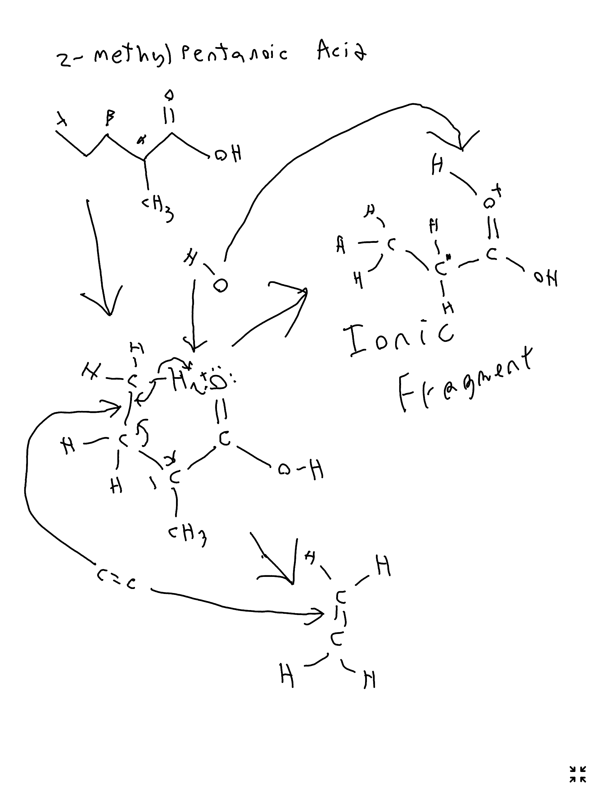
Some cool stuff
Then Dani reveals he has a website of his own. Check it out!! They also talk about IBM, and they start getting into some concepts that I lack comprehension of. Eventually Raz and I start playing poker and Dani leaves the call. And then Mono joins. It was very unfortunate that he missed the coming of Dani. Sebs unfortunately was also unable to come because he couldn't see the message in time. After a while, Raz left to sleep. I stayed a little bit to help mono understand what the Mc Lafferty re-arrangement is. Basically when some stuff happens and something fragments for some reason.
I am not fully sure I was capable of conveying this information in a particularly efficient manner to Lucas since I myself didn't really understand or know about the chemical process before watching a video with him. But he assures me he understood, I don't know if his re-assurance's only purpose was to make me feel happy about succesfully teaching him, or if it was genuine. I hope he does well in his exam tomorrow, I hope Raz does well on his exam tomorrow, I hope Dani has a good day tomorrow, I hope you have a good day tomorrow, may the day of tomorrow be an awesome day for all.
Rating10/10
This event is immediately a 10/10 by definition. Mainly because of the major lack of Dani's absence.
It was very cool, and I am going to teach Dani how to play Truco when we get back.
Encounter 2
Date:28/04/2026
FixDate:06/05/2026
Climate:Clear
Space:Psychiatrist's Office
Time:12:30
I went to my psychiatrist Dr Alexander Pike, him and I talked about some Juice, which is to say jews. I gave him my legendary summary of the Holy Land, the most accurate and masterfully crafter chronicle regarding events situated at the geographical area known by the names Holy Land; The Levant; Syria Palestina; and most infamously as of late... Palestine and Israel. It was a really interesting conversation, all up until my mother busted in with some medical insurance papers that the psychiatrist needed to sign... it was all great up until that point.
Space:Shop for Canine Necesities (Laika)
Time:14:30
Then my mother took me to a shop to buy food for my dog. We have been having a recent ant problem in our home. The ants eat any food left out in the open, which ocassionally includes the food for our dog. The ants were capable of entering Capu's food bad, meaning we had to get another. In the food shop, we ran into a certain individual that i've ran into unexpectedly once in the past a long time ago.
It turns out that Nata is in the shop buying dog food for her buddy. In case you are un-aware, buddy is the name of Nata's dog. It's a very creative name for a dog, a much more creative one than the name Lupi applied to his Jack Russel Terrier. Regardless, we talked about emmm, studies and stuff at first. I also got an exclusive update on Alex's medical status. He is almost ready to play sports, just not quite there yet, but he's been doing weights and all so he is definately recovering pretty well. I sure hope he doesn't injure himself in such a drastic way for a third time in his life, I am being serious Alex if you're reading this stop doing dumb shit that gets you destroyed - you are worrying all of your friends man.
I can't remember what else we talked about... I am pretty sure she said that Alex had caught her up in what I am doing right now. Studying for a test to get into University of Groningen even though I am already going to the Neatherlands to Amsterdam University College. Any time I interact with Nata at all I get a major sense of confusion pertaining to the animosity that Megan and Fede seem to often display towards her character overall. Although Megan has admitted that it's been a while since they've seen each other, and for all she knows, Nata could be a completely different person. But still, it's hard to imagine what could have gone so wrong, Nata always seemed super chill to me. But I am no stranger to my friends disliking each other for little to no reason... hell, I would actually go as far as to say I am an expert in the field, I might even go further beyond and say I did a masters degree and wrote my PhD dissertation on the topic. And across my countless hours of dedicated research I have only come up with one consistent conclusion that reliably explains how such relationships of mutual hate engender themselves
mother
frickin
Shennanigans
And politics
But mostly shennanigans
Putting all of that aside, Nata and I say bye to each other, mentioning Lara's new musical as a possible future opportunity to meet up in the future. Later that day I also think about how mono and dani are coming in the very near future, these two individuals often like entretaining the idea of gathering up some people to play football. Given that Nata has played football in the past (professionally) I will keep her presence in Uruguay in my mind, shall such an ocassion arise.
Rating7/9
It was actually a cool day, got some serendipty going up in here. An encounter with Nata is always a pleasent encounter.
Pauli's Exclusive Entry
Date:29/04/2026
FixDate:07/05/2026
Climate:
Space:Michael
Time:Jackson
YO wassup my man, como anda mi gente. volvi yo pauli la mejor de todas AJAJ. Bueno life update me invitaron a entrenar con primera todas las veces que pueda so super exitign. I recently saw the micheal jackson movie SO GOOD has legit spareked a new hyperfixation. Lit lo unico que escucho desde que vi la peli es michel jackson IM OBSSESD ! posta his muisc is so good, and i truly belived there will never be someon like him, y sabes que tambien me habai pasado con britney spears. Esq honestly the music from before was a throusand times better, osea people actually tried to make hits like real hits not just some basic ass song that they want to be popular in tiktok for like two weeks and then everybody forgets about it cachai. Y ta his musics is so godo and i feel soo bad for him, so bad for every famosu perosn really, osea I get it that they are famous but they are also fuckign humans and people treat him like objects they dont respect their rights, and they use them for money its honestly so sad. Ive been wathcing interviews of micheal and you can see a HUGE shfit form before he became a super meaga big star, right after his thriller album were he was gaining fame and before that you see the interview and its just himself, he is happy, exited he laugh and you can see how much he enjoys it, and how he still had a decently normal life. But then you see the later interviews and its a huge shift he talks way quiter, he keeps his responses shorts he is less of himself, and he wears the sungleasses to hide his sad soal. And that is the medias fault, can you let the man live, he brought so much to this worlds, and instead of appriciating him, there would always be poepl tryign to bring him donw, jelousy what a horrible feeling. And anyways i can go on rambilign about this my mom de la nada took a turn and is now agaisnt him but i dont judge him for his actions honelsy in his positosn i dont know a lot of people that wouldve done better than he did. um what else im doing well in school got a 7 on paper two waves now doign d1 dont get shit, adn imma cook smt yummy bye till next time.
RatingNo fucking clue
My sister really liked that Michael Jackson movie. Also I haven't bee watching as many reels as of late. This has caused a significan increase in my ignorance of world events. It also means the Litrocity vial will get filled in larger intervals of time.
Title
Date:30/04/2026
FixDate:08/05/2026
Climate:Clear 'n cold
Space:Living Room
Time:7:30
I woke up early today, and I got to thinking how un-interesting my life has become these past few days. Perhaps this is why I've been getting so much into politics lately. I'm just bored. So instead of going back, now I gotta double down :p sorry for anyone reading this, because until my friends come back from across the world, this has just become a blog about my personal political opinions.
Global Sumud Flotilla Interception !!
This flotilla was created in 2025 to aid the innocent citizens of Gaza who were getting retaliatorily bombed because of the actions of Hamas.
Flotilla's claims
The flotilla claims themselves to be a humanitarian organisation funded in spain with the sole goal of helping Gaza through non-violent strategies such as giving them sources of food. They have a website that keeps track of all their aid-ships and how many of them have been intercepted by Israel. They also upload livestreams and pictures into the website
Israel claims
Israel claims that the flotilla is actually a massive PR stunt funded by Hamas through indirect insiduous means. The flotilla is meant to exagerate the extent to which Gaza citizens have suffered, thus giving them more international support and resources that they can use to gain an upper hand. In reality, the ships don't even have humanitarian aid, and they are just there to spread propaganda and mock Israel. And if they do have humanitarian aid, it's just a "symbolic" amount rather than a "functional" amount. This means that they can stop them legally without it being a war-crime.
Pro-Israel media backed up these rather severe claims with a good amount of non-existant evidence. Meanwhile the GSF makes pretty much anything they do public. They have photographs and public accesible documentation of the humanitarian aid in question. Although it is true that they could be supplying aid through Israel's proper channels managed by COGAT. It's clear that the flotilla definately has a symbolic component to it. It's a way to challenge the legality of the naval blockade aswell to establish Palestine as an independent country with the right to have their own port from which to receive their own food. They aren't asking Israel for perimission to deliver aid to Palestine, they are just doing it, cause Palestine is all grown up and he can receive aid all by himself now.
Unfortunately Israel is not very proud of his boy growing up and acting on his own accord. Mostly because his accord tends to come with increasingly barbaric actions performed by terrorist organisations. So that's overall the situation right now
Flotilla
Delivers aid to Gaza
Re-affirms Gaza's independance
Protests against Israeli actions regarding Palestine
Israel
Couldn't give less of a shit about the independance of Gaza at this moment
Has to check the ships that try trespassing the blockade because of safety
Isn't really preventing foreign aid because they gave Gaza alternative channels
So the argument for it being a PR move is actually kind of valid. I mean obviously the ships still contain aid and that aid will help others. But the true value of the flotilla is within the fact that Gaza receives them without Israel. And Hamas also doesn't like receiving aid from Israeli channels because they are a bunch of cry-babies that don't like help from their enemy so they want the flotilla to keep going.
So who cares?? I care, because when I said I would calculate the Litrocity of any political event I came across, I meant ANY political event that I come across, and this is in fact quite a political event, and you'll never guess where I just came in regards to such a political event... that's right, you guessed it, across
So the only way I can figure out a way to actually get some significant Litrocious value from this event is if we take into consideration the Energy wasted. According to some calculations done by the jerusalem post, Greta Thunberg consumed 54600 Liters of diesel, which has an energy density of 37MJ/L. So multiplying those two we get 2020200MJ of Energy. Now we convert that into TeraJoules which is 2.0202TJ, however those calcs were for the 42 boats sent out on the 2025 mission, the 2026 mission has 69 boats, 58 of which have been confirmed by Israel, and 21 of which have been intercepted. And I am going to assume that they all are going to be intercepted at some point, and that the aid they are carrying is going nowehere. SO, the actual energy wasted is 69/42 * 2.0202TJ which is 3.3189TJ.
That is a LOT of energy, but in terms of Litrocity, it's not that much, mainly because the energy is out of context, and Energy is the form nothing can only be compared to the energy value of a human life which is ludicrously high and therefore makes for a really small portion. But the energy used here was mostly chemical energy in the form of DIESEL, now this is something pretty usefull because it means I am going to have to create a whole other loss Entry in my Litrocity calculator for Chemical energy seperate just "Energy". So I did that, now the Enthalpic Loss seems to come about 218 Litres. Epic, in the end we ended up switching back to Megajoules even though you probably don't know why I switched to TJ in the first place.
BUT, we ain't done, because the IDF has also consumed fuel (obviously) to detain the Flotilla ships, specially in this case because they decided to intercept them 1174km away from Gaza for some reason. I didn't find a cool Jerusalem post article that counted how much fuel the IDF used for this stuff, which is unfortunate. But I think that it's a good guesstimate that by the end of this they will have spent approximately the same amount of fueld as the GSF, which makes logical sense because together they both ensure that the spendage of this fuel has absolutely no positive consequences whatsover.
I honestly have no idea how to even calculate the spread of this one. I kind of just assumed every single ship would be intercepted anyways so it kind of self-calculeted itself. Thus I will also not cover this topic in the future unless a ludicrous amount of boats get sent and intercepted again.
THE LITRO'VIAL LAUPHS ENTHALPICLY
Litro'Vial:
Rating40/70
The middle east sucks ass
First of May
Date:01/05/2026
FixDate:09/05/2026
Climate:Crystal Clear
Congress thinks about the war with Iran
So the US went into war with Iran 60 days ago. The 1973 War Powers Act said that armed forces can not remain in battle or military operations for more than 60 days without some kind of declaration of war by the congress or the US or whatever. It's not specific at all and it most certainly has a bunch of loopholes so the last thing I am expecting to come out of this is an actual declaration of war from the US. We all know Donald couldn't care less about laws anyways. Congress is divided as fuck on the matter and they have no clue what they are doing so they probably won't do much. Also Donald called the Flotilla I talked about yesterday a pro-Hamas movement and all that P-jazz even though the flotilla clearly never endorsed Hamas in any way but wtv.
The Sumud Flotilla people got detained yesterday
So yeah, the Global Sumud Flotilla is quite global, it even includes members of the most powerful country in Earth's history (Uruguay). They are all probably going to be fine, but I just wanted to post this specific video about this Uruguayan individual who got detained because she is from my country and thus she deserves a special spot in my website because she is slightly better than all the other people that got detained.
Honestly Israel has got to put this to and end, if they lose Uruguay as an ally things could get seriously ugly in a global scale. The second Uruguay enters this conflict, bam, world war three. Immediately the global powers launching nukes everywhere and creating an alliance against this terrifying opponent, but it will be all for nothing, because it won't be enouph to stop Uruguay's force.
Donald 's Ballroom
Oh yeah Donald wants to build a ballroom in the white house. This is apparently a whole controversy because it costs a lot of money and they could be spending it on better stuff than a ballroom. I don't really care man, let the guy have his ballroom, maybe it'll distract him and save us from ever seeing him up in stage again, talking some nonsense like how Glyphosate is actually real good for you and you should be glad we are allowing that stuff again.
Space:Living Room
Time:14:43
The more important news
LUCAS GOT A GOOD SCORE ON CHEMISTRY, WOOOOOOOOOOOO. I am actually so proud of that individual. Lucas has put a lot of effort into going through this class and getting and A whilst somehow dealing with the absolute worst Organic Chemistry Teacher you could conjure up. He mostly just used past exams to create a cheat sheat that was basically a guide to how to answer every type of question.
Also I am playing tennis today and it'll be epic.
I feel like playing tennis with my dad makes me so mad at myself for not being able to hit the ball right, it makes me feel so bad at the damn stupid game. Also, I just realised that I didn't include my stance on Israel and Palestine in my rant about my political opinions and I'm super mad right now so you better beleive I am going to throught the most controversial statements your way right now, are you ready?
I believe that the entirety of the middle east is the stupidest thing ever. I mean, the violent terrorist groups that keep insisting on not recognizing Israel's existance are so dense, liKE, HOW THE FUCK DOES ISRAEL NOT EXIST????? WHO ARE YOU AT WAR AGAINST?????? FUCKIN' NOTHING?????? Im so mad right now that I am going to start make some memes
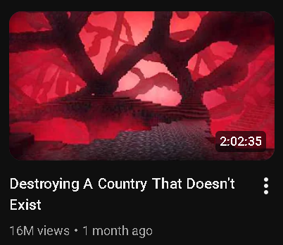
Iran be like
This video is actually so goated, it's original title is "Destroying a world that doesn't exist"
Most terrorist group's goals are literally to eradicate Israel because it got established unethically. WELL GUESS WHAT??? NEWSFLASH!!! LITERALLY ALMOST EVERY SINGLE FUCKIN COUNTRY EVER GOT ESTABLISHED UNETHICALLY. But we saw that shit, we recognized it, and we promised never to do it again. But the anti-israel terrorist organisations just refuse to let it go and they insist on causing massacre after massacre to take back the land that they lost during world war 1. I ""guess"" they are ""technically"" right to be mad about it, but are they really? after like 70 years????. I'm not even giving the bullshit argument that the land belonged to the Jews ever since Moses got there. I'm saying that at this point just let it go, what are you fighting for??? Yes it was unethical, but you know what's also unethical? Killing bro, killing is unethical. And killing is what they've been doing for the past 70 years ever since Israel got established. I must say that the anti-Israel terrorist groups are so dumb and atrocious that their actions ALMOST justify Israel's actions. Did you notice how I said ALMOST there? Well what I meant by that is "don't really".
What is going on in the middle east is a tragedy, and therefore I can not mentally or physically say that I endorse any action by any party involved. I can however say that I understand where the actions are coming from, they got cornered into a very difficult position where the leader of Israel had to essentially decide to either cause the death of Palestinian people, or to allow the death of more Israeli people. They chose a very sensible option, that I simply wouldn't have the balls to chose. They decided killing was better than getting killed, like Flowey. However one shouldn't make the mistake of assuming that this was an okay thing to do, it's still bad. In my eyes, when you kill to protect yourself, you sacrifice something of your own. I believe that the Israeli leaders have sacrificed their own morality to prevent themselves from getting destroyed. And it's real important to me to make it CLEAR that the actions of Israel MUST BE CONDEMNED EVEN THOUGH THEY ARE PERFECTLY JUSTIFIED, they killed innocent people and therefore it's bad, if they knew of any other way to stop this, they would have gone for that alternative. We can find their actions justifiable, whilst still condemning them. Honestly the more I think about it, the more I realise how fucked up this situation is. I know that Israel is not right to be doing this, because if there was at the very list an ounce of righteousness their actions, then at least Israel would have some shame, they would admit that they know what they are doing is really bad and wrong, and they would do everything in their power to make it clear that they don't want to do this, but they see no other way to stop the death of their people. They wouldn't be proud, they wouldn't even show their face in public, they wouldn't celebrate the deaths of thousands, no matter how justified.
In conclusion, I do sincerely believe that the anti-Israel Terrorist groups are mostly at fault in here. However, I will not fail to condemn any and all types of violence in any situation whatsoever, I will also not fail to condemn Israel selling Palestinian land to Israelis because that's kind of a war-crime that I forgot to mention in this whole thing. The end
Rating0/10
Honestly this day sucked ass, so much ass, I am so mad, and all for no reason, all of this because a bunch of middle-eastern individuals decide to behave in the most retarded manner possible towards each other, and by retarded I don't mean intellectually disabled, because no one fucking uses that word as a slur anymore, they use it as a synonym for stupid, and if you disagree then say something to me because it also makes me mad when people get mad about other people using words. There are so many better things to be mad about, and you chose a fucking word. I might wake up someday and decide to delete this because I am writing very unhingedly, like I don't even think that word exists, that's how unhinged I am write now, the hinge has taken a hiatus out of the planet, it's resting on damn deckchair on a random beach located inside andromeda.
I think I am going to just stop looking at the news altogether. I can't let the sheer stupidity I bare witness to cause me this much distress. I have been lucky to be born into a fairly well off family without being neither Jewish or Muslim therefore having no reason to care about this, so why should I get entangled??? I am no justice warrior like Fede, my presence in this world will most likely never have an impact on anything regarding my political beliefs, so why bother knowing about politics??? I think I'll stop this bullshit, fuck the Litro'vial, that whole thing was literally a manifestation of how stupid this all is. I am sure that by the end of this year that thing will be overfilled ten-fold.
That felt really good to write actually, I'm sorry if it didn't feel good to read, but it definately felt good to write. I have pacified myself. Dude, or whoever is reading this(probably me from the future) it's just sad. At the bottom of all this anger there's just sadness. Why can't the world just be at peace? why can't we just let people be? It all gets so complicated somehow? And the worst part is that it makes sense. All of this, and the world will end because of climate change, something completely irrelevant to the millions of other problems this world has. Either that or a random black hole will swallow as whole in less than a second without us even knowing about it. Or the higgs field at it's lowest energy state will get to us at the speed of light.
This is not helping my depression at all is it? Is that why I am depressed? Because I keep thinking about stuff? It's true that my psycologist told me to stop thinking about stuff, and just start focusing on other things around me, I think I failed to do that miserably today. Ima do that right now.
[PS] I feel like Sollux back when he was haunted by the voices of the imminently deceased. If I had to put it into words that's how I would try to describe it.
Interesting stuff
Date:02/05/2026
FixDate:10/05/2026
Climate:Very Windy
Space:Living Room
Time:10:09
Making my opinions a little clearer since yesterday was mostly just a rant of a madman
I just woke up to some news about may day and how it was a whole protest against the war and against ICE and all that p-jazz. It got me thinking about what I said yesterday while I was mad. Obviously the terrorist groups are bad, no one is saying they aren't, because otherwise they'd be regarded as very stupid.
I want to make clear that it IS mostly the fault of the terrorist groups that insist on keeping the land that Britain stole from them in World War 1. The actual reason people are mad at Israel is that they believe the retaliatory actions have been excessively aggressive, and thus motivated by something else. They key word in that argument is the word "excessive", I got no clue if they were excessive or not.
Anti-Israel people mostly cite the fact that about 70 thousand Palestinians have been killed and according to Netanyahu about 50% of those where Citizens. That is much more citizens than the ones Hamas killed which were about 12 hundred. This fact in combination with the ocassional barbaric violence that any military army is doomed to inflict upon others and what you get is a bunch of people saying that Israel is in the wrong.
What I do sincerely disagree with is Bibi going up on stage all smiling and talking about how they need to change the world's views on Israel and convince them they are right. I just don't see it as the response you should have when you are being forced to do some massive atrocities. You should admit that they've left us no other choice, and be open to any and all sorts of ways to stop this. And it's prime minister Bibi's job to let everyone know this, and I think he has done his job poorly because I don't think anyone believes Israel feels shame in killing Palestinians. Maybe it's his fault for not acknowledging the catastrophe of his own actions, or maybe it's some rich arabs buying billions of propaganda and convincing everyone that Israel is bad when they've actually been as ethical as possible in this situation.
I mean, this sounds insane but, Maybe Israel is technically in comitting a killing these people. Maybe a complete genocide of anyone who has this generational unreasonable hatred for Israel is the best way to avoid as many deaths and as much pain as possible... BUT HOW ON GOD'S GREEN EARTH AM I SUPPOSED TO SEE THAT AND BE LIKE "OH YEAH, THAT MAKES SENSE, ALRIGHT I FULLY ENDORSE THE KILLING OF ANY AND ALL INDIVIDUALS THAT WANT TO END ISRAEL, HELL, IMA JOIN THE IDF RIGHT NOW!!" That is so absolutely INSANE!! how am I expected to be in favour of killing anyone!!! maybe that's my problem, perhaps I value human life too much. But that's just me I guess, you would never find me supporting that, never, never, never, I would stop believing in god, einstein's theory of relativity, and the standard model of particle physics before I ever consider killing this many people.
So all I can do is just stare at this conflict in wonder, and just, be amazed. They've proven Einstein right after all, those bastards, who could've seen this coming. I'll thank god for birthing me in this wonderfull family, and I'll apologise to him for ever thinking that caring about this whole conflict in the middle east was ever a good idea for someone as inconsequential as myself. Ima be a pharmacist.
Conclusion (c'mon at least read this part)
In conclusion, neither Raz or Fede are in the wrong, even though they dislike each other. They both are right to be mad. However they are both wrong to be mad at one group in specific. They should just be mad that this is happening in the first place. I believe that peace protests are the way to go. Those who protest against Hamas and Bibi, those people are in the right, Hamas and Bibi's administration are the main conductors in the Orchestra of needless violence, their orchestra is insanely talented, they coordinate their scales, express ideas through motifs, and mix their sound in ways that paint what can only be defined as an absolute abomination.
that being said, let's look at today's news.
Spirit airlines died because jet fuel is too expensive Donald pulls troops from Germany because Merz hurt his feelings Donald says that the 60-day thing about congress needing to approve the war doesn't apply here Hamas elects a new leaded(No no no no no no no no no no) War in Ukraine is still going on because of course it is All the activists from the GSF have been released except for a Spanish and a Brazilian. Because the IDF suspects they have ties with Hamas.
So out of all of those nothing really changed. The pull of US troops could have some impact on security but Germany wasn't really that related to the conflict so I am pretty sure they'll be fine. No serious litrous actions going here. Pretty good news about this. Let's see if we can keep it going.
There are claims that the IDF kinda tortured the activists before releasing them, and there are claims that the spanish person and the brazilian person are also being tortured. That's what Thunberg says, but if I'm honest I don't really believe it. I am sure she believes it, but I don't think I believe it. As I have said to my friend Raz, there is such a thing as "too bad to be true" and I think that the IDF torturing people for no reason falls under that category. It's still kinda bad how they were brought to Israel, I guess we could start counting their days of freedom lost, this is day 2.
Space:Living Room
Time:13:56
ALRIGHT!!!! enouph useless political talk, I think I got it out of my system for a while now. This stuff is insiduous man. I just finished playing tennis, and I could really use someone to just talk to while studying, unfortunately Lucas and Raz are probably occupied and all, I think I'll just take a nap.
Space:Living Room
Time:20:28
The nap was innefective and non-existant. It seems to me that I can only really dedicate a day to one thing. So tomorrow it must be math. Tomorrow it's going to just be math. And nothing will stop it from being math. Get ready for the mathiest day ever. I am going to fuckin UPLOAD all of my work. And I want you to bully me through the say page if I fail to do it. Enouph is enouph, i've not been putting on the batteries enouph on the math. Just doing the minimum to say I did it. But that all ends tomorrow, I am doing it and if not then I will NOT be deleting this text, it will be a text to haunt future Timo forever. It will haunt him and remind him of the fact that he has no say on what he will do next, and his life is purely dictated by the entropy of the universe, no force of will whatsoever. But that won't be the case because I will do Math tomorrow. I am going to do so much math. Be warned.
Rating5/10
Could've been better. I texted Raz and he told me he did some of his exams, he went through the experience of going through the exams, and taking them, and answering all the questions in them. And he made it out of there alive, because that tends to be the case here in Uruguay, because we barely have school shootings ever.
However given Raz's reaction he wasn't particularly proud of his results. Last time he said he did very well on a test, and I responded with "as expected" and then he attributed his success to his jewish genes. I found that kind of weird because I don't like being stereotypical about groups of people, so I tried to derail the situation into talking about my Holy Land summary project, but I think my attempt was way too obvious so Raz didn't even bother replying. I think I've been somehow getting worst at talking to people through text even though I've also been becoming less shy. Maybe I should act shy while I am texting, but I actually love texting non-shyly, it's very entretaining to me for some reason. The bad part about it is that no one replies with interest to keep an actual conversation :( But it's okay, I'll find my people somewhen.
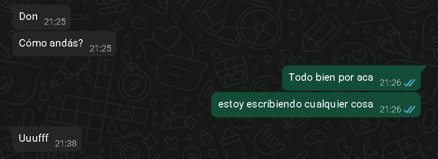
Lucas was warned about what the bullshit I am about to go on about.
Also, I had a dream last night, a dream in which Carla Antonia Rivas was in. But she had a mustache and she identified as a male. ANd I accidentally misgendered her, which is something I've never done in real life, and I strive not to because it's very frowned upon and I would probably get boiled in a cauldron of steaming olive oil if I was ever caught in the act. Luckily this was a dream, and sh- HE, didn't seem to even notice. Anyways. I am fairly sure he got kidnapped by the evil cat that was manipulating us rejects into doing his evil buisness. Thems the breaks I guess. In case you don't know, whic you definately don't Carla was a girl that I saw during the SAAC Fine Arts festival, upon seeing her, Bruno and I briefly wondered weather she was a girl or a boy. At some point I decided to ask her, which would have been super awkward, but it would have also been hilarious in hindsight. Unfortunately, it didn't happen, because as I was about to ask her I I noticed she was wearing a bra, which already gave me the answers I was searching for. And then nothing much happened, it was all normal me doing normal stuff for about an year. Until I saw her again briefly during my intrusion into the SAAC Fine Arts Festival's final picture. Upon seeing her this second time I think I had a crush on her, and by I think I mean I most definately did. I don't know why it didn't happen the first time, but apparently the second time's the shot. Anyways I after I met Mica I completely forgot about her, until last night. ?what, what does that mean, why now?? I had so many other things I was thinking about??? why does Carla, or I guess that would have been her deadname in my dream, why was Carlos in my dream???? I've got no idea, honestly my mind is so fcuked, I literally don't think I have control over what I think, only what I do with my body, that's just genuinely what it feels like sometimes, and I sometimes try to fight it, and I guess I can control what I think, but it's easier to not do that and to just let my mind think it's stuff. Does that mean I have no agency, does it mean I am merely a conduit for the strange entity that is my mind?? who is doing the typing right now???? honestly I don't know but just typing like this, stream o' conciousness style is super entretaining to me for some reason. I love it, I could literally do this all day, one of this days I will just start an html p-tag so big it'll be like an entire chapter. On the topic of literally the most undeciphrable thing ever, Capu decided to eat the food that my mom delivered to him 3 hours ago. See that sentence was super funny to me, I guess this is what I mean when I say I love talking non-shyly, it feels like it's my mind doing the talking, and me doing the experiencing, and I make myself lauph all of the time with the bullshit I say, it's so dumb, but so hilarious. I don't care if I sound insane or ultra-dumb, it's entretaining, and the fact I can entretain myself with the use of my own inside dialogue is just so awesome. I could go on and on blabbering about anything, if I somehow find a way to do this but with my voice, in real life, then I would become the most insufferable guy ever. I think I have already achieved that to some extent with Sebs, but he somehow tolerates me for some reason. I've got like thirty more minutes to write bullshit, and I feel like writing bullshit right now. Like, I am literally listening to Mowgli's Road by MARINA, what other song could convey the non-sensicalness of the things I am talking about. Oh loroooooooooooord I have been told, that I must take the un-for-saken roooooooooaaaaaaad, Marina is so gooooooooooood, and I hate how every time I say that about a woman it sounds like I am talking about her sexually in retrospect, but then I realise that this is only a condition of being raised in such a dumbass world, some of the dumbassery will always just sneak into your brain, penetrating viciously throught your most powerful walls and make you think stuff like that, but as long as one recognizes it and decides to conciously ignore it and not care about it, then that's good. I believe that if I act like I don't care about it eventually I genuinely won't and the thought will probably disapear, women are so good, yes they are very good, in all the sense of the word, because goodness means not being bad, and it means nothing more, I would also never say something is sexual because honestly those kind of jokes never really landed for me. Sex by itself is not funny, it's the method by which our species expands and creates more of itself, and I don't find a single part of it funny. I remember Fede used to find it hilarious, and he would sexualise everything at some point, it became like a whole bit on the camp where he would just take anything that Sofia Ugarte would say and sexualise it, and I was still really shy at that point, and I literally didn't understand why he was doing it. Like why, I came to understand eventually that it's funny because it's innapropiate. Things can be funny for a lot of reasons, I am personally a real fan of "It's funny because it's extreme" like just the fact that this paragraph has been this long is funny to me. So just imagine how funny I thought the Mr Lopez jokes were, those were actually hilarious, the whole construction of a man that is just extreme in every sense of the word. Those jokes were so good, unfortunately I don't think I ever really performed a Mr Lopez joke succesfully, any time I tried I failed miserably and I immediately shut my stupid mouth after I just blurted some stupid as noise trying to immitate the naturally perfect commedy of this ongoing bit. It literally lasted so long, but it was hilarious. I think I ahve mastered the art of "implicit comedy" like, it's there, you just gotta find it by overanalysing everything like a fuckin lunatic. But it's funny to me, and that is not really a usefull thing in the big scope of things, but at the very least I can entretain myself, and lauph at myself in the middle of a conversation, and then the other individual will be like "Why are you lauhping?" and I'll be like "nah it's something dumb" and then I'll explain the most illogical thing their brains have ever had the misfotune to hear, and all that situation in hindsight, is always narratively hilarious to me. Honestly, from the deepest bottom of my heart, I do believe I like myself, I love myself, maybe I just wasn't born in the right world, or i was just too un-coordinated to do something specifically relevant, but the way I think, I truly have no objections to it, I don't know how to explain it, I am really satisfied by the things that I do, especially if there is absolutely 0 reasons to do them, but I do it anyways, just for the whims, literally just being capricious. I didn't really get that feeling from Gamzee in homestuck, he was just being evil because he got manipulated by lil cal. Anyways, even I believe this paragraph is just way too long, so I will put this stream-of-conciousness writing to an end by anouncing that I am going down to my fridge, and allowing myself to indulge in some ice-cream. ALso I gotta meditate because my psycologist said I shouldn't spent that much time in my mind, which is absolutely unpertinent to anything I've previously said in this paragraph, nothing I already thought about but I'm getting too tired to go into right now. Nothing at all, I hope you have a great time, I fecking love you, whoever you are, you are the best, I know you are reading this, I know it because I have magic powers that allow me to see the past AND to a much more limited and unreliable extent, THE FUTURE. okay now Im just having way too much fun typing nonsense, I promise to try not to do this ever again. However I will try to end this with this message, when you start taking things so unseriously as myself right now, you have a lot more fun with life. But there is a price to pay, what is it??? will i lose friendships??? will I end up doing nothing with my life??? is that why I have anxiety and depression???????????? Literally no clue and I might never know that, but I am pretty sure that there is a price, and I am willing to pay it for the amount of fun I am having. After all I will one day die, and will lose the opportunity to have this much fun just being myself and using my amazing self to entretain me in false worlds and funny words. It will be very sad, and non-existant, and I won't even be able to be sad, at least I think probably not, unless god and christianity is real. But I believe even if I was in hell, getting my ass tortured for being a terrible human, even then i would be able to entretain myself through me, that's why I have one of my personal worst takes ever. I would rather go to hell than stop existing, I woudl rather go to hell than lose all the valuable memories of all my friends and how much they mean to me and everything I've been through and all the expereiences that i've had with them, I love them so much, and I know that they don't really love me as much but I am so okay with that. Like I don't mind at all, okay a part of me is kind of sad about it but I wouldn't expect anyone to feel this way about me. I would rather keep those memories alive within me, and keep myself as company, alone, in the tortuous pits of hell, in pain, but happy, thinking about my friends, and the life I lived, and the lives they lived with me, easiest deal of my life.
Emm, sorry about that
Date:03/05/2026
FixDate:11/09/2026
Climate:Clouds are up
Space:Living Room
Time:05:55
Okay my bad, what happened last night with the "thoughts" section was that I took my sleep meds, which dampen my intelligence quite drastically by the looks of it. I thought about deleting all that stuff but now that I re-read it, it actually stirred something up in me. It got kind of wholesome in the end. So to the misfortune of any doomed sould that happens to decide to read this monstruosity of a project. I apologise sincerely.
Another thing I wanted to say is that I decided that any time I hear bad news, I need to follow it up with good news too. This way I can avoid getting depressed about the world by forcing me to only talk about bad things if other good things happened.
Report
Yeah that's right, this is how the reports are going to look like. I figured that the opposite of red is green using a scientific artistic tool known as the colour wheel. Basically the good knews that I saw today that made me want to do this are the ones explained on this video.
https://www.instagram.com/reels/DXAwTEfI1QW/
She is literally playing minecraft in real life, isn't that insane???? It is, it really is insane, it's the best thing someone could possibly chose to do with their own time. What they want to do. Also I couldn't embed the video because she hasn't allowed it to. But yeah that's so cool.
Space:Living Room
Time:16:44
Raz asked me if we had analysed quotes from the book thief when we read it in English class during 9nth grade. This is kind of a weird question because we obviously analysed the book, we didn't just read it for fun. Although it was a very fun book, an amazing read, one of my all-time favourites. It's just so good, I love it when the author integrates the narrator into the story. Anyways obviously he wasn't just curious about weather or not we analysed the book, that was just an introductory question to prepare me for the next question, the TRUE question if you will. He asked if I had access an analysis.
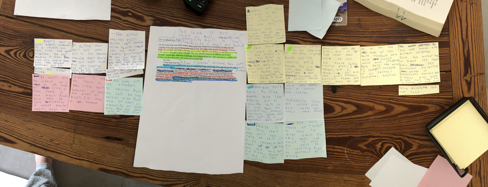
My analysis of the Book Thief
Almost immediately- a moment flashed through my mind. In quarintine, frantically writing down my analysis of the a book thief extract while everyone was presenting theirs. I don't know why I always did that to myself. I feel really bad for my younger self, he was tired all day, very depressed, anxious. I can see it very clearly now. Poor guy, he was so stressed, I remember. I couldn't finnish it in time and Ms Coyle was mad (the english teacher). I remember feeling really bad, and stressed out, and embarassed of how I was the only one in the class who didn't prepare anything, but Coyle, out of the kindness of her heart, she let me present after the next day. And after leaving a comment a second comment, I remember feeling so much better, I remember feeling like even though I didn't do it in time, I was still capable of analysing the text very well. I don't know if she just left that comment because she knew I was sad or because the analysis was genuinely good. But I do know that Coyle was a wonderfull teacher and I was honestly a terrible student, but she was so kind to me anyways for some reason. I feel like she somehow brought out the best in me, maybe because she genuinely believed in me and she was genuinely pissed of at me for not doing the work, and she would give me so many second chances. Looking back, damn, I felt like such a failure, but she never really gave up on me, and the times she was proud, she made it be known, and it made me feel very good about myself.
So I gave that picture to Raz, and he said he would be able to exonerate communications thanks to me. I've got no idea why or how exactly, but I do intend to ask him in person when I see him again.
Space:Living Room
Time:20:44
I just texted Nata to see if she would be willing to come to watch Lara's new musical!! For those who don't know, Lara is a very special individual that often directs various plays. She has won some cool awards for her last play about people not being perfect. This one is called "Desconectados" which sounds like it's going to have some themes pertaining to Digital Society. That makes me kind of want to kill myself, thus I need to watch it with friends to prevent that from happening.
I invited Nata and Raz but unfortunately Raz couldn't come. So Nata and I decided to watch it the 14nth instead of the 7nth so that Raz could finish up on exams and watch it with us. This is al shaping up to be a very cool reunion. Also I just remembered that I never even mentioned the presence of Nata in uruguay to Raz. Although it would be absolutely hilarious if we just pulled up there and Raz sees Nata just there and she was part of the plan all along, I know when something is too much. Raz doesn't like spontaneity and surprises so Ima tell him right now.
There, I texted Raz, although I made Nata's inclusion super casual so that he may still be surprised by her presence. It's incredibly important to use all of these facts in the most efficiently humorous way possible, a perfect balance between causing amusing circumstances, and preventing people from getting pissed off at you for being nonsensical. I believe I am pretty good at balancing these two, although many of my friends would probably disagree, and if you read yesterday's entry, you would probably disagree aswell.
Rating6/7
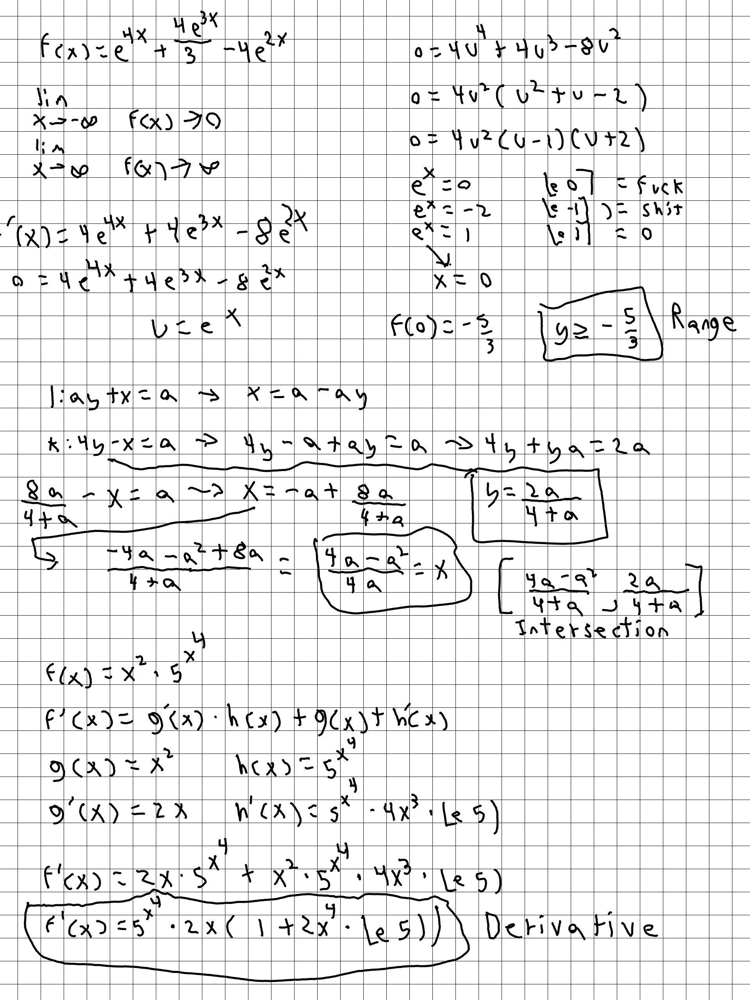
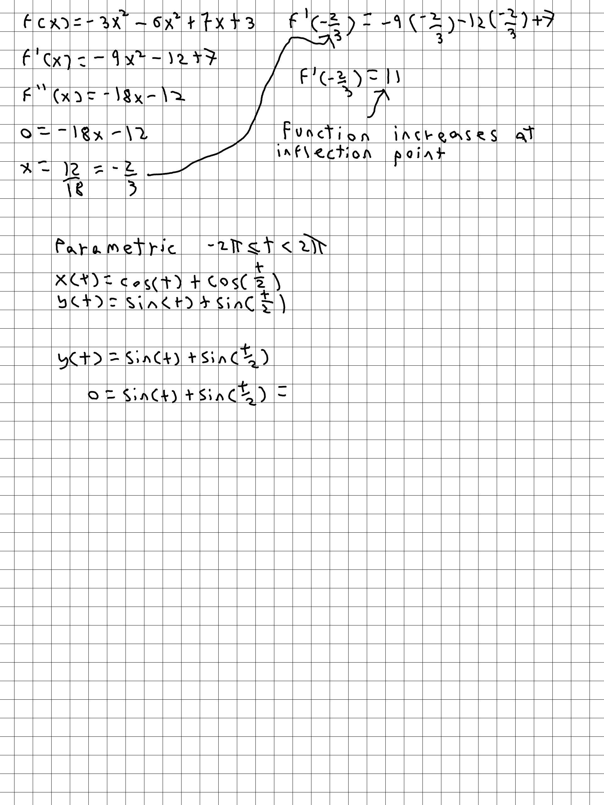
Epic maths
Today was actually quite good, I did some math, here, check it out. I know it may not seem like much but I actually fully understood everything and how to do it. I'll continue my work tomorrow, but consider my job here done. Good night monsi
I changed climate to sleep
Date:04/05/2026
FixDate:12/05/2026
Sleep:Really bad
So I woke up really early in the morning, and I just kept being awake, thinking about stuff. This has been happening for a while now. I think that next night I will take a melatonin as soon as I wake up to avoid staying up for half of the night. Also I decided to change the climate tag to a sleep tag because climate changes over the day so it makes more sense if I put it along with space and time, but I'll only put it if it's relevant at all to the situation.
Space:Living Room
Time:07:39
So the sun came up, but I woke up much before the sun rose up. That is really bad and today I am going to be tired all day. The tiredeness is already taking effect, but I won't sleep. I gotta teach my body the hard way, THIS IS NOT THE TIME TO SLEEP!!! MIND!!!! THE TIME TO SLEEP WAS 4 HOURS AGO WHEN YOU DECIDED TO WAKE UP FOR NO REASON. I don't know why it does that, why do I wake up smack in the middle of the night, and then get sleepy right when I am supposed to wake up??? Why and when did this even start happening??? Thanks brain, I really appreciate this nonsense you continue to pull on me.
So my cognitive capacitance is going to be decreased severely throughout the day. Which is really good for studying math and shit. I am so madddddddd, why do I have to have ADHD, Depression, Anxiety, AND INSOMNIA!!!!! and my psycologist insists that I am also autistic. I'm collecting these mental disabilities like fucking pokemon cards, im on my way to winning the god damn world championships at this rate. Oh yea and let's add Crohn's disease to the deck, cause why not??? I mean at this point I don't even know man. I'm just going throught life, making all these damn choices, hoping that these problems will sort themselves out somehow.
Space:Living Room
Time:9:26
Apparently Lupi and maybe Chad are in Uruguay, might be important in the future. Also my mother suggested I invite Lola to the play aswell. Lola is a childhood friend I had, but I think this is the first time I ever mention her in the history of this website. That is a massive achievement because I've been writing this since the Quarintine times. I stopped talking to her after we stopped going to the same school, and I randomly crossed paths with her very rarely throughout my life, incredibly rarely, so rare that I somehow never mentioned her. So I might invite her because she is sort of a thespian herself, and I think she knows Lara too. I think I have to make a whatsapp groupchat with Lucas, Raz, Nata, and me... and possibly Lola. That would be a severely random group of people, which compels me to do it even more. It would be so cool. But I don't know if it's particularly a good idea. I will give it some thought.
Space:Living Room
Time:17:46
I promise this is the last one
I just went on a big walk. And on this bigwalk I reached a conclusion. The ONLY way that Renne Good's killing is justifiable is if
Renne Good was there to aggrivate the guards
Renne Good was trying to run him over
Officer Ross thought he could prevent damage with a gun
And that last one is kind of a trick, because if he did think that, then he would have been wrong, aswell as in violation of basic police training (don't shoot the passanger in moving vehicles). Also it's very clear Renne Good Wasn't trying to run him over. And for the first one, we will simply never know because there was never an investigation or a trial regarding what transpired. We don't know what the situation was, and I simply can't take Kristi Noem's word for it because they've also called Renne Good a terrorist.
So overall, it most definately was an avoidable death. But most of the fault lies in the man who shot her. Surprisingly. I keep reaching the same conclusion, but this time I am sure of it. Policemen are meant to keep people safe and use weapons responsibly, this was not a responsible use of weapons, there was nothing to be gained from firing a weapon in this specific situation, and that's why the one who fired the weapon, is at fault, for her death. If I ever discuss this with Raz again, I will just tell him that, because it's the very bottom of my analysis. There was no reason to pull out a gun, let alone fire it... if he hadn't pulled and fired his gun, no one would have died.
You could say "If renne good wasn't there, she wouldn't have died" and you are definately right. However was it illegal for her to be there? What was she doing there? Was there anything wrong with her presence there?? These are questions we simply do not have the answer to because of the aforementioned lack of investigation. Thus we can assume that in the worst case scenario, she was blocking the path of ICE and constantly interfering with their operations. In this scenario, I still do not believe it is mostly the fault of Renne Good, she shouldn't have died even if she was interfering with ICE. She should have been arrested, she should have had police officers called to the scene, she shouldn't have been shot by an ICE agent. That circumstance was entirely born out of Ross' action to pull a gun out and fire it.
I have the feeling this is my final conclussion on the case, unless I re-visit this case next time. But I am so confident on this. Like even if she was interfering, she was most definately not threatening to kill anyone. Or at least from the looks of it. Also the lack of an investigation really speaks volumes that I am not willing to address here because we are only talking about the situation itself.
I can only think that Raz came to the conclusion that Renne was mostly at fault due to bias. No matter how I pose it, no matter what kind of conservative values I use. Like even if Renne Good genuinely was the worst, no video evidence shows her doing anything harmful. I am convinced that it was a massive slip from Ross to shoot her. Like a massive one. Even if she was there purposefully interfering, like, Ross had recorded their license. If she refused to get out and escaped the police on purpose, then they would have found her anyways, and put her to a trial. I don't even think that's the case, but even if it was, Ross was still wrong in shooting her, that's what ultimately caused her death, it was Ross' decision that caused her death. He had the lethal weapon and thus the responsability, shooting Renne good protected no one, as I always said, nothing was gained from shooting her.
Or maybe Raz simply thinks a different way than me. Maybe he sees it as Renne Good having the weapon of her car. But even then, shooting the car, or the driver... wouldn't stop it. So IF the officer thought Renne Good was using the car as a weapon, shooting it is still not a good idea. I literally see no way in which it's mostly Good's fault. Nop, and believe me I am trying so hard to find a way right now. Like if Good was literally just there to fuckin bother ICE, shooting her just, nop, not the way to go unfortunately. The ONLY way this wasin any ways justifiable, was if Renne Good genuinely was using the car as a weapon, and after completing what only LOOKED LIKE a two-point-turn, she would try to kill more of the officers. But Ross had no reason to think that, and if he did, I would still say that it's his fault because why would you think that???
Also Donald posted this yesterday and I think it's beautiful
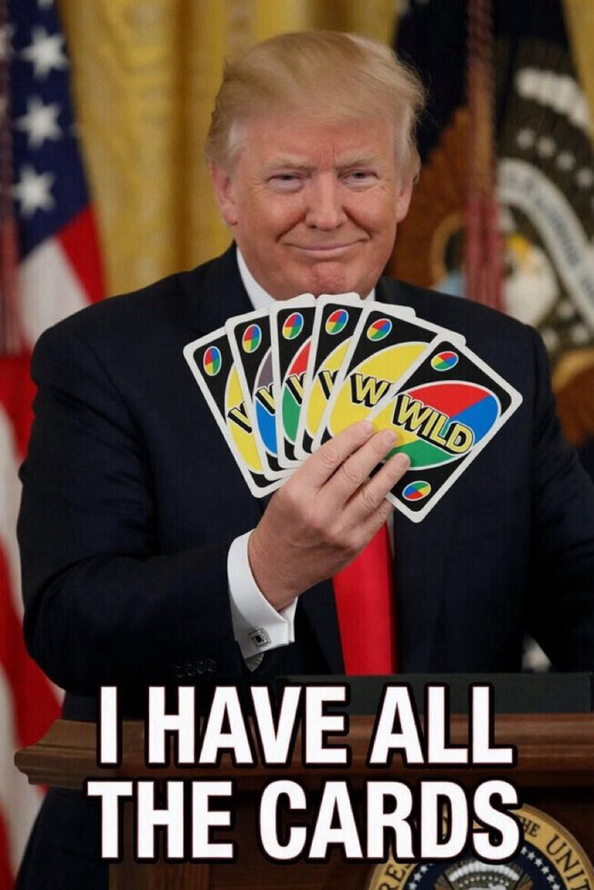
All of them
Rating6/7
Once again a fairly okay day, I was very surprised to find myself being productive despite being assaulted with incredible lethargy due to my lack of sleep. I walked Capu a lot, and I feel like something inside me has changed, I don't know exactly what it is, but something definately changed.
Vague self-concious remarks aside, tomorrow I think I am going to say something to someone :p someone in Uruguay to be more specific. It won't be Raz because he is occupied studying all of that data in a scientifical sort of way. I was thinking of texting Nata, to talk about something very specific. Politics
I don't know if I've made this clear over the course of my various political rants that you definately read and you absolutely didn't skip over. Specially since most of the rants have reached the same conclusion using mostly the same arguments. It's super dumb to me now that I think about it, but CLEARLY, I wasn't okay with that one day that i had a political discussion with Raz. Clearly something shook me in the wrong way and has got me thinking about Renne Good a shit ton more. CLEARLY this has been obvious to you (the reader) because you've actually had to read my political rants(I know you read them) which wouldn't exist in the first place if I wasn't kinda troubled by Raz believing that Ms Renne Good was more at fault than officer Ross. But here's the thing, I won't talk about the topic anymore, not on this website, because it's clearly useless to do it, it hasn't appeased me in any way. The best thing to do would be to talk to Razzzz, but I get the feelign he doesn't really like talking about politics, he said he only knows like about politics to defend himself against people that attack him, or something like that. So that leaves me, who do I talk to about this????
Fede
the obvious answer would be Fede. Bro is LITERALLY studying political science and he is just about the most politically well-versed individual I know. Unfortunately he just happens to be the busiest guy I know aswell. He always fills up his schedule with like a billion things somehow. He even confided in me that he admits he will never really have free time, but that was okay for him. Truly a magnificent being
Sofe
Sofe is pretty much the same as Fede. Except she might now a little bit less than Fede because it ain't like what she is studying professionally. But I have no doubt that cinematography and art in general can get quite political. Also Sofe is definately the type of person to always check all the news and be up to date on politics. However, much like Fede, Sofe is like the busiest of bees, always getting like, jobs and stuff, UGH, could not be me (kidding)
Sebs
Sebs likes talking about Jews and how influential they were, and still are to the world, both in positive and in negative ways. I think he is somewhat inspired by their success, one time he asked something along the lines of "How are they like, so influential??" It is truly a question to reckon, I believe it comes mostly from their powerful sense of community which leads to unmatched cooperation and teamwork, aswell as a miracle or two.
But apart from that, I don't think Sebs likes talking about politics that much in the present. Las time we talked he said his head started to hurt and he immediately left the call. So yea I probably burned his brains, which is exactly what I was trying not to do.
Dani
So Dani knows nothing about politics. And he is also busy all of the time
Lucas
I don't think Lucas is familiar with the terms, right wing or left wing. And I can honestly respect that, because I was that guy sometime ago.
Bruno
Dude, he is actually a really good political talker. But it is much better to talk politics with him in person because he is less capricious in person than in text.
So what I am trying to get at is that my only option at the moment is NATA. I would go for Chad and Lupi but I don't really feel comfortable inviting them into a 1 on 1 cafe political talk, it's just not their vibe. I am actually starting to doubt if Nata would even be interested. She is studying medicine, it has nothing to do with politics. I have no idea, maybe I'll just repeat the same Renne Good script like 20 times using different words on this website. We'll see. But tomorrow I am texting someone, that's for sure, anyways, good night, I hope I rest well this time.
Airplanes make me yawn
Date:05/05/2026
FixDate:13/05/2026
Sleep:Pretty Good
Space:Room
Time:22:09
I am about to go to sleep, wish me luck. But before I begin my journey to Derse I'll quickly summarize this day. I talked to Lucas throughout most of it. I also did some math with ms siberio, and I did some chess. Lucas has a test tomorrow, he'll do great I know he will because I believe in him, and belief is incredibly important when it comes to these things. With siberio I learned how to differentiate parametric equations, which was much easier than what I expected.
But yeah today wasn't really all that productive. It happens sometimes but it is what it is. You gotta take things how they are sometimes, go with the flow, see where the wind carries you. I'm sure nature's breath will take me and my friends somewhere great, good luck with your exam Mr
Rating3/4
Sebs changed his phone number and didn't tell me, he is so regarded. I just had the idea to use the word regarded instead of retarded and I think I cooked here. Please tell me if I cooked.
Also Sofi(not sofe) posted today. She had a sign on her chest that said "I love Annick" and "Annick had a sign on her saying "I love Sofi" so maybe Sofe is a lesbian or bisexual. She once made a power-point presentation about everyone she dated one year and I think they were all men. They also all went terribly so perhaps she also saw this pattern and decided to try her luck with women. Either that or I'm regarded
awesome update
Date:06/05/2026
FixDate:14/05/2026
Sleep:Kinda bad
Space:Living Room
Time:12:36
I just talked to Sebs very briefly. I told him about my plany to join up Lucas, Raz, and Nata all together to see Lara's play. He responded by asking a question "Is nata still with alex?". Honestly I never quite understood the skepticism that surrounds their relationship. The only compelling argument I've ever heard was that they started dating only like, a month before Alex want to canada. But like, that clearly didn't seem to be a considerable factor, so in my opinion everyone should just give up on the skepticism because it's been two years already. It would honestly be more surprising to me if they did break up than if they got married at this point.
Anyways, talking about I have a specific goal I need to create a whatsapp groupchat for Lara's thing. So I did that, and these were the results.
TextLog
*Timo created a groupchat called "connected" with Nata, Lucas, and Raz*
Timo: Hello people
Timo: On thursday the 14nth at 20:30 there's this cool play directed by a friend
Timo: You all already know this but I'm just saying it anyways
Timo: We have to buy the tickets all in one purchase to get seats together, so I just wanted to confirm if you all are okay with going
Timo: This is the total amount *uploads image showing it's 2400pesos*
Timo: Also we can meet up before the play to merendate or even cenate if you are all down
Raz: Yea, that day works for me
Lucas: Hola gente, el jueves me queda bien. Capaz que tengo dentista a esa hora
Nata: Yo todavía no se si puedo pero creo que no pq me voy para el campo el 14 a la noche, compren ustedes y yo después veo si puedo
*Timo kicked Nata out of the group "connected"*
Wow look at that text-log, isn't it incredible? Isn't it so cool how everyone has their own colour and font??? You know what isn't so wonderful?? The responses I got. Except for Raz he cool. I mean like Nata knows we can't buy the tickets seperately because she herself was the one who told me that! So I don't really think she really wants to go. And Lucas has a dentist appointment
I somehow hadn't expected this to go wrong at all. I'm not sure I want to go watch the musical by myself. No wait I still have Raz, Raz is goated.
Anyways I spent most of the day doing some menial tasks because I slept kind of terribly so my overall energy is low. Tomorrow I am going to try doing some math a little harder. I am also going to invite Nata to do something this weekend because I can do such a thing with nobody else. Actually that's a lie, Lupi is here according to my sister, maybe he is a better candidates. I actually don't know, I think they both have an equal chance of saying no to me. If only sebs was here, Sebs never had anything to do.
I could also try doing something with Constan, see what he's been up to ever since the new year started. I don't know, I'm way too tired to think this much right now. I should definately go to bed and decide tomorrow. Oh wait Lucas just told me he didn't have dentist he was just joking. Gentlemen, and Gentlewomen, we are, Back. In. Buisness. Still don't know what I'm going to do this weekend but at least we know what I am going to do in 15 days.
Rating1/4
Honestly kinda terrible, my father got mad at me because I forgot to calculate how much it would cost him to send frozen bannanas from India to the US. If it wasn't for damn Donald and his stupid ass tarrifs changing every damn month.
The plan is simple
Date:07/05/2026
FixDate:15/05/2026
Sleep:Could've been better
Space:Living Room
Time:12:52
Climate:Rain
I just woke up fairly well today. I woke up early but then I went to sleep again and I woke up pretty good. So yesterday I was trying to figure out what I'd do this weekend, I can tell because looking at my task list' i've written that down. Here is a peak into what my tasks look like.
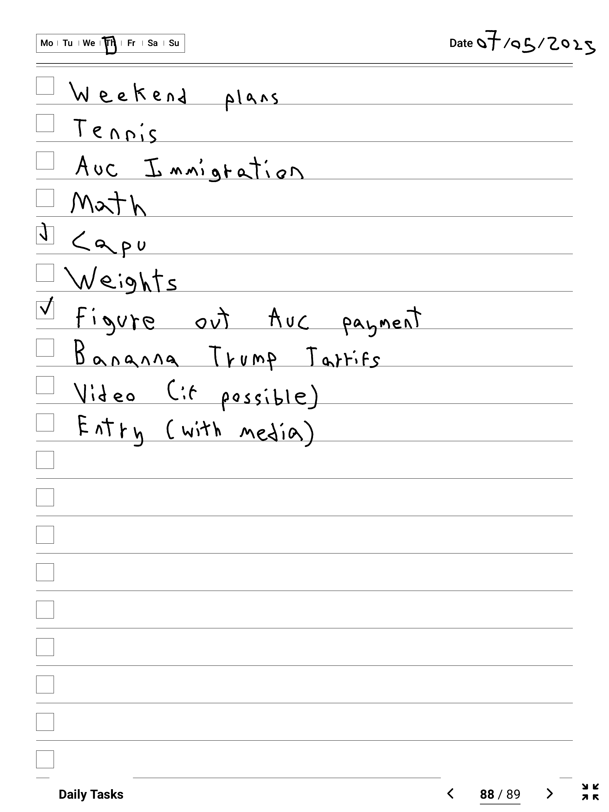
Past Timo's missions
That's right, every day I have a list of missions that Past Timo sent me out to complete. And today one of them is to plan out what to do for this weekend. I am going to leave that one for the end because it's the most stressfull and anxiety inducing one. As you can see i've already taken Capu for a walk, and I've already made the payment required to secure my housing in AUC. Let's do some MATH. I think in order for the task to count I need to do at least 1.5 hours of Math.
Space:Living Room
Time:21:36
Today I spent most of the time in a call with Lucas. I made my own font, but it's pretty bad, tomorrow I will try to improve it. I also did some math with Dani. At first it seemed like he had changed his ways, it seemed that he no longer had the superiority complex that all of his explanations were plagued with. Then he immediately destroyed that facade and started shitting on the fact that I don't know basic maths :/
At least he is trying to be less of a douche when teaching concepts, failing but still trying. I also briefly talked with sebs. And I showed my font to dani, he loved it.
Dani is a very equivocacious person, and by that I mean he makes mistakes all the time. Such as the one of insulting my font, it is a perfectly standard and excellent font. This young man ought to learn some manners.
Rating5.1/8
Thoughts
Talking to Dani was cool and all but my father kept insulting me and I didn't like how sebs only thought about joining.
Now time to think about what I will do next week. I could invite Constan and Nata to do some expert level bowling. That sounds like a fan plan that I just randomly thought of.
Very Rainy today
Date:08/05/2026
FixDate:16/05/2026
Sleep:Terrible
Space:Living Room
Time:17:22
Climate:Rainy and Cold
I honestly don't have a lot to say, look at my tasks today.
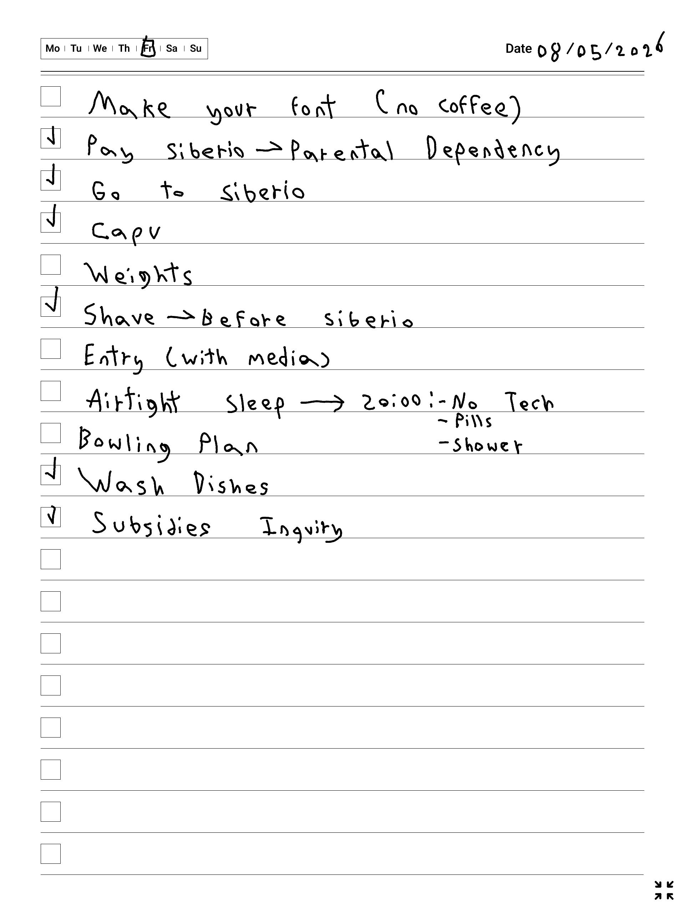
Tasks today
Those are a lot of tasks I have over there. Most of them are complete by now. I shaved, this has been something i've been intending to do for quite a while so I'm glad I finally got it done. I also washed all the dishes since Jessica (Professional Hired Cleaner) didn't come today because of the rain. I took Capu for a walk that he probably didn't enjoy very much due to the rain, but he kept insisting me to take him for a walk, so that's what he gets. I succesfully payed Siberio and went to her class, but it wasn't very usefull stuff that we learned. I am really tired today because I woke up at 4 am and I haven't sleeped since. Love it when I do that, it's one of my favourite party tricks. That's why you might notice that today I am being very strict with myself, afte 20:00 I will NOT use ANY electronics that might stimulate my brain and cause it to mistakenly think I shouldn't be sleeping.
So that means I have like 2.75 hours to complete the rest of my tasks. I gotta do an entry with "media" because past Timo has been really annoying about those. He's also been annoying about weights and taking capu for a walk, even when the weather conditions are very unfavourable. I guess it's good to build some routine and all. I also need to do the "Bowling Plan" which involves inviting Nata and Constan to do some nice bowling and maybe get something to eat tomorrow at Portones. It will be nice to see constan, he already confirmed so I don't even have to depend on Nata being willing to go bowling. This are some great news because it means I officially have plans this weekend and I won't spend all of it alone!!!! I love it when that happens and I am proud of myself.
You'll also realize that I am making my own font, I'm calling it timoKind.ttf and it's supposed to be my handwriting. You will soon be able to type in my own handwriting, I know it's something you've been wanting to do for a while that's why I'm working so hard on it. Anyways, thanks for reading this future me, or anybody else.
Rating5/7
I was expecting today to be ass, because I woke up terribly. But it turns out that somehow I managed to be effective today. I completed most of my tasks which is good, and I have something to do tomorrow!!!. This is all very epic stuff!!! Tomorrow I'm seeing Constan!!!
LET'S GO!!!!go
LET'S GO!!!!go
Yep, that's right, I have my own FONT now. I could write the rest of my website like this, but I'll choose to spare you from such psycological torture... You're welcome :)
I still need to add some more alternative letters), and I gotta fix some tiny things, like the fact that the exclamation marks are too small!TT!!!!!!!!. But so far this is the best thing I came up with.
Here to me I know that I am so unconfoundably dumb that I hadn't realized the sun was metling an insiduous sugary chocolatey confection under my cup!!! He is insanely talented. He has taken my sould away. What now?
My unbelievably authentic font
Title
Date:09/05/2026
FixDate:17/05/2026
Sleep:Bad
Space:Living room
Time:4:00
I really am proud of how the font turned out, overall pretty good. I woke up at like 4 and went to sleep at like 23, so it wasn't airtight, that's a fail on my part. I failed two missions yesterday. Every mission failure and success gets recorded and sent to an excell which keeps track of all my successes and failures
So far
So far these are the stats, the yellow percentage indicates essentially how successfull I am when it comes to determining my own future. The nature of the goals are basically meant to repreasent what past Timo wants, and if I fail to achieve these goals, I am dissapointing him. The trade off is that I get to offload some responsability to future Timo for things that I don't have the time to do right now. It's all meant to be a system of trust between me, myself, and I, so far it's been working at 74% efficiency. My aim is to reach 90% by the end of this year.
Each year will be a new start, but I'll always keep track of the overall. That's why I can't really keep adding up these failures, they will always stay there, and they will always pull me away from my ultimate goal. Thanks to them, it is now immposible to reach 100%. According to my calculations I'll need around 432 achievements without a single failure in order to reach 90%. This will be touph, but I am willing to try.
Also any day that goes by without me noting something down will count as a failure. My goal is pretty much immposible this time around, I just failed way too much already, I'd need every day to be perfect. But I still will try my best, in Dani's motivating words
"I already accepted my fate No matter what I do I will end up jobless But there is something inside of me that will keep me going"
-Dani
Truly a hero of heart that Dani is. If you are wondering how I know Dani would chose Arial as his personal font. I can show you how I obtained such an answer
TextLog
*Timo indited to Dani through instagram*
Timo: Dani Mr, talking about fonts, what's your favourite one?
Dani: Depends on context, Times new roman for formal articles, Montserrat is cool for video editing
Timo: Say that all your messages from now on have to be on a certain font, and that is the font you are stuck using. One that kind of reflects your personality, the first impression of someone has of you through text
Dani: Timo how about you lock in with your math
Timo: Dani
Timo: How about you answer my feckin question
Timo: And mind your own buisness
Timo: Unless you don't want to
Dani: Timo you don’t wanna get r4ped by chemE bro
Timo: Weather I get raped or not will be defined in the future
Timo: and weather or not you answer my question will not be directly pertinent to me getting raped
Dani: I think that your handwriting font is stupid
Timo: Dani I didn't ask
Dani: And it gives a horrible first impression
Dani: There ya go
Dani: Answered ya question
Timo: that
Timo: wasn't my question
Dani: No im applying it to you
Dani: If i had to select one, arial is the most versatile
Dani: No im applying it to you
Timo: apply it to yourself please
Timo: omg so boring
Timo: fine
Dani: Go do your math Timo
Timo: fine
Dani: Learn how the absolute value function is defined for real numbers
Dani: And learn some basic set theory
Timo: No ime learn usefull shit
Timo: like vectors
Timo: That's what im on about right now
Dani: And now that we’re at it, learn about the modulo in the complex plane and the complex unit circle
Timo: In due time
I am never asking this guy anything ever again, why does he always feel the need to establish his superiority onto others??? For a second the other day I thought he had changed. Turns out not :/
Enouph about Dani, because today we went bowling.
Bowling
Space:Portones
Time:14:10
So we did some bowling, we talked about academics and all, it was really fun. If you want to know the results of bowling, here they are.
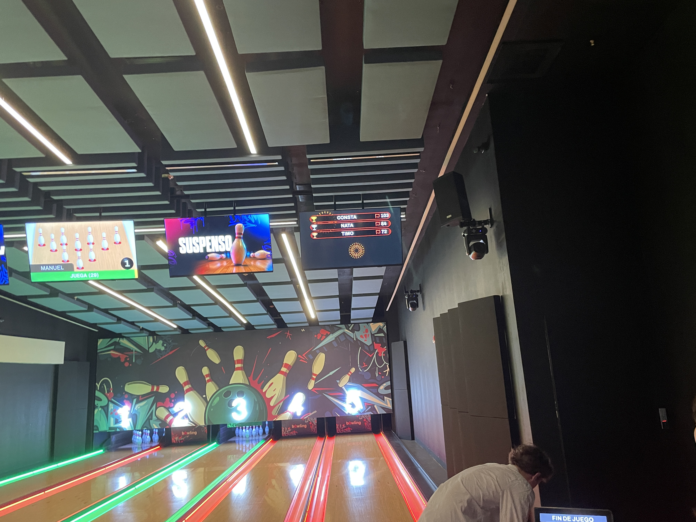
You just gotta zoom in a little
I wont mention the score, I'll just mention that we got the same ranking twice and that I did not win, and didn't come close to doing so. I will also mention that Constan did win. That should be enouph info for you. But winning was never my objective, my objective was to talk politics. And politcs we eventually talked.
But first we went to subway, Nata and I ordered a sandwich. Constan had already eaten. We talk a lot about our educations, about academic stuff. Here is a quick thunder-strike round.
Constan studies in the middle of god knows where
Constan has a massive final worth 60% of his grade
Nata had a teacher that trolle their entire class by telling them that a topic wasn't going to appear on the exam (it appeared)
Nata is going to be a surgeon in the future, and she will save lives
While they were speaking I was silently doubting every academic choice I ever took, do I even like chemistry??? Maybe I wanted to do medicine??? Fuck me and my stupid ass indecision.
Alex is apparently going to do an NBA after engineering because that apparently is something you do for some reason (my father did the same thing)
Now that that's all over, I suddenly smoothly integrate politics into the conversation
"Estan enterados de los eventos politicos?"
-Timo
Yes, they are, and I know they are because I can see what they like on Instagram. Now I was going to go an an incredible tangent, and I actually did, but I just deleted it all because I don't want to subject anyone to any of that anymore. Basically they agree with me in just about every single thing. Capitalism, Communism, Socialism, that shit doesn't matter, anything can work. The right, the left, the center, the forward, the backwar, up, down, anything can work. Some people have preferences that's for sure, but in the end it's up to the people. If you have bad people who happen to also be smart, they are always going to find ways to exploit the system, no matter what system it is. Thus this whole partisan divide of the left vs the right is complete nonsense and it should cease to exist very quickly if we ever have any hope of making any progress.
That being said, even though I have no problem with right-winged economic ideologies, Donald sucks ass as a president. I have literally met no one that supports the guy, not even my right-wing friends. Only Raz... and ima be honest idk why. Nata and I agreed that Donald's ideas were good in theory, after all immigrating illegaly in the US is a bad thing, and they also needed to fix the tarrif stuff, and maybe cutting SOME government funds to SOME institutions could have proven usefull. But execution-wise it was terrible, the tarrifs were (and still are) a mess, most of DOGE's fund terminations were ideologically targetted, and ICE became too aggressive to justify having it in the first place. Also they banned Uruguay from having US visas for no reason. They say it was because of public charge but that's bullshit, Uruguay has some of the most profitable migrants ever. They only banned it because Uruguay has a SLIGHTLY left-leaning government and that's apparently just too much for Donald not to lose his mthrfuckin marbles all over the place. Argentina has worst public charge than Uruguay and they didn't get Visa-banned, and the only reason is because Milei's ideology aligns with Donald. Also who the fuck cares?? If all of Uruguay moved to the US, it wouldn't change a fucking thing, and the only thing it would change would be for the better of the US because again, IT BEHOOVES COUNTRIES TO HAVE URUGUAYAN IMMIGRANTS!!!. This was NOTHING but a petty move against my fucking country, and if there is any patriotism in me then I can't possibly accept this.
Anyways... Nata talked some politics aswell. She talked about how Denmark has this cool political system that basically destroy the bi-partisan bullshit happening in the US. She also talked about the times that she had problems with the police in the US becuse she looks foreign even though she has Visas in all her passports. She also told me about this cool groupchat that the US has, where men give each other the latest tips and tricks on how to rape people, specifically women. I wish she was making this up but like I fact-checked it and it's actually a thing wtf how is this allowed????
So essentially all of us agree on Bobby's basics over here, Fabri's fundamentals, Alex's axioms, Peter's Principles. We then proceed to talk about injuries, Nata and Con have had some bone breakings and some other tissue issues in their life. I had a minor tissue issue when I was small and I destroyed the ground with my face, but it wasn't that bad.
After a while Con realised he had to leave. So we started heading out. We went to our car despite con's insistance on taking a bus. We talked about some pretty cool stuff in this car ride. But you need some context.
Megan and Fede seem to have some animosity towards Nata. Specially Fede... Megan only started "hating" her once she left. But I feel like Fede has always hated Nata for one reason or the other. Fede's reasons behind hating people evade me like DB Cooper. But why Megan??? I asked this to Nata and she told me the story from her perspective.
This is the story from Nata's perspective. She was once really close to Megan, but upon leaving, Megan suddenly stopped talking to her. Viki (Megan's sister) said to Nata that Megan had felt like she had abandoned her. So they stopped talking to each other. No necessary animosities over here. Except until one day where Fede, Megan, and Alex were all together and they called Nata, and according to Nata they said "Mean things" to her. And ever since then they don't like each other.
I will analyse my thoughts on this perspective below my rating for today. I then proceed to tell the story of how in SAAC Fine Arts I tried solving the problem between Sofe and Fede, but I only made it worst. I was the ultimate catalyst for their mutual disliking. I will never undrstand how this fucking happened. But the conclusion was that I actually ended up being a terrible intermediary. We briefly concluded that hating someone just because of varying beliefs (like communism or capitalism) is dumb. And then we threw around the idea of seeing each other in a paddle court.
Intermission
Megan and Fede dislike Nata. Megan once described her as "Horrible" but she said it's been a while since they last saw each other so she might have changed. Fede described her as a "Self-serving egotistical cunt" but only because she asked her mother to ask the director to give her the presidential award she had missed for quarintine??? Like who the fuck cares if she had Joe's or Donald's signature??? Does that really make her a "Self-serving egotistical cunt"??? what even is a cunt???? British ass insult right there, I refuse to use body parts as insults though, so I don't even see it as an insult. pusi is short for pusillanimous
Anyways, I never heard anything concrete. Only that Nata stopped talking to them and then she demanded her presidential award. All prett self-serving, sure, I guess it's good to serve yourself. Egotistical??? i think we are pushing it, and cunt is just bad faith.
So there are two main problems
Who started ignoring each other first????? Was it Megan or was it Nata???
Why does Fede hate Nata (This one we will never find out)
So Megan said Nata started ignoring her first, and Nata said that wasn't the case. Sooooooooo there was clearly a misunderstanding here. And given how shy megan used to be, i wouldn't be surprised if she was real upset that Nata was abandoning her, and if by some miscommunication issue she wasn't able to contact Nata, then that only made things worst. I will get to the bottom of this, but I have to do it very carefully.
TIMO, DON'T DO THIS
Don't tell Fede about what Nata told you, the call about the "mean things" because that never works, not with Fede at least. I need to find a way for Fede to tell me what exactly he dislikes about Nata. One problem though, I've already tried this with Sofe, and he gave me a bunch of situations that could have very well been misunderstandings.
My goal isn't only to find out, not this time, my goal is to heal. And to do that, I will have to do something crazy, I will wear my heart on my sleave.
Space:Chiara's Home
Time:20:20
Asado
Surprise attack!!! I got invited to an asado today. I love the fact that this happened, it's really cool when I get invited to stuff and get to talk to people and catch up with old friends and all. I feel like it was really cool. We played cards, I catched everyone on my situation. Here is a summary of everything
Lupi has a friend that cheats in exams
Chad mostly healed his hand
Chiara has a very interesting life (Everything bad happens to her, I would literally have to make an entire list of bad things that she has gone through)
Luca cassoni is a basketball referee
San went to someone's house
Chiara has similarities to Sebs that I must inform sebs
Epic Individuals
After these updates, we play cards. But then San leaves and we eat the meat. Chiara and I talk about pornhub and how the jewish owner apparently created it to corrupt christian minds???? Yeah ima need to fact check that, be right back.
I have no idea where the hell she heard that but I am most certain it's false. Still, i don't need them to have wanted to do bad. PornHub is bad as it is. Anyways, she doesn't like how many Jews are in positions of unethical power, like with PornHub, the US Government, and Jeff. I also don't like it when people have a lot of power gathered in unethical ways, however I don't tie it to their identity, I connect it to their choices. Although Chiara does affirm that she doesn't hate Jewish people for their values or their religion, she just dislikes the bad people within that group. Like the israeli government.
I don't know to what extent hating the bad people of a minority group is racist. I think that as long as you apply the same standards to everyone equally then you should be alright. Anyways, we also play pool because this is Chiara's house so that always happens.
EPIC CLIPS
But Chiara was getting bored and she wanted to do something interesting, so she suggested we all go get ice-cream, and that we did. At this point I was tired, please do remember that today I did not sleep well, and at this point it's actually past midnight, so it's technically the tenth already but I'm not bothering changing the day.
Epic Individuals par 2
I eat the popcorn ice-cream which is surprisingly good???? I also meet up again with Nico and Belue whom do not recognize me. I start playing chess because I am literally so lost. I was disasociating at the time, and I also forgot to take my depression meds which didn't help. It made me feel all tingly. Anyways, it was all very interesting and super cool.
Rating6/8
I learned a lot about my friends today, and I am sure to use this knowledge to better the circumstances they find themselves in.
Also, there is no info about the founders of PornHub in wikipedia. That is so eery.
I am doing a good job at not listening to the political events going on. I am staying way out of that, I can ever so slightly hear stuff about alien files, but I know it's all fake so it doesn't attract me as much.
Tired today
Date:10/05/2026
FixDate:18/05/2026
Sleep:Bad
Space:Living Room
Time:21:58
Climate:Cold
So today I was very tired from yesterday, meaning I'll probably be able to sleep better. I was still somehow succesfull at accomplishing most of my tasks. I also got psychoanalysed by my mom. She psycoanalysed my drawing of John Egbert's dad in the rain.
Also i just realised the entirety of the Table Tube Gang ignored me twice. Dude, not cool.
Moreover, I talked to Lucas and Raz about going to Lara's play and they said hell yeah. Raz did okay in his test.
Rating2.5/5
Not that great but okay. Just a normal day. Raz changed is Profile picture from Hamilton to Donald, who is a considerably more undesirable person but that's okay, i respect it.
Lucas joins the party
Date:12/05/2026
FixDate:20/05/2026
Sleep:Bad
Space:Carrasco
Time:17:10
Climate:Cold but cool
I am with Lucas right now, talking, chilling and stuff. we talk and chill quite a lot actually. I don't remember what we talked about exactly. But eventually we went to crepes. I insisted on eating outside but Mono was cold so we spent most of our time inside. I just drank my hot chocolate inside.
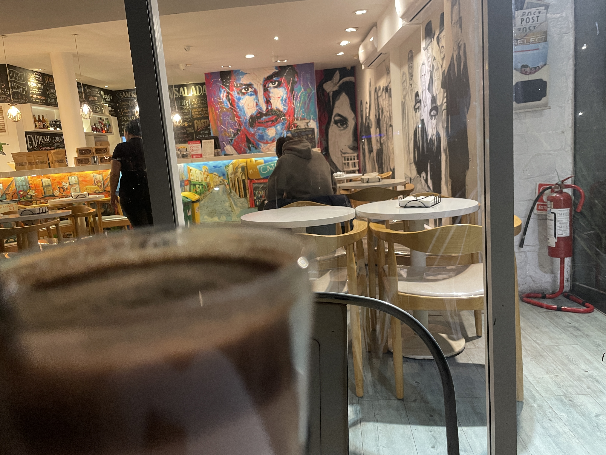
Lucas did not accompany me outside
Also Lucas ate 3.5 crepes which is a very big amount. After this, we went to Portones because Lucas wanted to check out some clothes at addidas. Meanwhile I played some chess, pretty badly though.
Lastly but not leastly, we went on a little car-ride just to waste some valuable fuel. We talked about Chiara, and I asked Lucas quite an interesting question.
"What do you think defines someone most, their sense of self, or the choices they make?"
-Timo
Lucas said it's the decisions they make. We both agree that Chiara is a good person, but she hasn't always made the best decisions, like the decision to vape and to not do any sports. But overall she is still a good person because their sense of self is overall virtuous. Also we concluded Dani may not be the most selfless person out there. We also concluded Fabrizzio is incredibly underrated. We also saw a car that might be yellow
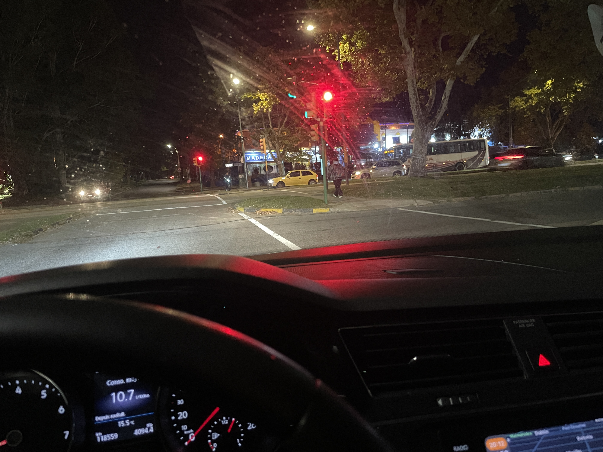
Car that might be yellow (That shit's yellower than the duck that asked for grapes)
Rating9/9
Quite epic to see Lucas again, also we are planning some nice paddle this weekend. And an asado. I need to make a list rn hold on.
KFC
Pool
Ice-Cream
Pasear en Auto
Asado en mi casa
Digital Circus
Kung Fu Panda
Mario Kart
Paddle
Chinese Food
World Cup Hamburger
Football 5
Spaceteam
Lara's Play
Umm, Nah
Date:13/05/2026
FixDate:
Sleep:Good
Space:Room
Time:21:30
Climate:Cool
So today I mostly started kinda thinking about Math. At first I woke up from a fairly good sleep, something I haven't enjoyed in quite some time. I get up and get ready for my morning tiredness to strike in out of nowhere, but I've booted up a dopamine-stimulating game, "WHITE KNUCKLE" to keep me awake while I'm tired. After that, I started doing something else, I talked to Megan a little bit, I also made some modifications to the website, and I started reviewing some trigonometry for Math. Eventually the time for math came, but I believe was sufficiently prepared.
[Timo]=>Take Mock Exam
The mock has several questions of similar formatting to the previous mock, I don't know if this means the exam will also have similar questions, but I sure hope it does.
The exam is time consuming before anything, it consumes time. Ms Siberio corrects some minor mistakes and guides me through some problems. But it's mostly me doing the heavy lifting, which is a good sign. At the last thirty minutes, I decide to give up, because I no longer have Siberio's presence and I am too tired to continue. In hindsight this was a poor choice, but I simply didn't know what to do. I mean I didn't look at the problems for some reason. I guess I was too tired.
Anyways, I enter a call with Raz and we do some cool stuff. Then I go eat. My father asks how I did in the exam and I said I did good. Because I do believe I did good, but my father wanted a more involved answer, I don't know what to tell him though, it's unfortunate but like, I can't really think at the moment, so I'm limited to basic answers. This kinda pissed off my mom and my dad. It's really unfortunate how easy it is to piss off people when I'm tired. So I decide I have done enouph for one night. I go upstairs to continue my shennanigans with Raz.
Raz takes aspect quiz (Raz is light-bound and a derse dreamer)
We do the Linxicon
We play r34dle
We play metazoa
We rank autism
Bullshit Happens
So apparently running away from your problems doesn't make them go away. My mother tells me to go down and she proceeds to deliver a bunch of non-existant problems that I have already solved. She does so in a very irritated manner and she is mad that I am still awake talking to Raz. I try to defend myself and I believe I was successfull in the end???? It's hard to tell. What I am sure of is that she wasn't fully in the right.
Every day I've held up a pretty consistent list of goals which include walking my dog, doing weights, doing Math, and writing an entry. I think these four tasks per day are enouph to establish a "routine", which she claims I don't have. Also she got mad that I didn't answer the last 5 questions of the exam, which, to be fair, I could have answered. Like, i have no idea what posessed me to stop doing the exam immediately after Siberio left. Actually I know, it was being tired. But in the real exam, not only will I have more time, but I will also have more willpower. I won't have Siberio though, but I think it all cancels out on a nice way where I do end up completing the full exam. Honestly I'll practice some more but I do see a path where I definately take this exam at the end of the month.
Anyways, my mother says I haven't been going to sleep well. Which is wrong, that's just straight up infactual. Like every single day I go to bed at like 22, max 23, and if I wake up at 4 or 6 then that's not my fault :( I'm not going to go over her endless stream of meaningless criticism because she made all that shit up, and even if she didn't, she made most of that shit up, and I shouldn't go around shoveling for meaning in a bunch of shit that she made up. If she has some constructive criticism she is welcome to relay it to me in a calm and preferebly less full of shit manner.
So then I went to sleep
Megan goes Hiking
Next up on the adventured of Megan A Billingsley. She has gone hiking!! She also reminded me of the fact that she is going to be studying in Japan for up to 4 months. Milla is right now in Japan and she is having a blast, but will Megan also have a blast??? Keep watching to find out.
Also Megan proposed the idea to do a second TTG meeting, I seconded the motion but nobody thirded the motion so it kinda came to a halt. It stopped moving.
Rating4/6.5
Honestly today could have been really good if it wasn't for the ending being terrible. A sequence of events led to my mother shouting at me for no reason which kind of sucked :( she was already mad about the fact that my father was mad. And my short response to my father about the test apparently also made her mad. Honestly life is touph, like just saying shit wrong can get people mad at you. That doesn't make sense to me, and the fact that I live in a world where I am capable of somehow not fucking up every single time I speak in spite of this fact is a miracle to me.
Lara´s´play
Date:14/05/2026
FixDate:22/05/2026
Sleep:Meh,
Space:Living Room
Time:17:29
Climate:Clear
I just returned from a nice work-out session with the mone. It was all good and stuff. I feel like I got some nice moves on. Now I am going to take a bath and eat some nice breaded chicken which is called "Milanesa" in spanish.
Space:Car
Time:19:30-20:30
Climate:Clear
Raz has arrived, and with his arrival comes our departure towards Mono's house and onto Lara's play. On the way there Lucas told a tale about how he travelled with famous Uruguayan band "El Quarteto de Nos" on his way back here. We also stopped buy at a mcdonalds since mono and I wanted a beverage and Raz hadn's eaten. And I accidentally asked for
"Una Fanta sin queso"
-Timo
I meant to say without ICE!!!! whateverrrr. So yeah that's going to be a story that will probably get mentioned in the future. Eventually we got to the play, I can't recall what we were talking about on our way there.
Space:Theatre
Time:20:36
Climate:Clear
They didn't want to let us inside because we were late. Those people don't know who we are, we could have em 6 feet under in no time if we wanted. After our threats, they decided we were not worth messing with, and they left us in.
The Play
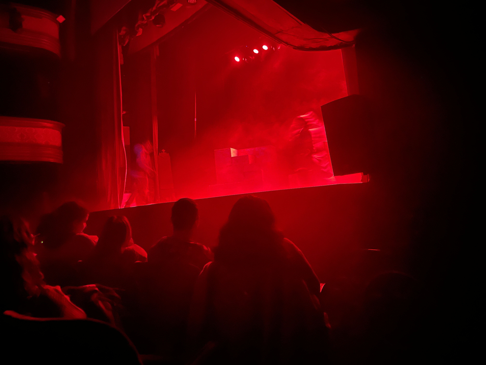
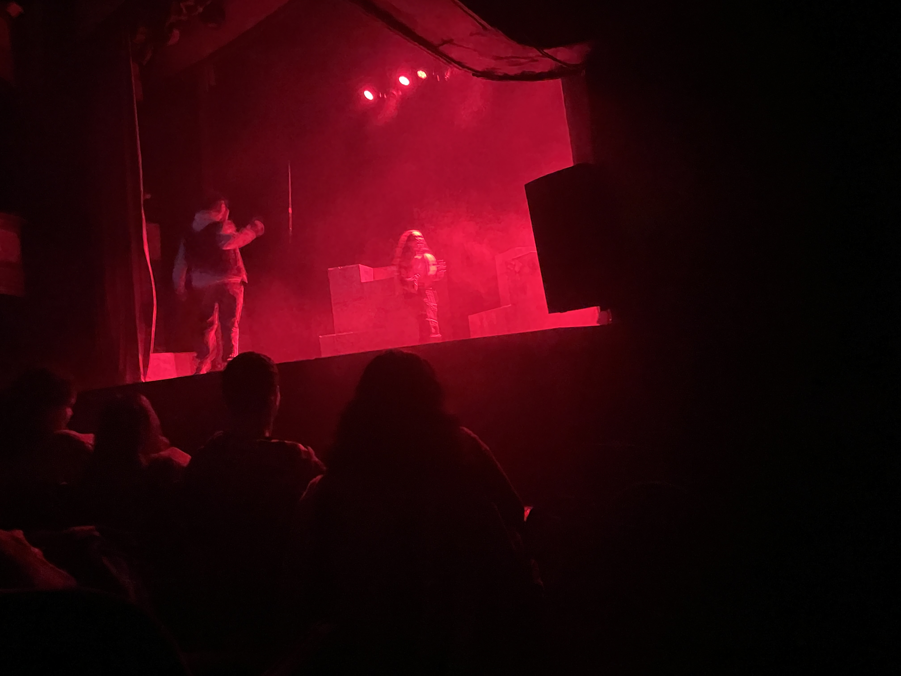
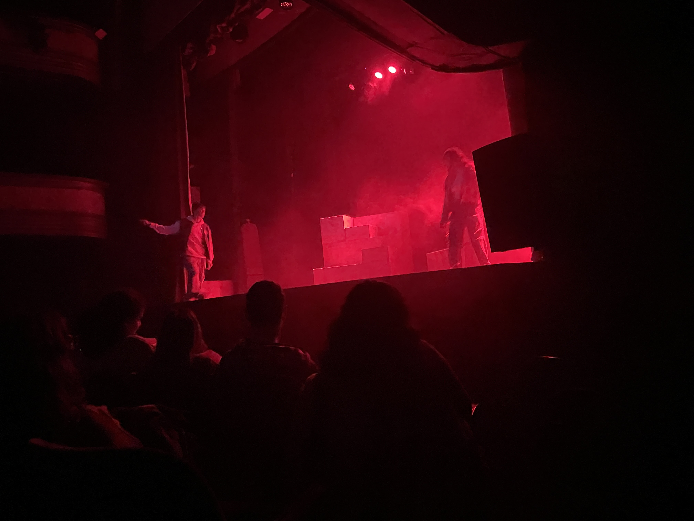
Some epic scenes
The play was really good in my opinion. It was about this guy called Lorenzo whose father abandoned him and his best friend Isabelle died :( They moved to montevideo so he could escape the memories of his fallen friend. He has a sister called Martina and together they fight against the evils facilitated by the SOCIETALLY DIGITAL connection that modern technological devices provide us with. They connect us to everyone, and disconnect us from everyone.
Martina is in love with epic social media celebrity Tiago. But Tiago sent her a SUSPICIOUS PICTURE, and he demmanded for a SUSPICIOUS PICTURE of her own. Martina refused at first, but gave in to his demmands after pressure from Tiago and fear of losing him(she must have been really in love{also Martina's and Lorenzo's father left when they were young so maybe Martina fears abandonment}) So Martina gave into the pressure and sends him a SUSPICIOUS PICTURE of her own. It's not long before Tiago increases his EVILNESS ATTRIBUTE by evolving from requesting SUSPICIOUS PICTURES to requesting SUSPICIOUS ACTIVITIES(sex) from Martina, but Martina refuses, and Tiago retalliates by posting her nudes :0
Meanwhile, Lorenzo is also a main character in all of this. He's got this hero complex because he couldn't save her best friend Isabelle. He tries to open up this sort of shrink for his classmates where they can all talk about their problems. But it's just not working brooooooo, nobody wants to hear about this douche and his problems. He spends most of his time alone except for this one girl with a yellow dress who gives him some advice, but she is always on the phone which he find severely annoying. Eventually Lorenzo decides to ask Tiago to use his HIGH SOCIAL MEDIA STATUS to promote Lorenzo's shrink. Tiago does so in exchange for putting in a good word for him, to his sister, Martina...
So the psycology sessions go well until this guy called Nacho gets trolled by these trolls into thinking that the girl he loves has confessed to her via chat-message. They utilize Artificial Intelligence to create credible evidence that it's actually her crush(The Crush's name is Pili). This leads to an incredibly embarassing serenade in the middle of the class from Nacho to Pili
"Sos caca de pajaro? Por que caiste del cielo, y no puedo sacarte de mi cabeza"
"Sos el dedo corto de mi pie? Por que te quiero dar contra todos los rincones"
-Nacho from "Disconnected"
If you know spanish, you will probably realize this confession went sub-optimally, except. Not really. Because after that embarassment, Pili and Nacho had a serious 1-1 where they discussed what had just happened. Nacho admitted he got his ass trolled by some trolls, but he genuinely fell in love with Pili 6 years ago because of her confident self, and not because she is popular online.Pili liked this, and now they are in love, but in secret, because Pili can't be seen hanging out with someone of low social status. Nacho's social status got destroyed after that embarassing confession.
Nacho also got mad at Lorenzo because he was the one who told Nacho to confess to her. Because Nacho remembers the fact that Isa and him had a fight right before Isa died, and he regrets never solving the conflict before he couldn't go back :( So Lolo told Nacho to confess to Pili, but that went poorly at first, and Nacho blamed Lolo. But Lolo doesn't know that he actually helped him in the end. Which is really epic but it also means Lolo is severely depressed because he thinks Nacho is mad and also Pili won't go to his shrink no more because she finally found a man who lover he for who she really is (Nacho). So Lorenzo confides about all of this with Yellow Dress Girl while they drink Mate together, but Lolo gets annoyed even at her because she is always with her phone!!
Pili and Martina have also been friends all along, and they often talk to each other a lot aswell. I just forgot to mention that all up until now. So now that Martina's nudes have been published online, and people are under the impression that she posted them, everyone thinks she is "gifted", which doesn't mean that she has some special talent, in spanish, the adjective "gifted" is used to describe someone that "gifts" her body to others very easily, which is to say a slut. And everyone treats her very poorly for this, it's getting to her real hard, and worst of all, Tiago actually helped Lorenzo, so Lorenzo believes she published that picture by herself too :0 which is the narrative that Tiago is promoting. And it's also really bad for Martina's mental health to be betrayed this hard by her own brother. She's only got Pili now, and Pili tries helping her but Martina pushes her away in frustration, and Pili gets frustrated too so she leaves her.
Eventually, the pressure of ruining everything gets to Lorenzo, from his perspective, he failed Nacho, and he just called her sister a slut or how we say it in spanish, a "puta". He even tries to talk to the yellow dress girl that is always there for him, but she won't get off the darn phone!!! Lorenzo encounters Tiago and asks him if he was the one who released Martina's nudes, Tiago has a hard time admitting this fact, but Lorenzo figures out the truth by analysing his guilty expression, so Lorenzo saves him the effort by delivering an answer via a fast moving fist towards Tiago's face. Lorenzo now realises that the only person he has left is his sister. So he runs to her right as she is having an epic MENTAL BREAKDOWN induced by the depravity of her situation. They use each other's bonds to perservere through each other's mental breakdowns. The mother sees this and is obviously worried by the whole scene, so the kids explain everything.
The mother does what any sensible person would have immediately done after witnessing some classic CYBER-BULLYING, he takes the matter, to the principal's office. The very next day, Tiago is expelled and he gets into a fight with Lorenzo, but Lorenzo is backed up by Pili, Martina, and Nacho. Tiago gives the fuck up, and throws his phone with HIGH SOCIAL MEDIA FOLLOWING onto the ground.
Lorenzo uses his phone to deliver a widespread message about his story, in full detail. He was best friends with a girl named Isa, they were always together, never seen apart, they did EVERYTHING together. They always walked back home together since they lived close to each other, and Isa was his only friend because everyone else was apparently an ass that made fun of Martina and Lorenzo because their father left them. But one day Lorenzo and Isa got in a fight and they both decided to take seperate paths to their homes. While taking the seperate paths, they were still fighting with each other through SOCIAL MEDIA. This proved fatal because Isa was too distracted with her online fewd with Lolo to realise there was a truck about to end her life. Lorenzo was devastated at the entire situation, his family moved out, and he stopped using phones for the rest of his life.
That is the saddest story ever. After Lolo's revelation, Yellow Dress Girl enters the scene, she informs Lorenzo that she must go, for he doesn't need her no more. The audience is shocked at the pretty-obvious-yet-still-super-sad revelation that the yellow dress girl was Lorenzo's brain ghost hallucination of Isa all along!!! It's something I theorised when I realised that no one but Lorenzo would ever talk to the yellow dress girl. But I didn't actually expect it to be true!!! That just makes this shit even sadder D:
So brain ghost Isa says that Lorenzo doesn't need her anymore, and thus she must depart. He is devastated by this, but Nacho, Pili, and Martina are there to console him.
"I know you like to imagine that she is still here by your side, but you've got us now"
-Martina(translated {this quote tore my heart into pieces})
Ohhhh, that quote made me shed a tear. It was all done so beautifully. I mean like, they hinted at it very well. And they even made Lorenzo use similar expressions, like comparing how he could make the teacher go on tangents that go on and on and on like A TRUCK!!!!! And also saying how he seems to be having a bad break that goes on and on and on like a WHEEL. And both times, he is talking to Yellow Dress Girl, AKA brain ghost Isa. I don't even know if that was done on purpose but it was so gooooooooooood, and so sadddddd.
The stroy ends with the main four connected
Martina is now on good terms with Lorenzo and her bffsy Pili
Pili is in good terms with Martina and Lorenzo(Lorenzo helped her with psycology stuff) and also she is in love with Nacho
Nacho is in love with Pili and good friends with Lorenzo
Lorenzo is in good terms with everyone, and he finally let go off brain ghost Isa
honestly that was spectacular, super good, excellent stuff right here, this is the shit I love to see in theatre, this is some true DIGITAL SOCIETY CRITIQUE MASTERPIECE. 10/10, honestly, just. muah *Chef's kiss*
Space:Parking
Time:After the show(i don't remember
So we go to the parking and I try to get out of the spot. But it's kind of touph, I don't really have space to turn the car, so I try to turn it, but I was am also trying to ask a question about the play, and I accidentally hit the parked car behind me :0 This is the first time that has happened to me. So I immediately think what I always think when I am in a new situation... "What would they do in the movies??" So I get out of my car and check for any damage, luckily, there seems to be no damage. WOOOWW, that is some real lucky stuff right here, maybe it's because I had Raz besides me at the time, and he is a HERO OF LIGHT.
Also Raz was having a panick attack throughout this scenario and bro is never getting on a car with me on the wheel ever again :/ I guess you win some you lose some. In order to not make me feel so bad, Raz and Lucas proceed to tell me stories about how they also did some vehicular fuck-ups in their life. This is actually successfull at consoling me, it does make me feel better to be re-assured that nobody is prefect and that fuck-ups are normal. Thank you guys.
We spend the rest of the car-ride talking about the film and how great it was. We also had a small discussion towards the end where Raz was saying that you can't be strong without having clearly visible muscles, something that Lucas and I know to be untrue. There were also a lot of obstacles in the streets, I don't know if it was just me being hyper-aware of the situation because I just bumped a car for the first time in my life, but like, car's were stopping everywhere with the hazard lights on. And one car was going counter-hand and almost hit me!! I swear I'm good at driving, everyone else just SUCKS ASS. So I deliver Lucas to his home, perhaps we may do an asado tomorrow, perhaps not. I also take Raz back to his car which is parked at my home. He offers making music together in the future, it's an enticing idea that I will consider once I am done for with all of this fucking math
Rating9.5/10
If I hadn't bumped that car and induced a Anxiety episode on Raz then it would've probably been perfect :/ But at least I have an awesome story to tell in the future, about the first time I touched another car, with my parents car. It's going to be legendary, the story will be passed on from generation to generations.
KFC
Pool
Ice-Cream
Pasear en Auto
Asado en mi casa
Digital Circus
Kung Fu Panda
Mario Kart
Paddle
Chinese Food
World Cup Hamburger
Football 5
Spaceteam
Lara's Play
Maybe there is an Asado today
Date:15/05/2026
FixDate:23/05/2026
Sleep:Actually pretty good
Space:Living Room
Time:13:34
Climate:Clear n Cold
I just woke up, and I tried obtaining a status update on the Asado buisness. In case I didn't mention it yesterday, Lucas and I are planning to host an Asado in my house, but Lucas told me he would be the one to invite everyone. So now I am waiting to see if he tells me weather everyone responded or not.
I ask him through the "connected" groupchat, which is one of many groupchats that solely contain the same three people, me, Raz, and Lucas. But he tells me NOT to ask through the groupchat after I ALREADY DID THAT. So worringly I ask why, I ask why a bunch of times but he never responds. I am growing suspicious that he doesn't want Raz to come to the Asado, but I will do everything in my power to make that happen. Raz has been known for not showing up on a bunch of ocassions for varying reasons, but he told me that he was willing to be more consistent on his showing up, and I am not willing to but Raz's efforts to waste. So my plan is to start including him in as many hang-outs as possible so that he may perhaps re-integrate himself into the group. This idea has potential, specially since Fede and Sofe are nowhere near Uruguay so there is 0 chance of political conflict.
As of now, I have no idea why Mono is saying, the guy has an awfull habit of replying to my messages in a very stochastic manner. So I still don't know why I can't ask through the groupchat even though I already did.
TextLog
*Lucas messaged Timo at 13:19*
Lucas: Che Mist
Lucas: No preguntes en el grupo
Timo: qeu?
Timo: pro?
Timo: por*
Timo: ?
Timo: y sobre que
Lucas: Sobre el asado
Timo: hm
Timo: ya pregunte
Timo: lamentablemente
Timo: pero creo que no se dio cuenta
Timo: por?
Lucas: No lo menciones
Timo: por?
Timo: Osea no lo voy a hacer
Timo: pero por que?
*Lucas stopped messaging Timo at 13:25*
*Timo missived Lucas at 14:37*
Timo: Te respondieron?
...
*Timo hailed for Lucas at 14:37 with no response*
*Timo hailed for Lucas at 16:18 with no response*
Timo: Lukas?, Noticias??????????????
*Lucas called Timo at 16:30*
Eventually Lucas called me back and informed me that the Asado was tomorrow. Apparently he really believes Raz won't want to come to the Asado because others are going to come, but I want to try to invite him anyways, to at least give him a chance to show up. Lucas finally concedes, but he says he'll do the talking. He is the one who will invite everyone, not me. Idk why this is the case, I am starting to suspect that they have a group without me.
Then I went to search for my mother and Dani sent me this
TextLog
*Dani alerted Timo at 18:48 responding to a post*
Dani: Timo you have so much potential it’s not even close
Dani: Remove the unibrow, get a suitable hairstyle, get a workout routine and eat more calories and protein, and a skincare routine and you mog to oblivion
Dani: You already have the height and facial structure
Dani: All you have to do is lock in
*Timo indited to Dani in response at 20:06*
Timo: The Unibrow is off and I got a haircut
Dani: Good
Timo: You'll see me tomorrow at Lucas' asadou
Timo: You goin right?
Dani: You better mog
Timo: You goin right?
Dani: Of course
Timo: Epic
Timo: Also word of advice
Timo: you should learn how to play poker for tomorrow
Space:Living Room
Time:13:34
Climate:Clear n Cold
Later this day, Lucas comes to my house an plays poker. I asked him how the status is going on about the asado situation, and he said that he invited everyone but Raz hadn't responded. It's weird to me because I know Raz's online most of the time. This is suspicious to me, but I find it really hard to believe that Lucas would lie to me about inviting Raz.
So we learn how to play poker and we have lots of fun
Rating9/15
A quite marvellous day
I fecked up guyz
Date:16/05/2026
FixDate:24/05/2026
Sleep:Good
Space:Living Room
Time:17:19
Climate:Cloudy
Lucas excludes Raz??
TextLog
*Timo missived Raz at 16:29*
Timo: Raz Mr
Timo: are you going to the asado today?/
Raz: What do you mean you guys didint plan anything??
Timo: Mono told me that today he was doing the asado instead of yesterday
Timo: he also told me he told you
Timo: Did he not?
Raz: Nop
Timo: hmmmmmmmmmm
Timo: let me check
WELP, it turns out that my instincts were right, and I was wrong in thinking Lucas wouldn't lie. I completely fell for Lucas' lie, he had NOT invited Raz, thus prompting me to ask Raz about the asado, thus informing Raz about the asado that I didn't now he was previously un-informed about, and thus forcing Lucas to invite Raz against his will
There are several things I don't understand about what the feck just happened. Firstly, why would he lie??????? Just tell me you don't want to invite Raz!!! If he had done that in the first place I wouldn't have accidentally forced him to invite Raz!!! Second of all, why does he not want to invite Raz????????? That's about it on my list of questions really. But I guess a good thing came out of all of this, I managed to get Raz to go to one of the Asados, this is real epic and good news. I am proud of myself, on the other hand Lucas might hate me now because I made him invite Raz despite the fact he apparently didn't want to for reasons that are beyond my comprehension.
Also the paddle plans got obliterated since neither Lucas nor Nata can go to paddle tomorrow. But perhaps I could play singles with constan??? time will tell.
Lucas, if you readin this, I'm sorry, but also this is mostly entirely your fault for not having the BALLS to tell me you didn't want to invite Raz. And also for you telling me you had already invited Raz even though you didn't.
Mono's Asado
So I was the first to arrive to Mono's asado, we had a brief talk about what happened, and Lucas agreed not to lie to me for no reason again. Also Raz followed suit to my arrival. I taught Raz how to play poker aswell since we were planning to play poker this night. Also apparently Martina is coming???
Now I don't know if you are aware, but I have an on-going theory that Martina kinda hates me, or well, dislikes me at the very least. She just always seems to avoid me in certain situations. It's an on-going theory that still needs some re-inforcement. It's mostly based off the fact that martina has very consistently refused to go on anything i've invited her to do.
Anyways, eventually, Dani, Chad, Lupi, Luca, and Fabri arrive, and martina too. They all have a great time talking about somethings I don't understand, and also re-calling some funny memories of the past. I help Lucas with the fire for the Asado, and I believe I did so fairly well.
Eventually we started eating the Asado, Dani brought some epic chimichurry and they all ate while talking about stuff that I struggled to comprehend, idk why, maybe I was just tired, but they use terms that I never head of, and I never know what they are talking about!! They also visited some memories, some of which I do know what they are about. For example a time where Fabri, Raz, Me, and San (and martina kinda) played paddle, and apparently martina's ex boyfriend was commenting on Martina's not-that-good plays.
They also talked about SAAC, and the Dulce the leche incident where Lupi got enfuriated at Martina for spreading the dulce de leche all throughout his clothes. Let me see if I remember what else they talked about... hmmmmmmmmm, oh yeah, some dumb photos people took of themselves while they were sleeping in airplanes, some dumb videos. AAaaaand, that's about all I remember. I was honestly really tired to be fair. I wasn't on my best shape, I'm never really in my best shape at night with a bunch of people who like talking about stuff that I don't fuckin understand ever, like football, economic, and all the p-jazz.
Eventually we play poker, but no one is really trying. Lupi and Chad are the ones who are trying the least and they are somehow winning the most. Fabri got scammed because he was trying to play among us while I gave out the chips, so he only obtained the leftover chips. Then we all tried to play among us, and we failed.
After that, we all started to do some clean up stuff. And we started talking some stuff. I also played a short game of chess with fabri which one me one ELO point in chess.com... nice.
Asado adventures
After a while we all decided to leave, I offered Martina a ride home so that Fabri didn't have to go some exta distance to drop her off. But she obviously declined which only supports my theory, although it doesn't outright confirm it. I will make sure NOT to make the STUPID ASS mistake of just thinking someone hates me for no reason, and thus painting them on a negative light which will shine upon any and al actions they will commit in the future, and thus dooming me to always see them as an enemy. This is the mistake that I think Fede has done with Sofe and Nata. And I will NOT make the same one, my enmity towards Martina will be purely based on FACTS and LOGIC, and it will otherwise be inexistant. Thus I'll refuse to treat her in any way disimilar to how I would treat any other friend.
I listen to Cascade on the way back home, I really do love HomeStuck music, it's so fire. I also see Fabri literally going the exact same path as me which is kind of funny considering there is definately some fuel to be saved here somehow.
Also Luca, Lupi, Chad, and Dani were talking about probably going bowling tomorrow, I told Luca to invite me if they go. Like, I didn't talk that much this time around but I'm pretty sure my presence is still welcome, righ????? Would he invite me if they end up going??? Also Luca talked about being up to playing paddle, therefore we already have nata available and Luca aswell, if we get one more person we could play paddle at any time!!! This are some great news. I just wonder whooo, It can't be Santino because I don't think Nata enjoys being around exes.
I must put some thought into who I could invite to paddle, cause this could be an epic match. Raz kind of wanted to join but like... he pretty bad... compared to Constan, Me, and I guess Luca and Nata even though I've never seen them play.
Rating7/9
SO yeah, it was a little unfortunate I really didn't talk much to anyone, but like, it's kinda hard. I just don't really know what they are talking about half of the time!! It feels like they talk in another language that I am trying to decipher, and trying to somehow communicate with them, but maybe that's just cause I am tired.
Self service failure
Date:18/09/2026
FixDate:
Sleep:Non-existant
Space:Living Room
Time:4 AM
Climate:Irrelevant
TextLog
*Raz started writing about Michael Jackson in whatsapp group "connected" yesterday at 23:02*
Raz: Btw I heavily recommend the michael Jackson movie. Its really good. The guy was truly and without exaggeration, one of a kind
Timo: i hate mikael Jason
Timo: But what was your favourite f act about him?
*Raz ceased texting through group "connected" yesterday at 23:18*
*Raz resumed texting through group "connected" today at 04:34 AM*
Raz: Thats a strong sentiment, i hope you have a reason to back it up.
Timo: His name sounds wrong
Raz: Okay, timo, you better must’ve just waken up like me cause otherwise, you gotta fix your sleeping schedule
Timo: Sleep is chasing me
Timo: But I'm faster
Ras:
Timo: I’m god fuckin Barry Allen on these streets
Timo: I’ve got the power of two billion hedgehogs on steroids in my veins
Raz: What has kept you up?
Timo: Apart from my speed
Timo: Probably the fact I havent taken my sleep pills and ive been staying up late these few nights
Raz: Fair, i didint take melatonin and I guess this is the result
Timo: Ethanol
Timo: did I tell you I also got diagnosed with anxiety?
Timo: or did I ommit that somehow
Raz: You have not. Care to elaborate?
Timo: Yes
Timo: look at this chart
Timo:
Timo: It's from a test I took for m psychiatrist
Timo: The Minnesota Multifaceted Personality test, originaly created for assesing military aptitude if I'm not mistaken
Timo: I took it like, 2 months ago, and I've been diagnosed with anxiety and depression ever since!
Timo: I'm collecting these mental handicaps like pokemon cards
Timo: I'm on my way to winning the world championships
Timo: Anyways,
Timo: I'm collecting these mental handicaps like pokemon cards
I was gonna say you cant collect mental illnesses like they are infinity stones
Timo reacted to comment with ❤️
Timo: that's the reason my psychiatrist Alex gave for me sleeping like i'm injecting caffeine into my veins every night
Raz: But, and pardon my lack of sensitivity in this question, what sensations/physical or mental instances have they categorized as anxiety? Cause im a bit of an experienced player in that field, and I think ive been pretty open on how it affects me(I do keep some details to myself of course). Im am just curious since ive never really seen anxious behavior from you. But I do know that it is very different from person to person and it can be deeply internal for some people
Raz: Well, if I aint got anything important the other day i try to wake up at my usual wake uo time and try to survive the day so that at night im exhausted and sleep early and fix my schedule
Timo: But the test results show otherwise, and my psychiatrist tells me so
Timo: Like it's the highest one here
Timo: it's actually of the feckin chart
Timo: you can't even see the dot
Raz: Interesting. Cause I didnt take a personality test. I just talked about myself, how I think, my expiriences and was diagnosed on that.
Timo: And I told my psychiatrist like, I'm usually a pretty chill guy, and that's honestly what I like to think, but he says that it's a deeper, like inside my mind anxiety, a hidden insiduous kind that I got really good at masking
Timo: And it manifests itself in the form of severely unprecedented alertness at incredibly inconvenient times
Timo: such circumstances are what you are witnessing
Timo: And it manifests itself in the form of severely unprecedented alertness at incredibly inconvenient times
Raz: Wow, thats something I do as well, but i guess i was just more aware of it. Fascinating
Timo: Fascinating inded
Timo: I failed to take the meds though, so tomorrow I've got to organize myself
Raz: Did you get assigned any benzos?
Timo: Y
Timo: ep
Timo: It's umm
Timo: Azeprax
Timo: I should definately take one right now
Timo: That's pretty good how you reminded me those existed
Timo: So yea
Timo:
Timo: if you want to throw me your sickest tips and tricks
Timo: feel free
Timo: Azeprax
Raz: Oh my father takes that. But thats for a quick short term anxiety episode
Timo: As a more experienced veteran in these arts
Raz: Oh my father takes that. But thats for a quick short term anxiety episode
Timo: tres interesant
Raz: Yea, i take something similar in conjuction to my setraline. Its bromazepam. Do be carefull with these types of benzodiazepines, they can be addictive due to their sedative effects
Timo: Yea I obviously never deviate from what my psychiatrist tells me
Timo: Well at least i don't take more
Timo: If anything I take less
Timo: because I forget, but that's only bad with like, anti-bacterial stuff
Timo: And also it has no effect on me
Timo: because I forgot to take it
Timo: Are you feeling sleepy?
Timo: Cause I'm not
Timo: I've got my nightlight on and everything
Raz: I mean, ussually when I wake up like this it just means im starting my day early
Raz: I mean, ussually when I wake up like this it just means im starting my day early
Raz: Its rare but it happens sometimes
Timo: For me it means I'm going to die at like 8 Am and revive at some random point during the day
Timo: Unless I want to suffer
Timo: For me it means I'm going to die at like 8 Am and revive at some random point during the day
Raz: For me its sometimes i take a nap at like 16.
Timo: Unless I want to suffer
Timo: And somehow stay awake
Timo: While fighting the drowsiness
Raz: For me its sometimes i take a nap at like 16.
Timo: That's cool, how everyone's anxiety is different
Timo: That's cool, how everyone's anxiety is different
Raz: I dont think that has to do with anxiety. Its just my sleep cycle at times
Timo: Yeah that probably makes sense
Timo: I honestly gave up in trying to find any logic in my sleep
Timo: I'm just floating through the wind like a leaf, but trying to guide myself more
Timo: so like a paper airplane more or less
Timo: I hope it gets fixed soon cause it kinda sucks
Raz: You just gotta force the schedule. So like at 9:30, force yourself to sleep at any means necessary. I recommend staying awake till then so yoj are extra tires
Timo: I hope it gets fixed soon cause it kinda sucks
Timo: Can't wait for future Timo to either smile or cry when reading this
Raz: You just gotta force the schedule. So like at 9:30, force yourself to sleep at any means necessary. I recommend staying awake till then so yoj are extra tires
Timo: Makese sense
Timo: Time management again, it always comes down to this shi
Timo: You know this is the kind of talks I couldn't have with Dani
Raz: Im gonna make myself breakfast now. I was gonna study after that. You wanna discord while I study later?
Timo: You know this is the kind of talks I couldn't have with Dani
Raz: Why?
Timo: Because he'd start talking my ear off about the most obvious thing in the world
Timo: And he'd say it in 10 different ways before switching the narrative to himself and portraying his EPIC HERO JOURNEY as an example for me to follow
Timo: And I'd just end the conversation with saying "fine" a bunch of times
Timo: as he reminds me to
Timo: "lock in"
Raz: Well thats just dani for you. He has his, pretty big flaws, but we still care for him
Raz: But yea that can be annoying
Timo: I've also noticed that when I am tired, I make way more mistakes that future me will not like
Raz: Well, if you need any more conversations like this im happy to oblige
Timo: I've also noticed that when I am tired, I make way more mistakes that future me will not like
Timo: Which is a surprise to absolutely fuckin no one
Timo: I've also noticed that when I am tired, I make way more mistakes that future me will not like
Raz: Follows logic
Timo: Which is a surprise to absolutely fuckin no one
Timo: But it's good that what people say is true I guess
Raz: Well, if you need any more conversations like this im happy to oblige
Timo: Yes I actually really like the conversation we just had
Timo: I'm sure mono will definately read all of this and will be fully catched up on our mental status
Timo: with no questions left un-answered
Raz: 100% he is super interested
*Raz and Timo continued to talk for a brief while before Timo fell asleep*
Rating5/10
I slept really badly but the talk with Raz was pretty cool
BOWLING
Date:19/05/2026 - 20/05/2026
FixDate:
Sleep:GOOD
Space:House
Time:19:24
Climate:Cold
Searching, I'm searching rapidly through the house trying to find my keys. But I can't find them at all, because I think I left them at Math class earlier today. I go outside but I tell Lucas that I'll find a way to go BOWLING with them later since I can't find my keys.
This is all because Lucas suddenly asked me if I wanted to go Bowling, and he specifically told me not to invite Raz this time. I prefer this response instead of the one where he lies to me and tells me he already invited Raz. I still don't know much about the WHY factor pertaining to this decision, but I don't feel like peserting him to oblivion about the topic after the asado incident. Sometimes you gotta roll with the punches I suppose, in this case the punch being Raz's absence.
Bowling was extra fun though, not for me because I sucked MAJOR ASS for most of the experience, but it was still really fun. Eventually I got the hang of it but it was wayyyyy to late. Here is some media about the bowling experience.
The Bowling XP
After some nice bowling, we went to Arocena to get something to eat. We went to Obra, I got a chivito and a GINGER FIREBALL. I shared the GINGER FIREBALL with CHAD and I think he liked it. Lupi asked how much the GINGER FIREBALL costed, it was 270 pesos, Lupi looked surprised. However little does he know, that much of the cost comes from the fact that it's encased in a GLASS BOTTLE with a METAL CAP. I will use this bottle in the future.
They all talk about various topics
Both Luca and Lucas had to leave the US and re-enter it immediately for the sole reasons that they accidentally entered the US with the tourist VISA rather than the student VISA
They talk about university stuff
Commentary on Indians in the US (Extra-racist edition!!!)
They talk about States and which one sucks and which one doesn't
They talk about fast food places in the US. Lucas knows a shit ton of Fast food places because he has been all over the US travelling for tennis reasons. Lupi is shocked on account of Lucas' ball knowledge
They talk about football and Uruguay's probablility of reaching quarter finals.
Chess(I played Chess while they were talking, I lost every fuckin match)
Bottle of Ginger Fireball
After that we all leave to a gas station to buy some juice that Chad wanted, on the way there I talk to Luca about the possibility of forming the "United States of (south) America" by merging URUGUAY, ARGENTINA, and CHILE. We would be so powerfull, in this hypothetical scenario, Uruguay would be the capital and we would most definately become a major superpower. Luca despised the idea for the sole reason that he apparently hates Argentinians and Chileans. The reason behind this hatred is FOOTBALL, which I find INCREDIBLY DUMB, but we all get to chose what we care about so I won't judge him too hard.
We get to the gas station where I buy a WORLD CUP-THEMED FANTA. I give everyone a chance to taste it, and they all conclude it tastes like some nice red-40.
Then we went towards Luca's car and we talked about some more varied topics.
Who would be fat as a dad/mom (This one was
Sebs' status
Donald's implementation of the Tarrifs sucked major ass, Chad and Lupi agreed. Chad is studying economics so his opinion is relevant to me. Lupi is studying Chem so his opinion is less relevant but he a smart dude so I still listened to him
Chess and how everyone has been playing varied amount of it.
After that, we all left. It was epic, I will make a football 5 groupchat tomorrow
Ime be re-using this bottle a lot
Rating7/8
Title
Date:20/05/2026
FixDate:
Sleep:Bad
Space:Portones
Time:14
Climate:Normal
So me, Raz, and Lucas go to portones to try out the KFC, it's really good, as expected. Turns out combining the best frying technique with the best chicken yields outstanding results. We make a plan to go bowling at Almen Ara and then go to Raz's house, but first I must go get my siser home, so I go do that, and it turns out my mom needed the car.
So I can't go bowling with Raz and Lucas, and to make matters worst, Raz must take Lucas back home. I fecked up the entire plan pretty much cause I forgot that my car isn't actually mine.
Later that day, Lucas tells me that Fabri might be making a footbal 5 groupchat, if he doesn't make it by tomorrow then I'm taking it into my own hands.
Rating
Getting productive
Date:21/05/2026
FixDate:
Sleep:Good
Space:Living Room
Time: 15:10
Climate:Cloudy
Donald VS The IRS
For no reason, I feel like getting political today. So back in 2019 and 2020, some guy called little john somehow stole IRS tax records and published them. Donald was among the ones affected by the leaks, so now he is suing the IRS for failing to protect his records.
This is a completely valid thing to do, in fact Ken Griffin was also affected by the leak, and he also sued the IRS. However Mr Griffin settled for an apology, meanwhile Donald settled for 1.776 billion dollars.....????? And the dollars came from the DOJ's Judgement fund(for settlements like these). That fund is financed by taxpayer money, so Donald essentially took taxpayer money to retalliate for the stealing of his information.
In order to calculate the litrocity of these events, I would need to define how much litrocity there is per dollar wasted, and I'm not doing that. SO therefore there is no litrocity, because this is too pertinent to economics which is not in my field of interest. They call it the anti-weaponization fund, funded by taxpayers.
Also Donald forbayed all audits and lawsuits against him, which is something that should not be possible, but here wer are in the big 2026 where people are above the law, in the most literal of all senses. Bro is actually immune to everything, but this won't persist at all. I hope.
It's kind of insane that Donald is so obviously just using the IRS as an excuse to steal settlement money. There is no way in heaven or hell that the leaking of these documents is worth 1.776 billion dollars. I highly doubt that the leaking of IRS documents costed Donald 1.776 dollars, or anything close to it. There was no real "process" here, no Judicial Review, no decision by a Fact-Finder or Jury, this was pretty blatantly just Donald yoinking some money and using a settlement as an excuse.
Adys Lastres Morera got arrestedddd, because she is obviously tied to Cuba, and the US suspects that she might have been stealing money from US to send to Cuba's dictatorship.
Space:Starbucks
Time:17:45
Climate:Cloudy and cold
I am at a cafe on a call with Razz, I've been studyin some math, and he has aswell. But we are both done with that right now, and we just chilling. My sister and her friends are also here. I kinda want to go home but they want to stay 30 minutes more, so I am waiting for those 30 minutes.
Raz is playing some chainsaw anime platformer game. He is not streaming and I am scared of asking again because It may come off as annoying, but I didn't really want to watch it that bad anyways. THe thing that I SHOULD do, is create a whatsapp football 5 groupchat. Let's see if I have the balls to do that. I didn't
Raz and I talked about AI, Raz thinks that AI will win the war against artists, but I don't. Animation and drawings are still going to have more value if someone makes it, more so than if someone generates an image based unethically from a bunch of material stolen from other artists. That's what I believe at best
I also believe that we should disarm all nukes, and we should all hold a convention where we make sure we all disarm nukes. Raz says this is immposible because Nukes are THE ULTIMATE EQUALIZER. It doesn't matter how strong your army is, if you got nukes, you ain't getting attackd. This makes sense, and it's really unfortunate how that makes sense.
I just got off the phone with Lucas. I've been insisting on creating a group to better organize the Football Five that we all wanted to do. Lucas told me Fabri would make a group, but then 2 days passed and the weekend is approaching, and Fabri still hasn't made anything. So I call Lucas and ask him, but he once again reminds me not to make a group. All throughout he refuses to give me a reason other than "it's not necesary" which it clearly IS, unless you want to keep everyone via the shittiest game of broken telehpone ever.
So eventually Lucas arrives to his home, and he needs to close his front gate, so he hangs up on me. Moments later, Fabri creates a Footbal Five whatsapp groupchat. And Lucas asks me privately "Are you Happy now?"
Yes, i am happy we can all finally plan this shit together. I am not happy of the fact that it took this much effort to do this in the first place!!! I am also not happy that Lucas seems to be unhappy with my insistance. But like, we need to COMMUNICATE. Why did I have to ask Mono for him to ask Fabri for him to create the groupchat???? Why couldn't I just do it myself?!?!?! I don't even know why I let myself be controlled by Lucas. From here on out, if I want to create a group for the most insignficant purpose ever, I am doing it before ever mentioning it to him.
I am perfectly aware of the possibility that Lucas has a group with everyone else, and they planned the Football Five through that group. And I honeslty wouldn't mind if they did have such a group. But I DO MIND if the LIE TO ME. I hate lying, it's the most unfair thing ever. I am also aware that maybe I am only thinking that Lucas is lying to me because he lied to me about inviting Raz that other time, but like, can you blame me?? Yes, yes you can, and I am sorry, I will hold myself to a higher standard and give Lucas more than only one chance to prove his honesty, I will assume he in fact has no groupchat that excludes me.
Also, in the brief conversation we had, Lucas told me that tomorrow he would be rendered incapable of playing paddel. This is the second time this has happened, but I won't hold it against him. I invited Raz, I hope he replies soon.
All I care about is for the coordination to actually take place, weather I am or aren't on a seperate group is something I couldn't give two shits about. And if they genuinely don't find it necesary to create a group... then I must be really dumb, cause I do.
Okay, now that that rant is over, I need to find my lethal weapon, I lost it somewhere and I have reasons to believe it might be at startbucks.
It was on my bag, and I didn't notice. I asked Lucas if he wanted to play paddle with Nata and Constan. I asked him before asking Raz because Raz was a little too bad, no offense meant by that. Anyways Luca said no, so I asked Razzzzzz, and he didn't replyyyyyyy, just when the world needed him mostttttttttt, I love my lifeeeeeeee. Okay, he answered, and he said no. Great, now I texted Lola, I don't think I've ever mentioned her. But she doesn't reply. Worst case scenario my sister goes with us.
I have no buisness getting this irritated from such small issues, ima take a walk.
Rating23/35
Time to use my smart skillz to not naively post all my thoughts into the internet. I've been informed by my mother that I shouldn't be posting sensitive information here, but I feel like I have to. But I am going to do so in secret.
Title
Date:23/05/2026
FixDate:
Sleep:Bad
Space:Paddle Field
Time:14:15
Climate:Clear as Crystals
So Lucas couldn't go to paddle and I found it immposible to find someone who would be willing to go. So my mom came. Paddle was fine, Nata kind of sucked ass but that is to be expected from an individual who never played paddle in her life. It was cool and fun, but unfortunately I wasted all of my energy in the morning stressing out about nothing, and now I have no energy.
Nata also invited me along with her family to Burdeos, a restaurant that someone built with his own two hands, and he added more and more things until it became an incredibly well-made and delicious restaurant where several people (Nata included) would host their birthday parties. Apparently Nata and her family know the guy from Burdeos ever since the restaurant was nothing but a shack in the beach.
Unfortunately I am too tired at this point to think of anything, so i am mostly on auto-pilot mode throughout the night. I play a game of Katan with Nata's family, it's a about obtaining resources and building stuff with them. The one who builds the most stuff wins.
Nata ended up building the most things, and thus she won, her father got second place, I got third, and her mother got last. It was overall a really good game. Buddy(Nata's dog) was in a very rambunctious mood, jumping all over the place and stuff, even playing with another dog called "Timo" like me!!
Epic Katan Game
And then the best part of this day was dessert, it was spectacular, what a nice brownie, truly the best, I forgot to take a picture of it which is a shame.
After that we started our return to our respective homes, on the way there we talked about disney movies and shows we watched as kids. It was pretty epic but I am coming to the realisation that I enjoy do not enjoy night time escapades because I become tired It was still nice to spend time with friends.
Rating7/10
Would've enjoyed way more if I wasn't tired, but paddle and Katan were really cool
FOOTBALL 5
Date:24/05/2026
FixDate:04/05/2026
Sleep:Good
So before explaining what happened, I have to update the status of the checklist that me and Lucas have made.
KFC
Pool
Ice-Cream
Pasear en Auto
Asado en mi casa
Digital Circus
Kung Fu Panda
Mario Kart
Paddle
Chinese Food
World Cup Hamburger
Football 5
Spaceteam
Lara's Play
Bowling
Bowling was added because I think it should be added.
Space:Football 5 field
Time:19:30
Climate:Cold and cloudy
So I arrive at the football five place and everyone is already there. So we immediately start playing. Raz didn't go because HE DID NOT WANT TO. And I gotta make myself clear, he did not want to go. He said that he couldn't go because his parents left him alone, but Lucas and I were more than capable of giving him a ride. He refused still. I should also make myself clear that he is ABSOLUTELY JUSTIFIED in not wanting to go since he HAS AN EXAM tomorrow.
With those clarifications taking place, the Football five match was really cool. I am totally out of shape, my caridio is on the low. Therefore I couldn't really run, so I had to resort to some SUSPICIOUS TACTICS which did not exclude delibaretely falling to block my opponents path, somehting that Chad was reasonably confused about.
Nata and Rayito(Nata's friend) were also really good players, they were my teamates along with Fabri and together. We all did well enouph to not lose, and we won, it was a really well deserved and cool victory. Martina and Lupi were watching from the sidelines because Lupi was injured and Martina just didn't feel like playing. This means that Martina recorded some epic clips that I might try to obtain in the future.
Space:Rudy
Time:21:15
After that amazing match. We went to Rudy's, I took Nata and Rayito there and we talked about varied topics such as our childhood and cindor vs colet. Rudy's was good, the foot was predictably epic. They messed up our orders a little bit. Nata and Rayito left early cause they got work tomorrow. Nata and I breifly discussed the possibility of meeting up in Denmark since my sister is also planning to go to meet up with Leo.
Space:Martina's House
Time:22:30
After all of this, we went to Martina's house were we played UNO. We also played a game were the main objective was to essentially submit the funniest answer. I would usually think of myself as a pretty funny guy. It's just that my sense of humour is not shared with my class :( Their sense of humour is essentially shock humour pertaining to innapropiate activities.
Raz Slander mostly
I could never come up with something funny because I am not an ardent fan of innapropiate humour, and I am much less of a fan of lauphing at Raz for no reason. I COULD have defended him, but I was too tired to think about the obvious, something that I DEEPLY CONDEMN my past self for not being BRAVE ENOUPH TO DO SO. But I will admit that he was very tired at the time, too much so to defend his friend with any amount of vigor he would deserve. Next time they mention Razzz, Im going to defende him.
So I will have to compensate by offering an explanation to an otherwise suspicious story. Chiara once saw Raz's notebook drawings and she said that she saw "some drawing of anime women with big boobs". But it's actually really common for artists to practice drawing women by using female bodys with exagerately feminine proportions to get used to the feminine form. Once they are used to this, they may be capable of expressing the femininity of a character in more subtle ways. So artists usually use a lot of SUSPICIOUS MATERIAL as reference to sketch humans of varied genders. That's the explanation I give to why Chiara probably saw some stuff she found suspicious.
Rating8/10
Really good but it was still mostly a night-time adventure, therefore I am still tired.
Also, somewhere throughout this adventure, Martina said something along the lines of "Idk why you guys didn't invite me to bowling" which makes sense since she also told Raz we had gone bowling.
Random nonsense
Date:25/05/2026
FixDate:05/06/2026
Sleep:Bad
Space:Living Room
Time:25/05/2026
Climate:Normal
I don't know, maybe more math??
Rating1/9
I think I know what I need to do, past me, it's okay, you did try, you were just too blind to see you were wrong. But, I think I can do this now. And now addressing future Timo... you better get ready for me mr...
Math, HomeStuck, and maybe Ice-cream
Date:26/05/2026
FixDate:06/06/2026
Sleep:
Space:Living Room
Time:18:16
Climate:Foggy
I spent most of today reading HomeStuck, tending to a fire, and doing math. I have decided that ever since yesterday I would stop doing anything in my computer that isn't either math or tending to this website. I am currently reading the Candy HomeStuck epilogue, it was boring at first but it got interesting after Dead Jade fell of the sky and now there is a whole troll revolution. It makes me wonder what Raz would think about this, since it got very political all of a sudden.
I am fairly sure that Raz, Raz, and Sofe... we all have the same political opinions, we merely disagree on the facts. We all know killing innocent people is wrong, it's just a matter of who killed more innocent people, and who was more justified of killing innocent people. Instead of taking a stance I decided to take a step back while concurrently pointing the back-side of my middle finger to the entirety of the middle east, declaring all of them equally stupid for causing so much unnecesary death and torture amongst themselves. I do this while also being perfectly aware that if it were me on their place, I would probably in a greater than or equal to stupid manner. Because we are all a little stupid, and unfortunately sometimes the stupidity manifests itself in the form of endless atrocity and unreasonable hate.
It's a problem that hasn't been solved for years, and chances are it won't be solved in my lifetime, so I stopped dedicating so much thought to it, I've created a stance that is very hard to disagree with in my opinion. If Fede, Sofe, and Raz would realize that they share the same beliefs, but they only disagree on the actual facts of the matter, then there would be literally 0 problems and everyone would be best of friends. Suddenly this feels like a super real possibility and not something I pulled out of an imaginary fantasy world, all I have to do is somehow inform Raz, Sofe, or Fede that they share the same fundamental beliefs, and I will most certainly do so in the next political talk I have with either of them.
Anyways, John realising he made a mistake and realising that everything around him is getting more fakey is really scary. It's very well written too, like the feeling you are becoming irrelevant in life. I guess I had that feeling too, and this chapter is supposed to be me getting relevant again, so that's what I am trying to do.
Also Lucas is going to come pick me up real soon, and we will eat ice-cream together, it's going to be epic. I am starting to feel more happy now, maybe cause yesterday I finally accepted the obvious fact that I made a mistake in not tackling the Math issue with as much seriousness as I should have.
Also, I feel like I kind of failed recently. I was hanging out with Nata, playing games at all, but I don't feel like I talked to her as much as I wanted to... and I think it was probably because I was so tired. But it was also because, I didn't have help from past me. But given that we have discussed the possibility of seeing each other in Denmark in the future. I will now help Future me by leaving him with some questions that I am actually curious about.
Favourite Colour?
Favourite Font?
What superpower would you have?
Dreams?????
Maybe thank her for saving your dream-self's life that one time
Those are all the things I am interested in knowing about her which I forgot to ask her about. I did (to be fair with myself) remember to ask her about politics and also if she had sent me this picture after reading my website or if it was pure coincidence. So props to myself for that.
I also succesfully included her in football five, ending our mysoginist streak of not including women in our activities which is something I've also been looking forward towards doing. And Martina watching us play on the bench does not count, I still don't know why she doesn't play, like she can't be that bad, her father is literally a proffesional football player for crying outloud.
I honestly love going against society norms. I think about sometime ago when Raz said that what made a woman a woman was their ability to give birth, and how little sense that made. When this happens, that doesn't mean we disagree on our values, we simply disagree on a FACT.
The FACT that Raz might be in disagreement with me here is weather or not GENDER is something subjective or objective. I think that gender is SUBJECTIVE and therefore transitioning is possible, Raz thinks it's OBJECTIVE and therefore Gender = Biological Sex no matter what you do to change that, unless you have an entire biological system re-organisation that turns you into a woman, but we don't have the technology necesary to start worrying about that hypothetical scenario.
My main argument against Gender not being the same as biological sex is that, if you see someone who looks like a biological female, you are probably going to think she is a female, but if she is secretely a male, then there is a discrepancy between her OUTWARD SOCIAL PROJECTION, and her BIOLOGICAL SEX, the outward social projection is what people like myself would call "Gender" while Raz would call it outward social projection I guess. Weather you want to call it Gender, or any thing else, is up to you. I think gender suits the concept fairly well, so I'll keep using it as a word that means something different than biological sex. Most of my friends agree with my personal definition of that word, therefore it won't be a problem MOST of the time.
Space:Living Room
Time:22:27
Climate:Foggy
Just came home from a night-time escapade with Lucas. He came here and ate dinner with us, then we went to eat ice-cream, it was fun. I mostly remember that he made a political remark about the Uruguayan government being unsafe, specially when compared to the UK government. I don't know bro, I gave up with politcs now, that's my whole thing now, not being into politics apparently.
Rating6/7
Felt pretty good today
Unforced Errors
Date:27/05/2026
FixDate:
Sleep:Bad
Space:Portones
Time:14:14
Climate:Clear
I woke up today and Mono texted me asking if he wanted to go to they gym, I said yeah, and we concluded he would come pick me up at 12:30. But at 12:40 he wasn't there. At 12:40 Raz suggested we go eat together at 13:20. I am explaining this situation to Raz, to see if he'll count it as an unforced error. You see... Lucas has been keeping up with the unforced errors I committed, so I decided to keep everyone's Tally right here, on my website.
Unforced Errors
Timo
Razz
Lucas
Bump the car
Missing The Football 5
Lying to me
Making Lucas wait wait for 20 minutes
Not going to bowling with Raz and Lucas
Being late to Portones
Space:Jacuzzi of the Lon
Time:19:45
Climate:Cold
Some things you should know about the Error List is that Raz not being able to go to the Football Five was initially not going to count as one because apparently Luca had told Raz that he would take him there, but he canceled on him. Later this day while Lucas and I were at the Jucuzzi, Lucas informed me that Luca had said that to Raz 4 hours before the football five, giving him more than enouph time to plan something out or ask in the group if someone could go get him. Furthermore, Lucas offered to give him a ride(confirmed, I saw it in his messages) But Raz still refused because he didn't want to bother Lucas that much. So overall Lucas and I agree that it was a Unforced Error.
Also the rules of the error list are that the other two members who haven't committed the error have to agree on something being an error in order to count. For example both Raz and Lucas agreed on me being late counting as an error, and both me and Lucas agreed on Raz missing the football five counting as an error. An exception to the rule is Lucas lying, since Raz can't be informed specifically about that incident, and therefore Lucas simply admits to himself that this was his mistake.
Rating7/8
Today was real nice, I liked going to the Jacuzzi
Sudden Alot
Date:28/05/2026
FixDate:
Sleep:Bad
Space:11:40
Time:17/02/2026
Climate:Cloudy
Today I woke up and I immediately had to take my sister to the hospital. The Doctor proceeded to ask her a metric fuck ton of questions which were mostly characterized by their dubious pertinence to my sister's health. Regardless the doctor seemed like a pretty chill guy, not going to lie.
After that I went to starbucks and got a nice chicken cloud sandwich. That thing is so good bro, I also got a chai latte. Pretty good aswell.
Then I went to my psychiatrist who increased my dosage of pristiq by 50mg and he also changed some of my medicaments. Also I took the Minnesota test and the results are that I'm still anxious as shit, im less depressed, and overall less stressed. Also I am super NOT masculine, which is something I actually take a lot of pride in. Not restricting my identity to the bounds of what is considered masculine is one of my most constant concerns nowadays, and not judging anyone by anything other than their SENSE OF SELF and the DECICIONS THEY MAKE is of my utmost priority. Not taking gender, race, or even background as relevant sources of possible prejudice. That's what i'm all about.
If it's not clear by now, I HATE stereotypes. For some reason. It may just be my contrarian nature, but like, I hate them. And I do admit it's a super unreasonable hate, like, what's wrong with pattern recognition and stuff??? Nah, none of that. I am always searching for exceptions to patterns instead of patterns, I am always looking at ways people BREAK their stereotypes, because I think that is really cool. That's why I kinda don't like when Raz says some stereotypical thing about Jews, I mean he is a Jew so it's fine if he says it, but I still don't like stereotypes.
So after taking the test I talked with Raz while doing some math, it was all cool and pretty chill. He was making music but he didn't want to show me but that's all fineeee. Also I talked to Megan from the Table Tube Gang, she is trying to find some cool people to go camping with
And the last piece of news is that Nata left Uruguay today. It was nice seeing that individual.
Rating
Infirmity
Date:29/05/2026
FixDate:
Sleep:baddd
Space:Uruguay -> Montevideo -> Living Room
Time:Morning
Climate:Sunny
Just woke up, I can tell I am going to get sick in the future and that kind of sucks, I will soon suffer from an infirmity, I can feel it brewing up in my throat and stuffing my knows up. Also, there is something that Megan needs to do. You can see what megan did by reading and clicking the text below.
[Megan]->Escape Incarceration
Space:United States of America
Time:Unkown
Climate:Sunny
Megan is Freeeeee!!
Megan escaped incarceration by completely avoiding it in the first place!!!!!!!
Megan has been persecuted for trespassing for a while now. The reason why the police cares so much about trespassing in this specific case is because Megan is one of the most AWESOME people. And because of her unusually high AWESOMENESS attribute, the government naturally wants the worst for her. Unfortunately for the government, she is not exactly an immigrant. Meaning that they can't randomly deport her for no reason.
Instead they do their best to keep her in some legal trouble to hinder her awesomeness and make sure that the world is a worst place. But after months of legal fighting, Megan finally escaped the time consuming legal grasp of the government. The specifics are unkown, but one thing is for sure. Megan is not getting incarcerated.
Honestly Megan is really underated, I like how she always replies on the Table Tube Gang group. She is very determined to us staying friends and I really appreciate that effort. She deserves nothing but the best. And so what if she does some OCCASIONAL trespassing??? she ain't hurting anyone????? I am pretty sure she has learned her lesson now though, she now committs herself to doing legal adventures such as hiking. I shoul figure out what her favourite Font and Colour are, and also figure out the rest of the TTG's favourite fonts and colours.
Rating
Sebs joins the discord server
Awesome Indie Movie
Megan escapes incarceration
Alex and Nata stay together
Paradigm Shift
I get drunk or high
Palestine Survives
Serendipity
Miracle or Rapture
Event with all entry-types
Stellar object enters atmosphere
Eitoku, Sebs, or Sofe watch Coherence
I see Alex
AI Bubble Event
Uruguay Fourth Finals
I get 9 Amazing dreams
4 of us(ttg) unite
US mid-term elections don't go terribly
Uruguay allows Nuclear Energy
I get a car
Raz goes to the Alumni reunion
Climate Changes
SAAC UAS Win
Megan quits recreative use of alcohol
Triangle of Hate awareness
The TOP-LINE of the 2026 BINGO CARD is looking particularly DELECTABLE.
Super Sick
Date:30/05/2026
Sleep:No Clue
I got rid of the Fixed Calendar Date because it was too useless. Also the sleep was weird because I am super sick
Space:Living Room
Time:14:44
Climate:Cloudy
We've been talking to Raz about possibly going to the movies to watch the Backrooms movie with him and Mono, this was through the "connected" groupchat. However Lucas is currently really hard to get in contact with. I also created another group of everyone that is in Uruguay and invited all of them to an Asado tomorrow, but Lucas refuses to say anything in that group!!! I got no clue what he is doing, maybe watching football or something.
I am starting to think that I am going to go watch the movie alone with either Raz or my sister. I don't know how to decide. My sister is my sister and Raz is Raz, they are both pretty cool people, but my sister doesn't want to go if Raz goes. I think ill end up going with my sister in the end. She is my sister after all, and when it comes to sisters, she is simply the best there is.
I've also been contemplating sending some pidgeon related reels to MICA. A character we haven't heard from in a while. You see, I am going to go to Argentina fairly soon, and thus I MIGHT be capable of hanging out with her. Which could be nice. So I'll try to chat with her before going to Argentina so that it's a smoother path. But now that I think about it, chances are she is actually in Ushuaia right now, so god knows if that's even going to be possible. But I think I owe it to my past self to try to hang out at least once more, I can still feel my past self telling me to give it one last shot. After all, I invited her once to study, and a second time to get some ice-cream, so perhaps third time is the charm. Worst case scenario is she finds it creepy and never wants to talk to me again. Which I would be perfectly fine with.
Space:My Room
Time:18:03
Climate:Cloudy
So some hours later I actually sent carried through with my plan. Here is the epic interaction. I unfortunately don't know her favourite colour or her favourite font :(
TextLog
*Timo missived a video to Mica through instagram*
Timo: jajajja
Timo: opuesta a vos
*Mica hearted the video*
Timo: Ya le superaste el miedo a las palomas?
Mica: No no
Mica: Les tengo terror
Timo: Nooooo
Timo: Todavia?
Timo: Ya al fin de la carrera seguro que se te va a pasar
Timo: Todavia?
Mica: Si
Timo: Como van ahi las clases, estan con examenes ahora no?
Timo: Como van ahi las clases, estan con examenes ahora no?
Mica: No no
Mica: A fines de junio
Timo: Ahhh, decia por que aca en Uruguay mis amigos ya empezaron
Timo: se ve que empiezan antes
Timo: Buena suerte con las clases entonces!
*Timo ceased torturing himself*
Timo: I feel like I should get a jo at a cafe :)
So it is very clear to me now, that Mica is absolutely 100% NOT interested in me, I can see that now. It must be because I have an improved "Awareness" compared to my times before. But I really feel like the conversation is super dry and totally not going anywhere at all. This is definately not shyness, it's just her not caring at all. And thanks to the fact that I can now see that, i don't need to worry anymore. I know I did my best and it wasn't enouph, it simply was never meant to be and I can go ahead with my life in peace. EPIC. You are welcome past self, that was really hard an embarassing.
Rating7/10
Okay so after a while Mica said thank you to my message, so maybe it wasn't so bad, but it seems to be painfully clear that she isn't interested in the slightest in me because she asked a total of 0 questions to me and replied to my questions in the shortest manner imaginable. So im givin the f up for now.
After all I ain't gonna be where I'm not wanted
Asado at my home
Date:31/05/2026
Sleep:Good
Space:Living Room
Time:09:47
Climate:Cloudy
Today I am doing an AsAdou. And many people are coming. It's going to be LEGENDARY. I tasked my mother to get me some epic guacamole.
Space:Backyard Barbacue
Time:13:00
Climate:Mostly Clear
Raz appears, and I'm still trying to get the fire going. I try collecting sticks and lighting a smaller fire beneathe the logs in order to get it going. Raz helps me do this, but we aren't really getting anywhere it turns out. Then San comes and he talks with Raz about car games like GTA and Rocket League, eventually my mother comes to save the day with some PINECONES. The fire starts immediately after that PINECONES are introduced into it.
The fire lights with vigor, and eventually Fabri and Martina arrive. We play some volleyball, and we talk mostly about series. More specifically about anime. Raz has been watching some kinds of anime, Martina has been watching other kinds, and I've been watching jujutsu kaise mostly. Then we talk about non-animated series with humans in them. Like breaking bad and better call saul. While this talk is ocurring, San is cooking up the asado since he has assigned that task to himself.
In the midst of this Dani calls me, asking if he should come or if it's already too late. It is a little too late in a sense since we finished eating the asado, but I tell him to come anyways and maybe we can do something together. And then we all play poker. I lose pretty hard and Fabri wins pretty hard, thems the breaks I guess.
Then Dani arrives, and I start explaining him how to play poker. But Martina is getting pretty bored because she doesn't want to play poker and she isn't interested in learning. So I decide to motivate everyone to go play volleyball. We all to the streets and play some football-volleyball hybrid where we all just send the ball in random directions while talking about varied topics. Martina and I are the only ones taking it seriously enouph to send the ball to random directions, therefore when we just pass it to each other we create a stable loop, and the others make it unstable. It's a cool physics situation that resembles stable and unstable eras in the three body problem which Dani then comments about.
So we mess around with ball a bit, and Capu gets really dirty because he messes around with the grass which just happened to have shit in it. Also Fabri has to leave to his brother's modelling thing, and we all consider going with him but we decide to ultimately not do that. Regardless we do end up agreeing that next weekend we could watch the BACKROOMS Movie. It's a real great, I might consider it. If only it is available by then. Overall it was really fun, 10/10. Too bad Lucas couldn't come cause he was sick. Also Lupi was supposed to come but he is apparently in Argentina.
Sebs joins the discord server
Awesome Indie Movie
Megan escapes incarceration
Alex and Nata stay together
Paradigm Shift
I get drunk or high
Palestine Survives
Serendipity
Miracle or Rapture
Event with all entry-types
Stellar object enters atmosphere
Eitoku, Sebs, or Sofe watch Coherence
I see Alex
AI Bubble Event
Uruguay Fourth Finals
I get 9 Amazing dreams
4 of us(ttg) unite
US mid-term elections don't go terribly
Uruguay allows Nuclear Energy
I get a car
Raz goes to the Alumni reunion
Climate Changes
SAAC UAS Win
Megan quits recreative use of alcohol
Triangle of Hate awareness
TextLog
*Timo indited to The Table Tube gang yesterday 20:29*
Timo: Hey guys, I have a question for you'all
Timo: What is your favourite colour and font?
*Timo indited to the Table Tube Gang today at 21:38*
Timo: :(
megan: sorry i forgot to respond
megan: i like all colors basically
megan: green red blue black gray idk i like darker tones and more muted colors
megan: don’t is definitely the fancy font on insta
megan: like the elegant one
megan: not the swoopy one
megan: don’t is definitely the fancy font on insta
Timo: Oh yeah the cool pixelly one
I ask because I wanted to do something in the website
where everyone has their own unique font
Timo: Oh yeah the cool pixelly one
megan: well that one too
megan: the pixel this is an effect i put over the font
Timo: Ohh I see
Timo: Yeah instagram i don't kno if instagram's fonts are accessible
megan: ohhh well it’s this it’s pretty basic so idk you could probably find something similar
Timo: What do you think of this one?
megan: that one is cool
megan: it's very fancy
Timo: I'll stick with that one then
Timo:
Timo: Hope you get cool camping buddies, and thanks for respondign
*megan Hearted the message*
Timo:
megan: i have no idea i sent a photo maybe you can’t see it on your end
Timo: Hope you get cool camping buddies, and thanks for respondign
megan: yes so far it’s looking like nobody is going with me sadly
megan: i haven’t heard back from anyone
Timo: That's unfortunate
Timo: you are on your solo arc now apparently
*megan hearted the comment*
Timo: Character development
Timo: freshly escaping incarcerations and stuff
*megan hearted the message*
megan: wait actually that’s so sick
megan: i’m so excited to read about it
megan: if you need any details feel free to ask too
*Timo Hearted the missive*
Timo: Yes of course, and if you have any details you feel must be included mention them aswell
Timo: But it were really good news to know that all the legal trouble is over now
Timo: It's nice when a friend doesn't go to prision
megan: yes definitely
megan: a lot of my friends have been to jail so it’s more common in the us
megan: especially where i work
Timo: skill issue I guess
megan: restaurants don’t do background checks so a lot of my coworkers are or were criminals
Timo: Oh then that's good
Timo: your history won't prevent you from serving ice-cream
megan: well remember i have a different job at an actual restaurant not that ice cream place
*Timo to message with a 👍*
*Timo and megan said happy birthday to Fede since it's the first of June and he is gay.*
Rating9/9
That was really fun!! Tomorrow I'll text them and check for Cinemaa hours for the backrooms movie.
Also, font notes
Change J
Change parenthesis
Leaving to Argentina(Again)
Date:02/06/2026
Sleep:Bad
Space:Port
Time:18:51
Climate:Not as cold as I'would want it to be
So I am leaving to Argentina to get some studies done... ON MYSELF. MWAHAHAHAH. I love it when normalam going to get to know my body so well. No but in all seriousness I am getting a scan for some CHRONIC PAIN in my back. I am also getting my crohns disease checked which I just remembered I should have injected the humira that other day but I forgot and that is absolutely my bad hole smokes. I am definately lying to my father about this. Becasue you see, even though I see myself as an honest man, there are simply some situations where one can do absolutely nothing about a situation. If I were to inform my mother and my father about this, they would get mad at me and they would be dissapointed of me failing. This would lead to absolutely no good whatsoever, a nice total of 0 goodness production. It would lead to them suffering from WORRY, and from me suffering of SHAME. Therefore the best possible outcome is for me to SECRETELY inject the medicine as soon as I get back to Uruguay tomorrow and no one gets hurt. The only one that gets hurt from this lie is MYSELF. Because I have to keep a lie, and I hate lying, it stresses the shit out of me, that's why I avoid doing it as much as possible. But hearing my father tell me "oH tIMo yoU SHoulD rEmEmbER abouT tHIS YOuself yOu knOw It'S foR YouR oWn GoOD" as if the fact that I didn't do this on purpose and that I will strive to not make the same mistake in the future wasn't the most obvious fact in the goddamn multiverse of madness!!!. That would be really annoying if it happened, so unnoying that I am willing to break my rarely broken OATH TO MY FAKE PAST SELF that mainly involves not saying things I know to be untrue.
Okay, I feel okay, tomorrow I'll just inject that shit straight into my veins, in full secrecy, with peace of mind, get that bactereum serum into my system and stuff. It's going to be so good and so okay, everything is going to be okay, nothing is ever going to go wrong. nothing
Israel kills more people!
Yipeeeeeeeeeeeeeeeeeee. SO I haven't been following the current political climate as much because it became more of the same, too much so. Basically Donald Admin does some corrupt stuff, some people find ways to defend it, others just call it for what it is, nothing of significance gets done, and everyone moves on. But every time nothing got done, stress built up inside me, and therefore I needed to stop watching the news. The biggest stress-builder about nothing getting done in my opinion is the shooting of Renne Good. And now that Donald sued the IRS, apparently something came out where no one can ever sue his administration over anything ever again???? Why is that even a thing?????? Why is that allowed????? Just say it outright bro, Rich people are above the law, it would be less insulting to just say "Oh yeah, Donald can do whatever he wants, he could murder a child and rape it's corpse for all we care" and that would be less insulting than whatever haphazard attempt to veil the corruption of his administration they doing.
So i've decided to only follow very minimal amounts of politics, just enouph so that I am not entirely outside of the loop. The Lebanese Ministry of Health has been keeping track of the LIFE LOSS attribute of litrocity, which is nice because the calcs are easy, they also measure to some extent the PAIN GAIN attribute, but not to a very specific extent.
I have not an iota of a clue what the difference between deaths and casualties is.
So according to my EPIC CALCS. If 254 people died last event, and this chart claims that some more people died, then the total number of died people are the substraction between 3433 and 254, which is 3290. It also says that there are a lot of people wounded, but since it doesn't say the extent to which they were wounded I am going to assume the best case scenario and say that they were wounded by a pain-rank of 10% on average and they were treated in around 24 on average hours. That's the bad thing about these things, they never tell us the full picture so we have to assume a bunch of shit. And as far as the spread goes. The spread is only meant to account for how much this even is likely to be repeated and not reported on. But all of these deaths and stuff have been pretty well documented, so i'll ignore the spread for now and add it on later if there is a random sudden blackout of any media that is sympathetic towards the Arabs that are currently getting killed for reasons outside of their control.
The Litro'vial knows evil belongs to no group
Litro'Vial:
It's one of the most litrous events so far, mainly because of it's major death toll. But i am fearing we might not be hearing the other side of the story since I haven't heard of any Hezbollah or Hamas attacks recently.
Rating
FUUUUUUUUUUUUUUUUUUCK
Date:03/06/2026
Sleep:Bad
Space:Italian Hospital
Time:Don't remember
Climate:Don't care
Mrs Dr Sobrero has just informed me that not taking the medicine at a very specified interval of 14 days might result on my STUPID ASS body to create anti-anti bodies. Yes that's right, it turns out all this time I haven't been injecting myself with bacteria, they've been antibodies all along, and these antibodies may be attacked by my body unless I keep a tight schedule, which is why I need to get this shit in my fucking ass veins as soon as FUCKING POSSIBLE. I am so mad at myself, so mad, so mad, so mad. FUTURE TIMO, PLEASE BE CAREFULL WITH THIS, YOU DON'T WANT TO DIE AS MUCH AS YOU THINK YOU DO!!!!
TextLog
*Timo missived Sebs through instagram yesterday at 18:17*
Timo: Hey Mr
Timo: What is ypur favourite font?
Timo: and fovourite colour
Timo: ?
*Sebs wrote to Timo through instagram today at 14:12*
Timo: What is ypur favourite font?
Sebs: I would probably go with a Gunter Regular
Timo: Yooo sebs wasuuuup
Timo: and fovourite colour
Sebs: Maybe a nice deep crimson
Timo: I am very excited to search that up
Timo: Are you down to talk in like an hour?
Timo: Are you down to talk in like an hour?
Sebs: Ill see, ill probably be cooking by then
Sebs: Wyd
Timo: I am eating
Timo: but ive been wanting to talk to people
Timo: and I feel like people havent been replying to me as fast as id want them to reply to me
Timo: with the sole exception of Bruno of course
Timo: and Chiara surprisingly
Timo: and I feel like people havent been replying to me as fast as id want them to reply to me
Sebs: Not even Sofe?
*Timo hearted the messgae*
Timo: Bro
Timo: I texted her like
Timo: let me check
Timo: 2 months ago
*Sebs hearted the message*
Timo: still hasn't replied
Sebs: Jajaja
Timo: TO be fair she is probably doing somethibg awesome and productibe
Timo: So it's understandable from her
Timo: have ypu been aböe to cpntact her?
Sebs: Yea she hasnt aswered me since jan 13
Timo: Yea
Timo: truly one of the busiest of bees
Sebs: She seems like a busy bee
Sebs: Did you kno shes going to japan
Timo: omg
Timo: everyone is going to japan
Sebs: Ikr
Sebs: Everyone but us
Timo: Ethan, Sofe, Megan..
Timo: We should go therep
Sebs: Ethan??
Timo: yes ethan is going
Sebs: I thought he was going to israel
Timo: Nah he conquered that goal already
Sebs: Oh shit
Timo: now he is goibg to the israel pf asia
*Sebs hearted that message*
Sebs: We cant all go to japan someone has to hold it down in Peru
Timo: nooooooo
Timo: Dude a japan trip would be öegendary
Timo: we’would be there all lost and shit
Sebs: I need japan money bro
Timo: not understanding any of the labguage
Timo: it'would be the funniest shit
Timo: and so fun too
Sebs: I need japan money bro
Timo: broooooo
Sebs: India Trip?
Timo: You gotta work hard f’that
Timo: Actually lool at the E-Mails
Sebs: India Trip?
Timo: I'd rather kill myself
*Sebs hearted that comment*
Rating
THE AMAZING DIGIRAL CIRCUS
Date:04/06/2026
Sleep:Not Good
Space:Office of my dad
Time:15:21
Climate:Clear
TextLog
*Raz wrote to Timo at 13:28*
Raz: At what time should i be at your house?
*Timo didn't reply...*
*Raz wrote to Timo again at 15:00*
Raz: Okay so movie starys 18:30
Timo: Oh yes sorry for failing to reply
Raz: I should be at your home at 5:15 to at the most late leave at 5:30
Raz: Parkings gonna be tough
Timo: if it starts at that time it's safe for you to come here at 17
Raz: No
Raz: Parking is hard and we are a good 20 mins away
Raz: Or min 30 mins actually
Raz: I should be at your home at 5:15 to at the most late leave at 5:30
Timo: but you said 17 too
Raz: Also trafic
Timo: in your bitchass numbers way
Raz: Ah yea yea
Timo: So 17
Raz: Okay ill tru to be around your house at like 5 ish
Timo: Prrrfct
Timo: This is going to be epic
Raz: Cinema
*This conversation came to an end*
Space:Office of my dad
Time:20:14
Climate:Clear
The movie was epic, but that was too be expected honestly. Here are the clips they told me not to film but I did anyways
Raz and I did a bingo but we both failed to get any bingo stuff, I might get the bingo thing some day.
Some Media
After the film, Raz and I got briefly political. I argued that the only wrongness of incest came from the fact that it led to the production of life more likely to suffer, Raz argued that the wrongness came from god. But then Raz also said that "the left" is pushing for Child Porn, and I once again got the sort of whiplash I could only get from an overly demanding music professor. I was too whiplashed to say anything of substance, and Lucas was there so I didn't want to make him a sole spectator of our political conversation, so I ceased political talk.
After that I left Ethan to his car and on the way back, I told mono some of the context of the debate. Basically the part that troubled me the most was that Sofe, Fede, and Ethan have created these demonized versions of their opposing parties which only increases the hate they have towards these parties, and therefore, increases the hate towards each other. If I am ever to destroy this triangle of hate, I must shatter the illusion that evil atrocities such as the existance of child porn are affiliated to weather or not the government is small or big.
So I sent some text to Raz.
TextLog
*Timo indited to Raz at 22:54*
Timo: Hey Ethan you there?
Timo: I just wanted to say something what you said in the car just some minutes ago
Timo: "The Left" doesn't support Child Porn or Incest in the same way that "The Right" doesn't support racism and mysogyny
Timo: Both parties have created these demonized strawman versions of their opposition that serve no purpose other than to grow more hate.
Timo: All of this is done by whoever is Actually doing these evil child porn/incestuous stuff, and blaming it on both parties, so that the parties continue to blame each other, instead of focusing on whoever might be actually evil
Timo: Epstein and his associates were evil, but associating him and his actions to any party is playing right into their hands
Timo: I mostly say this because even though I'm well aware you aren't best of friends with Sofe and Fede, I definately want you to know that they don't support child porn or incest to any extent you whatsoever
Timo: they are good people that almost definately have the same values as you and I, and if we disagree with them, it's most definately because one of us got exposed to some mis-leading fact about a certain topic
Timo: It's NOT because one of us likes child porn or incest, or murder, or any evil shit. At worst, we are guilty of being dumb
Timo: or ignorant
Timo: Sorry for dumping all of that there, that's what happens when Im tired
Timo: I get political
Timo: I obviously still wish nothing but the best for all my friends, and that obviously includes you, cause I know our values are aligned
Timo: Have a good night mr
*Timo ceased inditing to Raz at 23:11*
*Timo missived Raz at 23:17*
Timo: *correction
they are good people that almost definately have the same values as you and I, and if we disagree (in any topic of moral relevance), it's most definately because one of us got exposed to some mis-leading fact about a certain topic
*Timo ceased inditing to Raz at 23:17*
I feel like this was a really risky text, but in a much more real sense, it is not a risky text in the slightest. Ethan's conspicuous and immediate animosity towards anything left-related has always been suspicious to me, but it's fine if he doesn't agree that socialism os alright. What I am not exactly fine with is if he were to say that Fede and Sofe are pedophiles, that's why I felt the need to send this to him, to make sure that he knows this. Aswell as to expose him to the sick hard truth that parties don't matter right now. I mean they matter but we shouldn't be focusing on that right now.
The reason this text is not risky is because I need to be capable of conveying to my friends how I feel and where my limits are when they talk badly about my other friends. I'm okay with Raz off-handedly calling Fede retarded, well maybe not exactly okay with it, but I can tolerate it. What I can not tolerate is to blame Fede of pedophilia. That's a hard line that I am sure Raz had no intention of crossing, but I'm just making extra sure. In the slimest chance that Raz does actually think all leftists are pedophiles with no exception, then those would be sufficient grounds to consider never talking about politics with Ethan again because he has been completely brainwashed into mindlessly hating a specific part for no reason in particular. But I know Ethan is smart, that's why this text isn't risky at all, it most definately won't lose me a friend.
Rating6.1/10
Really didn't like how Raz confirmed my beliefs that he was still brainwashed into hating his opposition. Just like Fede. If I can only break this illusion, these two individuals are amongst the smartest in my knowledge, they'd be so powerfull, I'd hate to see them grow up to be tools of evil corporations.
movie was good tho
Math
Date:05/06/2026
Sleep:Good
Space:Living Room
Time:10:38
Climate:Normal
I just woke up, and Ethan has aswell apparently, because to my surprise he genuinely replied to my messages, and we had a small online political CONVERSATION. This shit wasn't a debate, it was an attempt for me to understand. Feast your eyes upon this wonderfull connection.
TextLog
*Raz responded at 07:24*
Raz: Hey man, I get what you’re saying about strawmen on both sides and how Epstein-level evil isn’t owned by one party. Fair enough. And I appreciate you telling me your perspective and saying the left is all about equality. I do get where you’re coming from, most people on both sides aren’t out to be evil. But when I look at what actually happens, it doesn’t line up with consistent equality for me. It often feels like selective rules, double standards, and protecting certain narratives over real fairness or victims.
For instance, stuff like DEI sounds noble, but in practice it ends up judging people by group identity instead of merit or individual actions. And the reactions to cases tell the story: the massive focus and outrage around George Floyd versus much the absolute quiet lack of responses to similar situations with different victims, like Henry Nowak. That kind of inconsistency shows up everywhere.
Look at the Minnesota daycare fraud stuff billions in taxpayer money stolen through welfare schemes heavily involving Somali networks. Instead of straight-up going after the fraud and protecting the people who got ripped off, you see a lot of defense of the community and warnings about not stigmatizing groups. Same pattern in the UK with the grooming gangs in places like Rotherham. Thousands of mostly White girls raped and abused by networks of Pakistani Muslim men, and authorities dragged their feet for years because they didn’t want to seem racist. They prioritized sensitivities over victims. There are way too many examples like this, defending perpetrators or downplaying crimes when they don’t fit the preferred story.
This ties into some of the bigger things (i think) we’ve talked about: pushing policies that accelerate demographic decline in the West, open borders without real assimilation, and even soft sympathy for movements or groups that openly oppose Western values. It feels less like building “equality” and more like tearing down the existing culture, family structures, and cohesion that made things work. I’m not saying every person on the left wants destruction or supports awful stuff. But the patterns in rhetoric, backtracking, riots with selective outrage, and excusing harm when it involves favored groups point to something deeper than just ‘good people trying their best.’ The economic disagreements (like how much welfare) are one thing. The cultural and identity stuff feels like a different road that keeps sliding toward more division and less reality. This is just where I’m coming from, based on what I’ve seen in the news, outcomes, and history. I know we won’t fully agree, and that’s fine. I just wanted you to know where im coming from and why i stand where I stand. Since we dont agree i think it better to just avoid exhaustive political discussion. After that we good.
Timo: You keep saying that we won't agree, and I sure hope you don't mean that we won't agree on of significance , because we already totally do -DEI accidentally giving more priority to minority groups as an over-correction to trying to make things equal is bad -Using fear of being seen as "discriminatory" to excuse stabbings or any sort of other legal activity is bad -Murder, rape, incest, deprave Einstein shit is all bad -Stealing from daycares and hiding behind the shield of discrimination is bad -Justifying bad things through any sort of moral mechanism such as tradition, discrimination, etc is bad -Judging someone by anything other than their merit is bad
So I don't think this "exhaustive political discussion" serves no purpose. For me at least, it makes it clear that you and any other left wing supporter aren't enemies, you both merely disagree on what government size is best, but you agree on so much more that I feel like both of you aren't realising
Timo: The cases you mentioned are most definately evil, stealing taxpayer money is bad, and hiding behind the shield of discriminations makes it even worst. But to put the blame solely on The Left for motivating people to stop discriminating, which then led to some people trying to use The Left's ideas to push some narrative about how these sommali people were discriminated against, is a slippery slope
Timo: The same kind of slippery slope that one would fall victim to if someone would point to this case
Timo: And just say something along the lines of "Oh the church is using tradition to justify child abuse!!!!"
Timo: NOOO
Timo: That's fuckin wrong
Timo: What happened was that some specific evil people did some specific evil shit, and they should definately pay for it. Without asociating them to any other christian if possible, no matter how many priests turn out to be inexplicably attracted to minors
Timo: It would be nice to just point at christians and say "Yeah, they are the problem" and target them and blame them for everything. And that is honestly what the Left Wing does sometimes, but everyone is guilty of this. I think I have purged most of my biases against people but I can't be sure, maybe even I am guilty of this.
Timo: I just looked a little into Noak, the people who defended Digwa are either evil or woefully ignorant/dumb. Digwa most definately got what he deserved, and Digwa was evil and kinda smart, so he made sure to make this a partisan issue about discrimination and such to divide the public. BUT THIS WASN'T A PARTISAN ISSUE, IT WAS A MURDER AND YOU GOT RIGHTFULLY ARRESTED FOR YOUR ENTIRE FECKIN LIFE
Raz: Look I see you’re trying hard to find common ground, and yeah , we both agree murder, rape, incest, fraud, and judging people purely by group identity instead of merit are all bad, i consider that its partly because you are a Christian. DEI over-correcting into reverse discrimination is bad. Using “discrimination” fears to excuse crime or cover up stabbings is bad. Those are basic, but thats the lowest possible bar.
The disconnect is that in practice, a lot of the left’s dominant ideas, rhetoric, and institutional incentives keep producing or excusing exactly those outcomes. It’s not just “some people misusing good anti-discrimination principles” or a slippery slope. Official reports on the UK grooming gangs (Rotherham etc.) show authorities ignoring thousands of girls being raped by Pakistani Muslim networks specifically because they were afraid of racism accusations. Same pattern with the Minnesota daycare fraud ,billions stolen, with responses focused on defending the somali communities instead of victims/taxpayers. These aren’t random, they dont just happen in a vacuum, they’re tied to current progressive priorities around identity, multiculturalism, and narrative protection.
On the Catholic Church thing yeah, those cover-ups were disgusting and evil. No defense there. But that’s a specific religious institution’s failure that got exposed and condemned broadly, including by conservatives. It’s not the same as today’s government agencies and left-leaning cultural institutions failing because of active modern ideologies that treat certain groups as above scrutiny. That’s the pattern I keep seeing.
I don’t view this as small disagreement on government size or welfare. The cultural, identity, and transformation side feels like it’s actively undermining merit, cohesion, and consistent justice, which is why I draw a sharper line there. We can both want the best for people without agreeing on this. We’ve gone around enough on it. I appreciate you wanting unity, but I think we just see the incentives and results differently. Let’s drop the political stuff and keep things good on everything else.
Timo: I see that you clearly want this to end so I'll end it with my closing thoughts on what you just said, which by the way you don't have to reply to or agree to since you want this to be over. The Left as most people support it, merely stands for socialism, DEI, Equality, all of that shit that they actually say they stand for. If evil institutions in government manipulate these masses of Left winged people into justyfying gang rapes, it's the evil in the government's fault, not the left wing. Same as any bad person using the right wing's upholding of tradition to justify racism, it's not the right wing's fault, it's the evil people using those values to get their evil shit done. But attributing the actions of evil Epsteins all across the world to some political party that wants equality and a small government is a Hasty Generalisation
Timo: and I hate generalisations, if you ever notice me doing one
Timo: you are more than welcome to correct me
Timo: In conclusion, it's just evil people, they be doing the evil shit
*Timo unwillingly ceased the political talk*
*Timo felt the need to indite one last message at 10:47*
Raz: Look I see you’re trying hard to find common ground, and yeah , we both agree murder, rape, incest, fraud, and judging people purely by group identity instead of merit are all bad, i consider that its partly because you are a Christian. DEI over-correcting into reverse discrimination is bad. Using “discrimination” fears to excuse crime or cover up stabbings is bad. Those are basic, but thats the lowest possible bar.
Timo: Also I wasn't "trying hard" to find common ground, the common ground is everywhere
Timo: The common ground is so common, it's in such large supply
Timo: I'm surprised it hasn't lost it's value
I am pissed, the fuck, off. I am so pissed. I have no idea why this guy doesn't want to talk politics. He said it's not just some people misusing good anti-discrimination principles. I agree wth that. It's Evil people misusing good anti-discrimination principles to do evil shit. That's exactly what it is. And I don't understand how this fact has such a hard time penetrating Raz's skull. All of the left rhetoric that he keeps mentioning is always about accpetance and equality, it's never about letting minorities rape us and fuck us sideways. And if some evil corporation decides to use the left narrative to do some insiduous bullshit like that, it's still not the left's fault. He himself said it, Evil isn't owned by any of these parties, the mere division of these parties is retarded as shit, and if it all just ended we could shift our focus to the actual evil. It's so damned fuckin obvious, why doesn't Raz see it????? And why is he so adamant on not talking about it?????? It's as if he just doesn't want to admit that the left isn't bad. The same way fede would never admit that the right isn't bad. This STUPID ASS DIVISION. I AM SO FUCKING SICK OF IT!!!
If we all just destroyed this directional politics fucking approach, those evil stupid child molesters would be dead right where they fucking stand. They are so lucky to have so much of the population brainwashed to the most ludicrous extent, hellbent on hating themselves and not paying attention to any of the actual important stuff. It's so diabolical, why does it work so well????? How the fuck am I supposed to have Ethan, Fede, Sofe, and so many others join me in my fight against evil when they are hellbent on destroying themselves.
Oh my fucking god, I didn't take my depression pills, this is why this is happening. I'm feeling really bad right now, like really hopeless about the political circumstances, and about my friends. Why does everything have to be so complicated, why can't Sofe and Ethan just be best of friends like they used to be, why the fuck are there evil people int he first place? what do they want from us, what are they here for? is this a test? is it a competition? are we losing? I need to do something about this, I feel like starting an anti-partisan movement. Fuck the right and the left, we are moving forward only. We are looking at evil straight in the eye and stabbing it repeatedly until it's purged from whatever hell spawned it in the first place, everyone will agree on everything. It's never going to be better
No, I feel really hopeless, I need to call someone, I need to talk to one of my friends
TextLog
*Timo indited to sebs at 9:55*
Timo: Sebby
Timo: I'm having sort of an issue, I need to talk to someone about Ethan
Timo: I tried talking to Ethan but he is kind of hellbent of avoiding politics all together while maintianing his insiduously malignant belief that the left wing is responsible for child porn
Timo: And I need to talk to someone about it however I also don't want to get all over the whelm and stuff so it's okay if you don't want to
*Timo ceased inditing to Sebs*
TextLog
*Timo indited to Fede at 9:07*
Timo: Hey Fede
Timo: I don't know how occupied you are
Timo: But I would like to have a call with you sometimes, so do tell me if you are interested in that
Timo: I've been feeling a little over the whelm about some thoughts that I think you are very well equipped to understand, but I also don't want to just expose you to a needless rant about my recent relations with politics so it's okay if you don't want to
*Timo ceased inditing to Fede*
TextLog
*Timo indited to the Table Tube Gang at 9:37*
Timo: Hey guys, are you all available this weekend to do a zoom thing?
Timo: I've been wanting that to happen lately
megan: i might be able to it depends if i have signal
megan: i’m gonna be in an unknown location
megan: like idk where i’m gonna be yet
Timo: That'd be really cool, if you joined in the middle of like a jungle or something
megan: true yah
Timo: But yes everyone do please let me know at one time you might be capable this weekend if at all
Timo: I think that link should cover all our timezones
*Timo ceased inditing to the TTG*
TextLog
*Timo indited to Bruno at 10:03*
Timo: Hey Bruno Mr
Bruno: Timothy
Bruno: What is up brotha
Bruno: I'm in acting for directors class rn
Timo: oh nvm
Timo: ill pester you later
Bruno: Tell me now i check later
Timo: Nah I was just seeing If I could call you cause I need people to talk to about something
Bruno: Ahh
Timo: So tell me when you have the time and the inclination to call me
Bruno: We can call in a few hours
Timo: that would be nice
Timo: in like 4 hours and 10 mins I have to leave
*Conversation ended*
TextLog
*Timo indited to the "People of Uruguay" group*
Timo: People
Timo: This weekend I want to watch a movie with you guys, and there are two possible candidates
Timo: Obsessions and Backrooms
Timo: Which one do you guys want to watch?
*Timo conjured a poll called "movies with two options -Obessions -Backrooms*
Chiara: Ya vi obsession esta buenisima
Timo: Yea Ive been hearing great things about it
Timo: like how it's a candidate for 2026's best movie, i'll definately watch it at some point
*Timo,Ethan, Fabri, and Chiara voted for movie "Backrooms"*
*Lupi,Ethan, and Fabri voted for Movie "Obsessions"*
Okay I couldn't really talk to anyone which is making me real sad, I am going to do some conciliatory math, maybe that'll get my cheer up on and stuff.
TextLog
*martina greeted the WhatsApp group "People of Uruguay"*
martina: hello
martina: cuando quieren ir a ver el movie?
Timo: mañana
Chiara: Daleee
martina: i can't do anything at night tomorrow cause i got partido really late😕
Timo: mañana
martina: nuuu
martina: bueno
Fabri: bo
Fabri: Mañana al mediodia asado?
Fabri: Y de noche la peli
Timo: could play
Fabri: Prefiero obsession igual
Luca: Me gusto
Fabri: Prefiero obsession igual
Timo: Entonces elegi una mr
Luca: Tmb alguien está para hacer algo hoy de noche?
Luca: Tmb alguien está para hacer algo hoy de noche?
Fabri: Yo puedo pero muy tarde
Timo: yo tambien mas tarde
san: yo mañana al medio dia
Lupi: Quieren hacer algo hoy más tarde
Luca: Si
martina: yess
Lupi: What should we do🤔
Fabri: Yo puedo a las 11 ponele
Lupi: What should we do🤔
Luca:
Lupi: Quieren hacer algo hoy más tarde
Chiara: Yea
Lupi: Does someone want to put house🏠👀
Lupi: What should we do🤔
Luca: Santino me dijo que pone casa
san: no
san: yo no puedo
Chiara: JAJAJJA
san: yo no puedo
Luca: Muy tarde
Lupi: Does someone want to put house🏠👀
Chiara: For today or for tomorrow?
san: for nothing
Lupi: both...
Chiara: Today I can't
timo reacted with 👎
san: una patada en el orto les voy a dar
Chiara: My parents have an asado
san: soretes
Lupi: Kick in the ort or put house
Lupi: What should we do🤔
Timo: Portones Bowling??????
Chiara: Not a bad idea
Chiara: Do we have to reservar?
Timo: Wait can you go?
Fabri: A que hora
Chiara: Do we have to reservar?
Timo: No we have to go there and buy
Timo: Wait can you go?
Chiara: Yea?
Timo: 300 pesos each
Chiara: Oh que raro que no se puede reservar antes
Chiara: Porque capaz que llegamos y está lleno
Timo: That would be unfortunate
Timo: let me check if it's possible
Fabri: Quien va a la graduacion de ahora
Chiara: Me
Chiara: Porque capaz que llegamos y está lleno
Timo: (PULFSENFS IMG)
Timo: (PULFSENFS IMG)
Chiara: Con que tarjeta tiene 2x1
Chiara: Con que tarjeta tiene 2x1
Fabri: Are you retarded?
Fabri: Are you retarded?
Chiara: idk maybe
Fabri: Me too
Chiara: But maybe you are
Chiara: Since you didn't respond with the answer
Fabri: Tarjeta benefits
Timo: I think it's for junilated people
Chiara: Ohhhh
Timo: So fabri Pays
Fabri: Yo la tengo por mi retraso mental
Timo reacted with 👍
*A lot of messing around ensues, they eventually conclude they will go to Obra to eat and then they are going to go bowling*
Space:Obra
Time:21:15
Climate:Clear
So I go to Obra to meet CHIARA and Belu (Chiara's friend) They are very interesting people. I mostly catch up with Chiara who studying MARKETING. She is now doing some polls about some interesting things. Also Mono is there but he doesn't seem to be interested in polls as much as me. People start arriving, they start convrsing, they start eating, I honestly couldn't hear most of the conversations because it was way too loud for my little sweet ears and I didn't really enjoy that.
Then we went bowling, except Chaira because she ummm, had to do somn I don't remember.
Bowling
Martina
Fabrizzio
Luca
Lupi
Timo
Dani
And here are some clips
Epiclips
And after that we all went to our homes. We said something about making an asado tomorrow. Also the bowling was so scuffed, there was one point where they only gave Lucas one pin.
Rating
6/8
GREAT ASADE
Date:06/06/2026
Sleep:Pretty well
Space:My Home
Time:14:30
Climate:Clear with clouds
TextLog
*Timo indited to the "People in Uruguay" WhatsApp group at 8:36*
Timo: People confirmed Asado at my hous at 14:14
Luca reacted with 👍
Timo: People confirmed Asado at my hous at 14:14
Raz: Today?
Timo: 2day
Ethan reacted with 👌
san: banco
*San sends a celebratory gift that I am too lazy too include*
Timo: People confirmed Asado at my hous at 14:14
Chiara: Yay
san: banco
Luca: Yo no voy entonces
Luca: Yo no voy entonces
san: mejor
san: ya le gané a fabri en el poker la otra vez
san: sería feo ganarle a los dos
san: ya le gané a fabri en el poker la otra vez
Fabri: Jajajajaj nada que ver
Fabri: Le rompí el orto
*San responds with another gif that I am currently incapable of implementing(in the future more gifs will be implemented)*
Fabri: Ni sabía jugar
Dani: Cuando sale mono y fabri vs santino y cassoni fifa?
Fabri: Ni sabía jugar
Luca: Sos horrible fabri
Dani: Cuando sale mono y fabri vs santino y cassoni fifa?
san: uf
Dani: Cuando sale mono y fabri vs santino y cassoni fifa?
Luca: Cuando quieran
san: cuando ellos quieran perder
Luca: No tengo la play
Luca: Sos horrible fabri
Fabri: Tenía todas las fichas yo
san: alguien tiene la play con controles?
Timo: @elkrack mr
Timo: si vas trae la switxh
Fabri: Mono
Fabri: Lleva el poner
Fabri: Poker
Dani: Esto es como ver rma vs barca en el clasico
Fabri: Poker
Timo: el poler ya esta aca
Dani: Cuando sale mono y fabri vs santino y cassoni fifa?
Luca: Fabri y mono tienen el historial más negativo de la historia en esto
Luca: Fabri y mono tienen el historial más negativo de la historia en esto
san: JAKAJAKAJAKAJAKAHAKJA
san: MAL
Timo: si vas trae la switxh
Raz: I dont mind, but how many want to play? I think mario party has support for more than 4 players
Chiara: Idk how to play poker
Raz: I dont mind, but how many want to play? I think mario party has support for more than 4 players
san: trae lo máximo de controles que tengas
Chiara: Idk how to play poker
Raz: Its surprisingly easy, you just need luck
san: y vemos que jugar todos ni tos
san: o de a tandas
Raz: Its surprisingly easy, you just need luck
san: literal
san: trae lo máximo de controles que tengas
Raz: Es que puedo descargar un software para usar los controles de ps4 por ejemplo, pero si solo jugamos maximo 4 ni intendi descargarlo
san: ósea si tenes el fifa
Chiara: Idk how to play poker
Fabri: You learn
san: estaría bueno jugar de a 4
Raz: Digo el fifa en switch debe ser medio pedorro
Raz: Digo el fifa en switch debe ser medio pedorro
Fabri: Yo jugué una vez y no está tan mal Es como jugar FIFA en play 3
Fabri: Yo jugué una vez y no está tan mal
Es como jugar FIFA en play 3
san: lit
Raz: Bueno lo descargo
*San celebrates this with one of his epic gifs about a child pooping while giving a thumbs up*
Dani: Esto es como ver rma vs barca en el clasico
Lupi: Clean it up when you’re finished Dick sucking ass nigga
Timo: gente con 3 kilogramos de carne alcanza??
Chiara: Yea I think so
Chiara: I will bring garlic bread
Timo: gente con 3 kilogramos de carne alcanza??
Fabri: No
Timo: okay you bring a killo for uself theb
martina: i bring volley ball
Timo reacted with 🙀
Fabri: Llevo 1 kilo
Timo reacted with ♥️
Raz: people I cant download fifa, i aint got enough storage.
Timo: buy mpre it’s only 2 trillion dollars
Raz: right lemme just download it off the internet
Timo reacted with ♥️
Raz: timo you could get me an early birthday present, and get me a 1tb micro sd card super cheap only 200 usd
Timo: Thats a good idea ill sleep on it, consult with the pillow, give it some nice thought
Ethan reacted with 👍
Raz: timo you could get me an early birthday present, and get me a 1tb micro sd card
super cheap
only 200 usd
san: JAJAJAHAJAJAJAJ
Fabri: Timo Que cortes de carne tenes?
Timo: 2 costillas 1.5 kilos de entraña
Fabri: Cuántos somos? 10? Si somos 10 compro 2 kilos más Chorizo tienen?
Luca: Cómprate un choricheddar
Fabri: Ni en pedo
Luca: Cómprate un choricheddar
san: banco
san: banco
Luca: Un hombre que sabe
Fabri: Negro compra chorizo
Fabri: Y pan
Luca: Timo
Luca: Cuantas cosas llevo
Luca: @cafe
Luca: Que tenes
Chiara: Cómprate un sprite zero
Luca: Que tenes
Timo: Tengo guarana
Timo: smores
Timo: y carne
Chiara: Cómprate un sprite zero
Luca: Pa muy tarde
Luca: Se tardaron en contestar
Chiara: Cómprate un sprite zero
Raz: Yo llevo
*Timo shares his location*
Chiara: Yendo!
Timo: smores
Dani: Litty than titty
*Everyone arrived eventually, they stopped texting*
The first one to arrive is Luca, which is surprising given that he lives in the farthes neighbourhood from me. The second person to arrive is Ethan, who coincidentally also lives in the farthest neighbourhood. Everyone arrives eventually and we start talking about some stuff. We also play some volleyball but we accidentally send the ball to the neighbour's backyard an approximate amount fo 10 times.
We had a nice and interesting conversation about ANIME, and how some shows are really good and how some people are degenerate freaks. But Jujutsu kaisen was really good. Then Fabri gets bored of talking about ANIME so we start talking about REAL SHOWS such as breaking bad. We also talk about the epic FLY EPISODE and how epic it was. Better call saul was also really good, the three body problem is a show that Martina would probably like, aaaaaand also the paper house is a show that exists. Yeah, shows and shows.
Dani and Chiara talking about something I don't remember
Then we eat some meat, the meat is good, we play some volleyball too. And then we start eating smores. And it's at this point that I notice RAZ and CHIARA talking about POLITICS. Specifically about Israel and Palestine.
I have been really into politics lately so I really want to weight in on this. I don't even know how they started talking about this. Chiara is saying that Israel is wrong for bombing Gaza and Raz is saying that this is a necesary thing that has to happen in order for Gaza to stop bombing Israel. It's a classic, this discussion, i've seen it countless times. The key factor to understand is how long this fight has been going for and what each side has done to create the hatred for their opposition. Israel basically dropped smack down in the middle of Palestine one day and all of the Arab neighbours didn't enjoy that, Israel also built illegal settlements, which the Arab neighbours also didn't enjoy. But the Arab neighbours have committed countless acts of terrorism and overall aggression towards Israel ever since its establishment, both sides as I see it, are equally responsible for this tragedy. But that's my opinion, some people argue that the Arab agression went wayyyyyyy too far, some people argue it's justified since not only established itself unethically, but it also created unethical settlements. Both arguments work, that's why I believe they are equal. And I am trying to shine some perspective onto Chiara
While Chiara was talking to Raz, I found his attitude to Chiara to be sub-optimal for these types of discussion. What was most surprising to me was that he lauphed at her because he believe she had said something wrong. That's not a right thing to do in a serious political discussion. Raz himself told me he didn't like when Sofe lauphed at him after claiming Raz had fallen for some propaganda or something. This is something that my sister pointed out to me that I hadn't noticed before, so if you are reading this, thanks sister.
While making myself some smores in the fire, I pull Chiara to an aside and say "I wouldn't say this in front of Raz, but Israel has done some shitty things aswell, it's just not all one sided, there are years of conflict behind this stuff" Chiara assures me she knows that Israel has done some shitty things aswell, but that's about the end of the discussion. Now we eat smores.
After eating some nice meat, and some smores, we go to play volleyball outside. Chiara and San leave because they have no interest in playing volleyball. We play for a while until we eventually decide we should probably buy movie tickets if we are to actually buy them. So we go inside again. Martina goes home cause she has to play volleyball eventually.
We then proceed to play lots of poker where Lucas ammasses a lot of wealth and I gain all the blue chips. I made everyone hot coco too, it was the best thing ever, it was so good that we forgot to buy tickets for the movie "Obsessions" and now we are forced to watch "The Backrooms". We do in fact end up watching the bacckrooms and we all really liked it. Except Luca and Lupi who thought it was shit and incomplete. I thought it was cool but incomplete. Also I take Lupi home.
Backrooms media SPOILER WARNING
On the way home, Lupi an I end up agreeing that discrimination towards Muslims and Jews is fuckin dumb, discrimination of a general group is dumb, and all of what is happening in Palestine is dumb. We also talked about how the Muslims and Jews tend to be raised to literally hate each other, and getting hate out of someone's think-pan is hard as diamonds. Because it's easy to hate some groups and pin all of your problems on them, but evil belongs to no group, it doesn't belong to the Jews, the Muslims, the left, or the right, evil is a free entity that will hide amongst these groups, and our job should be to scoup it OUT!!!.
Rating9/9
Really liked all of today, also Chiara forgot her salts and a bag.
Stressed Out
Date:07/06/2026
Sleep:Bad
Space:VIP Buquebus place
Time:18:41
Climate:Clear
I took a full pill of azeprax right now because my tummy was hurting a lot from all the math anxiety, and the anxiety of not being able to hang out with my friends for the next three days since I am going to argentina. It feels good, but there is still a small burning in my chest, like the anxieties aren't fully away, they just fled from my brain's overthinking to my chest.
So yesterday was fire, and I perfected my textlog editor which allows me to create infinite textlogs about anyone. check it. So I'll just show you some nice conversations I had today.
TextLog
*Lucas started messaging Timo*
Lucas: Donicius
Timo: Clarencious
Lucas: Conspicious
Timo: Estuvo divertido ayer no?
Lucas: Estuvo muy divertido, la pasé bien
Lucas: La peli estuvo buena?
Timo: Si estuvo buenisima a mi me gusto
Lucas: A algunos no les gustó me parece
Lucas: Hoy tenés algo planeado Mister?
Lucas: A algunos no les gustó me parece
Timo: a fabri ethan y a mi nos gusto a los otros luca no
Lucas: Hoy tenés algo planeado Mister?
Timo: me voy a argentina a las 19 me quiero destruir
Lucas: Nooooo
Lucas: Por qué te vas misteee
Timo: Por que mis padres son unos pesados y quieren que me hagan de todo tipo de estudios
Timo: vuelvo el martes a las 11
Lucas: Noooo
Lucas: Fault of disrespect
Timo: bo mr
Timo: no me quiero ir
Timo: :(
Timo: Queria hacer mas cosas ayer estuvo re diver
Timo: Queria hacer mas cosas
ayer estuvo re diver
Lucas: Bo si
Lucas:
*Timo ceased missiving Lucas*
TextLog
*Chiara cheered Timo this morning at 00:41*
Chiara: Hey Timo sorry for texting so late
Chiara: I left my garlic salt “sabor a mi” and a black grocery bag that’s like reusable (my mom will kill my if she finds out)
Chiara: Possibly tomorrow I’ll pick it up if that works for you
Timo: Oh Chiara I just found them, they were left outside in the open while I was cleaning
Timo: It was foggy so now the salts are all squishy and stuff
Chiara: Omg thank you
Timo: It was foggy so now the salts are all squishy and stuff
Chiara: It’s fine
Timo: I hope it's not a problem
Chiara: It will dry
Chiara: Don’t worry
Chiara: It was my fault for forgetting it
Chiara: But thank you for finding it
Chiara: Can I pick it up tomorrow?
Timo: You can pass by anytime yes
Chiara: Perfect thanks
Chiara: How was the movie (no spoilers)
Chiara: It was back rooms right?
Chiara: Mándame un audio si tú explicación es larga
Chiara: I’m a little drunk and I can’t read that well hahaha
*Chiara sent a TEMPORARY PICTURE of her with a glass of wine*
Timo:
Chiara: I will listen in a second
Chiara: Thank you
Chiara: Do you promise it’s without spoilers
Timo: Yes I am pretty confident I avoided spoiler
Chiara thumbs upped the message 👍
Chiara: Thank you
*Chiara ceased cheering Timo at 1:26*
*Timo indited to Chiara at 15:56*
Timo: Hey Chiara are you home right now?
Timo: I have to do some things in arocena so I may aswell deliver the salt and deliver Dani his meat
Chiara: Oh I’m not home!
Chiara: Shit
Timo: It's alright
Timo: When do you get home?
*Chiara ceased cheering Timo at 16:09*
*Timo missived Chiara at 17:16*
Timo: Well I'm leaving to Argentina until tuesday at 11:00 but you can probably collect it from my dad
Chiara: Hey sorry I fell asleep
Timo: Well I'm leaving to Argentina until tuesday at 11:00 but you can probably collect it from my dad
Chiara: Ok no rush
Chiara: Sorry
Timo: jajaj no worries you dont need to apologies
Timo: Dis you have fun yesterday?
Timo: what did you do while we went to the moovies?
Chiara: Hola! Estoy haciendo un trabajo de investigación de mercado sobre la industria del cine en Uruguay (Life Cinemas y Movie) y me sería de gran ayuda contar con tu respuesta.
La encuesta dura solo 3 minutos y es anónima: https://forms.gle/nkiLV5raCHchNEEH9
¡Te lo agradezco un montón!
Timo reacted with 👍
*Timo completed Chiara's form*
*Chiara ceased cheering Timo*
Rating
Keys
Date:10/06/2026
Sleep:Good
Space:Starbucks
Time:11:00
Climate:Clear
I studied some nice math with my mom on a starbucks. I also tried organising some plan with my friends, and I roleplayed HomeStuck with Claude. Overall pretty interesting start to the day
Space:Key place
Time:15:00
Climate:Clear
I go make some keys, I needed to make more keys for my house. But the keys didn't work, so I went back, and then one key worked but the other didn't, so tomorrow at 10 they'll come here and fix the keys.
Space:Living Room
Time:19:58
Climate:Clear
Dani's unrefined edit
I have a talk to Dani, he is making some edit about Mr Baranzano, our epic music teacher. Meanwhile I talk to him about the complexities and intricacies of the Palestine vs Israel conflict, with full visuals on the topic and everything. Dani responds very understandingly of the whole situation, we both conclude to be lucky to neither be Arab nor Jewish and therefore having association with the atrocities committed by and torwards both sides.
TextLog
*Timo indited to Nata at 19:49 Uruguayan time and at 00:49 in Denmark*
Timo: Hey Nata, I have a question
Timo: do you have like a house in Coppenhagen where I could stay at(if that's fine by you)
Timo: Because I'm looking at hotels there right now
Nata: Heyy
Nata: Uhh so
Nata: I don’t have in Copenhagen
Timo: Yeah that's what I imagined
Nata: When I’m in Copenhagen I stay with my dads friends
Nata: But most of the time I’m at my grandpas house in Jutland which is very country side
Nata: When I’m in Copenhagen I stay with my dads friends
Timo: Yeah I don't think I'll be wanting to bother them
Nata: So like 4 hours away from Copenhagen
Timo: Yeah I don't think I'll be wanting to bother them
Nata: Nono I can ask cause they might not even be here and sometimes they’re cool with just having someone stay but I have to confirm the dates, cause there’s 2 weeks where all the kids are coming home with their partners so it’ll be super full
Nata: But if it’s empty I think it would be okay
Timo: Oh I see
Nata: I can’t guarantee anything but I’ll ask tmrw morning and let you know
Timo: I just confirmed the dates with my mother and I am definately going there from 25->2
Timo: Also sorry for texting late
Timo: or early in your case
Nata: Also do you have your student card from Amsterdam yet?
Timo: I just confirmed the dates with my mother and I am definately going there from 25->2
Nata: Okok perfect
Timo: Also sorry for texting late
Nata: No worries it’s 1 am here
Nata: But I’m awake so it doesn’t matter
Nata: Also do you have your student card from Amsterdam yet?
Timo: No, unless I do but haven't noticed
Timo: I just confirmed the dates with my mother and I am definately going there from 25->2
Nata: I’ll be in Copenhagen those dates cause I’m also going to a music festival on the 3rd
Timo: No, unless I do but haven't noticed
Timo: from not checking the website
Timo: why?
Nata: I’ll be in Copenhagen those dates cause I’m also going to a music festival on the 3rd
Timo: That sounds cool and fun
Timo: No, unless I do but haven't noticed
Nata: Okok well if you happen to be able to get it before for any special circumstance it would be good cause you get a lot of discounts for being an eu student
Nata: Including hotels and stuff
Nata: And public transport ofc
Timo: Oh that is some really nice information there, now I'll check because I am pretty sure they give it to me by July first
Timo: That sounds cool and fun
Nata: Yeah shame you aren’t staying 1 more day haha but it’ll be nice to hang out before
Nata: Aaaa wait
Nata: I messed up
Nata: You’re coming July 25- August 2nd
Nata: Not June
Nata: Okay yeah
Nata: So the festival is July 3rd so it’ll doesn’t matter hahaha
Nata: Yeah so those dates the apartment will be full
Nata: But hopefully the student card gives you good discounts
Nata: And then I might go camping in July August so if it fits the dates and you’re down you can join me and some family friends but I still haven’t confirmed that but it would save money on the hotel
Nata: At least some nights
Nata: And then I might go camping in July August so if it fits the dates and you’re down you can join me and some family friends but I still haven’t confirmed that but it would save money on the hotel
Timo: Oh ya camping would be legandary
*Timo ceased inditing to Nata at 20:57 Uruguayan Time*
I also have a short conversation with Nata discussing the possibility of me not having to stay at a hotel that costs money and instead staying wherever she is staying.
Rating
Something
Date:11/06/2026
Sleep:Bad
Space:Living Room
Time:21::08
Climate:Don't care
Today was an occupied day, just know I got a lot of shit done and none of it was math. This TextLog holds any other things of interest that might have happened today.
TextLog
*Dani alerted the "People in Uruguay" What's App group*
Dani: Bueno gente
Dani: Malas noticias
Dani: Resulta que me voy el sabado de mañana, no el domingo
Timo reacted with ☹️
Dani: Entonces no puedo ir al asado
Lupi: Let’s do it tomorrow in that case
Dani: Resulta que me voy el sabado de mañana, no el domingo
Fabri: Lpm
Fabri: Yo no sé si puedo
Fabri: Yo no sé si puedo
Timo: Te unis por zoom mr
Timo: Who is putting house?
Timo: I can’t put house tomorrow again because me mother invited friends over
Fabri: Si lo hacen mañana de noche puedo
Timo reacted with ❤️
Timo: Alguien mas esta para un asado mañana?
Dani: Entonces no puedo ir al asado
Timo: Dani vos podes?
Dani: Si
Timo reacted with 💯
Lucas: Yo puedo
Timo reacted with 😆
Timo: Asado Mañana a la noche Ubicación no especificada
Timo
Fabri
Dani
Lucas
Dani: A que hora mañana?
Chiara: Guys why don’t we go eat somewhere
Chiara: Porq nadie puede poner casa
Dani: A que hora mañana?
Timo: Fabri dice que podia solo de noche
Timo: Asi que me imagino que minimo como a las 18
Fabri: Yo puedo de 8 en adelante
Chiara: Guys why don’t we go eat somewhere
Timo: I'm good with not doing an asado necessarily aswell
Timo: Por ahi comemos algo en arocena nomas
Fabri: Ta pero alguien que ponga casa
Fabri: Chiara claramente puede poner casa
Fabri: Chiara claramente puede poner casa
Chiara: Fabri claramente está en otra
Fabri: Se hace la que no puede para no limpiar
Timo: Chiara if you put house
Timo: I'll give you garlic salts
Timo: and a black bag I found
Fabri: Si quieren comemos en algún lado en vez de hacer un asado
Timo reacted with 👍
Fabri: Pero después de eso alguien ponga casa un rato
Fabri: No ensuciamos
Timo: I support the idea
Fabri: Si quieren comemos en algún lado en vez de hacer un asado
Chiara: wow that’s a great idea
Chiara: thank god you thought of that
Chiara: wow that’s a great idea
Fabri: Are you retarded?
Chiara: Delete
Fabri: Don’t worry im also retarded
Chiara: I dont think you’re allowed to saw that word
Fabri: Don’t worry im also retarded
Chiara: oh ok
Chiara: you have the pass
Lupi: Rodelu
Lupi: Then Chiara’s
Lupi: Perf sounds good
Timo: Guys I have ADHD and Autism so I'm allowed
Timo: I give you all the pass
Lupi: Then Chiara’s
Chiara: wait i think she cant put house guys
Timo reacted with
Timo: I'm going to ask mone if he is available
Chiara: wait i think she cant put house guys
Lupi: Already asked her
Lupi: She gave us the green light light
Timo: I'm going to ask mone if he is available
Timo: Lucas can't :(
Timo: Wait I just got an idea guys
Timo: @elcrack
Lupi: She gave us the green light light
Fabri: Ajajajajaj
Timo: @elcrack
Raz: Im here qhat happened
Fabri: Just saying hi thats all
Raz: Oh
Raz: Hi
Raz: Bye
Lupi: Hi lol
Fabri reacted with ❓
Raz: Bye
Fabri: Have nice rest pf your day
Raz: Igualmente
Timo: I can’t put house tomorrow again because me mother invited friends over
Timo: Guys my parent's friends might leave at around 22:30
Fabri: A bien
Timo: So if we stay around eating at arocena until then, we can go at ma hause
Fabri: Igual Chiara ya dio green light
Timo: delte
Timo: Okay so we go to arocena and then we go to my house, that's the plan
Timo: I think that sounds pretty good and sound
Dani: Okay
Dani: I won't be able to stay too late because i have to wake up early the next day
Timo reacted with 👍
Fabri: Dormís en el avión
Raz:
*They stopped messaging each other for a while*
RatingI don't care about rating this one
Anti-Star
Date:13/06/2026
Sleep:Good
Space:??
Time:12:35
Climate:?
Around this time, a conversation happened, one that would persist throughout most of the day, but the day for me started a little before this. At 11:00
Space:House of Lucas
Time:11:35
Climate:?
I am waiting for Lucas to get out of his freakin pjamas and get on my car so we can go have breakfast together. And we go do that, we also play Truco while doing that, it's all very fun and all.
TextLog
*Fabri conveyed to the "People in Uruguay" group at 12:35*
Fabri: Lucas Ponete las pilas
Fabri: Donde nos juntamos hoy?
san: en tu casa
Chiara: I forgot about this
Lucas: Tiré unos formidables
Timo: Resulta que al final se puede mi casa, asi que si quieren vamos alli :D
Fabri: Una buena milanesa a caballo quiero no una sopita
Lupi: The Chinese place got a menu we can see?
Timo: They have some nice chicken
Lupi: The Chinese place got a menu we can see?
Timo: I can drive there to see the menu
Timo: im around arocena with Lucas
Timo: I’ll indite to you in a minute
Lupi: Bet
Lupi: The Chinese place got a menu we can see?
Chiara: They have 炒饭 and 饺子
Fabri reacted with ✊🏾
Timo:
san: e
san: que es eso
san: que rico
san: que rico
Chiara: 饺子
Lupi: Da bih gah
Luca: uuu orange chicken @Lupi
Lupi: Lemme get a orange chicken with fried rice and a side of bao
Lupi: Hold the dick and balls
Fabri: What the crap
*Timo created a vote titled "Okay people" with two choices -Rodelu -Shang Hai*
Timo: decide
*Fabri and Lucas voted for Rodelu Timo,Ethan,Chiara, and Lucas voted for ShangHai*
Lupi: Looks like we’re going to china 🇨🇳
Timo:
Fabri: Ey
Fabri: A las 9 en china??
Chiara: Sure
Fabri: Timo vos tenes para ver el partido a las 10?
Fabri: Timo vos tenes para ver el partido a las 10?
Chiara: Ooo true
Chiara: Maybe we should go 8:30
Fabri: Timo vos tenes para ver el partido a las 10?
Timo: no se
Timo: le pregunto a mama
Chiara: Si tenes cable está en canal 5
Timo: Dice mono que puede poner su cuenta de disney mas
Timo: asi wue si
Fabri: Si
Fabri: O paramount
Timo: Dice mono que puede poner su cuenta de disney mas
Chiara: En disney lo pasan?
Chiara: Maybe we should go 8:30
Fabri: Yo estoy por salir de colonia recién
Chiara: En disney lo pasan?
Fabri: Si
Chiara: Ayer traté de mirar por disney y eran unos argentinos hablando no más
Fabri: Es que no pasan todos los partidos
Fabri: Pero este si
Chiara: El de usa si
Fabri: Pero este si
Chiara: Recién me fijé
Chiara:
Fabri: Yo estoy por salir de colonia recién
Chiara: Cuantas horas son?
Chiara: Cuantas horas son?
Fabri: 2 horas y pico
Fabri: Pero tengo que dejar un amigo en el medio de Montevideo
Fabri: Así que llegaré a las 9
Chiara: Pa
Timo: A que hora vamos al chino entonces?
Timo: 20:30?
Chiara: Ósea fabri wouldn’t get there on time
Chiara: And he’s the group leader
Timo: Is he tho???
Timo: I think we are all leaders
Timo: I also think we shpuld go 30 mins beforw fabri and ordwr for him
Timo: So we have more night/time to ourselves
Timo: So ill make a reserve at 20:30
Chiara: I guess timo is our new group leader
Chiara: Sure
Chiara: 8:30 is fine
Timo: unless someone says somethin in 10 mins
Timo: I think we are all leaders
Luca: Nah
Timo: Ypur not in uruguay anymore
*Timo kicked Luca out of the "People in Uruguay" Group-Chat*
Raz:
*Timo messed with the permissions of the group chat like 6 times accidentally*
Chiara: Woah
Timo: thats my bad
Timo: if anyone needs tpo be picked up, i'm available to do that
Chiara: Ok sure!
Chiara: So I can drink
Lupi: 🙋♂️
Timo reacted with 👍
Chiara: Carpool!
Lupi: When are we going
Chiara: My exact question
Chiara: @cafe
Timo: We are leaving my hpuse right now
Timo: I will pick up Lupi -> Lucas -> Chiara
*Timo makes available his LIVE LOCATION*
Timo: I will pick up Lupi -> Lucas -> Chiara
Timo: And by me I mean Ethan
Lupi: Nigga what
Chiara: What
Timo: My mother stole the car so im going pn Ethan’s car
Chiara: Ohhh
Chiara: I’ll just drive it’s fine
Chiara: So we don’t all have to squish
Timo: We dont have to squish though
Timo: But however ypu want ms
Chiara: Ok nevermind I want to drink
Chiara: The addiction won
Lupi:
Chiara:
Chiara: The addiction won
Timo: :(
Chiara: Who has been picked up already
Chiara: I’m hangry
Chiara: Provide me with info
Lupi: Nobody yet
Chiara: 😵
Timo: I will pick up Lupi -> Lucas -> Chiara
Timo: l’info is here
Timo: LUPI
Chiara: I don’t know who lives there
Timo: we outp
Chiara: Or who has been picked up
Lupi: Coming
Chiara: Who’s next
Chiara: Lucas?
Timo: Precisely
Chiara: Wasn’t he on your way to lupis
Timo: No he is on the way to your house
Chiara: Oh
Timo: y’all kind of form a triangle
Chiara: Wow
Chiara: Can you circle on the map where he lives
Timo: Like the love one
Timo: Like the love one
Timo: Possibly
Timo: Like the love one
Timo: except not in the slightest
Chiara: Can you circle on the map where he lives
Timo: !
Timo: Lupi whwre are tou???????
Chiara: Future singing at the World Cup ceremony
Chiara: Am I next
Fabri: Llego en 20
Timo: yes Chiara you are next
Timo: We are approaching ypu
Timo: It’s very foggy
Timo: XHIRA
Timo: WE ARW HERE
Dani: Ordered an uber
Dani: Im on my way
*And then they all got together, they ceased speaking through text...*
This is also approximattely the time where this specific chat starts.
Lucas and I learning trick
Then we go to Lucas' house, where we watch Kung Fu panda
Kung Fu Panda
Then we play truco for a while with the rules we learned, But then Lucas' father comes in and starts destroying us, absolutely verbally abusing us because we apparently got all the Truco rules about the SHOW CARD wrong. It's a real shame. It's also a shame that even though I improved my comprehension skills, I am still kind of far from fully understanding Daniel Fiandra's way of speach. But I'll get used to it someday.
After that I leave home, and Ethan arrives, then Ethan and I go to pick up Lupi. I talk to Lupi about fonts and colours and about how Dani's response to both the question "What is your favourtie font" and "What is your favourite colour" were hilarious in their own way, at least to me. Then we pick up Lucas, and then we pick up Chiara.
Then we go to the Chinese restaurant, and Dani arrives. We talk about really varied topics, Chiara tells us a story about how they once almost got robbed but Santino prevented it with his STREET SMARTS. I told a tale of once were I talked to a homeless guy for thirty minutes and then I bought socks from him. Lupi, Chiara, and Dani also talked about this video where this guy gets mad at some guy who was laying on him, and Chiara wants to re-create it because I am getting the feeling she likes roleplaying. I filmed a bit of it.
They are roleplaying/larping
I know recording people is without their permission might be kinda bad, but in my defence no one is going to ever see this. And in my second defence, How did they not notice me filming them???
Chiara also says that she once tried styling a hijab but it just wasn't for her. We all answer the question of "If you had to chose a another religion from the one you are right now, which one would you choose?" I said buddhism because it's cool. And I can achieve inner peace
Then Chiara asked us about our opinion in the current social and political enviorment of the US and I sarcastically said "It's perfect. But I don't think my sarcasm was properly conveyed because Chiara something along the lines of "Well, there is a war with Iran right now so that's not really something perfect" and then I said sarcastically again "Well the US has nothing to do with Iran, they are just there cause they want to". But as I am saying this I see Lupi giving me a sign that tells me "Timo you stupid idiot Ethan is right there stop talking about politics" So I nod to him and stop talking about politics.
Other than that, the food was great, and the time was even greater, I am gladder than ever to have been part of this event, and to have mostly organised it myself. We talk about languages, about football, about a bunch of stuff. After paying, we go get Ice-cream. At first we go to Lucciano's but then we decide to go to Freddo in the end. I get an Ice-cream for Lupi and we talk about the possibility of playing paddle. Lupi got PISTACHIO Ice-cream, PISTACHIO is a NUT, CHIARA is allergic to NUTS. I THINK YOU KNOW WHERE I AM GOING WITH THIS.
Lupi stole a little of Chiara's Ice-cream, but then Chiara was like "Lupi you idiot!!, that had pistachio" But we came up with an ingenious solution. Chiara would scoop the pistachio with her spoon, then deliver the scoop to my spoon (my spoon had no nuts) and then give the ice-cream to Lupi. I called the the middle-man interference. One could say it almost worked
Chiara got hospitalised
So after that we went to my house, the plan was to play poker, chess, or truck but everyone was too tired to do any of that so they just watched Jubilee video and left. It was real fun though, until Chiara got hospitalised.
Rating5/9
Honsetly it was all pretty good up until Chiara got Hospitalised. Or at least that's what I inferred since Fabri said an ambulance had gotten to her house. She literally said "Oh wait I'm dying" while in the ice-cream shop. It felt really unreal and honestly I am feeling suboptimally right now :( I'm going to text her to see if she is fine
TextLog
*Timo missived Chiara at 2:25*
Timo: Hey Chiara are you all right?
Timo: I'm sorry about what happened
Timo: We were all a little irresponsible I kind of forgot it was a life or death thing for you
Timo: Best of Luck
*Timo ended the missive to Chiara at 2:28*
Honestly my thoughts on Chiara have been improving with every interaction I've had with her. She is nice, funny, and smart. I don't think any of the past UAS drama was actually valid, I don't even know the origin but I surely know it's no longer valid and any remaining hate for her should dissipate. And I hope that like many other allergy attacks she has had in her life, this is just another one that she will survive.
Kinda down
Date:13/06/2026
Sleep:Bad
Space:My House
Time:20:36
Climate:Cloudy
Today I spent all day with Lucas, and I did some tennis, but I mostly felt down. Like kinda sad. My theory is that it's because I am tired, Lucas is in my house right now, he is watching the mundial. I am going to go to sleep in a brief while.
I sent this message throught the groupchat and I think it was really cringe but I am doing my best not to care about it.
I told Lucas to respond because it was a lttle embarassing to get left on read by literally everone. I ahte texting so much. I am trying not to care about it though.
Rating5.5/10
This day has potential
Date:14/06/2026
Sleep:Very pill dependent
Space:Living Room
Time:10:35
Climate:Clear
I just woke up, but I had this conversation when I woke up like 6 hours ago with Nata.
TextLog
*Nata invoked Timo at 5:06*
Nata: Okay so
Nata: Camping we’re seeing about because the camping site they were going to is shut down for some time because it flooded and there was major damages and stuff
Timo reacted with 🙁
Nata: But I can see with my grandpa if he knows any good places and there we can plan something ourselves and if not just do like a trip around Denmark cause if you’re down there is a sleep train that goes to a bunch of different places and you have little cabins in it too. If you wanna stay within Copenhagen we can go to tivoli the amusement park and then I have some friends who have paddle boards and kayaks that we can use in the harbor
Nata: So if you want when you wake up just tell me if there’s anything specific you really wanna go see or do and we can make a plan that way I just tell my family what days I’ll be busy
Nata: But I can see with my grandpa if he knows any good places and there we can plan something ourselves and if not just do like a trip around Denmark cause if you’re down there is a sleep train that goes to a bunch of different places and you have little cabins in it too. If you wanna stay within Copenhagen we can go to tivoli the amusement park and then I have some friends who have paddle boards and kayaks that we can use in the harbor
Timo: I've never heard of a sleep train but if I'm right it's a train you sleep in and it takes you to a unch of places to visit
Timo: and that sounds real awesome aswell
Timo: I've never heard of a sleep train but if I'm right it's a train you sleep in and it takes you to a unch of places to visit
Nata: Yes
Nata: There’s also Lego land if you wanna go there
Nata: So if you want when you wake up just tell me if there’s anything specific you really wanna go see or do and we can make a plan that way I just tell my family what days I’ll be busy
Timo: That's the thing i'm not really one for sight-seeing, I'm only going there because my sister is visiting my friend and I wanted to accompany her, and I also wanted to see you aswell, and I also have to be there for the university
Timo: Not that denmark isn't interesting
Nata: There’s also Lego land if you wanna go there
Timo: That sounds interesting
Timo: That's the thing i'm not really one for sight-seeing, I'm only going there because my sister is visiting my friend and I wanted to accompany her, and I also wanted to see you aswell, and I also have to be there for the university
Nata: Yeah ofc
Timo: Can you chose any destinations for the sleep trains?
Timo: Cause in that case I might get digging
Nata: This is more an alternative for hotel rent and transportation hahah
Timo: Can you chose any destinations for the sleep trains?
Nata: I’m pretty sure there is escape there’s different ones depending on distance
Nata: This is more an alternative for hotel rent and transportation hahah
Timo: Yes it sounds like a very good one true
Nata: And if it’s not a sleeping one then it’s fine too cause they’re really comfy
Nata: Like Lego land is out of the city
Nata: So there we would take a train but I don’t remember how long the ride is
Nata: But yeah sightseeing also isn’t my thing I’m more here to just go with the flow and chill hahah
Timo reacted with ♥️
Timo: Or you could through in your advisements
Nata: Yeah
Timo: since you know the lay of the land better
Timo: cause you've actually been to the place and all
Nata: So legoland is a 4 hour train ride
Nata: And tivoli is in Copenhagen right where central station is
Timo: That's what Milla did when I went to visit her, she showed me the apparently best thing to do in Helsinki, which was escaping the city and going to the saunas
Nata: Those are the two options for amusement parks
Timo: That's what Milla did when I went to visit her, she showed me the apparently best thing to do in Helsinki, which was escaping the city and going to the saunas
Nata: Yeah hahahahh
Nata: Here we could go to the beach
Timo: Oh right it's summer there
Nata: But the water is very very cold
Nata: Cause it’s Nordic sea
Nata: But there’s some nice places
Nata: And idk if you would want to but there’s a Viking museum
Timo: Oh that would be epic
Nata: Which is basically just a bunch of old Viking ships
Timo: mueseus are a yes
Timo: Specially viking kind
Nata: And there’s a lot of interactive workshops there that are cool
Timo: Specially viking kind
Nata: Awesome
Nata: That’s the best one in my opinion
Nata: And there’s a lot of interactive workshops there that are cool
Timo: Those also sound good
Nata: Cause it’s on the water too
Timo: Damn there is a lot of things to pick from
Timo: we only have like 5-6 days
Nata: Yeah hahahah
Viking museum
legoland
tivoli
beach
Nata: We can start making a list and discarding or adding
Nata: And it’s good we do it with time so you can decide what you wanna do
-Lego Land
-VIking Museum
-Beach
Timo: I want to bathe in the nordic sea just to say I did it
Timo: Hahahahah okok perfect
Timo: That’s really close to the Viking museum so it works perfectly
Timo: And yeah you can also add or substract to the list, I'll also look at some things that mmight be interesting and suggest them to you
Timo: Like if you don't have a particular affinity for legos that's okay
Nata: Sounds good
Nata: Nono I love legos so don’t worry hahahah
Nata: And Legoland is an amusement park so it’ll be fun in all ways
Timo: pka then it's stayin on the list
Nata: Perfect
Nata: If I think of more stuff I’ll send it to you and you can see what you like
Timo: Epic
*Nata de-invoked Timo at 5:30*
Space:Living Room
Time:10:35
Climate:Clear
I go with Lucas to the gym and I get some nice work-out in there. I unfortunately also play chess while I work out, which results in me losing a grand total of 100 elo points, ouch. After that Lucas went to an asado adn I went to pokebowl. The rest of the day was spent with me trying to convince everyone to go to my hosue to play truco.
TextLog
*Timo missived the "People in Uruguay" group*
Timo: @Chiara
Timo: are you coming to play/learn truco?
Timo: @faz
Timo: are you coming to play/learn truco?
Chiara: Hello
Chiara: I will not be going
Chiara: I have to study
Timo: ok good luck with that
Chiara: Thank you!
Timo: @faz
Fabri: Colonia
Timo: :(
Timo ceased missiving to the "People in Uruguay" group at 14:25
*Timo missived the "People in Uruguay" whatsapp group at 17:34*
Timo: Okay it might be a little later cause Mono’s family asado hot extended
*Martina greeted the "People in Uruguay" group at 18:36*
martina: hello
martina: q hacen al final? i just arrived to montevideo
Timo: Yeah Lupi and Lucas might xome
Timo: im waiting for them to get back to me
Timo: I'm willing to pick up and drop-off anyone too if that's an issue
Timo: Except fabri
Timo: he too far
Fabri: Thats racist
Timo reacted with 🤞🏿
*Timo indited to the group a few moments later at 19:53*
martina: q hacen al final? i just arrived to montevideo
Timo: Okay well no one is replying to me so I guess nothign
martina:
Timo: Lucas might come
Timo: and Lupi might come aswell
Timo: and I am guessing you might come aswell
Timo: but the uncertainty is really high
Timo: so idk
Timo: just tell me if you need to be picked up
martina: avisen i still haven’t arrived home so
martina: demoro
martina: avisen i still haven’t arrived home so
martina: 👍
*Timo stopped inditing to the group at 20:20*
*Timo indited to the group at 21:48*
Timo: So nothing got done in the end because everyone was a little occupied and it's already too late
Timo: But are yyou'all down for doing this tomorrow mid-day
Timo: like at 15?
*It's far too late for anyone to reply to Timo at this hour which is 21:49, we'll see how the Truco plan continues tomorrow.*
TextLog
*Lupi prompted Timo at 16:31*
Lupi: When are you guys playing truco?
Timo: Lucas said he was coming 17
Timo: Martina might show up
Timo: and if ypu need a drive I can come get you
*Lupi stopped prompting Timo at 16:32*
*Timo indited to Lupi at 17:08*
Timo: do you
Timo: ?
*Lupi replied to Timo at 18:57*
Lupi: Sorry timo I was watching Japan vs Netherlands
Lupi: Tremendo partido
Lupi: I’m down to go whenever you’re ready
Timo: fuxk
Timo: are you down to go rn and play with martina snd I
Timo: We can also put Ecuador's game while we'are at it
Timo: I think they are going to destroy
Lupi: I’m down
Timo: Do you want me to go pick you up?
Timo: I can drop you off aswell
*Timo voice-called Lupi*
Timo: Lupi?
*Lupi responded at 20:05*
Lupi: Bet
Lupi: Gimme a bit I’ll lyk when I’m home and ready
Timo: Ah okay you are'not home then
Timo: text me when you get there
*Timo ceased inditing to Lupi*
*Lupi prompted Timo at 21:40*
Lupi: Timo I got home at 9 but I’m a bit tired prob gonna go to bed early
Lupi: I say we do exactly what we were gonna do today tmr
Timo: Oh okay me
Timo: mr*
Timo: Understandable
Lupi: I say we do exactly what we were gonna do today tmr
Timo: thats a good idea
*Timo ceased inditing to Lupi at 21:41*
TextLog
*Timo voice-called Lucas at 16:39*
*Timo voice-called Lucas at 16:38 again*
Lucas: Don
Lucas: Ahora no puedo llamada
Lucas: Qué pasó?
Timo: sorry
Timo: queria solo un status check
Lucas: Todavía ando en el asado
Lucas: Vos qué estás haciendo?
Timo: yo estoy aca en casa haciendo nada
Timo: esperando
Timo: a lo mejor viene lupi
Lucas: Anda estudiando las reglas
Lucas: Estudiaste matemáticas?
Timo: No
*Timo stopped missiving Lucas at 17:26*
*Timo started missiving Lucas at 17:26*
Timo: Mr
Timo: Status?
*Lucas expounded to Timo at 18:36*
Lucas: Che don
Lucas: Hoy está un poco compliquetti
Timo: Che compliquetti
Timo: Ya termino el asado?
*Timo voice called Lucas at 19:28*
*Timo voice called Lucas at 19:33*
Timo: Mr??????
Timo: Mrrrrrr
Timo: Perdon por ser tan pesado
Lucas: Don disculpame, tuve que acompañar a mi madre para comprar algo
Lucas: Se me hizo largo el día
*Timo voice called at 20:08 again*
*Lucas answered the voice called, they concluded nothing in particular*
*Lucas expounded to Timo at 21:48*
Lucas: Mistee
Lucas: Hacemos algo mañana o el martes mejor
*The conversation ended*
After that most of the day was just spent with me trying to get some fexkers to do something. It was so hard, too hard. I couldn't do it, and not for a lack of trying. It was mostly because everyone had something going on. Lupi was watching the matches, prolly with is family, Lucas was on an asade, and Martina was on a boat. It wasn't exactly the best conditions to UNITE and play TRICK.
Rating4/9
Nothing was achieved, so little was achieved.
FEDE!!!!!
Date:16/06/2026
Sleep:Bad
Space:Living Room
Time:21:57
Climate:Clear
Today a bunch of useless shit happened, except the only and most non-useless thing was my chat with fede. I Could have recorded it but I decided not to violate his privacy because I respect him.
I wanted to talk to him about Palestine and Israel and how both sides have done some equally bad things. Israel's original establishment was unethical the settlements they continue to create in Palestine to this very day are also unethical. In Palestines' side... terrorism. Hamas refuses to accept the fact that Israel is a place that exists. But it doesn't stop at non-recognition, it continues with countless bombings throughout the years. Both sides hate each other because they keep bombing each other, and the generational hatred never ends.
With Fede, we talked about possible ways to find peace in this situation.
Fede proposed taking Netanyahu and all of his associates out of the organisations so that they stop bombing Palestine.
But what if the terrorist organisations strike back? Fede says we must simply hope they don't, I am all for hope, I love the stuff, someone get me another glass of hope. But can we have enouph hope to stop the generational hatred of Hamas? No
I propose a step-by-step plan
Firstly, we gotta find a way to communicate with each other, I get that Hamas doesn't want to recognize the country that consistently beat their ass about 20 times but at this point you just have to
Second of all, find a ceasefire agreement where the fire actually ceases, from all sides and from all terrorist organisations.
Second of all, halt the production of ALL SETLLEMENTS in Palestine. Let's stop invading Palestine via settlements, they don't like that and it's also kind of a war crime
Third of all, begin de-settling the unethical settlements, the ones were Israel just kinda stole Palestine's land as opposed to buying it.
Third, begin re-instating these borders from the original UN partition plan, or don't, whatever Palestine wants.
Live happily and in harmony, both the jewish and the arab state recognize each other, they all recognize each other, they all work with each other, they are all non-violent towards each other. No bombs.
Then fede also talks about the ethics of Israel being an Ethno-state where Christians and Muslims are treated badly compared to Jews. Now I would need to verify these claims a little bit more, but if this is true, it got me wondering if it really is unethical to have a specific peace of land where no one but the Jews can stay. Should everyone have the right to go anywhere? Doesn't this just harm the Jews because it deprives them of diversity?
Rating5/8
Walk
Date:17/06/20206
Sleep:Kinda good
I woke up somewhere in the night but I am pretty sure I fell back asleep
Space:Interesting Neighbourhood
Time:10:30
Climate:Clear
I've been walking for a long time, conquering territory in this nice land. And there is a very long street that I followed. In the end of this street I found. It was a very long street, I even found several flower places in it, but I only took a picture of this one.
Flower shop details
After taking the flowershop de-tour, I went further into this street, and I started noticing some makeshift houses, this neighbourhood seems to belong to the lower class, but everyone I see is friendly so I don't bother with worrying. I won't judge anyone by anything but their actions, and they've all bee nice to me, I even said hi to them.
I kept walking this direction because several signs pointed to a certain place, a church, and I was curious to see how it looked like. Safe to say, I wasn't exactly dissapointed.
The Church under construction
It was still under construction, but I bet it'll be beautifull once it's done. Then I get a call from my father telling me to get the fuck out of that poor unsafe neighbourhood and then mom comes to pick me up.
My empire expands
Space:My car
Time:10:30
Climate:Clear
We went to eat lunch at Obra, and I picked up everyone on the way, it was legendary. I got to talk to Martina for the first time in a while, to Lupi, and to Lucas for the billionth time in a second.
TextLog
*Timo indited to the "People in Uruguay" group at 10:04*
Timo: How abput having lunch at Obra
Timo: @Mono
Timo: @Lupi
*Lupi prompted the group at 11:12*
Lupi: Dale
Timo: Does 13 sound likw a good time
Timo: and does anyone whant me to pick them up and dropp them off?
Lupi: I say like 2pm
Timo: then 14 it is
Lucas: Dale si
martina: dale
*Conversation ceased at 11:31*
*Martina greeted the group at 12:59 by sending a link*
We talked a little politics in about Israel and Palestine, we all agree that Israel is unnecesairly violent against Palestinians and they've been treating them badly ever since the beginning and all. But Lupi seems to have a one sided perspective were the Palestinians did nothing wrong. I can see this perspective being true, but during the second infitada... it's hard to justify those actions. But yeah, if I had to put the blame on someone it has to be Israel at this point. Eventually Lupi wanted us to stop talking about this so we stopped.
We started talking about what actually matters, Truco. After eating some good pokebowls, I explained to martina and Lupi the rules of truco using the following EPIC pdf
It modified it slightly so that Lupi could know that Jack=10 Horse=11 and King=12
Using this PDF that is riddled with DUBIOUS TRANSLATIONS, Martina and Lupi understood the intricacies of Truco and we had a lot of fun. Martina had to stimulate her brain through some reels which I thought was kind of funny, but she also made some epic plays.
Then I left because I had psycologist, but it was all pretty fun. Lupi was very hilariously frustrated at my awefull way of writing the rules.
Space:My House
Time:21:03
Climate:Don't care
Lucas came to my house and we will probably do something nice and cool.
Rating
Quadruple Tricky
Date:19/06/2026
Sleep:Meh
Kind of okay but a little bit bad since it was only six hours from 1 to 7.
Space: My car
Time:15:09
Climate:Clear
I am at Martina's house, I have to pick her, Lucas, and Lupi. Except it turns out Martina very explicitly said she didn't have to pick me up like two times in the groupchat, I just didn't read the groupchat. So I go to get Lucas and Mono, and we go to BAR AROCENA
Space:Bar Arocena
Time:15:45
Climate:Clear
We've been here for a while but Martina won't show up. Lupi and Lucas are having fun watching THE US against some other team. I bet on the other team scoring a goal but there is no chance of that happeningn unfortunately.
Martina arrives and we all eat, the food is delicious as always. Really good, epic, I love Bar Arocena's Chivitos
Then we play truco for a while, here are the stats
Actually here are all the scores that ever happened, and also us at the library
Then we went to Lupi's house, and we watched SCOTLAND vs MARRUECOS and I can say with SIGNIFICANT CERTAINTY that this game has generated a staggeringly high amount INFURIATION in my being. Specially because I am a FUXCING BELATED since I bet that this thing was going to end 1-1 and Marruecos has scored a goal on the first 2 minutes of the game, and defended fr the rest of the fuckin match while everyone literally destroyed each other's bodies for no reason. But it was fun to play. Really fun. Also Lupi played a little speed chess with me but he made a small blunder where he lost the queen and it all went downhill from there.
Lupi has a nice view from his apartment
Rating
Title
Date:21/06/2026
Sleep:Meh
Space:Lucas' house but outside
Time:18:00
Climate:Cloudy
So I am am wearing the best outfit ever, I got my twelve-pocket pants on, my EPIC BOOTS, my favourite shirt, my favourtie hoodie, and my epic Ruana. THis makes me look somewhat like a GOD-DAMN-PRIEST or perhaps some sort of MEMBER OF THE OCCULT. But it's fire and it has aura.
TextLog
*Lupi created a group called "Chuds" in 10/06/2026 with Dani,Fabri,Luca,Lucas,Martina,Timo, and Chad*
*Dani alerted the group at 10:08-20/06/2026 (Uruguayan Time)*
Dani: Last night i had one of the weirdest dreams ever.
We were all hanging out and watching a movie and for some reason jeffrey epstein was tagging along with us (don’t ask me why).
I then made a big yahu joke/not a nice comment and epstein started interrogating me.
I defended myself super well but the moment i realize that this man is supposed to be dead and why is he hanging out with us, i wake up.
Timo: Was I there?
Dani: We were all just hanging out
Dani: In the groupchat you kicked me out from
Timo: Oh yea my bad for that
Timo: thems the rules
Dani: We were all hanging out and watching a movie and for some reason jeffrey epstein was tagging along with us (don’t ask me why).
Timo: I think this is a prescient dream
Timo: telling you Epstein is still alive
Timo: that would be my interpretation
martina: such a dani dream
martina: such a dani dream
Chad: That’s what I was thinking 😂
Dani: In the groupchat you kicked me out from
Luca: Pa a mi tambien
Luca: Horrible timo
Timo: D:
Timo: Its a group I made to keep track of the “People in Uruguay”
Luca: Horrible timo
Timo: Im sorry :(
Luca:
*Timo changed the group's profile picture to this and the conversation ended*
I am currently just managing the paddle sitaution for tomorrow, seeing who is going to go, managing the the fields, etc. Then eventually I decided to call Lucas to let me in his house, and we go there. I take a nap at his house. Oh also Dani dream
Space:Lucas's house
Time:20:00
Climate:Cloudy
Lucas and I go out to just walk in Arocena. Fabri will be at Rudy at 20, so we have some time to kill. An old homeless dude tells us a story about how he built to houses, his mother died, and his brother died, so we went to find some foor. After that we went to Rudy to wait for the others. We played some card games while the others took an eternity to get there.
Lucas and I waiting for everyone
We waited way longer than we should have, and we ordered food before, but after that, eventually, after a while, Martina, Fabri, and Lupi arrived. We talked about a bunch of stuff.
I taught fabri how to play Roomba
Martina talked about content houses
Ecuador tied with curaçao
The waitress complemented my LIGHT necklace
Watching the curaçao parking the bus
Fabri investigating
Then we leave to our hosue, we just stay there and play like one round of truco because both Lupi and Fabri don't know how the "flor" chant works so we substracted negative points, in the end we won 1 to 0. I dont remembered what we talked about exactly because I am very very tired.
Then Lupi wanted a Mc Flurry, so we all went to eat a Mc Flurry except me because I already ate a very empalagous alfajor made out of two cookies.
Then we went back home and played some more trick. And then everyone left. Overall I feel I have grown closer to Martina and Fabri, my goals of becoming best of friends with them are being slowly but surely achieved. And since Martina is now not fettered by her personality disorders, I believe it will be easier to earn her friendship, with Fabri I have the feeling it's just a matter of hanging out.
I love my friends a lot, they are so epic in their own ways, I hope that one day I have enouph courage to tell them how much I see in them, all of their infinite potential as a person, and how wonderfull they all are. This was a good day.
Rating9/10
PADDLE
Date:21/06/2026
Sleep:6 hours
Space:House of Lucas
Time:9:08
Climate:Cloudy
I woke up at 8, I was very efficient and usefull with my time. And now I am outside of Lucas' house waiting for him to wake up and let me in. I had to wake him up with a call. Inside we watch some Japan match recaps while waiting for Lupi to tell me if he needs to be picken up
TextLog
*Martina greeted the "People in Uruguay" group at 9:21*
martina: @faz @Lupi están despiertos?
Timo: Yo y lucas si
Timo: estamos aca viendo a jape
Timo:
Timo: Lupi mr
Timo: Pickup???
martina: @faz @Lupi están despiertos?
Fabri: De pedo
Timo: Im ay Lucas’ house
Timo: i think lupinis ded
Fabri: Im at my house
Timo reacted with ♥️
Timo: Holy shit
Timo: Anyway
Timo: what do we do
Timo: do we just wait for Lupi to wake up?
Lupi: Lupi just woke up chill on me
Timo: He has risen
Fabri: What if we change it to 3
Fabri:
Lupi: Lupi just woke up chill on me
Timo: Lupi do I go get your ass off your house?
Timo: Or do you uber?
Timo: Or bicycle
Timo: or legs?
Lupi: Yes please pick me up but I need to get ready
Lupi: Give me 15 min
Lupi: Or 10 min
martina: brotha
Timo: Okay im on my way
martina: are you gonna do your makeup?
Timo: We got only like 30 mins so its gonna be very just
Timo: be expeditious with it
Lupi: I’m going to jerk off
Timo: NO
Timo: NO JERKING
martina: we’ll do it now cause timos going rn to get you
Lupi: I’m going to jerk off
Fabri: Let me join you
Lupi: All done 😃
Timo: Epic
Timo: im meters away from you
Timo: So get low
Timo: i mean get down
Lupi: Oh shit
Timo: Im here
Lupi: Fuck beo
Lupi: Ok Deadass gimme 3 min
Fabri: I need a ride!!!
Lupi: Fuck beo
Timo: Who the fuxk is beo?
Fabri: I need a ride!!!
Timo: I can unironically give you one
Timo: to save combustible fluid
Fabri: What if in still in bed
Fabri: I cant get out of bed
Timo: to save combustible fluid
Timo: hich is a pricy thing because of a war that is happening
Fabri: Im lagging
Timo: Kill yourself and respawn
Timo: hich is a pricy thing because of a war that is happening
Fabri: I lowkey don’t need a ride
Fabri: Mmm
Fabri: Ima try
Timo: 👍
Timo: Guys I admit
Timo: I’ve been texting while driving a lot
Timo: its and unhealthy addiction
Fabri: Don’t worry
Fabri: I be watching yt shorts while driving
Timo: No but thats good
Timo: it keeps you concetrated
Timo: Dopamine boost
Fabri: Yea
Timo: GTA 5 While driving is fire too
Timo: You can drive two cars at once
Timo: Amd crash both
Timo: GTA 5 While driving is fire too
Fabri: I gotta try that one
Fabri: I gotta try that one
Timo: fr
Timo: Martina and Fabri should start heading there
Fabri: I just put my first sock on
Timo: We are going to be a little late bevause Lupi had a little morning session
Fabri: I just put my first sock on
Timo: on what?
Fabri: Where it should be
Timo: It can be in 5 different parts
Timo: there are only 2 good ones
Timo: 2 stupid ones
Timo: and a little silly one
Fabri: Jajajajaja
Lupi: I forgot my wallet
Timo: Lupi’s descent is taking longer than expected
Lupi: I forgot my wallet
Timo: oh thas why
Lupi: Now I’m Deadass comkng
Timo: How dead is the ass we talking?
Timo: Did it die from cancer or like did someone destroy it with a chainsaw?
martina: manden live
martina: bo
Lupi: Bruh
*Lupi sent his live location*
*The conversation stopped, it came to an end*
So we all get there and it turns out Martina hasn't even left her house, so we all warm up while waiting for Martina. The plan is simple, I'm the best and Martina is the worst, so we are together to even it out. Lupi and Fabri vs Martina and me. In four hours we lost every single match we made, but our closest one was 6-games to 7-games. And thus that is the only one that I will tell you. I also tried teaching Martina the proper paddle form but I think I just ended up being annoying as shit. She still said she liked the sport though so that's cool, we have someone willing to play again!!! Yipee
Another thing I didn't like is that they kept throwing extra hard balls at Martina who was playing paddle for the first time. Lupi always top-spinned her like crazy, but sometimes she managed to receive the wall fairly well despite being the first time she holds a paddle, so kudos to her for that. Like, when Nata played paddle with constan, my mom, and I, we always made sure to throw her a soft ball that would be easy to receive. Lupi and Fabri didn't really bother with that, but it's okay because Martina still had fun.
By the end, we ask Mono to come, and we play until he arrives. But he never arrives, because he fell asleep, and then everyone gets mad at him cause he said he was coming and he never came. We go to KFC to get some chicken takeout, and then to my house to eat it
Food
Martina starts watching Moist Critical, otherwise known as the misinput guy. We all agree that he has the most un-controversial takes ever, and that is why he is so famous. His least controversial takes are those against Trump, but I just hapen to be a human being with basic cognition, so I agree that trump is ass.
I also asked Lupi if he liked the image that I made for the "Chuds" group and he said that he hated the image. So I made a new one, asking for user input, and the final result is nothing short of amazing.
Pictures used
My piece of art
After that we, we looked at the yearbooks, looking at our past selves and our senior pages and other individuals that I never really knew, I have all the yearbooks so it was fun. I also showed off my epic Lordship from Sealand.
Then we played volleyball outside, but it was more like football in all honesty. We did that until everyone eventually left.
Rating4/9
TextLog
*Chiara cheered the "People in Uruguay" chat*
Chiara: I can’t believe this
Raz: Alright lets pack it up, we are washed
Chiara: Sub in fabri
Raz: Alright lets pack it up, we are washed
Timo: We'have more than enouph time to fix this
Chiara: I agree Timo
Chiara: Positive thoughts
Timo reacted with ♥️
Timo: Hope is the last thing that'is lost
Lucas: Pusieron dos jugadores en la barrera
Chiara: Positive thoughts
Timo: PMA
Timo: PMA
Chiara: And what does this mean?
Timo: Positive Mental Attitude
Lucas: Pusieron dos jugadores en la barrera
Lupi: And they separated when the ball came
Lupi: And they separated when the ball came
Timo: It'is almost as if they were afraid of the ball
Timo: it was a mis-input
Fabri: Nos robaron un penal
Fabri: Sin explicación
Fabri: Árbitro chupaverga
Fabri: Si era Argentina lo cobraba
Fabri: Nos robaron un penal
Chiara: Cuando
*Uruguay scored, tying 1-1*
Raz:
Chiara: The positive thoughts helped
Chiara: Cuando
Fabri: Mostraron la repetición una vez para no quedar pegados
Fabri: Un defensa la atajó con la mano
Fabri: En el aera
Fabri: Area
Fabri: Tiro de valverde
Fabri: Un defensa la atajó con la mano
Chiara: A si
Chiara: Eso lo Vi
Fabri: Tiro de valverde
Lupi: Si pero he tried to get his arm out the way
Chiara: How do we report this
Lupi: And they separated when the ball came
Fabri: Y muslera reaccionó dos horas despues
Lucas: Ahora un park the bus no vendría mal
Lupi: Si pero he tried to get his arm out the way
Fabri: No importa
Fabri: Es penal claro
Fabri: Va al arco la pelota y agranda su cuerpo con la mano
Fabri: Literalmente la regla es esa
Fabri: No puede agrandar su cuerpo con el brazo
Chiara: Isn’t that illegal
Chiara: Tipo no cobrar
Chiara: Jajaja
Fabri: La verdad que el var tiene que explicar porque no fue penal
Fabri: Estoy seguro que van a decir que fue penal y que cometieron un error
Fabri: Como ya han hecho
Chiara: Yo pensé que dijieron que no fue penal porq tenía la mano cerrada
Chiara: Yo pensé que dijieron que no fue penal porq tenía la mano cerrada
Fabri: Jajajajaja
Fabri: Wtf does that mena
Fabri: Estoy seguro que van a decir que fue penal y que cometieron un error
Chiara: Y que pasa ahí
Chiara: Do they give it to us
Chiara: Y que pasa ahí
Fabri: Nada
Fabri: Se hacen los boludos
Lucas: Es que Infantino está en el estadio
Fabri: Se hacen los boludos
Chiara: Pero they don’t give it to us en el segundo tiempo?
Chiara: O algo así
Chiara: Pero they don’t give it to us en el segundo tiempo?
Fabri: No porque lo dicen después del partido
Fabri: Por twitter
Fabri: No porque lo dicen después del partido
Chiara: Ugh
Fabri: Por twitter
Chiara: Jajaja
Chiara: X
Fabri: Si
Chiara: Who is Sean P
Timo: Sean Piber
Timo: It's one of my aliases
Chiara: Oh
*Cabo verde scores a goal, tying the match 2-2*
Lupi: Our defense is so fucking ass
Chiara: No fucking way
Lupi: Unbelievable
Timo: Where is mulera going???
Lucas: Muslera es retrasado
Timo: Does he have a birthday????
Chiara: Que lo saquen YA
*Raz sent an AI generated image, which is strictly forbidden in this website*
Fabri: No lo puedo creer
Timo: I think we can still win easily
Timo: our defense is a little iffy but our attack is good enouph
Timo: Positive thoughts!
Timo reacted with 🙏
Raz: Bo fabri, offside o no?
Chiara: Eso mismo iba a preguntar
Raz: Bo fabri, offside o no?
Fabri: No
Timo reacted with ♥️
Fabri: Encima no lo muestran
Fabri: Unos chupapijas los jueces de var
Fabri: El defensa en el offside estaba arriba de la linea
Raz: Que pajeros
Fabri: No es offside
Fabri: No es offside
Chiara: I agree
Fabri: Que muestren la repetición
Fabri: La concha de su madre
Timo: I don't know what offside means but it's not stopping us from winnign
Fabri: Siempre que hay offside o no muestran las lineas
Fabri: Justo en esta no
Fabri: El var nos está cagando
Raz:
Fabri: Bo te juro q he no entiendo
Fabri: Porque no muestra el offside
Fabri: Nos están cagando
Chiara: This is unfair
Raz: Pa la verdad no entendi el offside
Raz: Habeses me parece una pedorrada la regla
Chiara: Yo tampoco
Fabri: Yo no sé si creer esa repetición
Fabri: Demoraron 15 minutos en mostrarla por algo
Chiara: Que decís que lo editaron o algo
martina: we’re actual trash
Lupi: Uruguay sucks
Lucas: Regalamos dos partidos
martina:
Lupi: Now what we have to beat fucking Spain
martina: hell nah
Chiara: Mood
martina: we’re ass
Fabri: Muslera nunca lo voy a perdonar
Chiara: Me neither
Chiara: Never let him on the field ever again
Timo: We 4-0 spain
*Raz sent another atrocious AI edit which Timo (already enraged by the outcome of a 2-2 tie against cabo) get's mad about*
Timo: Ehtan stop it with this AI slop
Fabri: Yea timo delete those mesaages
Fabri: They are pissing me off
Raz: The first one wasnt tho
Timo: it'is not only untrue it'is also ai
Timo: We gotta make some rules clear here
*Timo updated the description, adding the following rules*
*Only people in Uruguay*
*No AI slop*
Raz: Puaaa the comments from the penca app are crazy
Timo: Ehtan stop it with this AI slop
martina: timos just a tyrant atp
Timo reacted with 🫡
martina: JAJAJAJAJA
martina: timos just a tyrant atp
Raz: I was just goofing around but i guess fun is not allowed 🚫
Timo reacted with 🫣
Raz: I was just goofing around but i guess fun is not allowed 🚫
Fabri: Not in this situations
Fabri: Tiene razón ese
Fabri: El que puso empate es un chupaverga
Ethan reacted with 💯
Timo: Sorry guys I'm just extra mad at the fuxking monstruous atrocity that was just televised
Timo: My eyes are suffering tremendous amounts of damage
Timo: Sorry guys I'm just extra mad at the fuxking monstruous atrocity that was just televised
Raz: You and me both
Fabri:
Raz: Muslera fucked as over 🥲
Fabri: JAJAJA grande el santmti
Fabri:
Fabri: Ya entendí todo
Fabri: Muslera quería pegar la penca
Fabri: Vio la oportunidad
Lucas: Hicimos 4 goles, dos en cada arco
Fabri: Muslera quería pegar la penca
Raz: Vendio a la seleccion el wacho
Fabri: Quiero que el var hable del penal que no nos cobraron
Fabri: Llegamos al punto que tenemos que quejarnos de penales contra cabo verde
Fabri: La concha de tu madre muslera
Timo: Don’t worry guys, my luck is so bad that the universe will make sure I don’t win this
Timo: We will win against spain
Fabri: Si pasa eso
Fabri: Dejo el fútbol
Fabri: Si pasa eso
Timo: It can'not
Timo: I took it out of the realm of possibilities
Raz:
Fabri reacted with 🍆
Fabri: Yo pongo que empate Uruguay porque si perdemos no quiero que me den puntos
Fabri: Sería traición
Raz: Bo es que todos le erramos, tipo esto no tendria que haber pasado
Fabri: 666
Fabri: El número del diablo
Fabri: Todos unos chupapijas
Raz: Paa no me di cuenta jajajja
Fabri: Yo pongo que empate Uruguay porque si perdemos no quiero que me den puntos
Timo: Si gano 8 puntos me borro la cuenta y reviento el telefono contra el piso
Timo: Pero eso no va a pasar
*The conversation stopped here*
The day was great and all, until Uruguay tied against Cabo for playing like garbage on performance-dampening drugs.
Not much
Date:22/06/2026
Sleep:8 Hours but tired
Space:Coffee Shop
Time:12:36
Climate:Cold and Cloudy
TextLog
*Timo missived the "Chuds" group yesterday at 18:57*
Timo: Yo Chaddy I have an important question of insane significance
Timo: what's your favourite font and colour?
Timo: these are everyone's so far
Timo:
Chad: Comic sans.
Timo reacted with ♥️
Chad: Nah I’m joking EB Garamond
Chad: And blue 👅
Timo reacted with 🔵
Chad: Comic sans.
Timo: Oh thank god
Timo: I was about to tell you to take a long walk off a short cliff
Fabri: Aparte estuve buscando en la página que me dió timo y eran todos una pija los fonts
Timo reacted with ♥️
Fabri: Estuve buscando uno como el de megan
Fabri: Pero no encontré
Fabri: Entonces puse la mierda esa
martina: jajajaja bro yours is trash
martina: jajajaja bro yours is trash
Fabri:
Lupi: W font fazz
Fabri: Timo poneme el font de megan
Fabri: Igual me chupa un huevo
Fabri: Me lo dicen como si importara
Fabri: Cierren el orro
martina: jajaja se re quemada
martina:
Fabri: Y si
Fabri: Que les importa
martina: it was just funny
Luca: Pa fabri tu font es una pija
Luca: Sos un boludo
Fabri: Me lo dicen como si importara
Timo: No, we have established this is absolutely paramount
Timo: Yo Chaddy I have an important question of insane significance
Timo: right here
Timo: Te pongo uno parecido, no se vale copiar
Fabri: Dale
*Eventually Fabri ended up with this font*
I just went to the gym with Mono and it was all real nice. Unfortunately he has to go accompany his mother to see her do her epic lawyer job, but it's going to be fine, maybe I'll find someone to be around with, idk if Martina has anything to do or Lupi. Also this conversation happened
Space:Living Room
Time:18:55
Climate:Cold
Today sucked because I barely hung out with anybody, and worst of all I failed to do the ewheel thing.
Rating
Just another day
Date:23/06/2026
Sleep:Bad
Woke up at 4 then went back to sleep 2 hours later
Greta Thunberg made a post
And despite the complete lack of respect that Raz has for her, I want to fact check her claims to make sure that Israel's contributions to the Litro'vial aren't fallacious.
I can't confirm the daily bombing myself because either my research skills are a little bad. I found this cool article that says that ever sine Trump's ceasefire, Insraeli strikes have killed 981 Palestinians, but now we have to look at the Israeli death toll. It's only 3, the two soldiers that died when Hamas violated the ceasefire for the first time, and one other one. so in total ever since this epicly unsuccesfull ceasefire, 984 people have died. Furthermore, the impotency of Donald to control the ceasefire and make sure that de-militarisation happens both ways further increases the CHANCES, of this happening. Given the atmosphere, it's not going to stop happening, therefore I will give it a SPREAD value aswell.
The spread value takes into consideration that Israeli forces are still pushing past the yellow line and covering more territory. It also takes into consideration that Hamas is not willing to de-militarise their shit because they still want to kill israel in the end of the day. The lirous value is 42006.101550L
The Litro'vial earns fuel from hatred
Litro'Vial:
I am focusing a little too much on this though, but theres other shit going on in the world. Right now in Sudan, there are two groups amiguously fighting each other for some reason. The Sudanese Armed Forces and the Paramilitary Rapid Support forces. There have been 59,000 although due to information blackouts, the death toll is said to be higher. Therefore we will compensate by giving it a lot of SPREAD. Specially since non-arab population is getting raped, I mean that metaphorically but also not. There are 33700000 people in need according to this website, and also 20400000 people targeted. These two are going to have different spreads
Sudan singlehandedly carries the litrous consequences
Litro'Vial:
I think we are going to need another one of these, we are running out of speace so fast????, we need an opposition. Obviously it ain't fuckin fair to only count the bad stuff that happens, right? Therefore at the cost of my time, I will need something. Something measures in dm^3 instead of liters, some cubedecimetrance. I'll start writing it down in this vial
Cleverness in action
Cube'Vial:
With this thing I'll keep track of everything nice
Space:Living Room
Time:22:17
Climate:COld
I just bought the OMPT-D exam, for the first time ever I am hopefull. I will take it in the 26th, the day where it is decided weather or not Uruguay gets out of group stage, the day where several things happen. This will be legendary, I believe in myself.
Rating
MATH EXAM
Date:26/06/2026
Sleep:Okay
Space:My Home
Time:13:00
Climate:Irrelevant as shit
I am taking the Math exam, I plan to do just a little bit of cheating. I don't remember all the millions of trig equations really well, they are just too many to memorize them all. In the end this was only usefull ONCE, and they almost caught me because I kept looking away from the screen for no real reason other than just to think about the problems in my head. I couldn't answer them all, and I turned in the test a little premptively. But now I am free.
After this, Martina wanted to go to the Mall to get some sort of cream, so Lupi accompanied her. Meanwhile I tried getting to Lucas' house which was blocked off from literally every single street. You had to dodge some "Closed Street" signs just to get there.
I eventually get to Lucas, he stops by tienda inglesa, buys me some shit, and then we play Truco in the car while we wait for Lupi and Martina to come back from getting the cream.
Space:Rodelu
Time:19:20
Climate:Cold
Then we went to Rodelu and we had a lot of varied talks. Martina was talking about what she would do if she was a man. But it was mostly nonsense from what I recollected. And it was hard to distinguish when it wasn't. We also talked about cold showers, and hot springs, and onsen's. Martina really like the Onsen she went to in Japan, the one at Eitoku's temple. She also didn't miss the opportunity to slander Eitoku for no reason. I really have no idea what their relationship ever was.
So Martina does not steer fromt he topic of Onsens as Lucas and I begin to play Truco. I won that match by the way. We also eat some stuff. Lupi asks me if I ever actually felt cold when I used to only wear t-shirts and shorts. I said I like the cold and everyone would always bother me about it, and the only reason I changed from only t-shirts and shorts is because of fashion reasons, not cold reasons.
Then I go to take Lucas to his house. And then I come back. And then I proceed to shit on gender norms and society standards. Why? Why do I hate them so much?? Is it because I'm a man that isn't "masculine" by societal standards?? Yes, it's exactly because of that, and I am no less of a human being because I am more "feminine" according to society. I am of equal value and just as powerfull as anyone else.
Us at Rodelu
Space:Rodelu
Time:21:10
Climate:Cold
We go to Martina's house to watch Uruguay's final game against spain. It was final because everyone knew we were going to lose, but it still hurt a little. I got to discuss with Martina my OC's. CapeMan, and The Custodian of Knowledge. In the context of JJK, and we also talked about what our powers would be in other animes which is something I always like to imagine. For example in my hero academia I would have Double or Nothing, flipping a coin to double or nothing anything. Lupi thought this was the stupidest thing ever, that's kind of the point in my opinion. But he also said that all supervillains would just fire weak attacks, and I would die from them, and I was like "Why would I die from weak attacks?" and Lupi said "Cause you're just Timo with a coin" and that was funny. It's true that in Anime injuries and attacks are often played off as nothing, when in reality and attack that knocks you into a wall would probably kill you.
Martina also had a moment of self reflection saying that her OC's were too simple, but being simple isn't bad in my opinion. That's all I really had to say in the matter, most main characters have simple powers. Like Gon, and Fern, from their respective animes.
Then after the match finished, Martina started talking about her love life. But I don't find it as interesting and also I don't think I should make her love life as public as other matters, so I'll sumarise it with this. (Rafa -> Chris -> Rafa? -> Blood??)
I talked a little about my love life too, my non-existant one. I am fairly sure that looking back Pili had a crush on me which I never acted upon because I was too distracted with other things such as math, and like... idk? I don't know what happened to her either???? Did she die???? It's very bizarre
The conclusion was that you have to be careful of who you are dating. Sherlock could not have discovered this himself if he tried his fucking hardest. We are truly the aristotles of our time. I mean I just don't really know how you don't come to that conclusion pre-emptively before entering the romance world. After all, that's what the movies and everything taught me.
We then talk about knowledge for a while. Martina wants Lupi to throw some facts about what he knows, and Lupi has a hard time throwing them facts. I offer to throw some but Martina wants nothing from me, she wants to know what Lupi knows. So Lupi teaches us about intramuscular adipose tissue and he shows us some slides of it and it's really cool.
Then we talk about partying. Apparently neither Martina nor Lupi actually like Partying???? just like me???? They just go cause everyone else goes???? Insane news to me. And finally, we also talk about drugs. I tell them I did shrooms with Ethan and Bruno the day before I started my diary, and they were all super suprised and all. They found the story hilarious so that made it real fun to tell.
Eventually I take Lupi off to his home, he says I am the best guy at dropping him off at his house. And that's that
Rating9/9
I think it's a nice end
Overall, in this chapter, I learned a lot about myself. I learned how to be myself around others without worrying as much in thinking what they would think of me. I've gotten better with routine, I'm doing exercise, didn't study much french though. But I'd say most of my goals I have succeeded in. I did the math too, that's done, finally.
Title
Date:02/07/2026
Sleep:Good
Space:House
Time:20:58
Climate:Occasional Hail
These past days we have been playing a lot of minecraft. And Martina and I have been guilty of spending copious hours in the game, I collected resources while she built a beautifull common house for all of us. The plan worked perfectly. The house is incredible and I must laud Martina for creating such an artpiece.
Here are we
Lupi has been killing and pestering traceable reason. He often does this in minecraft. He personally assasinated me two times, and he has killed Mati several more times. At some point, he went to get an elytra, and knowing him, he would probably use that elytra to get extra speed and speer people to death in an instat. I went to get an elytra myself in order to protect myself from him. I got the elytra quite fast, faster than I expected.
On my way back, Lupi fell into the lava and I rescued him via a FIRE RESISTANCE POTION. Lupi falling and being saved has been somewhat of a RECURRING THEME in our adventures. There was a special night where we spent 5 hours trying to rescue Lupi, and we did so succesfully. Lupi has reciprocated with nothing but chaos... and 15 diamonds.
Lupi saved
On my way back from rescuing Lupi, Lupi notices a BASTION. I advice him that we go to this bastion tomorrow with more preparation and better equipment. I suggest this partly because I am tired, and partly because I know bastions are dangerous. Lupi does not heed my warning, and he lunges towards the bastion while I decide to go to sleep.
On the very next day (this day) I found out Lupi lost it all in the bastion because he got brutalised by Piglin Brutes who have the ability to Break Your Shield and deal Massive Damage.
This means that I am now the most powerful individual in the server, with Lupi out of my way, my reign of peace, prosperity, and respite will engulf the server till it's very end. As for me, I dug a hole, and called it a home. I want Mati to have fun playing the game but Lupi is making it really hard.
In the real world, Chiara, Lupi, and Mono just came to my house to play some cards. It was all real fun, and we plan to go out tonight. But I don't know where, still, I know it'is going to be fun. But for now, I'will just play more minecraft.
Also my grandmother is here.
And Ethan has left to Japan
And I am most certainly not going to groningen
Space:Bar
Time:23:00
Climate:Cold
Chiara, Martina, Lucas, Lupi, Me, and nobody else group up at a bar and we talk a bunch about gender. I argue that the concepts of "femininity" and "masculinity" are genuinely just made up bullshit that people decided to call some random ass traits. Lupi argued that these terms were defined to highlight a pattern in behaviour in different genders, but I said that nowadays, these patterns seem to be breaking more and more, and that people think that if you do'not conform to these patters you are less of a human being. Lupi agrees that this is real bad and should'not happen
Martina claims she would have a giant dick if she was a man. These claims are unverifiable. We also talk about SAN, which is Chiara's PAST BOYFRIEND. He was a bad boyfriend, that's all there is to say. No surprises really, we already know this. Lucas and I play some truco in which he destroys my ass a little. Chiara is super feminine in my opinion, she is very feminine, that does'not make her better than anyone however, it'is just that she just happens to have "taking care of her kids" as her highest priority in life, which aligns with what society expects of the female gender. I personally think these expectation suck MAJOR ASS and we should stop expecting stuff from people FOR NO CONCEIVABLE REASON.
Then we go get a McFlurry, and we do a whatsapp call in which fabri and san join. They do'not hesitate to start sending some INCREDIBLY DISGUSTING IMAGERY and contaminate everyone's eyes with some viciously deprave whatsapp stickers. I couldn't delete them in time to save everyone.
Rating
Duel
Date:08/07/2026
Sleep:You know what, fucking damn good
And I do'not care what my parents say
Space:House
Time:Limitied
Climate:Irrelevant
So my parents said I have limited time in the computer. They actually do'not want me to use it at all, but I managed to convince them to use it thirty minutes to write this very entry. So i will have to give you an incredibly quick summary of all the events because my parents are dumb as shit and they are punishing me like I am 9 years old.
So yesterday I had a duel with Lupi in which I lost, the loss I mostly attribute to his sword's FIRE ASPECT which really messed with my aim and my positioning and my jump timing. Still I had suspicious stew so I should have won. I will challenge him to a rematch in the future and I hope I win.
I also helped Martina gain materials and now she officially finished my pharmacy, it was all really epic. She is also building a church and I am the priest. She did all of this ebcause a respawn anchor exploded in the content house do she created a new kingdom that should have been unfettered by us. But we followed her, so she just hopes we do'not mess it up this time.
Whish I could tell you more but my time is incredibly limited for reasons that completely evade logic and reasoning. See you later.
Rating0/10
My fathers got mad at me and punished me by limiting my computer time. I am going to get back to them by literally doing nothing with them all day. Honestly I love them, but right now I really fuxking hate them, just let me be why does it have to be like this? Why can I not just fix my mistakes?? They are my family, today specifically, fuxk them.
The Page of Hope
Date:10/07/2026
Sleep:Good
Space:My House
Time:16:30
Climate:Cold
So the plan was simple, we go karting, and we have some fun. But destiny had other plans for us. Because Karting opened up at 18:30. So I take Lupi to my house, and Fabri takes himself to my house aswell. And now we are all on my house waiting for karting to open. We watch some of the Belgium vs Spain match, Lupi tries taking a nap but goes for coffee in the end, Fabri plays a game on his phone, and I play minecraft with Martina on the server, but randomly the group receives this message.
TextLog
*Martina texted to the group "People in Uruguay" at 18:10*
martina: guys i won’t be going karting
Fabri: Why do you ragebait so much
Martina reacted with 💩
martina: guys i won’t be going karting
Timo: Whyyyyyyyyyyy
martina: i’m really lazy
Fabri: No way you just said that
Fabri: You been playing Minecraft all day
martina: i’m really lazy
Timo: You'are only lazy cause you believe it
Timo: We are going to pick you up
Timo: and you are coming with us
Timo: Or else I'am telling Fabri to close the server
Fabri: You are getting banned
Fabri: For ragebaiting
martina:
Timo: Come onnn Mart
martina: don’t ban me
Timo: you know it will be funnnyou know it will be funnn
Timo: It'is goood to go outside
Timo: hang out
Timo: You will go to argentina in the future, you will'not be able to hang out with us for a while then
Timo: and Karting is fun
Chiara: I’ll maybe go if you guess do something after
Timo: Yes we'will do somethign after
Chiara: I’ll maybe go if you guess do something after
Fabri: Then go
Fabri: Thats the point
Fabri:
Chiara: Bro not right
Chiara: Only to the plans after
Timo: That'is okay
Timo: Karting is not for everyone
Timo: But Mart are you going???????????
Timo: @elgato
martina:
Timo: fine fine fine
Timo: I will'not insist anymore
Timo: Lupi
Timo: insist for me
Lupi: Bueno do you guys wanna do anything at all
Lupi: Tonight
Timo:
Fabri: Martina
martina: i’ll go bc i wanted to play mario karts
martina: i’ll just do it irl
martina: i’ll go bc i wanted to play mario karts
Timo: YESS
Lupi: No no
Timo: thanks
Lupi: Too late
Lupi: Too late
martina: okay
martina: il just play mariokart at home then
Timo: Nono no
Timo: He was joking
Timo: Prepare yourself
Timo: we are heading there in like 2 minutes
*The conversation ended with Timo sending his LIVE LOCATION at 18:36 to alert Martina that they were on their way*
Space:Rodelu
Climate:Cold
So eventually Martina does come. And we go to Lupi's house to get shoes, then we go to karting, then it turns out we have to wait an hour, so we go to rodelu instead. In rodelu we talk about Dick sizes, I do'not really like talking innapropiately about stuff so you'would imagine how I felt about this. But I'am a new man, I'am chill now. Still I did'not really have any two cents to add to the conversation, I believe I have a fairly good dick, not that I have a good reference frame since I have'not seen a lot of dicks in my life, unlike everyone around me apparently.
Line of people in karting
The conversation unfortunately does'not really take a turn at any moment, it just keeps going on and on about this real nice topic. That is until you Martina finally reveals some truths that I'have been curious about for a long time. You see, for some time I ahve been wondering. During the Chronicle the most important event was the downfall of Eitoku, one random day Eitoku tried killing himself by humping 8 stories, he survived though. But I'have been itching to find out the specifics of the situation, and Martina has finally decided to give me her perspective, all that was needed was patience.
Martina reveals some things. During her trip to Japan with Eitoku, Eitoku some suspicious things that Martina probably kept deliberately vague, and I will do so aswell. These allegations I have only heard dubious rumours about, but hearing it from Martina herself realy puts some weight in it. Apparently Eitoku was threatening to kill himself because Martina did'not like him back, and he eventually followed through with his promise, except he failed. There was a lot of manipulation that Martina was definately not a fan of.
Still, it'is hard to know the truth, according to sofe Martina had said her own SA claims were false. But perhaps Eitoku lied to Sofe aswell. Whatever the case is, it is all in the past, and it is immpossible to confirm or deny anything, because I do'not really feel like asking.
Eventually we drop Chiara off, and we stay off outisde Chiara's street talking about different sex positions, and the most attractive ways to smell and shave. We also slander some certain individuals a lot because of the way they shaved and smelled. I will'not name the slandered individuals because I do'not believe they were necesairly deserving of this amount of slander. I also did'not really participate a lot in these talks since I do'not really have a lot of experience in the field :( At least not yet
Space:Gas station
Climate:Still cold
Then we went to a gas station where Martina and I talked about anime appeals. For me the most important thing is LORE, for Martina the most important thing is CHARACTER BEAUTY and OVERAL AESTHETICS. I semi-respect this take. Also Lupi believes that Naruto is the best anime ever and all, I think it'is an alright anime. Actually no, it'is an awesome anime, and it could be the best anime according to some people, but this is a subjective take of course.
Space:Mc Donalds
Time:Late
Climate:Cold
Then we go to Mc Donalds so that Martina can go pee. I tell Lupi and Fabri about how I have depression and anxiety and they start arguing very vehemently against pills and pharmaceutics as a whole. I agree to an extent but sometimes pills can help solve problems by covering them and building healthy habity on top, stable habits that will persist after the pills are taken away. Martina comes back and she drops MASSIVE LORE BOMBS about her past self. She said she grew up with an absent father and with a feeling of uselessness. Therefore she thought the most succesfull way to lessen the misery of this world would be to end her life. So she dealt with that throughout her life. And she also has borderline personality disorder. Honestly it was nice hearing someone else also struggling like me, reminds me I'am not alone.
I also talk to Fabri, Lupi, and Mart about my parents and how they are becoming a little too controlling and over-protecting, but I think that will all go away once I go to Amsterdam. Lupi and Fabri agree that overprotective parents can be troublesome. I think that they are the reason behind my depression, but I will'not get into that now, and I will'obviously not tell them.
Also Martina talked about how ever since she dated Rafa, she has'not loved anyone in the same way. And everyone gave her the same advice, you'have got to either abandon Rafa completely, or try to go with him at a university in Chile. Honestly I would'not find the idea of going to a uni in chile that ridiculous, they have some pretty good education. In my opinion this is the perfect plan for Martina, going to uni at Chile with Rafa. But then Rafa says he does'not want to miss out on the "uni experience" and none of us know what that means but we know it'is dumb and Martina has got to find a way to convince him otherwise
Rating9/10
Somewhen in this night, Martina took the Homestuck Aspect quiz and she got the aspect of HOPE. I decided to give her the title of KNAVE OF HOPE. Similar to PAGE OF HOPE, someone who must overcome huge personal hurdles to gain access to insurmountable amounts of belief in oneself. Much like Jake English except she actually has issues to deal with.
The very Next day
Date:11/07/2026
Sleep:Bad
Space:Volleyball club in pocitos
Time:16:30
Climate:Cold
So today's plans were simple, we are going to play paddle, Chiara is joining us, and we can do stuff afterwards. The problem is that my parents have this ANNOYING HABIT of asking me for favours right before I go to meet up with my friends. This has been a problem because during these favours some sort of delay happens, which makes me retarded to the event. In this case the cause of retardation was my sister's coach who decided to give out some sort of 30 minute speech with information that my sister had to hear. This essentially made me 30 minutes late to paddle. So on my way home I call Lupi telling him I am going to be late, and he tells me he does'not have someone to pick him up?! even though Martina had said she was going to pick him up, but she is not responsive right now, and the reasons are unkown. So I pick up Lupi, Fabri picks up Chiara, and Martina just shows up. Then we play paddle
Space:Boss Paddle Carrasco
Time:17:30
Climate:Cold
The guy was super nice though, he did'not care we were late and he tried speaking english with us even though we all spoke spanish perfectly, but I do'not blame him since we are always speaking a mix of spanish and english. So we play paddle and Martina has actually improved significantly since the last time we played. This made our matches more even, and therefore more fun. Chiara got frustrated that she was bad at the sport that she barely ever played in her life so she went to get a coffee and watched us play.
Chiara displaying her DEPTH-PERCEPTION
Space:Obra
Time:20:30
Climate:Cold
After that we all went to our houses to take a bath and then we planned on going to eat somewhere. I picked up Chiara and we talked about something while waiting for the others, I do'not remember exactly what we talked about, mind you I'am extremely tired at this point, I'have not been sleeping well because of my friend group's insistance on hanging out on a late night. And also paddle.
So everyone arrives, Lucas joins aswell, we all eat. We witness Norway losing against England, this sucked a lot, this is the team I was routing for so this is incredibly dissapointing, to me and to martina and to Chiara, we were all routing for Haaland :(
Then we all go to my house to watch Argentina's game, and the referee made some dubious calls that Fabri disagreed with. My mom got mad because we disagreed with the referee made, and then we all went to a bar.
Space:Ascencio Bar
Time:00:00
Climate:Cold
So we get to Ascencio bar and Chiara immediately decides to abandon us to go to a bar that is really far away and none of us want to go there. I guess she did'not technically abandon us because we had the choice to follow her, but none of us really wanted to, so we said our goodbyes. Then we watched the UFC fight that was also going on, which was'not that exciting. We also saw that Argentina had won that game, and Fabri is kind of mad at the fact that Argentina seems to be getting some really fortunate referee calls in this world cup.
Also, I talk to Martina and she proves herself worthy of being called an Italian, Portuguese, and Japanese speaker, at least by my standards. So I now modified her individual entry to properly reflect this development. She does not however know french, so I have to improve on this area. I admit I am very jealous of how many languages she speaks, I gotta still get my french up.
Then Fabri takes us to our homes
Rating8/10
Could have been better because I was tired all the time, also my mom got mad at me because I was'not routing for Argentina, like genuinely mad. Of all things.
Also it has dawned on my that I have lost my bird, and my keys. This is really unfortunate, Fly High birdy bird, wherever you are.
Nothing really happened
Date:14/07/2026
Sleep:Bad
Space:Boat
Time:22:13
Climate:Cold
Today I played minecraft all day while I dreaded the fact that I was going to have to go to Argentina to get my visa. Because of this I spent most of the day just playing minecraft with fabri and martina. Fabri built an amazing mob farm capable of giving me infinite amounts of gunpowder. Martina created a Farm capable of housing any and all kinds of animals. And I... I found a MUSHROOM BIOME and spent 5 HOURS getting the mooshrooms to Martina's kingdom. Mooshrooms are because once they are struck by lightning, they become BROWN MOOSHROOMS. Brown Mooshrooms are even greater, because they completely remove the mushroom components from the process of aquisition of suspicious stew. All you got to do is feed them a flower, milk them, and you get the respective suspicious stew, is'that'not just wonderfull? This will prove to be incredible for my future Pharmacy/Drug Shop/Apothecary
Also spain murdered france in the world cup, and I went to Argentina to get my student Visa to go study in the netherlands. Since I am in buenos Aires, I might ask Mica out for some Ice-cream. I thought I had gotten over this crush but it turns out that nop. Martina still having a crush on Rafa got me thinking again about all my crushes, and with my new-found confidence, I think that I think that since I have so little to lose I will pester Mica once more and see if she responds. It would be wonderfull if she did. Also I might text Fernando to see what'is up.
Rating7/10
Also I apologies to my dear fans for not posting as often. I have actually been suffering from having too much fun, and thus not enouph times to do my daily entries. Here is a video of the fun I'have had with Lupi. Also you might'have noticed I have a tpying quirk now, like in homestuck!!!! It'is using the apostrophe but not abbreviating the word, I think it'is really fun and not bad enouph to be too weird to use with my friends. I also say pka instead of oka which is a reference to chemistry, and I use an x instead of a c when I am mad and I say bad words like fuxk. And finally instead of saying someone or something is retarded, I say they are "regarded" because it'is just funny to me.
Lupi is high, and Martina aswell, I will'not give the context of this situation
Argentina wins against England
Date:15/07/2026
Sleep:Meh
Space:Boat
Time:19:15
Climate:COld
So I am in a boat right now, heading back to Uruguay, and I am going to tell you how my day went. Basically, it went very shittily in most aspects, but some good things managed to sneak their way into my day, so let'us start from the beginning.
Space:Embassy
Time:10:45
Climate:Who gives a shit?
We are at the embassy, and my phone is dead because my mother forgot her charger so she stole my charger to charge her phone, therefore leaving my own phone without charge. Instead of using my phone to entretain myself while we wait for my appointment at 11:15, I use my SUPERNOTE MANTA. I peruse my Holy Land text, making some slight modifications to some minor errors, when suddenly my SUPERNOTE MANTA PEN falls on the floor. This has happened several times. However I was unaware that the pen could actually suffer irreparable damage and stop working completely. Meaning I am going to have to get a new pen now... so already my day has gone to shit.
Time:11:15
They call me to go upstairs so that I can get my VISA sticker on my passport, and guess fuckin what. Since I am not technically residing in Argentina, the woman who attended me said that I she could try to get the sticker for me today right now, so I waited a couple minutes and that'is exactly what she did. This was a surprise because I had read that I needed to wait a minimum of 10 days for me to get the sticker. So these are some good news on top of some bad news.
Me and my mom later go to a cafe, and I decide to text Mica again. I know she does'not want to hang out with me. But in all fairness, I do'not actually know that, there is no physical evidence of her not wanting to hang out with me, there is only inductive reasoning behind that claim. So I invite her to eat some ice-cream. A nice thing about Mica is that she always responds immediately, which is a characteristic that she shares with Bruno, and one that I appreciate a lot. Mica says she can'not however go eat an ice-cream with me because she is hanging out with some friends. This could be a lie, and it could be the truth aswell.
I decide to hang out with Fernando and Estuchi instead, and we talk about some cool things like the Holy Land, I flex my holy land knowledge hard on them. They are very anti israel because it'is very logical to be against a country that is currently bombing the shit out of civilians, but they are also against the fact that Argentine president Milei is planning to sell 40% of AySA (Argentina's government water company) to Israel for some reason. Milei really likes Israel and I really do'not like Israel's current administration. Benjamin did some pretty interesting things before becoming president and it seems clear to me that he is'not looking for peace regarding Palestine, he is looking for their extermination, because he believes that as long as they live, there will not be peace. I do'not believe this is the only pathways to peace, furthermore I do'not think it'is a viable pathway considering that it includes bombing hospitals and murdering a lot of innocent civilians because of the way that Hamas has integrated into the Gazan infrastructure.
But straying away from such a topic, I also tell them about my crush on Mica, but they said that they do'not agree. They say she is dumb and not that pretty. I somehow, feel like they'have insulted a friend even though she has refused to hang out with me ever and she has showed no signs of interest in having any kind of relationship with me. They say I dodged a bullet, but in all honesty, I still really want to get shot by this bullet.... or at least go on a date with her. To see what it'is likeeee, idk, I just find her too pretty, she'is irressistible to me. Next week I'will watch the finals of this world cup in Argentina, but I think she'll be in Ushuaia by then. I never got to go on at least one dateeeee, whyyyyyy, why must this world be so cruellll, why do I find her so prettyyyy. Fuck it, I'will probably find someone pretty in Amsterdam who'will make me forget about her, and she'will probably avoid the hell out of me aswell if my luck keeps going this way.
Anyways, we also talk about other things, so many other things, they told me who "El Momo" is. Wonderfull piece of information.
Time:17:45
So I said bye to them, and I started trying to get an Uber to go to Buquebus. I heard the streets celebrate 3 times, 1 for Argentina's first goal, twice for the second, and thrice when the match officially ended. The city exploded with horns, shouting, and people banging shit to make sound, it was real fun.
Time:19:40
And then I went to the boat and now I am here, on the boat. My plan is to go to sleep and maybe play minecraft in the bus. Also I will have to write my objectives for next day on this website since my SUPERNOTE MANTA PEN does'not fucking work anymore.
Rating4.5/9
Half of this day was good, but there were also some other bad things. I was really hoping I could see Mica again, and my fuxking pen broke. It'is unbelievable, my luck is so crazy. But I think I'will be okay in the end.
Tasks for tomorrow
Pester Mica, and ask her when she'will go to Ushuaia
Text Nata to possibly do something before going to Amsterdam
Buy new SUPERNOTE PEN
Play Minecraft with someone
Pay Weronika, the previous tenant to the dorm I'will inhabit, she gave me a lot of stuff for a really cheap price. And I am already late to doing this so this is priority number one
Walk my dog
Do some weights
Do an hour of french in clozemaster or duolingo or something
Time:23:30
I reached home and I feel more fine now, I feel like everything went very well, I am going to do something I have never done before, I'am going to change the rating
Rating7/9
Today is a day I'will look back on and say, "what a funny day"
Getting some stuff donoe
Date:16/07/2026
Sleep:Medium
Space:Living Room
Time:12:01
Climate:Cloudy and cold
So I just got out of my room and my father started berating me for not waking up earlier and opening the door to the dishwasher fixing people. My mother told me to go open the door for them, but I could'not see the text she had sent me because I failed to find my phone last night. Overall it'is a terrible start. I am going to add another task for today which is going to sleep at exactly 22 so that my father at least can't say anything about that.
Go to sleep at exactly 22
So first priority is paying Weronika, unfortunately I need my father for that and he is leaving, so that'is not an option. Second on the list is asking Mica when she is going to Ushuaia. Even though she has displayed 0 interest in me, at this point I feel like I'have lost it all. So I think I actually might not do this, after all I am pestering her for no reason at this point. But I ended up doing it anyways.
Today I made a lot of minecraft progress in the realm, I made some stables, I got soul speed, I got more soul speed, I raided a bastion and a trial chamber, and most important of all, I got a fuckin trident. You know I am riptiding this shit. Ima call it "The Left Hand Man" or "Cafestival's left hand" as a reference to riptide's chorus. I also got Martina som basic tools that she asked for, and she made some further improvements to the kingdom. I also made some first steps on setting up my pharmacy drugs. This is all going as expected. Since Lupi has not played in a while, I am going to hit him with everything I have, I am talking potions, tridents, lunge attacks, and if possible, a massive hammer strike from the mace. This battle is going to be legendary. But before that I want to raid an ancient city with everyone because that sounds fun as hell.
Rating6/10
It would have been real nice if it had'not been for my father pestering me all the time about being on the computer. I'have got nothing else to do since no one from the "people in Uruguay" group is ever available to do something at every time that is'not night time, which just happens to be a time where I would rather go to sleep.
But whatever, I had lots of fun today, I think that'is what matters. I failed to do weights though and I did'not do shit of french. so I guess those are my priorities for next day
Figure out Nata plan
French
Weights
Minecraft sort loot
Try using computer less
Walk my dog
Try socialising IRL
Call mom and ask her how the exam went
Call sister
Drink methylphenidate early to be more productive
Wake up reasonably and neatly as to not pester my dad
Eat ice-cream while watching a show you like.
An awesome day except for my father berating me
Date:17/07/2026
Sleep:Good
Space:Living Room
Time:8:00
Climate:Hot actually
So I woke up, ate some nice protein cereal, and logged into the realm. As cafestival, I found a nice Ancient City and a trial chamber, one that we would later raid with Lupi and Mati. Unfortunately I found out that Lupi would do anything to get a mace, even resort to killing his own friends. This were saddening news to me. Since it means that my friendly approach has not worked, perhaps friendliness has it's limits.
Lupi also thought he could defeat the warden, but he found out really quickly that he could'not so he disconnected while I distracted the warden away from him. Eventually we got some nice loot, but I was left with a sour feeling.
Space:Bertin Cafe
Time:17:00
Climate:Normal climate
We went to bertin cafe to merendar, we slandered moskovicks, and Raz. That'is my big summary of it. Martina does'not like Ethan's takes at all, much like me, his anti-vax takes, his pro israel takes, and specially his pro trump takes. We slandered Moskovicks for being one of the coldest and most demented teachers we ever had.
Lupi and Mart also share some amazing pictures from a day that I forgot to write an entry about
So the first two are fromt he same day. For context mono said "I'm cold" and I said "I'will warm you up" and I gave him a hug, and lupi clipped me. For the fabri video Martina was high for the first time and she just recorded that. These videos are from the past that I forgot to write entries about. Oh and also some random day we all turned our webcams and martina found it hilarious.
We also looked back on the memories of high school, our ultmate conclusion was that our high-school experience was absolutely fire. We loved it, also apparently I am the only one that actually enjoys studying and learning shit, at least the only one in this group.
Then we went to crepes, in crepes I played rumba with Lupi while martina watched and enjoyed her newly done nails
Martina's video of her nails
After that martina became too tired, so she took each of us home. ON the way there we talked about minecreaft youtubers and how fun it would be to watch them as kids. We also talked about how fun roleplaying is. Earlier in this hangout I also proposed the epic idea of creating a country called "The Coalated Latin America" by joining Uruguay, Argentina, and Chile, we would be unstopable and the financial gains would be insurmountable. Martina backed this idea, but lupi had some doubts.
Space:Living Room
Time:21:00
Climate:Not really important
We made plans to fight the wither right now, I gave an epic speach before we started preparing. Unfortunately Lupi basically fuxking fell in lava for the fifth time and we had to go rescue him. But not before we dealt with the wither. The battle was epic, it was mostly composed of Fabri distracting the wither while I went up in the sky and tried to do a high damage maneuver with the spear, this tactic was effective enouph for the wither to die, and thus we won a neather star.
Me giving an epic speach while Martina listens to Moist critical, and us after defeating the wither
After that, we saved Lupi from the fire, I used my epic skills in combination with the fire resistance potion in order to get him out. Hopefully this favour prevents his future violence, except it did'not because after gaining his freedom he immediately killed one of my previous ghasts. This mother fucker.
Eventually my dad basically forced me to disconnect, it'is a shame but it'is the truth.
Rating7/9.5
It was honestly an amazing day, I did'not get many of my goals done, but I won't count them because I was too distracted with many things, and i had forgotten to take my depression pills so there's that.
My father has been annoying as hell and he is preventing me from fully enjoying my last moments of freedom before I basically stop playing minecraft with my friends forever, it'is really pissing me off and I wish I could just be left alone to my own devices while I'am still here, because once I am in Amsterdam, I will'not be able to play games anymore. Tomorrow I made plans to go with Lucas for a while so at least he can'not be mad about that.
Today was a real fun day, it shall be remembered as a great day. The day that the Knave of Hope, the Priest of Life, the Chief of God, and the Prince of Life got together to defeat the wither. Except the prince of Life, who is Lupi, he was just stuck in lava and got rescued again.
Anyways at this very exact moment 00:29 my father is insisting for me to go to sleep and stop, so that is what I will do. Good. Fucking. NIGHT!!!!!!!!!
I do'not know what is happening
Date:18/07/2026
Sleep:Bad
Space:My room
Time:11:00
Climate:Irrelevant
So in my bed, I get a text from my mother saying she is'not letting me go the Denmark with Nata because my father is mad about the fact that I have been staying up late playing minecraft. It does'not get any stupdier than this folks. I knew I was flying close to the sun, but I was'not expecting the punishment to have anything to do with my trip. They always punish you in the most random retarded ways. I swear to god.
I tried to barter with my dad and we ended up agreeing that I was not going to stay past 22 on minecraft. After all he is right about that, I should really not do that ever again, that was always a bad idea. I also have to do more exercise. But still I think that using my trip to Denmark as leverage to threaten me is evil and it only incremented my stress levels for today. So I am very mad at my father for that. He also said that I have to help him with some work shit??? I mean I'will try my best I guess.
Anyways, bullshit aside, at around 14 I go to the club lon tennis with Lucas
Space:Lon Tennis
Time:14:33
Climate:Cold
I go to the Club Lon Tennis with Mono, we think about doing some weights but honestly I am way too stressed to work out and mono is way too lazy, so we chill in the Jacuzzi while I vent to mono about my problems. After that I plan paddle, with the epic inclusion of CONSTAN. Constan is playing paddle with us tomorrow because fabri injured himself accidentally.
After that, Lucas and I went to crepes and we ate some stuff there while Martina informed us how she died and lost everything in the minecraft realm.
Smith of Trick
After that I go to Lucas' house to watch a movie, and then I go to pick up my father. While doing this I enter a call in which I talk to Luca, Fabri, Dani, and Lupi. It was really fun. It turns out Dani knew more than everyone else about chunks, and he knew that Martina's shit would'not despawn unless the chunks were loaded, he was right, and Martina got her stuff back. Lupi was wrong because of course he was. He is my primary rival by the way.
Space:Lucas' House
Time:18:50
Climate:Cold
Then I go to Lucas' house again and that'is where I am writing this from right now. Honestly today was very stressfull because I had to deal with my dad, and now I do'not even know if I can even play minecraft anymore, I do'not even know if I can use the computer in front of him, hence why I'am not wirting this from home. We are planning on going to go bowling in a while. It'is going to be fire.
Me at Lucas' abode
Space:Bowling at Portones
Time:21:00
Climate:Cold
There are way too many people in here, so we decide to go to the bowling at almen ara
Space:Bowling at Almen Ara
Time:21:30
Climate:Cold
There are also way too many people here, so we decided to just not go bowling at all and instead go to Chivipizza
Space:Chivipizza
Time:22:00
Climate:Cold
In chivipizza we ate pizza, but I also got a chance to show off my website, not the diary, but the chronicle, specifically the gallery section which was designed to have some random photos there. Still it was pretty fire. Maybe I should make a gallery for the diary aswell.
We lauphed at some cool videos, and we saw the first time I had gone to Chivipizza during my birthday. It was real fun. It was really nice finally showing my website i'have been working on to everyone.
Rating7/9
It was all really cool but I wish we stopped doing things at night time so I could go to sleep at more reasonable hours.
Passle and Asado
Date:19/07/2026
Sleep:Good
Space:Boss Paddle Carrasco
Time:10:54
Climate:Cold
TextLog
*Fabri started conveying to the "Paddle" Groupchat at 9:16*
Fabri: Good morning
Timo: good morning
Timo: Mart
Lupi:
Lupi: Fazz do you need shorts
Fabri:
Lupi: Fazz do you need shorts
Fabri: No nigga
Fabri: Thank you tho
Lupi: I’m gonna bring my ankle brace encase you realize your worse than you think
Fabri: 👍
martina: HOW DARE YOU WAKE ME UP
Lupi: She lives 👏
Fabri: Im sleeping a lil bit more before going
Timo: No
Timo: Fabri you have an important mission
Timo: join the vc
Timo: @faz
Timo: Join
*Fabri and Timo joined a Whatsapp voice channel, Timo basically asked if Fabri could take LITERALLY EVERYONE to Boss Paddle, Fabri said yes*
Lupi: Tim’s can you pick me up
Lupi: Tim’s can you pick me up
Fabri: Im going
Timo: Everyone be ready
Lupi: Oh bet
Fabri: Everyone get ready
Timo: @Mart be ready
Fabri: The driver is coming
Timo readted with ♥️
Fabri: @Mart are you gonna be ready in 10 minute?
*Timo sent Constan's Location (He is also going to this)*
Timo: Eso es constan
Lupi: Send live fazz
Fabri: I need to know where to go first
Fabri: Cause I cant wait at martinas house for too long
Fabri: We are gonna be late
*Timo calls Martina several times*
martina: stop calling me or i’ll crash out
Timo: Are you ready to be picked up or not?
martina: yeah yeah
Timo: Pka
Timo: Fabri
Timo: come pick us up
Fabri: Sorry my parents are retarded
martina: are you gonna say something else? or are you just letting us know?
Fabri: Sorry my parents are retarded
Timo: same bro
*Fabri sent a LIVE LOCATION*
Lupi: Timo being paddles
he meant "bring"
Fabri: Estoy en lo de timo
Lupi: Pls don’t forget
Lupi: Don’t let him forget fabri
*The conversation ended*
So I call Martina multiple times because she is not responding and we gotta see wether she wants to go with us to play paddle or not. She hates me now but at least I got her to respond. So Fabri picks up all of us
Space:Boss Paddle Carrasco
Time:11:45
Climate:Cold
So then we play paddle, then teams were me, Martina, and Constan vs Fabri and Lupi, and yet we somehow still lost. I'am fairly confident that I am better than Lupi, so I still do'not know how this happened, but I guess I'will get my revenge in december.
But after the paddle, I was'not done, I felt like I wanted to hang out more with people so I tried organising an asado, to which only Lupi, Fabri, and Lucas attended. The rest said no :(
Space:My house
Time:20:00
Climate:Cold
So I made the Asado while we all played this cool game called Roomba, a game mostly about memorising your own cards, aswell as everyone else's. No one really seemed to enjoy it as much as I was, probably because I was winning so much because I am cracked at this game.
However out of nowhere, I hear my ring doorbell go off. I wonder who it could be, it is not my mother because she was'not coming home today, it can'not be my father because he is home, my sister is in Denmark. I open the door and see none other than Martina and... Matias Guasque
[Crepz and Nutz]->Unite
Matias decided to come to Uruguay without telling absolutely anyone, not even his own mother. It was amazing, Martina came along and she recorded everyone's surprise. I wonder if I will ever get that video. In case you do'not know, Crepz is Mati's discord game, and Nutz is a part of Lupi's discord name "thesoundofthesenutz" and they used to have a channel for themselves only in which they could join and talk by themselves, because they are really good friends. So after Mati joined the party, and Martina left, we went to go get crackers at an express market, but it was closed, and then we went to a gas station, but it was also closed.
It would have seemed that this walk was absolutely useless, but no. It was not because I like walking and I got to see Lupi and Mati talking together again, real invested into their own lives and conversation, their friendship is truly wonderful, and then Mati randomly jabbed Lupi right in the SOLAR PLEXUS for reasons that I am not aware of.
After that, we all went back home, and suddenly Chiara and Santino arrive, and they have weed. So long story short Mati gets high and we are all lauphing there for a while. Also Chiara needed to use the bathroom because she was on her period and she needed to do something which I do not know the specifics on. So she was begging San to take her home, and after like 2 hours he did. And everyone left.
Rating8/10
Really good but still dissapointed on the fact that I will barely be able to see Mati
Bye Uruguay
Date:22/07/2026
Sleep:Okay
Space:Obra
Time:14:00
Climate:Cold
Martina and I go to Obra as we wait for Mati, we both get PokeBowls and we talk about stuff that I do'not remember. Eventually Mati arrives and he informs us that today Chiara is planning to get registered for getting weed in Uruguay, I decide that I also want to do this since I might aswell. Later this night everyone is planning on getting high.
So Mati leaves because he has a meeting, Mart and I go to pick up Chiara, and we go to a police station to get like a paper that they need. The first police station is way too full and it appears to be stuck, so we go to another police station in Malvin
Space:Police Station
Time:15:30
Climate:Cold
Chiara and I go to the police people. I go to a lady and Chiara goes to a guy. The lady says that I can'not get the papers here because it'is not the Police Station closest to my home, meanwhile Chiara got the papers succesfully. Then the police guy that was attending Chiara tells me to stay, I get a little nerveous, but it turns out that he was willing to do the papers for me. It was apparently hard to find my address because my street has two names and I was giving out a name that did'not exist in their database.
I eventually do get the papers but by now
Time:15:45
We have to rush to the mail station to get the weed license or whatever. Long story short, we do'not get it :( But during this journey I explained my political beliefs regarding Uruguay to Chiara and Martina which was really fun because I am interested in politics. Basically the Uruguayan government is too useless to justify the fact that it'is such a big government.
Then we go to Mati's house, and Martina leaves to charge her Car. While we are at Mati's house, we discuss TOPICS that I'have been EXPLICITLY TOLD TO NOT WRITE ABOUT. So I will'not. What I will say is that while Mati was occupied, Chiara and I had a talk about the Sexual Assault, Jews, and the state of Israel. It was really interesting, in the middle of this talk Martina arrived and she started watching a series called Single's Inferno which she described as "Korean Love Island" Unfortunately I do'not know much about the original "Love Island so it'is a little touph to understand, but from what I'am getting people vote people and they like, go to a nice mansion together if they get voted. Also the votes are based on attractiveness mostly.
I do'not necesairly enjoy this show, but I do'not dislike it either. Then Mati's mother comes and we chat with her a while. And then Mati finishes his buisness of unspecified nature, and we decide to go to eat.
Space:Wantan
Time:21:00
Climate:Cold
We go to a chinese restaurant where we play tuti frutti, and also Martina succesfully solved a labyrinth puzzle surprisingly fast. The food was MID, in my opinion, but I think that the thing I specifically ordered was mid, because Mati's orange chicken was fire. Also Chiara destroys people in tutti frutti. After that, we go get weed, and then
Space:Tienda Inglesa
Time:22:00
Climate:Cold
We go to tienda inglesa, where I meet up with Mono. and then we go to
Space:Martina's House
Time:22:10
Climate:Cold
And we smoke weed there. All the weed did is make me tired, it'is nothing compared to Shrooms. I can vaguely remember us watching the Single's Inferno, and Playing spaceteam until I just did'not feel like it, and also about everyone lauphing a lot. But personally I was just too tired. Also I did'not like smoking it, it burned, but I think I smoked it wrong.
Then we all go home, except Mart because she is already there.
Rating5/10
It was really fun hanging out with my friends, and that was a good time. However I found out some pretty depressing facts about people, and it all just gave me a bad feeling about it overall. The world right now, it'is not really that good. Why do things have to be this way, why does every girl need to have "a story", you know?? I did'not think it was true but like, what do I know. Also I am really nerveous about travelling, suddenly all the nerves came to me. But I still sleep because I am tired
Date:23/07/2026
Sleep:Okay
Space:My House
Time:9:00
Climate:Normal
So... this is the day where I will leave. I take out my phone, check whatsapp, no one has said anything to me. But Martina deleted some nice videos that she had sent me. One was when Mati surprised everyone with his presence in my Asado, another one was Martina doing a tea haul, and the other two I do not remember. I did'not save any of them before deleting it which is a shame since I was hoping to include them in this website. So I asked her why she deleted them, but Mart does'not usually respond very fast.. or at all, so it is very possible that you will have to simply miss out on this amazing content.
While preparing my luggage, I think about this. There is a possibility that she deleted the videos because I said something she did'not like about her in my website. I mean I'have written so much here that it'is kind of hard to keep track of what I'have said and what I have'not. So now I am going back and checking but I do'not think there is anything too bad. Still this is only a possibility, maybe she deleted them by accident???? Notably improbable, but I do'not know, I wish not to leave the country on bad terms with any of my friends, now may I have this wish come true please??? thank you god, I believe you and I will solve all the problems I am aware of, including this one.
So then I stop thinking about this because there is unforutunately more important buisness to be dealing with here. I am literally moving out of the country, I grab all my cables, everything important, I put it in one place or the other. I feel like the weed from yesterday is still slightly affecting me, but maybe I am just really tired. My parents get worried about some stuff, and I get a feeling of sadness and nerveousness.
Space:The Airport
Time:10:30
Climate:Normal
Me and my parents get out of the car, I go to do the check in. Still with this feeling of sadness, I am going to miss my parents, I am also going to miss Jessica. I am going to miss my friends aswell. But I am going to make new ones. And I am going to learn. I am going to learn as much as I possibly can. Even if I am sad and nerveous, I have hope, and hope is a powerfull thing to have.
[Timo]->Leave Uruguay
Space:The plane
Time:14:12
Climate:idk
I am live and on the air at the moment. I bought internet for the entire flight, meaning that I can use whatsapp, which means that Martina could clarify at any moment why she deleted those videos, or she can leave me with the feeling of suspense that plagues every conversation I have with her through whatsapp.
I am slowly starting to feel a little fine here. But then again, yesterday, Chiara confesssed to me something real depressing that I do'not want to talk about. And this all just substracts so much hope out of my soul, I do'not like it at all. How is there so much evil in this world?? Still?!?! Ok anyways, there is something important I have to do now.
TextLog
*Timo missived the "People in Uruguay" Groupchat*
Timo: People
Timo: I just wanted to say I really enjoyed my time in Uruguay thanks to you guys. It was really fun hanging out together and all
Timo: That being said, Chiara I abdicate my power to you
Timo: See you all again in december
*Timo abdicated admin privileges and gave them to Chiara*
*Timo left the groupchat*
I promised I would be fair, so if I kick people out of this groupchat because they are out of Uruguay, then I should leave once I leave Uruguay aswell. I just realised Fabri and Lupi are'not in Uruguay so I should have kicked them out aswell but too late since I already gave my power to Chiara and left the groupchat. She probably will not follow the rules but that'is okay. It'is a risk I am willing to take.
I really hope I do not lose any of these wonderfull friends
Space:The plane
Time:15:48
Climate:idk
And just as I am saying, i believe I'have lost a friend. Santino saw my website and he got mad. Really mad. I do'not know what exactly it is that he got mad about. No nevermind I know exactly what he got mad about. Me writing about my life, also includes the lives of others, and in the spaces where I write about others, sometimes I can make negative comments, or comments that can be perceived as negative.
San cheated on Chiara, and that's a fact that he obviously would'not like to make public, and therefore I should not have made it public. But I did, because I am fucking retarded. So retarded that even when seeing this coming from a a mile away I just stood there still and let it happen anyways, and now I have to face the music. Santino will be lost as a friend, what a nice ending to my fucking stay in Uruguay, truly I could not have asked for anything better, And better even still is the fact that I can'not do anything about it. Other than this.
No one is reading this now, not a single eye here. Just you, future Timo, you are the only one reading these words, because "The Website" you have published in all of it's glory has been unpublished. It was never sustainable to have a public diary like this. I knew ever since Raz told me to obscure his name, but now there is no need for obscuring anything, no one will see this, at least not for the time being.
He is mad because I told his secrets to literally anyone with internet access, who the fuck wouldn't be mad????? How did I somehow convince myself someone would be fine with this? Well that'is that. I... life is only so short. I will probably just, idk, I might re-publish it in the far future once everyone forgets about me.
I do'not know if I will lose more than a friend because of this. But I already feel terrible. Fabri is asking San through the groupchat, he knows about my website but like, I do'not think he knows the level of detail I include here, I guess I always supposed that secrets would be burried in the ocean of words that I have here, I am so dumb. Also for San's individual entry I had put that he "Likes cheating (apparently)" as a joke. Treating his life as a joke, a serious situation of his as a joke. It was funny to me at the moment but of course he hates it.
Whatever, I guess I learned an important lesson here, try not to be absolutely retarded next time. I am going to sleep, too tired to deal with this right now, let'us see what it shall evolve into by the time I reach madrid. I am too tired to know what to do, should I just straight up say I was wrong? Like own up to my mistakes?? Yes I should, but I am kind of scared of doing that and too tired to do it properly.I'will sleep on it, I guess. But I do'not know, maybe San is just blowing this out of proportions, as if none of us already knew he cheated with Chiara, and who the fuck is actually going to go into my website, read through every entry and deduce that San is a bad person. I believe no one, but then again, it'is touph and I am not dealing with this right now, I'will sleep in the plane, good night. Not all wishes come true obviously.
Space:The plane
Time:19:18
Climate:idk
Update on the situation, Martina also was Mad about how I included some details about her relationship with Eitoku in here, so guess what? This website and the concept of being online shall never cross paths again. From now on this is mine. Which also means I can stop dancing around sensitive topics, only half exposing them, and I can stop calling Ethan Raz for a change. This is wholey mine now. All mine. I am the only one seeing this. I'have been the only one seeing this for a while, and I'have been insistant for my friends to see it aswell.
They did not like it, and I take constructive criticism very seriously, so now it'is gone. For my eyes and the eyes of a future historian only, I guess. I know that no one really looked at this website, but it still feels more lonely now that I know that absolutely no one is looking at it, and I know it for a fact.
The valuable lesson to learn from this, is that sometimes an emotion or a simple idea can overcome all logic, and one must try to avoid that because in certain cases, it can hurt people. I underestimated how much logic was being suppressed by the idea of having a public diary.


.png)


.jpeg)
.jpeg)
.jpeg)


.jpeg)


.jpeg)
{kind=link}